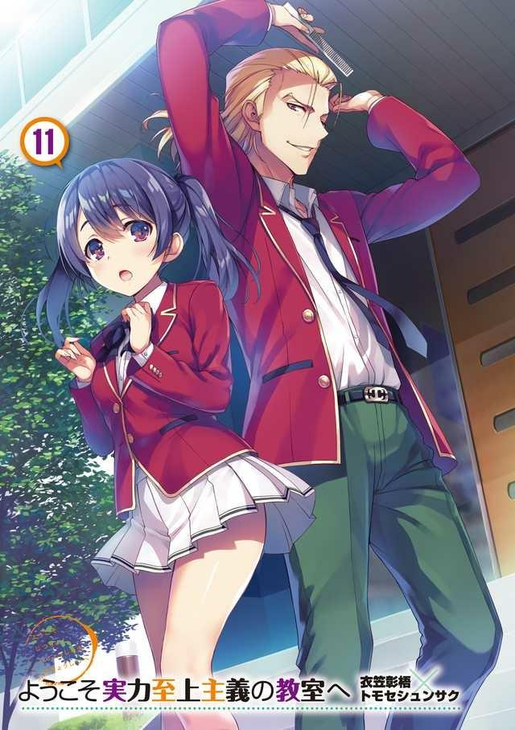
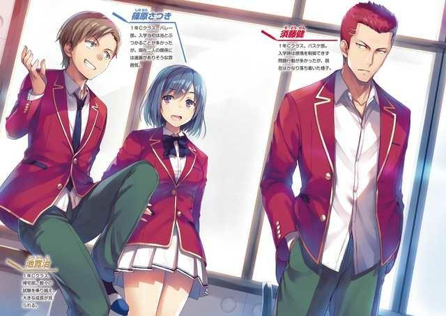
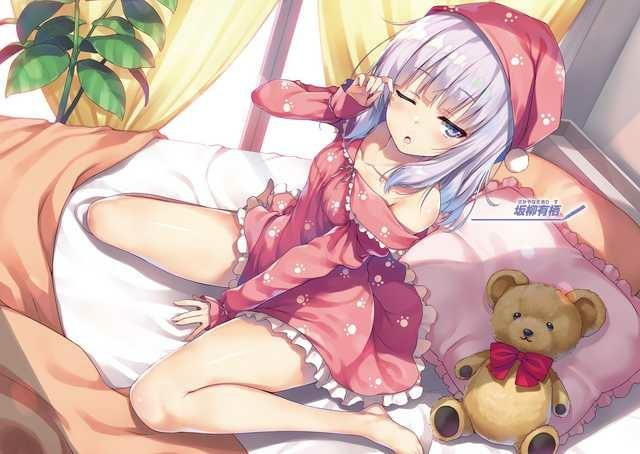
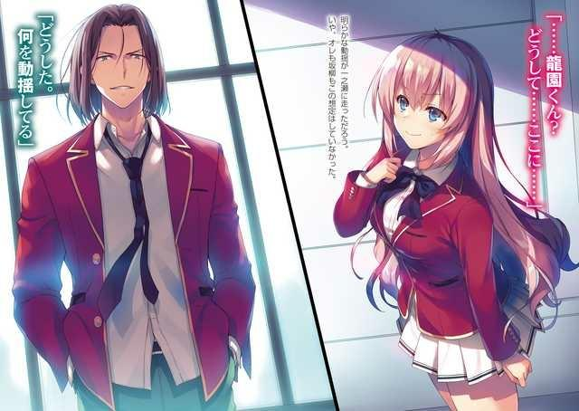
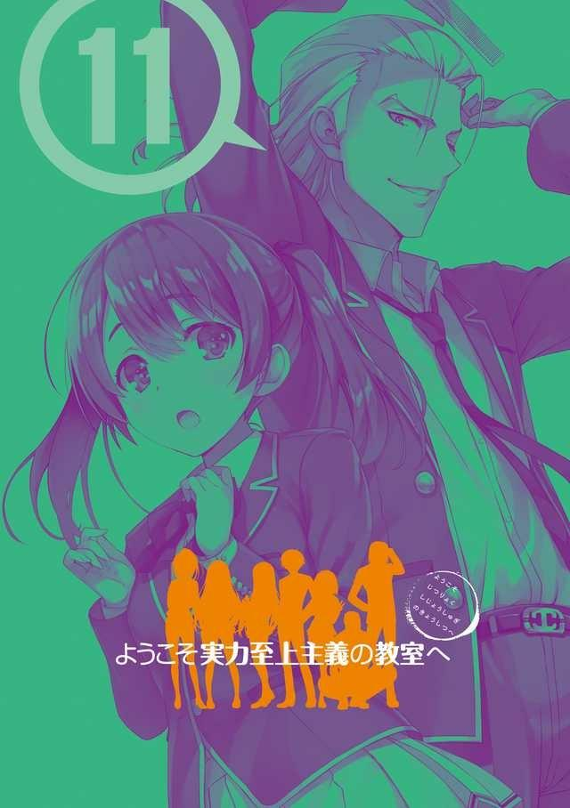
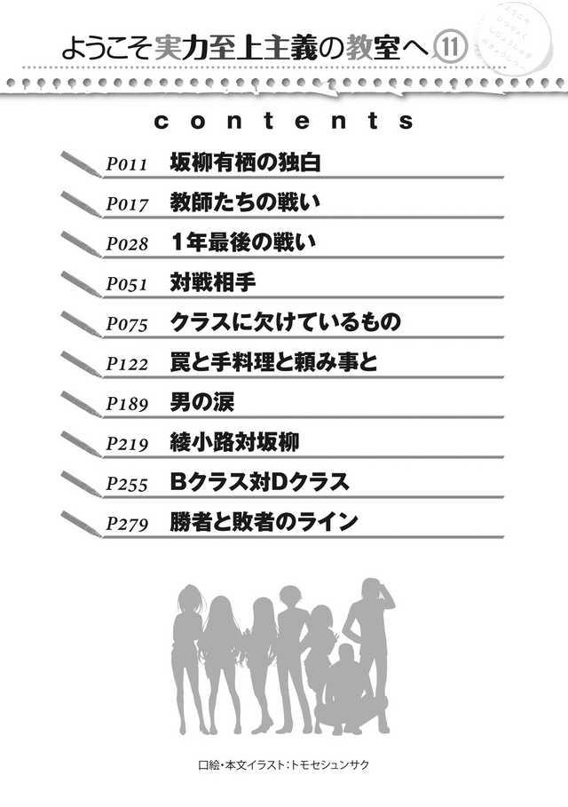
GLADHEIM
TRANSLATIONS
Youkoso Jitsuryoku Shijou Shugi no Kyoushitsu e - Volumen 11
EL MONÓLOGO DE SAKAYANAGI ARISU
Todavía puedo recordar la escena a través del panel de cristal de ese día, como si hubiera ocurrido ayer mismo.
Mi padre me llevó a una instalación situada en lo profundo de las montañas, cuyo exterior se teñía de un blanco puro. No, no era sólo el exterior.
Por lo que recuerdo, tanto los pasillos como las pequeñas habitaciones por las que pasamos estaban pintadas totalmente de color blanco.
Coloqué mis dos manos sobre el vidrio transparente, haciendo lo mejor que podía para ver lo que había más allá. El panel parecía ser una especie de espejo unidireccional para que no nos vieran desde el otro lado.
—¿Qué pasa, Arisu? Es raro verte tan interesada en algo.
—Este es un experimento que intenta crear artificialmente un genio. No hay manera de que no lo encuentre interesante.
—...Esa forma de hablar no es muy infantil, como siempre.
Mi padre habló, mostrando una sonrisa desconcertada mientras me levantaba en sus brazos.
Según mi padre, cualquiera que pasara por el plan de estudios de esta instalación sería, sin excepción, educado para convertirse en alguien excepcional. Es imposible que no tuviera dudas al respecto.
—Es sólo que este experimento parece tener muchos elementos problemáticos.
—¿Qué significa eso?
—Desde la perspectiva de los derechos humanos, parece atacar desde todos lados.
—Ja, ja, ja...
—Más importante aún, no creo que sea posible para ellos crear genios artificiales o algo así.
En el momento en que las personas nacen en este mundo, en el momento en que reciben la vida, su potencial está grabado en piedra. Todo es por la suerte que han tenido en el sorteo. Entonces, a veces se manifiesta en varios campos.
Esa es la verdad del mundo humano.
No pueden hacer más de lo que está tallado en su ADN. Reciben el despertar de la sangre transmitida por los ancestros o por una mutación repentina. En otras palabras, si quieres crear un genio, tienes que hacerlo a nivel genético.
La gente que nace ordinaria nunca escapará del reino de lo ordinario. No importa cuán bendecido sea su entorno, si alguien no es excelente desde el principio, no se convertirá en un genio. Esa ha sido mi creencia desde que era joven.
Esa fue la conclusión a la que llegué después de ver a mis compañeros de clase recibir una educación de primera calidad desde que era niña. Por eso este experimento es contrario a mi forma de pensar. Una vez dicho esto, estoy de acuerdo en que no es tan sencillo como para que el ADN por sí solo pueda explicarlo todo.
—Incluso si alguien se gradúa en esta instalación como lo mejor de lo mejor, ¿será realmente por este experimento?
—¿Qué te hace preguntar eso?
—Los niños superiores tendrán un ADN superior, es lo que pienso.
—Ya veo. El plan de estudios que estos niños están tomando es bastante intenso. Como has dicho, existe la posibilidad de que los ganadores restantes hayan sido todos excelentes desde el principio. Realmente eres tan sabia como tu madre. Incluyendo la personalidad.
—Eso me hace feliz. Ser comparada con mi madre es la forma más alta de elogio.
Honesta y obedientemente me tomé en serio las palabras de mi padre y una vez más continué mirando a los niños al otro lado del espejo. Niños con talento, niños sin talento, todos participaban en este programa de educación por igual.
Era un programa en el que las personas que empezaban a rezagarse desaparecían una a una.
—En última instancia, incluso si hay niños que sobreviven hasta el final, son bendecidos por los talentos de sus padres.
Aunque lo encontrara interesante, sentí que era un experimento sin sentido.
—Quién sabe, puede ser así, puede no serlo. Yo tampoco lo sé. Pero no puedo descartar la posibilidad de que estos niños estén destinados a cargar con nuestro futuro.
Siendo yo la niña que era, no entendía lo que el conocido de mi padre trataba de lograr. Mi vista se dirigió hacia lo que se reflejaba más allá del cristal.
—Desde hace un tiempo, ese niño parece haber resuelto esas tareas con calma y sin dificultades.
A la hora de cumplir con las tareas que se les presentan, todos los niños reflejados en nuestros ojos lo lograron. Sin embargo, estaban desesperados. Era obvio que hacerlo requería todo el esfuerzo que podían reunir. Ya fuera en el estudio o en el deporte, el nivel de la competencia aquí era mucho más alto en comparación con la de un niño normal. Y, sin embargo, entre ellos había una única existencia que exhibía anormalidades.
Cierto niño jugaba al ajedrez y derrotaba abrumadoramente a sus oponentes, uno tras otro. Entre los niños que podía ver más allá del cristal, él era la única existencia que robaba mi mirada y mi corazón. Al ver esto, mi padre parecía algo feliz pero algo triste mientras asentía.
—Sí, es el hijo de Sensei. Su nombre debe ser... Ayanokouji... Kiyotaka si recuerdo correctamente.
El Sensei era un conocido de mi padre y la persona que dirigía estas instalaciones. Era una persona que nunca se rendía ante nadie, y recuerdo que mi padre siempre mostró una actitud modesta cuando él estaba cerca.
—Es el hijo de Sensei, así que su ADN debe ser excelente, ¿verdad?
—Quién sabe. Por lo menos, Sensei nunca se ha graduado de una universidad prestigiosa ni posee un nivel atlético sobresaliente. Su esposa también es una mujer común y corriente. Sus padres tampoco mostraron señales de algún talento. Pero, Sensei tiene ambiciones más fuertes que nadie y un espíritu de lucha inquebrantable e indomable, eso es todo. Por eso se ha convertido en alguien tan grande. Hasta el punto de que él, en un momento dado, pudo mover el país.
—En ese caso, ¿no será ese niño el espécimen perfecto para este experimento?
Mi padre asintió con sentimientos contradictorios a mi pregunta.
—Bueno... creo que su padre sentirá que ese niño es perfecto para esto.
Pero... como yo lo veo, sólo puedo sentir lástima por él.
—¿Por qué?
—Desde el momento en que nació, ha vivido dentro de estas instalaciones.
Lo primero que vio no fue a su madre ni a su padre, sino el sencillo techo blanco de estas instalaciones. Si él se hubiera rezagado hace tiempo, probablemente podría haber vivido con su padre. O no, tal vez el hecho de que él continúe quedándose aquí le ha ganado el favor de su padre. Si es así, eso es muy...
En pocas palabras, nunca recibió el amor de sus padres. Qué solitaria y desolada debe ser esa vida. Dejando a un lado sus talentos, todavía había mucho que ganar y aprender a través del contacto físico con otras personas.
Abracé fuertemente a mi amado padre, quien a su vez me devolvió el abrazo.
—La meta final de esta instalación es que cada niño educado se transforme en un genio. Pero todavía está en la fase de prueba. Seguirá luchando por otros 50 o 100 años. No se trata de hacer que los niños reunidos aquí exhiban su talento cuando se conviertan en adultos, sino de proporcionar los cimientos para las generaciones futuras. Tanto los que
sobrevivieron como los que se rezagaron no fueron más que un lote de muestras.
Una vida de confinamiento dentro de esta instalación, sólo para que su existencia sea agregada a alguna base de datos en algún lugar.
La cara de mi padre mientras decía esas palabras parecía sufrir.
—¿No te gusta este lugar, padre?
—¿Hmm? ...¿Quién sabe? ...Honestamente no puedo apoyarlo. Si los niños de aquí se vuelven realmente superiores a todos los demás, si esta instalación se convierte en algo natural, entonces este debe ser sólo el desafortunado comienzo. Eso es lo que pienso.
—Quédate tranquilo. Yo personalmente lo destrozaré por ti. Demostraré que el talento no se decide por la educación, sino desde el momento en que nace la gente.
No puedo perder con los niños que se crían en esta instalación, no importa qué ni cuántos sean. Yo, que heredé un ADN superior, tengo que detenerlo.
—Sí, espero mucho de ti, Arisu.
—Por cierto, padre. Creo que quiero empezar a jugar al ajedrez...
Abrí los ojos y me senté aún medio dormida.
—Qué sueño tan nostálgico...
Quizás se debe a la confrontación que se avecinaba. Pensar que recordé ese día. Pero desde el momento en que te conocí hasta ahora, nunca lo he olvidado.
Estaba convencida de que llegaría el día en que te encontraría de nuevo cara a cara.
LA BATALLA DE LOS MAESTROS
Un cierto día de febrero, poco antes de que se anunciara oficialmente el examen especial provisional para la votación en clase...
El profesorado de la Preparatoria estaba continuamente ocupado con su trabajo.
Preparaban todo para las próximas promociones, expulsiones y graduaciones de sus estudiantes.
Además, también preparaban los exámenes finales especiales para todo el cuerpo estudiantil.
Era un período muy ocupado en el que estaban constantemente abrumados por el trabajo.
Ninguno de los profesores tenía la libertad de hacer otra cosa que no fuera dedicarse a su trabajo, todos los días.
Sin embargo, los profesores a cargo de los estudiantes de primer año tenían mucho más en mente que sus colegas.
—Esto debería concluir todo lo referente a los detalles del examen final especial del primer año, así como la incorporación del nuevo sistema que pondremos en marcha.
Un hombre terminó su explicación sobre el examen especial final de este año delante de todos los miembros del personal.
Cuando se habló de los estudiantes de segundo y tercer año, la explicación no había sido muy diferente de la habitual. Sin embargo, eso no fue así para los de primer año.
—Si hay alguna pregunta, por favor siéntanse libres de hacerla.
Dentro de esta atmósfera tensa y cortante, el hombre miró a su alrededor a cada uno de los profesores que escuchaban atentamente.
El silencio duró varios segundos.
—Si me permite, Director interino Tsukishiro.
Al levantar la mano, el profesor del primer año de la clase A, Mashima-sensei, rompió el silencio que había envuelto la sala de profesores.
Tanto Chabashira-sensei como Hoshinomiya-sensei, profesoras del mismo grado, dirigieron su mirada hacia Mashima-sensei.
El hombre, el director interino Tsukishiro, ya se había dado cuenta de que muchos de los profesores de primer año tenían dudas sobre su plan. Más bien, pensó que habría sido ilógico si no hubieran parecido al menos un poco dubitativos.
Tsukishiro estaba evaluando su valor como seres humanos.
Quería ver si eran o no meros miembros trabajadores de la sociedad. Si eran o no el tipo de maestros que sólo se preocupan por su sueldo.
—¿Qué quieres decir, Mashima-sensei?
Después de anticiparse a la pregunta de Mashima-sensei, Tsukishiro dejó al descubierto una sonrisa.
—Mientras que los exámenes especiales para el segundo y tercer año son tan difíciles como lo han sido en años anteriores, el examen especial para el primer año es mucho más difícil de lo habitual. Hay un gran riesgo de que haya expulsiones debido a este examen provisional 'Voto de la clase'...
Como profesor a cargo de los alumnos de primer año y por el bien del futuro de los niños, Mashima-sensei habló en contra de Tsukishiro, sin temer su título de Director Interino de la escuela. Y sin esperar una respuesta, continuó protestando.
—Perdone mi grosería, Director Interino, pero acaba de ser nombrado para su puesto en esta escuela. Aunque entiendo que tomó esta decisión basándose en todo lo que ha pasado hasta ahora, creo que es un poco inapropiado que hagamos algo que obligue a las expulsiones sólo porque aún no ha habido ninguna en el primer año.
En apariencia, divertido por la pregunta de Mashima-sensei... o mejor dicho, por las protestas de Mashima-sensei, Tsukishiro sonrió con una blanca y dentada sonrisa.
—Un gran riesgo de que haya expulsiones, ¿verdad? ¿No han tenido los estudiantes que temer la expulsión durante cada examen especial hasta ahora? Las reglas de esta escuela establecen que obtener una sola calificación reprobatoria resultaría en la expulsión, ¿verdad? No creo que una preparatoria ordinaria tenga un sistema tan estricto en marcha.
—Estoy hablando de lo poco razonable que es. En efecto, los estudiantes que no pueden alcanzar un cierto umbral son expulsados. Este sistema no está destinado a ser indulgente. La verdad es que ese mismo sistema ha provocado la expulsión de numerosos estudiantes cada año.
Esta escuela realiza varios exámenes especiales cada año, y los mantiene dentro de un rango de dificultad aceptable.
Manteniéndose dentro de esos límites, este grupo de estudiantes de primero casi ha pasado todo el año sin ninguna expulsión. No queda claro si es porque su nivel de habilidad es diferente al de los otros grados, pero debe haber una razón por la que han logrado llegar tan lejos sin perder a nadie. Para Mashima-sensei, es importante aprovechar esa habilidad y ayudar a favorecerla durante el mayor tiempo posible.
Para Tsukishiro, sin embargo, es diferente.
—Si sólo se trata de expulsar a muchos estudiantes, ¿no haría lo mismo este examen?
—No. Este examen provisional es obviamente diferente a las políticas que habíamos tenido hasta ahora. No puedo aprobar algo que prácticamente obliga a las expulsiones.
Él solo, Mashima-sensei, se negaba obstinadamente a retroceder, mientras que el resto de los profesores simplemente permanecían en silencio.
—Además, decidió abruptamente introducir un sistema completamente nuevo para el examen final especial de este año. Algo así nunca había sucedido antes, y tampoco nos ha dado ninguna razón para ello.
La resistencia de Mashima-sensei era inútil. Los profesores lo sabían desde el principio.
Sería imposible revocar la decisión. Simplemente no se podía cambiar.
—Parece que la forma de pensar de Mashima-sensei es un poco anticuada.
¿Nunca has considerado la posibilidad de que la forma en que se han hecho las cosas hasta ahora esté mal?
Desde la sala de profesores, el intercambio entre Tsukishiro y Mashima-sensei continuó repitiéndose. Sin embargo, era dolorosamente obvio que Mashima-sensei estaba en desventaja. Como simple profesor, no era rival para Tsukishiro.
—Los niños más pequeños absorben la información mucho mejor de lo que la mayoría de los adultos piensan. Con eso en mente, decidí que no participaran los estudiantes de segundo y tercer año, reduciendo el enfoque del examen a sólo los estudiantes de primero. Después de todo, no se han contaminado completamente por la escuela. Si este nuevo sistema resulta exitoso, será fácil probarlo en los estudiantes de primer año en el futuro.
—Estos alumnos de primer año han llegado hasta aquí sin expulsiones.
¿Realmente desea poner fin a esto, así como así?
—Lo bien que lo hacen a corto plazo no tiene sentido. Se trata de lo bien que lo hagan en el futuro. Mantengámonos enfocados en el futuro.
Tsukishiro reprendió a Mashima-sensei una vez más antes de continuar con su argumento.
—El gobierno tiene grandes expectativas para esta escuela. Es una nueva escuela donde se han llevado a cabo proyectos experimentales, y su historia es todavía escasa. Por eso creo que deberíamos estar dispuestos a intentar todo tipo de cosas.
—No hay nada malo en estar enfocado en el futuro. Sin embargo, me parece que trata el actual grupo formado por los alumnos de primer año como conejillos de indias. Como profesor titular, eso es algo que simplemente no puedo aprobar.
Mashima-sensei continuó desafiando a Tsukishiro directamente, intentando por todos los medios a su alcance cambiar la dirección de los exámenes especiales.
Pero, la implementación del examen provisional para la votación en clase ya había sido decidida. Probablemente era imposible que Mashima-sensei lo detuviera ahora.
—...Mashima-sensei, es suficiente.
Consciente de lo inútiles que eran sus acciones, Chabashira-sensei finalmente intervino después de que Mashima-sensei casi llegara a su fin.
Por un momento, Mashima-sensei se tragó las palabras que estaban a punto de salir a raudales.
Sin embargo, el que presionó el asunto de nuevo no fue otro que el propio Tsukishiro.
—No es un problema. Si tienes algo que decir, me gustaría escucharlo todo. Después de todo, puedo entender la ansiedad que todos los profesores deben sentir ahora mismo. ¿No es así, Mashima-sensei?
—Entonces, por casualidad, ¿podría al menos reconsiderarlo?
Mashima-sensei le preguntó a Tsukishiro si reconsideraría el examen especial provisional.
Parecía que Tsukishiro le ofrecía un salvavidas, pero no fue así.
A diferencia del presidente Sakayanagi, el director interino Tsukishiro no tenía la menor intención de escuchar las opiniones del profesor.
—¿Reconsiderar? No es tan simple. Aunque sea temporal, el director aquí soy yo. Es decir, aunque el director tiene la responsabilidad de determinar las políticas y directrices de esta escuela, el director sigue siendo sólo una
marioneta. Dicho esto, no soy nada más que alguien que fue expresamente enviado aquí por un organismo corporativo superior respaldado por el gobierno.
Con esas palabras, la demostración de resistencia de Mashima-sensei rápidamente se quedó en nada.
Tsukishiro dejó claro que sus opiniones estaban en segundo lugar. El futuro de la Preparatoria estaba en primer lugar.
—¿Así que quiere decir que no importa si los estudiantes son expulsados uno tras otro debido a estas estrictas reglas?
—Los que no se adapten serán eliminados. Así es como funciona la sociedad... no, esa es la naturaleza misma. Además, ¿no nos hemos preocupado ya al permitir la incorporación de puntos de protección?
Deberías estar bastante satisfecho con eso, ¿verdad?
La atmósfera tensa gradualmente comenzó a calmarse.
La lenta reunión matutina también estaba llegando a su fin.
—En resumen, el actual presidente, el Sr. Sakayanagi, ha sido puesto bajo arresto domiciliario debido a las sospechas de conducta impropia. Si ese es el caso, simplemente no puedo heredar las políticas educativas que han sido establecidas por ese tipo de persona. Por supuesto, espero que sea liberado de todas las sospechas y que vuelva a su puesto lo antes posible, pero...
Con un simple aplauso, Tsukishiro miró rápidamente a cada uno de los maestros.
—El tiempo casi se termina, así que dejemos las cosas aquí. Oh, eso me recuerda. He investigado si nuestra escuela puede celebrar un festival cultural el año que viene. Creo que me gustaría escuchar todas sus opiniones sobre eso, así que espero escucharlas cuando llegue ese momento.
—¿Un festival cultural? Por principio, deberíamos dudar en hacer cualquier cosa que implique abrir la escuela al mundo exterior...
Esta vez, también dudas surgieron de los profesores titulares de los alumnos de segundo y tercer año.
—Esa forma de pensar anticuada es bastante problemática. Creo que para que seamos una escuela más reconocida a nivel nacional, debemos cambiarla tantas veces como sea necesario. Naturalmente, tendremos que seleccionar cuidadosamente a quién invitaremos a entrar, pero no hay necesidad de preocuparse por eso. No abriremos la escuela al público en general, sino después de un estricto proceso de selección, sólo se abrirá a aquellos que conocen bien su funcionamiento, como los políticos. De esta manera, la información sobre nosotros no se filtrará al mundo exterior excesivamente. En cualquier caso, me gustaría que todos nosotros exploráramos la oportunidad con una mente abierta. Pueden retirarse.
Así de simple, el director interino Tsukishiro terminó la reunión. La batalla de los profesores llegó a su fin, y los profesores fueron incapaces de hacer algo al respecto.
PARTE 1
Después de que Tsukishiro dejara la sala de profesores y antes de que empezaran las clases del día...
—Mashima-sensei, Hoshinomiya-sensei. Me gustaría pedirles un poco de su tiempo.
Chabashira-sensei llamó a sus dos compañeros profesores. Ellos eran amigos y rivales que, en el pasado, compitieron en esta misma escuela.
Al conocerse desde hace mucho tiempo, los dos reunieron sus documentos importantes y siguieron a Chabashira-sensei fuera de la sala de profesores sin hacer ninguna pregunta. Caminaron juntos por el pasillo mientras se dirigían a donde los estudiantes los estarían esperando.
—Es deprimente, ¿no? Tenemos que anunciar un examen en el que alguien va a ser expulsado.
Hoshinomiya-sensei fue la primera en romper el hielo.
Con un profundo suspiro, su mirada se posó en el registro de asistencia.
—Me pregunto quién será el que desaparezca...
A pesar de que no era fácil, Hoshinomiya-sensei seguía intentando enfrentarse a los hechos.
—No estoy segura de que alguien lo haga. No hay muchas maneras de evitarlo, pero todavía tienen algunas opciones.
—Quieres decir, anular la expulsión con veinte millones de puntos,
¿verdad?
A pesar de decir esto, Hoshinomiya-sensei también era muy consciente de la realidad de la situación.
Tal y como estaban las cosas, ninguna de las clases tenía tantos puntos.
—Si hay un lado positivo, supongo que es bueno que no tengan que pagar 300 puntos de clase. Las expulsiones forzadas son algo con lo que todavía están experimentando. Aunque eso podría ser obvio.
Normalmente costaría veinte millones de puntos privados y 300 puntos de clase anular una expulsión, pero esta vez, los puntos de clase estaban exentos.
Aunque, eso solo no fue suficiente para convencer a los estudiantes y profesores de aceptar las expulsiones obligatorias.
—En cualquier caso, me siento insatisfecha con la forma de hacer las cosas del Director Interino Tsukishiro.
—Bueno, no estás sola en eso, Sae-chan. Apareció repentinamente y empezó a hacer lo más irrazonable que quería, ¿no?
Hoshinomiya-sensei se abrazó a Chabashira-sensei como si se aferrara a ella, sólo para ser alejada con una expresión de enfado.
—Quejarse no va a cambiar nada. Si dices demasiado, tu cuello volará.
—¿Realmente eres tú quien nos dice eso, Mashima-kun? Tú mismo te estabas peleando con el director interino. Me puso súper-duper nerviosa. Y
después de todo eso, ¿estás diciendo que no podemos hacer lo mismo?
—Chie tiene razón. Ese hombre podría despedir a los profesores sin importarle nada. Probablemente sabe que siempre hay muchos reemplazos. De hecho, eso es seguamente lo que quiere.
—Tal vez planea deshacerse de los maestros que se le oponen, como Mashima-kun, y luego contratar nuevos que le sean más convenientes.
Chabashira-sensei y Hoshinomiya-sensei estaban considerando la idea de que el discurso de Tsukishiro en la sala de profesores podría haber sido un complot para eliminar a los profesores que se oponen a él.
Mashima-sensei tampoco estaba en desacuerdo con la idea.
—Tú también, Sae-chan. Pasaste por mucho para llegar a la clase C, así que no hagas ninguna locura, ¿ok?
—Pareces bastante tranquila aunque hemos empezado a cerrar la brecha.
—De ninguna manera... Sae-chan, no estarás fantaseando con que tu clase pueda llegar hasta la clase A, ¿verdad?
Hoshinomiya-sensei miró fijamente a Chabashira-sensei con ojos curiosos y redondos, obligando a Chabashira-sensei a darse la vuelta y mirar hacia otro lado.
Mientras que Hoshinomiya-sensei tenía el hábito de decir cosas distraídamente a veces, en la mayoría de los casos, sus palabras eran en realidad cuidadosamente calculadas.
Habiendo estado familiarizada con ella durante tanto tiempo, Chabashira-sensei conocía muy bien esta tendencia suya.
—...No. Ni siquiera yo soy tan tonta.
—Oh, bien. Si hubieras dicho que sí... eso hubiera sido como, ¡demasiado para mí!
Hoshinomiya-sensei agitó juguetonamente sus manos delante de ella, actuando como si se hubiera visto abrumada por la sorpresa.
Mashima agitó no pudo soportar más tiempo escuchar su tonta conversación.
Eran como Carnívoras enfrentadas en la sabana. Sólo una de ellas saldría victoriosa.
—¿Siguen preocupándose por lo que pasó en aquel entonces? ¿Cuántos años tienen que pasar? Ant-
—Mashima-kun. La cantidad de tiempo que ha pasado no tiene nada que ver con esto.
—Ella tiene razón. Es completamente irrelevante.
Aunque Mashima-sensei trató de interrumpir para mediar, las dos lo miraron rápidamente y lo obligaron a retroceder.
A pesar de que Mashima-sensei se había enfrentado con valentía a Tsukishiro, todavía había algunos adversarios a los que no se atrevería a enfrentarse.
—...Ya veo. En cualquier caso, no estoy en posición de decir nada, pero no traigan sus sentimientos personales a estos próximos exámenes, ¿de acuerdo?
—No haríamos algo así. ¿Verdad, Chie?
—Por supuesto que no. ¿Verdad, Sae-chan?
Chabashira-sensei y Hoshinomiya-sensei seguían intentando sondearse mutuamente, pero en la superficie, lo ignoraron como si nada hubiera pasado.
—Sólo abstente de hacer cualquier cosa descuidada, Chie. Es todo lo que voy a decir.
Con eso, Chabashira-sensei rápidamente terminó la conversación y se alejó, dirigiéndose a la clase C.
Los dos se quedaron en silencio mientras ella se iba.
—No estás metiendo tus sentimientos personales en esto, ¿verdad?
Mashima-sensei habló mientras veían a Chabashira-sensei irse de mal humor.
—No me metas en el mismo saco que ella, Mashima-kun. Ya he superado cualquier apego que haya tenido. Pero esa chica no ha cambiado en absoluto desde entonces. Nunca será capaz de superar sus días de estudiante. Es por eso que todavía está atascada con ese inútil primer amor suyo, pero nunca lo admitiría.
—...Tienes una mirada terrible en tu cara.
—¿Eh? No puede ser. ¿Realmente la tengo? — Entonces Hoshinomiya sacó un espejo portátil e hizo una dulce sonrisa—. ¡Okie-dokie! Hoy también estoy súper guapa. ¿No lo crees?
—No me preguntes.
—¡Qué cruel! Bueno, lo que sea.
Mientras Hoshinomiya-sensei guardaba su espejo, Mashima-sensei le ofreció un consejo.
—Ten cuidado de que no quiten la alfombra de debajo de ti. La clase D de este año... No, la clase C es diferente a la habitual.
Aunque todavía había una brecha en los puntos de clase, ni siquiera los profesores podían predecir cómo serían los futuros exámenes especiales.
—Puede que tengas razón, pero no estoy muy preocupada ya que tengo a Ichinose-san de mi lado. Además...
—¿Además?
—Si parece que se acercan a nosotros, los aplastaré yo misma.
—No meterás la nariz en una competición destinada a los estudiantes,
¿verdad?
—No haría nada de eso. Es sólo que no voy a ser indulgente con Sae-chan.
No quiero interferir hasta el punto de que los profesores empiecen a pelearse entre ellos.
—Suenas muy seria.
—Eso es porque no puedo permitirme perder, especialmente con Sae-chan.
Desde sus días de estudiantes, ese era el tipo de relación que tenían.
Tanto como amigas, como rivales.
LA BATALLA FINAL DEL PRIMER AÑO
8 de marzo.
Dentro de la clase C, Chabashira-sensei pronto anunciaría el examen especial final del año.
Hay treinta y nueve pupitres en el aula.
Habían sido cuarenta hasta hace unos días, pero se dio por sentado y ahora, uno de ellos ya no está.
Esto es debido a que Yamauchi Haruki fue expulsado.
No sólo la clase C se enfrentó a esto. Manabe de la clase D y Yahiko de la clase A también lo fueron.
No hay duda de que estas expulsiones dejaron una marca en todo el cuerpo estudiantil de primer año.
Cualquier esperanza de encontrar una salida se hizo añicos.
Antes de que pudieran superar la conmoción y el dolor de todo lo que había sucedido, el tiempo siguió avanzando.
Al sonar la campana, la clase comenzó este día y Chabashira-sensei entró en el aula.
El salón estaba completamente libre de parloteo inútil.
—Sin más preámbulos, ahora anunciaré el examen especial final.
Chabashira-sensei comenzó a explicar los detalles del examen especial final del primer año.
Tal y como había predicho, nadie estaba dispuesto a decir nada sobre Yamauchi.
Ike y Sudou, sus amigos más cercanos, hacían todo lo posible por aceptar la realidad.
—Terminaremos el año con un examen final especial en el que se les pedirá que muestren la culminación de todo lo que han aprendido hasta ahora, incluyendo el conocimiento, la habilidad física, la cooperación, y tal vez incluso un poco de suerte. En resumen, todos tendrán que demostrar por completo el alcance de su potencial.
Normalmente, habría una oleada de preguntas y quejas por parte de Ike.
Sin embargo, la escuchó en silencio.
Lo más probable es que desconfiara del hecho de que podría ser el siguiente en ser expulsado.
—El examen especial se llama 'Examen de Selección de Eventos', un examen en el que cada clase competirá en términos de su capacidad integral. La clase contra la que competirán se decidirá de acuerdo con las reglas, de manera similar a como se hizo durante el examen Paper Shuffle.
El examen de selección de eventos. Me preguntaba de qué se trataría este último examen especial del año escolar.
—Para empezar, usaré estas tarjetas para que la explicación sea más fácil de entender para todos ustedes. Hay diez tarjetas blancas y un cierto número de tarjetas amarillas, diseñadas según el número de estudiantes de la clase.
Mientras hablaba, Chabashira-sensei pegó cada una de las tarjetas en blanco en la pizarra y las alineó.
Cada carta era aproximadamente del mismo tamaño que un naipe. Mientras que las diez cartas blancas no tenían nada escrito, cada una de las amarillas parecía tener el nombre de un estudiante en ellas.
En total, cuarenta y ocho cartas fueron colocadas en la pizarra.
Había una tarjeta amarilla menos que las de los alumnos de nuestra clase. Esto me pareció importante.
—Para empezar, explicaré el propósito de estas diez tarjetas blancas.
Tendrán que hablar las cosas entre ustedes y decidir los diez eventos que les gustaría hacer, los cuales anotarán en estas tarjetas.
Tan pronto como dijo esto, Ike mostró una expresión un tanto complicada.
Notando cómo se esforzaba para no interrumpir su explicación, Chabashira-sensei habló de nuevo, sus palabras mezcladas con diversión.
—Si hay algo que te preocupa, ¿por qué no hablas?
—N-no, es sólo que... ¿no se enfada con nosotros cuando la interrumpimos mientras aún está hablando?
Ike obviamente se sentía angustiado por esto.
—De cualquier manera, no puedo tranquilizarme a menos que te desahogues de esa tontería.
En el pasado, Chabashira-sensei sólo aceptaba preguntas al final, pero esta vez, le pareció bien escucharlo a la mitad.
Muchos de nuestros compañeros de clase dirigieron su atención hacia él.
Aunque estaba desconcertado con su cambio de actitud, Ike procedió a expresar sus dudas.
—Entonces, uhm... uhh... ¿Qué quiso decir exactamente con "eventos"?
—Escritura, Shogi, jugar a las cartas, béisbol... Son libres de anotar cualquier evento que crean que pueden ganar. También depende de ustedes establecer las reglas de cómo se desarrollará cada evento.
—¿Eh? ¿Nos permiten elegir lo que queramos?
A pesar de que dijo que nos correspondía a nosotros decidir, parecía que Ike y los demás no entendían.
—Aunque se les permite elegir lo que quieran, existen algunas restricciones. Por ejemplo, si escogen un juego o concurso dudoso, con el que no mucha gente está familiarizada, nadie más que los que lo proponen
tienen posibilidades de ganar. Además, las reglas del evento también deben ser justas y fáciles de entender. Por lo tanto, después de presentar sus eventos, la escuela juzgará si son apropiados o no, y actuará como última instancia en el asunto.
Desde luego, la mayoría de la gente no tendría posibilidades de ganar si se implementaran reglas peculiares, o si se eligieran deportes o juegos muy extraños que sólo favorecieran a un pequeño grupo de entusiastas dedicados.
Dicho esto, todavía me pregunto si hay más restricciones en las reglas aparte de esto.
—Además, las reglas deben tener normas para evitar resultados neutrales.
En el juego de Go, por ejemplo, si ambos lados tienen la misma puntuación de territorio y capturas enemigas, el juego termina en un empate. En cuyo caso, el lado blanco, como concesión por ser el jugador que iba segundo, recibiría medio punto adicional y ganaría el juego. En el Shogi, como otro ejemplo, al principio puede parecer imposible que el juego termine en un empate, pero ocurre en raras ocasiones, como cuando ambos reyes se posicionan en sus respectivas zonas de promoción. Si esto ocurre, el juego está en un punto muerto y el ganador es el jugador con más piezas en juego. Se les requerirá que establezcan reglas detalladas como estas con anticipación. Si presentan un evento sin incluir los desempates para evitar posibles resultados neutrales, entonces será rechazado.
Eventos que aseguran que alguien gane, sin ser demasiado extraño.
Aunque había innumerables opciones para elegir, parecía que, hasta cierto punto, estaba restringido a mantenerse dentro del ámbito de un estudiante.
—Bueno, intentemos ilustrarlo con un ejemplo fácil de entender. Ike. ¿En qué eres bueno? Cualquier cosa está bien, así que sólo dilo.
—Uh... ¿En qué soy bueno...? —Ike comenzó a pensar, al parecer incapaz de encontrar algo de inmediato—. ¿Supongo que soy bastante bueno en cosas como piedra, papel o tijera?
Después de escuchar una respuesta tan ridícula, el resto de la clase fue incapaz de contener su risa.
Sin embargo, Chabashira-sensei se lo tomó en serio y escribió "piedra-papel-tijera" en una de las tarjetas blancas.
—Bien, supongamos que eligen piedra-papel-tijera como uno de los eventos.
Sin esperar que se tomara en serio su respuesta, Ike y el resto de la clase se quedaron con expresiones de estupor.
—Entonces, ¿cuáles son las reglas?
—Uhm... ¿Al mejor de cinco?
Chabashira-sensei escribió la regla de Ike en la parte inferior de la tarjeta.
—El evento es bien conocido, y las reglas son claras y simples. No habría ninguna razón para que la escuela lo rechazara.
—No tuvo ningún problema con ello...
A pesar de que fue un evento que surgió de una respuesta torpe, la escuela no parecía tener ningún problema con ello.
—Ahora, sólo repitan esto nueve veces más y habrán terminado.
Chabashira-sensei tomó un trozo de tiza y comenzó a escribir en la pizarra.
—Este es el programa del examen, que también es algo importante que deben tener en cuenta. Se dividirá básicamente en tres fases.
Examen especial
8 de marzo ・ Se anuncia el examen especial, y se establecen los enfrentamientos entre clases.
15 de marzo ・ La selección de eventos finaliza, y los diez eventos de la clase contraria son revelados junto con sus reglas.
22 de marzo ・ Comienza el examen de selección de eventos.
—P-pero sensei, ¿no nos llevaría demasiado tiempo competir en más de veinte eventos?
—El día del examen, cada clase reducirá sus diez eventos y elegirá los cinco mejores y los presentará. En otras palabras, habrá diez eventos, no veinte.
En este punto, Horikita habló.
—Así que básicamente, cinco de los diez eventos son sólo un engaño...
¿...que se supone que son información falsa para engañar a nuestros oponentes?
—Supongo que los eventos pueden jugar ese papel también. De los diez eventos elegidos, siete de ellos serán seleccionados al azar por un sistema automatizado preparado por la escuela. Así es como funcionará.
Sin negar nada, Chabashira-sensei confirmó la afirmación de Horikita.
Comparado con los exámenes especiales anteriores, parecía que éste se extendería por un período de tiempo más largo.
Podía asumir que eligieron realizar siete eventos porque querían asegurarse de que hubiera un desempate.
Como no habría ningún empate, me llevó a preguntarme si el ganador se decidiría con la primera clase en obtener cuatro victorias de los siete eventos.
—Aunque el resultado se decida antes de que sucedan todos los eventos, el examen continuará hasta que el evento final termine. Esto se debe a que el resultado de cada evento influirá en el cambio de puntos de clase. En otras palabras, aunque se hayan determinado los ganadores y perdedores, la competición continuará hasta el final. La fecha límite para finalizar los diez eventos será el domingo 14 al final del día. Sus eventos deberán ser revisados por la escuela, así que será más seguro que todos ustedes registren cada evento tan pronto como lo decidan.
—¿Qué pasa si no logramos llegar a diez eventos para el 14?
—Si eso sucede, la escuela llenará los faltantes con eventos preestablecidos. Dicho esto, no deben asumir que estos serán favorables para ustedes. Los eventos seguramente terminarán haciendo más daño que bien.
Definitivamente necesitamos presentar todos nuestros eventos, sin importar lo que pase.
—Otra cosa importante a tener en cuenta es que no se permite presentar el mismo evento dos veces. Supongamos que han presentado un evento de fútbol que determina el resultado al mejor de tres. Si tratan de presentar otro evento de fútbol con diferentes reglas donde el resultado se decide por un tiro penal, será rechazado. Les aconsejo que tengan esto en mente.
—¿Es posible que nos retractemos de un evento después de haberlo presentado?
—Eso no será permitido.
—Entonces... ¿hay alguna restricción sobre quién, o cuántas veces alguien puede participar en los eventos el día del examen?
—Ciertas partes de las reglas que deberán seguir serán difíciles de entender con sólo una explicación verbal, por lo que la escuela preparó este folleto que contiene los detalles específicos. Siéntanse libres de hacer copias de él después. Debe tener las respuestas que estás buscando, Horikita.
Hubiera sido bueno que la escuela preparara una copia para cada uno de nosotros, pero es posible que no lo hicieran a propósito.
Con una sola copia, toda la clase tendrá que reunirse para mirarlo al mismo tiempo.
De esa manera, es muy probable que provoque una conversación entre todos.
—Ya escribí esto en la pizarra, pero los diez eventos que elijan serán entregados a la clase contraria el día 15. Después de todo, es difícil hacer
una competición justa si sus oponentes no saben qué tipo de eventos y reglas eligieron.
En otras palabras, tenemos aproximadamente una semana para estudiar, practicar, formular planes y hacer cualquier otro preparativo que necesitemos.
También es muy probable que haya una batalla para tratar de averiguar los eventos preferidos de la otra clase el día del examen.
—Además, después de que finalice el examen del día 22, tendrán el día 23
libre. Después de la ceremonia de graduación del 24 y la ceremonia de clausura del 25, serán libres de disfrutar de sus vacaciones de primavera completamente relajados.
Me imaginé que nuestra motivación para seguir adelante dependería en gran medida de si terminábamos perdiendo o ganando.
En cualquier caso, pude captar la idea general del Examen de Selección de Eventos.
Sin embargo-
Basado en la expresión de Chabashira-sensei, parece que todavía hay algo importante que no ha mencionado.
—Todavía hay otra parte importante en esto además de la elección de los eventos. Para manejar adecuadamente un número tan grande de personas, tendrán que seleccionar a alguien para que juegue el papel de comandante.
Tengan en cuenta que este comandante no podrá participar directamente en los eventos.
—¿Comandante...?
Esta parecía ser la razón por la que sólo hay treinta y ocho tarjetas amarillas.
—Es un papel importante para alguien que sea capaz de adaptarse sobre la marcha. Se puede pensar en ello como un papel de apoyo que participa en cada evento, actuando como un salvavidas. Por ejemplo, pueden sustituir a un jugador ausente o resolver los problemas difíciles que surjan.
Esto tampoco se limita a los deportes. Al comandante se le también se le darán los medios para intervenir en juegos como el Shogi o el Go.
No se trata sólo de la habilidad fundamental de los estudiantes. Las contribuciones hechas por el comandante también son importantes.
—Cómo exactamente el comandante estará involucrado en todo dependerá también de ustedes. Usando piedra, papel o tijera como ejemplo... pueden crear reglas como: "El comandante puede unirse una vez a su propia discreción" o "El comandante puede cambiar al estudiante que participa en el encuentro". Depende de ustedes.
Esto implica que las intervenciones de los comandantes serán generalmente permitidas siempre y cuando sean justas.
En algo como el béisbol o el fútbol, dar al comandante la posibilidad de cambiar a los jugadores sería como asignarles el papel de entrenador principal del equipo.
A través de los siete eventos, la participación del comandante será una parte importante de todo el examen.
—Los comandantes recibirán puntos privados cuando la clase salga victoriosa, pero al mismo tiempo tendrán que soportar las consecuencias cuando la clase se enfrente a la derrota. De hecho, cuando una clase pierda, el comandante será responsable y será expulsado de la escuela.
Esta vez el perdedor también será expulsado a la fuerza.
—En este examen especial, tener un comandante será crucial. Avanzar sin uno no será permitido. Si lo hablan entre ustedes y no pueden decidirse por uno, vengan a hablar conmigo y elegiré a alguien apropiado para el papel.
Una vez más, tenemos que nominar a una persona para que asuma la responsabilidad.
El punto de protección que conseguí durante el examen especial provisional parece que ahora será una gran molestia.
Soy consciente de que muchos de mis compañeros ya están mirándome o pensando en mí.
Un punto de protección es la única forma posible de anular una expulsión.
Al nombrarme a mí, el poseedor del único punto de protección, como comandante de la clase, podremos evitar cualquier expulsión, aunque terminemos perdiendo el examen.
Una vez dicho esto...
¿De verdad les parece bien que yo sea el comandante para que todos eviten el riesgo de expulsión?
O, ¿pedirán a una excelente estudiante como Horikita que sea la comandante para maximizar nuestras posibilidades de ganar? Nuestros compañeros seguramente estarán de acuerdo con cualquiera de las dos cosas.
Si alguien que no sea yo se ofreciera como voluntario para el puesto, la mayoría de ellos seguramente no se opondrá.
Al mismo tiempo, si nadie quiere hacerlo, las expectativas de todos se centrarán en mí.
Horikita habló de nuevo.
—¿Cómo se decidirá nuestro oponente?
—Después de que cada clase seleccione a sus comandantes, se reunirán en el salón multiusos después de clases hoy. Habrá una rifa en la que el comandante de una clase tendrá la opción de elegir quiénes serán sus oponentes. Deberán decidir con antelación a quién elegirán si ganan la rifa.
Por lo que dijo, el ganador de la rifa podrá elegir la clase que quiera, y las dos clases restantes se emparejarán automáticamente.
—Entonces, deberíamos elegir la clase D, ¿no? ¡Nuestras posibilidades de ganar contra ellos serían mucho mayores!
—Es cierto que, dado que tienen una coordinación relativamente peor, probablemente tendrían más éxito si eligieran ir en contra de una clase que
se ha resignado a ocupar esa posición como la clase D. Sin embargo, ir en contra de los de un rango inferior no es necesariamente la elección más ventajosa que se puede hacer.
Chabashira-sensei se refiere a que, si ese fuera el caso, las probabilidades son que las tres clases inevitablemente trataran de elegir a la Clase D. La Clase D
ciertamente sería la más fácil de manejar ahora que Ryuuen ya no está a cargo.
—En este examen, lo que importa es saber qué clase es la más adecuada para ser su oponente. Es extremadamente importante que aprovechen las fortalezas y debilidades de cada una de las otras clases.
Enfrentarnos a la clase A o a la clase B no significa necesariamente que no haya esperanza para nosotros.
Tendremos suficientes oportunidades de ganar siempre que elijamos los eventos que nos favorezcan.
—Sin embargo, cuanto más alta sea la clasificación de la clase, más formidable será su oponente. Es inevitable.
A pesar del consejo de Chabashira-sensei, ni uno solo de nosotros sonreía.
Incluso Horikita quedó perdida pensando en las posibilidades, preguntándose si podríamos vencer a la clase A o a la clase B con nuestro estado actual.
—Parece que mis palabras no fueron muy reconfortantes. En ese caso, tratemos de enfrentar la realidad. Si sucede que pierden y la Clase D
gana... ... es probable que vuelvan a estar en el fondo otra vez.
Chabashira-sensei tomó la tiza de nuevo y comenzó a escribir la distribución actual de puntos de clase en la pizarra.
Puntos de clase al 1 de marzo:
Clase A - 1001 puntos
Clase B - 640 puntos
Clase C - 377 puntos
Clase D - 318 puntos
La clase C y D tienen el mismo nivel. Logramos ascender a la Clase C en el transcurso del año pasado, pero en el último momento, podríamos terminar bajando a la Clase D si perdemos.
Esencialmente, para nuestra clase, el objetivo es mantener nuestra posición a través de cualquier medio necesario.
—En cuanto a cómo el examen afectará los puntos de clase... Cada evento aumentará o disminuirá sus puntos de clase en 30. Como ejemplos, obtendrán 210 puntos de clase si ganan los siete enfrentamientos. Si ganan cinco y pierden dos, obtendrán 90. Estos puntos vendrán directamente de la clase contraria. Además, la clase que gane recibirá 100
puntos de la escuela como recompensa.
En otras palabras, podríamos ganar un máximo de 310 puntos de clase.
Ser capaz de arrebatar los puntos de clase a nuestro oponente ganando eventos es otra cosa importante a tener en cuenta. Hasta ahora no se nos habían dado oportunidades de reducir los puntos de clase de las clases superiores aunque quisiéramos, pero ahora es posible reducir la diferencia de golpe. Dependiendo de los emparejamientos y los resultados, podemos subir a la clase B o bajar a la clase D.
—Si su oponente no tiene suficientes puntos de clase, la escuela compensará temporalmente la diferencia y les proporcionará los puntos que faltan. En otras palabras, las clases con puntos de clase negativos aparentarán tener 0, pero seguirán siendo responsables de reembolsar a la escuela el déficit más adelante.
Por como suena, esto significa que los puntos de clase pueden caer imperceptiblemente por debajo de 0.
De cualquier manera, cada clase tiene más de 210 puntos, así que no creo que sea algo de lo que debamos preocuparnos al menos esta vez.
PARTE 1
Después de que Chabashira-sensei se fue, todavía quedaba un poco de tiempo antes de que las clases empezaran.
Nuestros compañeros se aglomeraron alrededor del folleto de las reglas del evento que quedó en el podio.
—Si me disculpan.
Horikita se abrió paso entre la multitud y tomó fotos con su teléfono.
Seguramente tomó la iniciativa de hacerlo para tomarse el tiempo de leerlo una vez que regresara a su asiento.
Yo simplemente me quedé en mi asiento y vi cómo sucedía.
—Estoy dispuesta a mostrarte a ti también. Aunque puede que no te interese.
—Te lo agradezco.
Inmediatamente después, me envió las dos fotos por mensaje de texto.
Examen de selección de eventos - Reglas para la selección de eventos Hay restricciones en los eventos y reglas que son demasiado complicadas u oscuras. Los géneros de eventos excesivamente especializados pueden no estar permitidos. Si un evento incluye preguntas de exámenes escritos o cualquier otra cosa de esa naturaleza, la escuela proveerá los problemas para
mantener la imparcialidad. Además, está prohibido intentar desviarse o modificar las reglas fundamentales de un evento.
Instalaciones utilizables:
- El día del examen especial, los comandantes designados operarán desde el salón multiusos. Además, las instalaciones escolares como el gimnasio, los campos deportivos, la sala de música y el laboratorio de ciencias están generalmente permitidas para su uso, pero hay algunas excepciones.
Restricciones de eventos y horarios:
- Para cada clase, no se aceptarán eventos considerados como duplicados de eventos ya existentes. Además, es posible que los eventos que no tienen un límite de tiempo establecido o que requieren demasiado tiempo para completarse sean descartados.
Número de participantes:
- El número de participantes necesario para cada uno de los diez eventos propuestos debe ser diferente, excluyendo a los que actúan como sustitutos.
- El número mínimo de participantes es de uno y el máximo de veinte, incluyendo los que actúan como sustitutos.
- Una clase no podrá presentar más de dos eventos que requieran más de diez participantes de una misma clase, incluidos los que actúen como sustitutos.
Condiciones de participación:
- Cada estudiante puede participar en un evento y no más de eso. Sin embargo, si todos los estudiantes de una clase en particular han participado en un evento, a los estudiantes de esa clase se les permitirá participar más de una vez.
El papel del comandante:
- Los comandantes tienen el derecho de participar en los siete eventos. La forma exacta en que estarán involucrados será determinada por la clase que propuso el evento. Estos métodos de participación deben ser aprobados por la escuela antes de ser aceptados.
Se divide aproximadamente en cinco categorías.
Para cualquier evento, podía haber entre uno y veinte participantes. No hay muchos eventos que requieran 20 personas pero, dependiendo de cómo se maneje, sería muy posible conseguir algunos. Si logramos hacer dos eventos que en conjunto utilicen cerca de cuarenta personas, podríamos dejar que algunos estudiantes participen dos o incluso tres veces, dependiendo de las circunstancias. Por mucho que queramos mantener el número bajo y sólo escoger a unos pocos para participar, inmediatamente será difícil hacerlo ya que tenemos que asegurarnos de que el número de participantes en cada evento sea diferente.
—Vaya, la escuela ha hecho un examen muy especial para nosotros, ¿no?
—Sí. Pero supongo que eso es lo que quieren, probar nuestro crecimiento general de este año pasado y todo eso.
Aunque muchos estudiantes participarían, una clase nunca podrá ganar si no trabajan juntos. Ese es el tipo de examen que la escuela creó para nosotros.
Es similar a como sucedió durante el festival deportivo, excepto que esta vez la habilidad física no es lo único que nos daría una ventaja. Dependiendo de cómo se mire, es muy posible que se convierta en una batalla centrada puramente en la destreza, lo académico o la capacidad mental.
Lo más probable es que la clave de este examen sea no sólo entender nuestras fortalezas y debilidades, sino también entender las de las otras clases. Además, tengo que estar de acuerdo con la cantidad de tiempo que nos han asignado
para la selección de eventos. Tendremos que pasar por un número considerable de discusiones grupales y elegir con cuidado si queremos sacar el máximo provecho de ello.
Además, también hay estudiantes en nuestra clase que quizás no participen. Si no podemos conseguir que todos participen en un evento al menos una vez, nadie podrá participar una segunda vez, para lo cual tendremos que hacer ajustes adicionales.
Habiendo más o menos entendido las reglas, Horikita mostró una ligera cara de descontento.
—Parece que tienes algunas quejas sobre el examen especial.
—Sí, muchas. La más grande es el hecho de que la clase con más eventos elegidos el día del examen tiene la clave de la victoria. Nos pondrán en una gran desventaja si los eventos favorecen a nuestros oponentes.
Los únicos eventos en los que podemos tener absoluta confianza son los que preparemos nosotros mismos.
Así que es natural que prefiramos competir con nuestros eventos en lugar de los de nuestros oponentes.
—Sería mucho más justo si la escuela seleccionara sólo diez eventos, los presentara a cada clase, y luego escogiera al azar siete de ellos el día del examen.
De hecho, si uno lo evalúa en base a la justicia, la objeción de Horikita podría ser sin duda correcta. Sin embargo...
—Si lo hicieran así, las clases más bajas tendrían aún menos posibilidades de ganar. Deberíamos interpretar esta forma de manejarlo como que la escuela es misericordiosa y permite a las clases más bajas tener una oportunidad de ganar si tienen suerte.
En general, cuanto más alto es el rango de una clase, mejores son sus estudiantes.
—Esa... esa es definitivamente otra forma de verlo, pero... este examen todavía no me encaja bien.
Hablando de eso...
A pesar de ser un momento tan crítico para la clase, en el que nos deberíamos reunir y pensar en el examen, Hirata simplemente se sentó inmóvil en su escritorio, con los ojos abatidos mientras esperaba silenciosamente a que pasara el tiempo.
—Él fue el centro de la clase hasta el otro día.
—¿Estás diciendo que es mi culpa?
—Bueno, quién sabe.
Era un problema del propio Hirata, pero no creía que nadie, incluido él mismo, supiera exactamente cuál era ese problema.
—Chicos, hay una cosa que me gustaría aclarar antes de que empecemos a hablar.
Mientras Hirata permanecía completamente inmóvil, Sudou habló en su lugar, se propuso iniciar una discusión interna en la clase.
Después de una breve mirada en mi dirección, miró a toda la clase.
—Muchos de nosotros no estamos contentos con lo que pasó el fin de semana pasado. ¿No es cierto Kanji?
—...Bueno, no sé si estoy descontento con ello. Realmente no entiendo lo que pasó, eso es todo. Todo el mundo se pregunta cómo Ayanokouji terminó con la mayoría de los votos de aprobación. Por ejemplo, ¿cómo consiguió 42 de ellos?
Muchas miradas empezaron a dirigirse hacia mí, y las del grupo Ayanokouji no fueron una excepción.
—Debió recibir muchísimos votos de aprobación de las otras clases,
¿verdad?
No hubo tiempo para explicaciones o excusas el fin de semana pasado.
Ya había anticipado que alguien sacaría a relucir este asunto hace mucho tiempo.
La única cuestión era que no había manera de que pudiera hablar fácilmente de ello en esta situación.
Como alguien de la casta inferior de la clase, no estaba en posición de explicar abiertamente lo que pasó.
—Sobre eso, explicaré lo que pasó.
Horikita tomó la iniciativa y habló en mi lugar.
—Espera. Queremos escucharlo de Ayanokouji. Perdimos un amigo... ¿Lo sabes, verdad?
—Eso podría no ser posible.
Después de eso, Horikita se levantó y me cubrió.
—¿No es posible? ¿Por qué?
—Porque es muy probable que el mismo Ayanokouji-kun no entienda bien lo que pasó.
—¿...Ayanokouji no lo entiende?
—En efecto. En pocas palabras, todo era parte del plan de Sakayanagi-san.
Personalmente me tomé el tiempo para tratar de averiguar por qué hizo algo así. También explicaré eso.
Con el fin de proporcionar una explicación paso a paso, Horikita respondió de una manera que fuera fácil de entender.
—En primer lugar, ella se centró en Yamauchi-kun, diciéndole que se sintiera tranquilo ya que le proporcionaría votos de aprobación. De hecho, no hay duda de esto ya que Yamauchi finalmente terminó admitiéndolo él mismo. Pero, secretamente, es probable que haya elegido dar esos votos de aprobación a otro estudiante.
—Eso... supongo que es verdad. Pero, ¿por qué eligió darlos a Ayanokouji?
—Buena pregunta. ¿Por qué crees tú, Sudou-kun?
—Uhm... ¿Tal vez es algo como que Ayanokouji es en realidad súper increíble? Así que decidió que era digno de votos de aprobación... ¿o algo así?
—¿Ha visto algo inusualmente excepcional en él? Para mí, parece un estudiante que se mueve rápido.
—Eso... Bueno, supongo que es verdad.
—Sus notas en los exámenes escritos no han sido tan buenas, y aparte de aquella vez que corrió rápido, tampoco ha sido muy notable en los deportes. En cambio, como sus otras cualidades no están al mismo nivel que su velocidad para correr, es posible que ni siquiera sea capaz atléticamente. Lo que es más, desde luego tampoco se muestra muy carismático.
Desde la perspectiva de los que están a nuestro alrededor, sus palabras casi me describen como un error. Simplemente no había lugar para ningún desacuerdo.
—Es decir, tu idea es improbable.
Horikita habló sin la más mínima duda.
—¿Así que estás diciendo que fue elegido por mera coincidencia? Caray, simplemente no lo creo.
—Intenta usar un poco la cabeza. Como argumento, supongamos que Ayanokouji-kun es en realidad una persona increíblemente talentosa.
¿Estaría un enemigo como Sakayanagi realmente dispuesta a dar a propósito un punto de protección a alguien así? Sería innegablemente estúpido para ellos dar votos de aprobación a un oponente aparentemente formidable. Si tuviera que haber una excepción, sería para alguien predestinado a terminar con la mayoría de los votos de su clase desde el comienzo, como Ichinose-san, ¿no es así?
En realidad, Ichinose terminó con un total de 98 votos de aprobación. Esto surgió de la idea de que sería mejor acumular todos los votos de aprobación en una sola persona, en lugar de emitirlos para alguien al azar.
—Nunca querría darle un punto de protección a alguien así.
—¡Cierto! Es verdad.
Kei y Sakura estuvieron de acuerdo con la deducción de Horikita, seguida por muchos de los otros chicos de la clase.
—No sé la razón por la que Sakayanagi-san atacó a Yamauchi-kun, pero todo lo que pasó tiene sentido si asumimos que ella quería expulsar a Yamauchi-kun de la escuela. Probablemente sucedió exactamente como ella lo planeó, preparando todo para que Yamauchi-kun y Ayanokouji-kun pelearan entre sí. En cuyo caso, ella podría sellar el destino de Yamauchi-kun centrando un gran número de votos de aprobación en Ayanokouji-kun.
—¿Así que estás diciendo... que la expulsión de Haruki fue el único propósito de la estrategia de Sakayanagi?
—Exactamente. Y de ello se deduce que la elección de Ayanokouji-kun...
no, el hecho de que lo haya utilizado fue sólo una mera coincidencia. No destaca, ni representa una amenaza para su clase. Por lo que puedo deducir, debe haber sido así como todo se desarrolló.
En términos generales, la explicación de Horikita fue muy ventajosa para mí. No se me ocurrió una sola forma de involucrarme más.
—Es más o menos la única razón que se me ocurre de por qué ella atacó a Yamauchi-kun y protegió a Ayanokouji-kun.
Después de escuchar todo lo que dijo, incluso Sudou e Ike no tuvieron más remedio que estar de acuerdo con ella.
Y aun así, parecía que Sudou no podía aceptar la situación.
—¿Estás molesto porque lo defendí?
Preguntó Horikita, habiendo visto la expresión en conflicto de Sudou.
Sudou simplemente miró hacia otro lado sin darle una respuesta.
—Defendí a Ayanokouji-kun porque soy consciente de que la mayor responsable de la expulsión de Yamauchi-kun soy yo, no él.
La que expuso los planes de Yamauchi al resto de la clase y lo arrinconó no era otra que Horikita.
—Si buscas a alguien a quien culpar, sería ridículo que culparas a alguien que no sea yo.
—Eso es...
Sería imposible para Sudou culpar a Horikita por lo que pasó.
En el fondo, entendía la realidad de la situación: que los estudiantes innecesarios inevitablemente serían descartados y desechados.
Es sólo que, no importa cuán eficiente fuera pensar de esta manera, no es algo que todo el mundo pueda aceptar.
Al final del día, la frustración era realmente porque terminé con un punto de protección.
Porque yo soy la única persona que puede observar con seguridad el examen desde el costado.
—Este examen especial... ¿Qué tal si me ofrezco como voluntario para ser el comandante?
Habiendo percibido una oportunidad, me involucré.
Aunque todavía no había oído nada de Sakayanagi, estaba casi 100% seguro de que sería la comandante de la clase A.
En ese caso, seguramente no podremos enfrentarnos a menos que yo también ocupe el puesto.
—Sé que la clase desconfía de mí por lo que pasó en el examen de votación de la clase, así que quiero aclarar esas sospechas convirtiéndome en el chivo expiatorio esta vez.
—Ayanokouji...
Sudou me miró, un poco sorprendido.
—¡Genial! ¡De esta manera, nadie tendrá que ser expulsado y Ayanokouji también podrá limpiar su nombre!
Emocionado con la idea de que pasaríamos el examen sin expulsiones, Ike habló en apoyo de mi nominación.
—No, espera un segundo. Me alegro de que Ayanokouji-kun esté de acuerdo en tomar el puesto, pero no estoy exactamente de acuerdo con que sea el comandante.
La estudiante inesperada que intervino esta vez no fue otra que Shinohara.
—Claro, al hacer que Ayanokouji-kun lo haga, no tendremos que decir adiós a nadie más si perdemos por su punto de protección. Pero, ¿no se siente como si estuviéramos renunciando a ganar desde el principio?
¡Sería como si nos estuviéramos preparando para que nos pisoteen!
Horikita-san lo dijo ella misma, Ayanokouji-kun es sólo promedio.
En otras palabras, simplemente no podía ver a nuestra clase salir adelante conmigo liderando esto.
—Si resulta que nos toca la clase A o la clase B, ¿no tendría que enfrentarse a Sakayanagi-san o a Ichinose-san? El comandante parece que es muy importante, y no creo que tengamos ninguna oportunidad si es Ayanokouji-kun. Ustedes saben que es probable que bajemos a la clase D
si perdemos, ¿verdad?
Algunos de los estudiantes sin duda estarán de acuerdo con la opinión de Shinohara.
—¿No sería mejor al menos ver si alguien más está interesado?
A pesar de sus palabras, la posición viene con un gran riesgo. Nadie aquí sería tan tonto como para levantar la mano con facilidad.
En el pasado, podríamos haber sido capaces de confiar en Hirata, pero esta vez, no parecía que eso fuera a suceder.
Incluso ahora, estaba sentado solo con la cabeza gacha, sin intentar actuar como si estuviera participando en la discusión.
Bajo estas circunstancias, si había alguien lo suficientemente valiente para nominarse para el papel...
Todos se giraron gradualmente y miraron hacia Horikita.
Sin embargo, considerando la situación, no pensé...
—Me disculpo, pero tampoco quiero correr el riesgo. Si Ayanokouji-kun se ofrece como voluntario, entonces me gustaría disfrutar de los mismos beneficios que el resto de la clase. Shinohara-san tiene razón. No hay ninguna garantía real de que podamos vencer a la Clase A o a la Clase B
si nos enfrentamos a una de ellas con nuestro nivel actual.
—Pero... estabas cubriendo completamente Ayanokouji-kun hace sólo unos segundos. ¿Y ahora quieres que él sea el comandante?
Kei, que había estado escuchando desde el margen durante un tiempo, rápidamente denunció a Horikita por su inconsistencia.
—Pensé que podría optar por ofrecerse como voluntario para el puesto por su cuenta si le ahorraba el esfuerzo de probar que no tenía nada que ver con la expulsión de Yamauchi-kun. Eso es todo.
Con esto, Horikita bloqueó inteligentemente cualquiera de mis potenciales rutas de escape.
Parece como si hubiera querido pasarme las responsabilidades del comandante, tal y como yo esperaba de ella.
A sus ojos, yo soy mucho más capaz que la mayoría de los otros estudiantes.
Seguramente ya había decidido que, en lugar de confiar el puesto a un estudiante mediocre, sería más seguro dejármelo a mí. Porque incluso en el
peor de los casos, yo todavía tengo un punto de protección, así que no importaría en absoluto.
—Me gustaría preguntar, ¿hay alguien más que esté dispuesto a ser el comandante?
En este punto, las únicas personas que podrían objetar serían aquellos dispuestos a arriesgarse también.
De todas formas, no parecía haber nadie más dispuesto a asumir el riesgo.
—Incluso si Ayanokouji-kun es el comandante en el papel, podemos hacer cuidadosos preparativos para todo por adelantado. Mientras actúe como se le instruya el día del examen, no debería haber mucha diferencia en quién sea el comandante.
Voces de conformidad vinieron de varios estudiantes que no estaban dispuestos a pensar en ello muy profundamente.
—En cualquier caso, la clase comenzará pronto. La escuela no ha reservado más tiempo para que podamos ultimar los detalles, así que me parece que deberíamos acordar una hora para que todos se reúnan.
Por lo que se ve, Horikita será la que se ocupe de la clase ahora que Hirata no toma la iniciativa para hacerlo.
OPONENTES
Ese mismo día, durante el almuerzo, casi todos los estudiantes de la clase C
acordaron reunirse en el salón de clases.
Los estudiantes que no traían sus almuerzos a la escuela debían salir y comprar uno, y luego volver a reunirse en el salón inmediatamente después.
Como yo era uno de los que no trajo el almuerzo, dejé el aula.
Luego, me dirigí a un lugar aislado y contacté a dos personas específicas con mi teléfono.
Pude contactar con la primera inmediatamente ya que le había enviado un mensaje antes.
En cuanto a la otra persona...
Después de terminar, compré rápidamente mi almuerzo y regresé al salón.
Para cuando volví, sólo había dos personas que no habían regresado a la clase.
La primera era Koenji Rokusuke, un estudiante que no podía ser atado por nadie.
La otra persona era Hirata Yousuke.
Aparte de esos dos, había 37 estudiantes reunidos en el aula.
—Parece que Hirata-kun no se va a unir.
—Parece que no.
Aunque algunas personas expresaron sus preocupaciones, se nos estaba acabando el tiempo con cada momento que pasaba.
Sería mejor para todos si organizáramos el mayor número posible de conversaciones para la selección de eventos. Cada una de ellas cuenta.
—“Pasar la página”, ¡mi trasero! Al final, ese tipo no tiene planes de tomarse esto en serio, ¿verdad?
Podía entender por qué Sudou estaba al borde de un estallido.
Seguramente algunos de nosotros pensamos que Koenji podría tomarse las cosas más en serio, aunque sólo fuera en la superficie.
Sin embargo, la realidad no es tan amable.
O más bien, los humanos no son los que cambian tan fácilmente.
Patinando con palabras coloridas y poco entusiastas, Koenji probablemente seguiría dándonos la espalda.
Pero no creo que eso funcione para siempre.
Tarde o temprano, otro examen como El Voto de la Clase volvería a ocurrir.
Y cuando llegue ese momento, Koenji será el que tendrá que pagar el precio.
—Que se joda ese pedazo de mierda, vamos a empezar.
—No dejes que te afecte. De todas formas, hice copias del folleto que Chabashira-sensei nos dejó para que todos puedan tener uno. Las distribuiré ahora. Léanlo cuidadosamente mientras comen. Tendremos una discusión más profunda sobre los detalles después de clases.
Ahora que Hirata está descartado, Horikita no tiene más remedio que dar un paso adelante y liderar este proceso.
—Si hay algo que no entiendan, por favor, siéntanse libres de venir a preguntarme sobre ello mientras comemos.
Por lo que parece, Horikita ya leyó el folleto y lo entendió todo.
PARTE 1
El mismo día, después de que todas las clases terminaran...
Chabashira-sensei ordenó a la clase que enviara al comandante, quienquiera que sea, al pasillo lo antes posible y que saliera del aula.
Hirata fue la primera persona en levantarse de su asiento.
—Erm... Los eventos... Estaremos discutiendo...
Una de las chicas, Nishimura, trató de llamarlo rápidamente.
Sin embargo, sus palabras no pudieron llegarle ya que él salió silenciosamente de la clase.
—Hirata-kun...
Nishimura y muchos otros estudiantes fueron sorprendidos por la intensa atmósfera de abatimiento que rodea a Hirata.
La única excepción fue Koenji, que miraba casualmente su teléfono como si no hubiera notado nada en absoluto.
—Voy... a ir al baño un rato. Vuelvo enseguida.
La que dijo esto no fue otra que Mei Yu Wang, una estudiante a la que todos llaman Mii-chan.
Aunque dijo que iba al baño, seguro que fue a perseguir a Hirata.
—Ya que no es útil, supongo que al final tendré que hacerlo.
Horikita tomó la iniciativa y se preparó para subir al podio de los maestros.
—Lo siento, pero te dejo esto a ti. Tengo mis deberes como comandante con los que lidiar.
—Sí. Ve a la sala multiusos para decidir a qué clase nos enfrentaremos. Si te dan a elegir, elige la clase D.
—Lo sé. No esperes demasiado de mí.
Me levanté de mi asiento y dejé el aula.
Como aquel que asumió las responsabilidades de comandante, salí al pasillo.
—Así que eres tú esta vez, Ayanokouji. ¿Quién demonios es el comandante?
Con un suspiro exasperado, Chabashira-sensei miró en la dirección en la que Hirata y Mii-chan se habían ido.
—Soy yo. Soy el comandante.
—¿Oh...?
Juntos, los dos nos dirigimos al edificio especial.
—¿No está un poco lejos el edificio especial cuando sólo vamos a seleccionar a nuestros oponentes?
—También repasaremos los detalles de cómo manejarás las cosas el día del examen.
Apenas había alguien alrededor cuando llegamos al edificio especial, así que el sonido de nuestros pasos fue notablemente más fuerte de lo habitual.
—Pasaste por mucho para conseguir un punto de protección, sólo para ser forzado a convertirte en el comandante. Qué mala suerte.
—No fui forzado. Yo mismo me ofrecí para el puesto.
Chabashira-sensei dejó de caminar por un momento.
—...¿Lo hiciste?
—¿Hay algo malo en eso?
—Creí que odiabas atraer atención innecesaria.
Chabashira-sensei interrogó.
—La única diferencia era si me obligaban o no a hacerlo.
—Ya veo. Dices que en cualquier caso, no estabas en una posición en la que pudieras rechazarlo.
Al final del día, los estudiantes que ganaron un punto de protección tenían muchas más probabilidades de convertirse en el comandante.
Si se negaban, sólo estarían a salvo de la expulsión.
En ese caso, ¿elegirían ser empujados por un acantilado? ¿O elegirían saltar en sus propios términos?
—Sea lo que sea que haya pasado, al convertirte en el comandante, has asumido una gran responsabilidad. Si tomas cualquier atajo, la clase C
será la que pague el precio.
Como no había nadie alrededor para escucharla, Chabashira-sensei habló con valentía.
—¿Me está amenazando?
Cuando me giré para mirarla, mostró una ligera sonrisa.
—Eres libre de pensar lo que quieras. Sin embargo, definitivamente lo estaré esperando, Ayanokouji. Porque ahora, después de todo lo que ha pasado, finalmente podré ver de qué estás hecho realmente.
Su corazón estaba puesto en llegar a la clase A, Chabashira-sensei parecía tener grandes expectativas de que yo continuara avanzando.
—No hay garantía de que gane.
—¿Es así? Lo siento, pero yo, por mi parte, no puedo imaginar que pierdas.
Después de eso, ninguno de los dos dijo mucho más mientras nos dirigíamos a la sala multiusos.
PARTE 2
Llegamos a la sala multiusos dentro del edificio especial, la sala que parecía ser el centro del examen especial.
—Parece que los otros tres ya llegaron.
La puerta ya estaba abierta. Dentro, podía ver a los profesores de las otras clases, cada uno acompañado por un estudiante. De la clase A, era Sakayanagi.
De la clase B, era Ichinose, y de la clase D, era Kaneda.
No es de extrañar que cada uno de nosotros tuviera un punto de protección.
También había dos computadoras instaladas directamente opuestas, cada una conectada a un gran monitor.
—Ahora que todos los comandantes se han reunido, comencemos a decidir los emparejamientos de clase. Haré que cada uno de ustedes saque un boleto de esta lotería. El estudiante que saque un boleto con un círculo rojo en él podrá elegir su oponente.
Mashima-sensei nos presentó una caja de lotería y le pidió a Sakayangi que sacara. Sin embargo, ella se negó.
—Como dicen, las cosas buenas vienen a aquellos que esperan. No me importa ser la última, así que por favor, Ichinose-san.
—Bueno, ¡no me importa hacerlo!
Ichinose sacó primero, seguida de las clases C y D. Como las papeletas no estaban dobladas, supimos el resultado del sorteo casi de inmediato. Al final, Kaneda de la clase D sacó el billete ganador con el círculo rojo en él.
Es decir, la clase D ganó el derecho de elegir a su oponente.
—Parece que no hay necesidad de revisar la última papeleta, ¿verdad, Mashima-sensei?
Mashima-sensei sacó el último papelito de la caja de la lotería y, no hace falta decir, que no había ningún círculo rojo en él.
—Parece que las cosas buenas no llegaron esta vez, Sakayanagi.
—Me pregunto sobre eso. No necesariamente tengo que sacar el boleto ganador para llegar a la cima al final.
—Me parece que la clase A cree que pueden descansar tranquilos sin importar con quién se enfrenten.
—Oh, ese no es el caso. Si es posible, me gustaría evitar la confrontación con tu clase, Ichinose-san.
La respuesta de Sakayanagi hizo difícil saber si sólo estaba siendo educada o si había dado su honesta opinión.
—¿Podrías decirnos qué clase vas a elegir?
A petición de Mashima-sensei, Kaneda asintió con la cabeza.
En algún momento desde esta mañana, incluso la clase D ha tenido una discusión para saber contra cuál de las otras clases ir para asegurar la mayor posibilidad de ganar.
—No dudaré entonces. A la clase D le gustaría competir contra... la clase B.
Kaneda le declaró la guerra a un oponente totalmente inesperado.
—¿Y estás seguro de que quieres elegir la clase B?
—Sí.
Habiendo confirmado la decisión de Kaneda, Mashima-sensei finalizó los enfrentamientos entre las clases.
Con la competencia entre la clase D y la clase B grabada en piedra, la clase C
competiría, lógicamente, contra la clase A.
—Estaba convencido de que elegirías la clase C, pero la clase B... ¿Por qué?
Sakayanagi hizo una pregunta, interesado en averiguar el razonamiento de Kaneda.
—Para cambiar las cosas de como están ahora, tenemos que quitarle tantos puntos como sea posible a las clases altas. Dicho esto, por el momento también queremos evitar luchar contra la clase A.
Como la clase A es un oponente bastante difícil, optaron por la clase B.
—¿Es así? En lo que a mí respecta, nos has ahorrado el problema de enfrentarnos a un formidable oponente como la clase B. Le deseo a la clase D la mejor de las suertes.
Sakayanagi ofreció su gratitud a Kaneda con una ligera reverencia. Aunque, un poco de engaño entre bastidores nos había llevado a la situación actual. Aunque no hace falta decir que el sorteo de Kaneda no había sido más que una coincidencia, este resultado ya se había arreglado sin importar quién sacara la papeleta ganadora.
Me puse en contacto con Ichinose e Ishizaki antes de que la escuela terminara, diciéndoles que quería que la clase C compitiera contra la clase A.
Al parecer, Ichinose estaba realmente interesada en competir contra la Clase A e incluso planeaba hacerlo, pero al final, cedió porque me debía un favor. En cuanto a Ishizaki y la Clase D, planeaban desafiar a la Clase B de todos modos, así que no hubo complicaciones.
Todo esto sólo para asegurar mi enfrentamiento con Sakayanagi y la Clase A.
El único problema habría sido si hubiera ganado el sorteo.
Ya que Horikita me había dicho que eligiera la clase D si me daban la opción, habría tenido que inventar una excusa convincente.
Sin embargo, mi probabilidad de ganar era sólo una de cuatro, así que no estaba muy preocupado. En pocas palabras, todo el asunto había sido un trabajo arreglado desde el principio. También estaba seguro de que Sakayanagi sabía que yo había hecho algunos arreglos por adelantado.
De esta manera, los enfrentamientos entre clases se decidieron con anterioridad.
—Una vez hecho esto, ahora explicaré el sistema que utilizarán el día del examen. Estarán en esta sala, usando una computadora similar a las dos que hemos instalado aquí. Aquí es donde asignarán a sus compañeros de clase a los eventos en tiempo real.
Chabashira-sensei fue a la computadora de la izquierda y reprodujo el monitor en la pantalla grande.
Mientras Chabashira-sensei operaba la computadora, Mashima-sensei continuó su explicación.
—Como ejemplo, este es un catálogo de todos los estudiantes de la clase A. Usando el ratón, arrastrarán el retrato de un estudiante y lo dejarán caer en la caja del evento en el que participarán. Si cometen un error o reconsideran sus elecciones a la mitad, sólo tienen que arrastrar y soltar la foto fuera de la caja y volver a seleccionarla desde allí. Alternativamente, también pueden hacer todo esto con la pantalla táctil.
—Esto parece un videojuego, ¿verdad?
—¡De verdad que sí, ¿no?!
Ichinose y Hoshinomiya-sensei tuvieron una divertida conversación aparte.
—Se impondrá un límite de tiempo para seleccionar los participantes de cada evento, que está representado por el número que actualmente se ve en la pantalla en la cuenta regresiva. Cuantos más estudiantes haya en un evento determinado, más tiempo tendrán para seleccionarlos. Pueden esperar que se les dé aproximadamente treinta segundos por persona.
Es decir, teniendo en cuenta un evento de diez personas, tendríamos aproximadamente 300 segundos para tomar una decisión.
—Si no hacen una selección dentro del límite de tiempo establecido, los espacios restantes se llenarán con alguien elegido al azar, así que tengan eso en cuenta. Por el contrario, si acaban seleccionando demasiados estudiantes, el exceso de participantes también será forzado a salir al azar.
En otras palabras, está estrictamente prohibido sobrepasar el límite de tiempo.
—Una vez que comience un evento, el encuentro será transmitido en vivo en este gran monitor.
Las imágenes de una partida de shogi empezaron a aparecer en el monitor, como las que se ven en la televisión.
—Las reglas de cómo un comandante puede participar en el evento en curso serán listadas en su pantalla después de que el evento haya comenzado.
La grabación en el monitor cambió para mostrar la pantalla de la computadora izquierda una vez más, donde se mostraron las palabras 『 En algún momento durante el juego, el comandante puede pausarlo y volver a hacer una jugada 』.
Este era un ejemplo de las reglas a las que Mashima-sensei acababa de referirse.
—Como comandante, pueden elegir intervenir en cualquier momento haciendo clic en la regla que quieran aplicar. Asegúrense de tener esto en mente.
El monitor volvió a cambiar al video de Shogi una vez más.
—No se les permitirá dar instrucciones a sus compañeros por teléfono. En su lugar, adoptaremos un sistema de texto hablado que leerá los mensajes que les envíen. Después de que escriban su mensaje y lo envíen, se reproducirá a través de los auriculares de su compañero de clase.
Esto significa que una máquina leerá automáticamente nuestros mensajes después de que los enviemos. Esto se hacía seguramente para evitar que transmitiéramos más información de la que se nos permitía. Usando la partida de shogi como ejemplo, los comandantes sólo pueden intervenir una vez para cambiar un movimiento en el tablero, pero si son cuidadosos con la forma en que formulan sus instrucciones, podrían ser capaces de transmitir dos o tres movimientos con las instrucciones.
—Si un comandante se pasa de la raya e interfiere en un evento de una manera que las reglas no permiten, su clase puede ser descalificada y perder el evento.
Me lo esperaba. Es de suponer que alguien revise cuidadosamente cada mensaje que enviamos a nuestros compañeros.
—Para cada evento, sólo una persona de cada clase podrá usar uno de los auriculares. Incluso en un evento de equipo, sólo una persona podrá recibir
instrucciones. Como comandante, tendrán que elegir quién será esta persona.
Por lo que parece, tenía más en mi plato de lo que esperaba.
Aunque había muchas cosas que podíamos decidir antes, siempre teníamos que estar preparados para circunstancias inesperadas.
—Se les permitirá enviar sus instrucciones cuando quieran, siempre y cuando se respeten las reglas.
Podíamos cambiar libremente la disposición de la pantalla cuando quisiéramos, incluyendo minimizar o maximizar ciertos aspectos de la pantalla para mostrar sólo la información que queríamos ver.
Entre observar a los estudiantes en el evento en curso y hacer los preparativos para el siguiente, habría muchas cosas que hacer para mantenernos ocupados.
—Esto concluye mi explicación de los deberes y procedimientos del comandante. ¿Hay alguna pregunta?
Mashima-sensei echó un vistazo rápido por toda la habitación, pero nadie parecía tener algo que quisiera mencionar.
—Muy bien entonces, eso es todo por hoy. Si alguno de ustedes quiere revisar el sistema o comprobar algo, se les permitirá visitar el aula multiusos bajo la supervisión del profesor hasta una semana antes del examen. Pueden retirarse.
Con eso, la explicación se terminó y todos nos fuimos.
PARTE 3
Después de regresar a mi dormitorio, le envié un mensaje a Horikita sobre la clase a la que nos enfrentaríamos y comencé a pensar en cómo cumplir con mis
deberes como comandante. En retrospectiva, esta era la primera vez que me enfrentaría a un examen especial directamente.
Con toda honestidad, si esta fuera una batalla de uno contra uno, no creo que pierda.
Sin embargo, esta es una batalla en la que tengo que comandar a toda la clase.
Sólo podré luchar confinado en el ámbito de las habilidades de mis compañeros de clase.
Con un ejército de niños, ni siquiera un estratega sin igual como Sun Tzu tendría oportunidad contra un ejército de personas adultas.
Aunque la capacidad única del comandante para intervenir en los eventos sería la clave de la victoria, todavía me faltaría algo fundamental que necesito para poder competir.
Es decir, necesito captar el potencial actual de la Clase C.
¿A quién le gusta y a quién no le gusta alguien? ¿Cuáles son sus puntos fuertes?
¿Sus debilidades?
Sin entender todas las diferentes piezas del rompecabezas, el camino a la victoria no se abrirá.
Además, en lo que se refiere a la creación de redes y habilidades de liderazgo, claramente me quedo corto en comparación con el resto de la clase. En este momento, ni siquiera sé qué le gusta comer a la gente como Shinohara u Onodera.
Siendo así, ¿qué debería hacer primero?
La respuesta es obvia. Necesito llegar a alguien que conozca la clase como si fuera la palma de su mano.
Era simple, pero no tenía ninguna otra opción.
Sólo había tres personas que podían cumplir con este criterio: Kei, Hirata y Kushida.
Idealmente, quería consultar a los tres.
Sin embargo, dada la situación actual, la única que definitivamente estará dispuesta a ayudarme será Kei.
Hirata todavía no se recupera, y Kushida ha sido profundamente herida durante la votación de la clase. Mientras no lo mostraba en la superficie, seguramente está furiosa con Horikita. No sé cuánto escepticismo tiene hacia mí, pero es seguro asumir que se ha vuelto más cautelosa conmigo que antes.
Alrededor de las seis de la tarde, justo cuando el sol comenzaba a ponerse, sonó mi timbre.
Sin dudarlo, abrí la puerta e invité al visitante a mi habitación.
—...Heyo.
La visitante se llama Karuizawa Kei, que todavía tiene el uniforme de la escuela.
—¿Acabas de regresar de la escuela?
—Eso es porque, a diferencia de ti, tengo un montón de amigos. Además, hoy soy la estrella.
Su elección de palabras fue un poco peculiar. Se giró para mirarme.
—¿La estrella? ¿Por qué?
Viendo que no entendía a qué se refería, Kei apartó la vista de mí con una mirada ligeramente irritada.
—...Lo que sea, no es nada. De todas formas, ¿no es raro que me llames en un momento como éste? ¿Y qué pasa cuando dices que ya no necesito tener cuidado? ¿No dijiste que sería un problema si alguien nos viera?
Ella miró incómodamente alrededor de mi habitación.
—Está bien. Después de todo lo que ha pasado, ya no creo que sea necesario.
—Por Hashimoto-kun de la clase A, ¿verdad? ¿Y los estudiantes de la clase superior que nos vieron juntos?
—Algo así.
—Nuestra relación se irá haciendo pública poco a poco, lo sabes, ¿verdad?
¿Y eso está bien para ti?
—No tengo ningún problema con eso.
Mi respuesta inmediata pareció darle a Kei algo de tranquilidad, mientras daba un suspiro de alivio.
—Bueno, entonces, está bien, supongo.
Es cierto que algunas acciones serían más fáciles de llevar a cabo si nadie supiera de mi conexión con Kei.
Pero la situación comenzaba a cambiar gradualmente.
Además, sería más fácil para Kei moverse abiertamente a partir de ahora en vez de actuar como espía.
—Pero, verás... tú y yo seguimos siendo un chico y una chica de la misma clase, ¿sabes? Si se corre la voz de que me vieron venir aquí, ¿no empezarán a correr rumores raros sobre cómo los dos estamos solos?
¿Siempre ha sido del tipo que se preocupa por algo así?
—Soy el comandante de este examen, y tú eres una figura central de la clase C. El que nos reunamos en privado no debería ser demasiado extraño.
Para asegurarme de que se sintiera cómoda, añadí una capa extra de razonamiento a mi explicación.
—Umm, bueno, supongo que es verdad...
Algo de esto todavía parecía molestarla.
—Hablando de eso, ¿por qué aceptaste ser el comandante? No eres el tipo de persona que se sentiría obligada a hacerlo sólo porque tienes un punto de protección.
Como era de esperar, ella entiende el tipo de persona que soy, al menos hasta cierto punto.
—Sentimientos personales aparte, necesitaba mostrar mi sinceridad a la clase. Yamauchi acaba de ser expulsado, así que todo el mundo sigue bastante paranoico. Nominarme yo mismo para el papel era la mejor opción disponible.
—¿Eso es todo?
—Eso es todo.
—Si fuera yo, no me habría convertido en la comandante, sin importar lo que pasara.
Sólo pudo tomar una postura así por la imagen que se había establecido para sí misma. Incluso si insistiera obstinadamente en que el punto de protección era suyo para usarlo como quisiera, nadie sería capaz de usarlo en su contra. Era realmente impresionante.
—Cambiemos de tema. Háblame del estado interno de la clase.
—Estado interno, ¿eh? Como que, ni siquiera sé por dónde empezar. Para tu información, no es como si yo lo supiera todo, ¿bien? Especialmente cuando se trata de los chicos. No sé nada de ellos.
—Está bien. Si es posible, espero consultar con Hirata y Kushida en algún momento más adelante.
Esta esperanza no era nada más que eso. Una esperanza.
Por el momento, no sabía si iban a hablar conmigo o no.
—Claro, te enterarás de casi todo sobre la clase si hablas con los dos, pero igual...
Kei se detuvo por un momento y cansada cruzó los brazos frente a ella.
—Aparte de Kushida-san, ¿no crees que parece imposible llegar a Yousuke-kun? Parece que se ha rendido por completo.
—¿Estás preocupado por él?
—Bueno, sí. A nadie en la clase C le gusta ver Yousuke-kun así.
Clase C sin Hirata, una situación en la que estamos en total desventaja. Como nadie está dispuesto a dar un paso al frente y mediar, la clase carece de un sentido general de estabilidad.
—De cualquier manera, te escucharé primero.
—Será difícil para mí conversar tanto, así que, ¿podemos hacer esto contigo haciéndome preguntas, ok?
Si eso es lo que ella quería, yo cumpliría. Preguntaré por cada chica una por una.
Seguí la lista de la clase, y procedí a memorizar la información relevante de cada chica de la clase C.
PARTE 4
—...Y eso debería ser todo.
En poco menos de diez minutos, obtuve casi toda la información necesaria de Kei.
—Oye. ¿Estás seguro de que no necesitas tomar notas o algo así?
Aunque me ruegues, no voy a explicarte todo de nuevo, ¿de acuerdo?
—Está bien.
—¿Estás diciendo que lo tienes todo memorizado?
—Más o menos.
—Oh wow. Qué impresionante.
Kei me elogió, pero por la forma en que lo hizo pareció que no lo decía en serio.
—De todos modos, nuestro oponente será de clase A esta vez, ¿verdad?
¿No va a ser súper difícil para ti?
—No soy yo quien va a competir. Eso dependerá de ti y del resto de la clase. Sólo porque pueda intervenir como comandante no significa que siempre pueda dar la vuelta a una situación difícil. De hecho, yo debería ser el que pregunte si estarás bien.
—¿Y-Yo? yo…
Trató de decir algo, pero las palabras parecían atascarse en su garganta.
—... ¿Podrías asegurarte de que no tenga que participar?
—No soy el único que decide eso. Dependiendo de lo que haga la clase A, puede que incluso tengas que participar dos veces.
—No, no, no, de ninguna manera. ¡No soy buena para estudiar y soy terrible en los deportes!
Sacudió la cabeza frenéticamente, haciendo hincapié en que no quería que la obligaran a participar.
—¡Si eres tú, Kiyotaka, estoy segura de que puedes vencer a Sakayanagi!
Con esto, me miró con el pulgar hacia arriba. Probablemente sólo quería evitar participar y no asumir ninguna responsabilidad por el resultado.
Sin embargo, ni siquiera Kei podía comprender el verdadero alcance de mis habilidades.
—Además, nadie espera que venzas a la clase A. ¿No hace eso que todo sea más fácil?
—Sí, supongo.
Todo es fácil cuando no se espera mucho de ti.
—Entonceeeeees... ¿es esto todo de lo que querías hablarme? ¿No dijiste que teníamos que vernos en persona?
Kei hizo un puchero, la mirada en sus ojos diciendo “Si no hay nada más, podríamos haber hablado por teléfono”.
—Algunas cosas son más fáciles de entender cuando se comunican en persona.
La expresión de Kei se endureció aún más. Esta no parecía ser la respuesta que ella esperaba.
—Humph... Entonces parece que hemos terminado. Bueno... me iré, ¿sí?
Con todo lo importante discutido, Kei se excusó.
En este punto, probablemente no pensó que pasaría algo más aunque siguiera dejando caer indirectas.
—Me pondré en contacto contigo de nuevo si surge algo importante.
—...Claro, lo que sea.
Me pareció que esperaba algo todo este tiempo, pero ahora era como si se hubiera dado por vencida.
Supongo que se iba a mantener terca hasta el final, sin querer abordar el tema ella misma.
Me habría facilitado mucho las cosas a mí también si lo hubiera dicho...
—Espera un momento. Todavía tengo algo que decir.
Me levanté y me acerqué a mi cajón.
Antes de que viniera, guardé algo especial para que no lo notara cuando entrara en la habitación.
—¿Qué es...? ¡Si tenías algo que decir, deberías haberlo dicho antes!
—Es sólo que hoy es tu cumpleaños, ¿no?
—¿Eh? ¿En serio? ¿Sabías...?
Saqué de mi cajón el algo especial que preparé para ella. Lo pedí en una de las tiendas del campus e hice que lo enviaran envuelto en papel de regalo para la ocasión especial.
—Sólo estaba bromeando un poco.
—B-bueno, deja de hacer cosas raras como esas. Si tienes un regalo, deberías habérmelo dado antes, ¿no? Ya recibí un montón de cosas buenas de mis amigos, así que será mejor que esto valga la pena.
Mientras hablaba, extendió la mano para recibir el regalo, sin querer mirarme a los ojos mientras lo hacía.
Viendo a Kei actuar así, inmediatamente me detuve de darle el regalo.
—¿Estabas esperando esto?
—¿N... n-no realmente?
—Si ese es el caso, supongo que siempre podría devolverlo.
—¿Qué...? ¿Qué? ¡No puedes cambiar de opinión una vez que has decidido darle algo a alguien!
Su respuesta fue casi imposible de entender.
—Aunque también es tu regalo de agradecimiento por el Día Blanco.
—Qué típico... Así que eres el tipo de persona que hace todo a la vez porque es demasiado trabajo para hacer otra cosa, ¿eh?
Kei suspiró exasperadamente y me quitó el regalo de la mano.
Una mirada suspicaz apareció en su rostro tan pronto como lo sostuvo en sus manos. Después de todo, es una caja pequeña y cuadrada, y además, no pesa mucho.
—¿Al menos pusiste algo en ella?
—No tendría el valor de regalarte una caja vacía.
Ya podía imaginar lo enojada que se pondría si hiciera algo así.
—Entonces supongo que no te importará si me aseguro de eso, ¿eh?
Kei habló como si fuera un oficial de policía interrogando a un sospechoso, y revisó el contenido de la caja. Desenvolvió cuidadosamente el papel de regalo y quitó la tapa de la caja que estaba escondida debajo.
Dentro de la caja había una sola pieza de metal que resplandecía con un brillo dorado y luminoso.
—¿Qué... qué es esto?
Aunque parecía inmensamente sorprendida, estaba claro que casi todo el mundo sabría exactamente lo que era.
—Es un collar.
—¡B-bueno, obviamente! Este regalo es como, ¡es demasiado!
—¿Demasiado?
—¡Los collares no son el tipo de cosas que los amigos se regalan!
O eso dice, pero...
Incliné la cabeza, no estaba seguro de a dónde quería llegar Kei.
Sin embargo, no creo que estuviera esperando una respuesta de mi parte. En vez de eso, parecía que tenía ganas de decir algo más.
—Además, ¿sabes qué más? ¡Esto ni siquiera se ve bien en mí! ¡Tiene forma de corazón!
En este punto, se refería a que el colgante del collar tenía forma de corazón.
Aparentemente, el regalo de cumpleaños que había elegido no era muy bueno.
—¡Tiene forma de corazón!
Parecía particularmente descontenta con esa forma, ya que se molestó en enfatizarlo por segunda vez.
Su cara se estaba poniendo roja mientras expresaba su insatisfacción.
Cualquiera se sentiría un poco herido después de escuchar tan duras objeciones, incluso yo.
Después de todo, al final del día, se da un regalo para extender felicidad.
—¿No fue esto caro?
—Bueno, no fue barato. Fueron como veinte mil yenes.
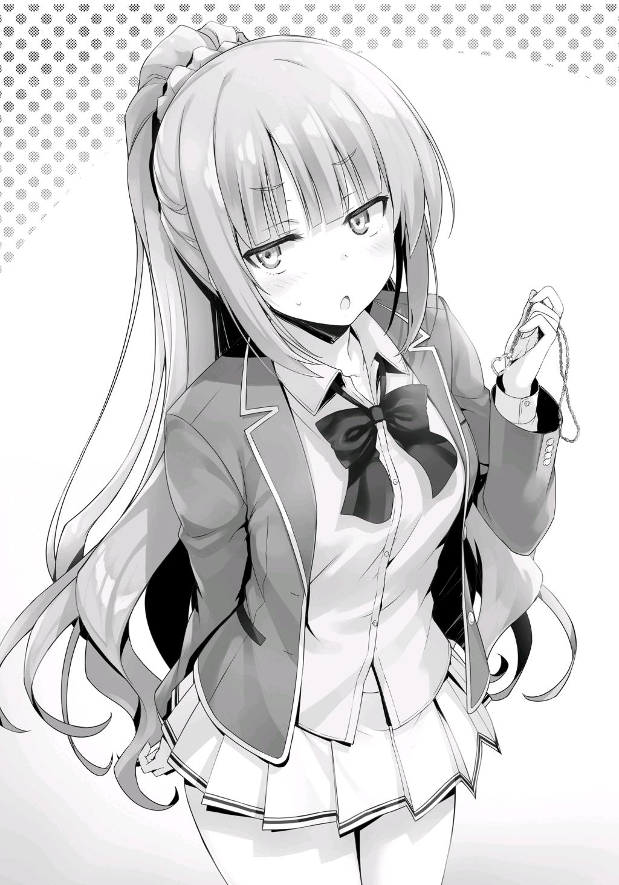
—Veinte mil... ¿Por qué te has esforzado tanto en conseguir un collar tan caro?
—¿Por qué?
Kei me miró, su cara se volvió aún más roja que antes.
Dada la situación, parecía que lo mejor era responderle honestamente.
—A decir verdad, nunca antes le he dado algo como un regalo de cumpleaños a una chica. Así que decidí investigar un poco en Internet como punto de partida. Me encontré con un importante sitio web de compras en línea, Rakkan Ichiba, donde recomendaban ese collar como el regalo de cumpleaños número uno para las chicas. Incluso se mencionaba que sería especialmente popular entre las chicas de preparatoria.
Todavía puedo recordar cómo el sitio web lo considera el mejor regalo, sin importar si tienes una relación o no.
Decidí que era un precio razonable a pagar ya que le iba a dar un solo regalo tanto para su cumpleaños como para el Día Blanco.
—Dios mío...
Por alguna razón, Kei me miró y se estremeció.
Pensé que esta vez podría haber estropeado algo.
—Eres tan inteligente y sin embargo, un poco idiota cuando se trata de cosas como esta. Es como si hubieras nacido ayer o algo así. En primer lugar, aunque dijera que esto sería un éxito entre las chicas de preparatoria, es el tipo de cosas que las chicas quieren elegir por sí mismas. De esa manera, pueden elegir algo que les guste o que se adapte a sus gustos. Bueno, por lo menos no me has comprado un anillo o algo así donde tendrías que haber sabido el tamaño de mi dedo... En pocas palabras, este regalo sólo consigue como, 10 de 100 puntos, ¿ok?
Preparé un regalo tan caro, pero el resultado fue desastroso.
Acababa de explicarme cómo eran las chicas de preparatoria, pero todavía hay mucho sobre lo que tengo que reflexionar.
Elegí el regalo con las mejores intenciones, pero es difícil decir si realmente consideré cómo se sentiría ella al respecto.
—¿Y si te hubiera dado una simple caja de postres?
—Eso te subiría a un 15 de 100.
Pensar que una simple caja de dulces hubiera sido mejor que un collar de veinte mil yenes...
—No creo que puedas devolverlo ahora que fue abierto, pero si no lo quieres puedes dejarlo aquí. Si quieres, puedo conseguirte una caja de pasteles o algo así en unos días.
Le ofrecí una alternativa, lamentando profundamente mi falta de preparación e investigación.
Después de todo, un regalo de 15 puntos probablemente haría más feliz a Kei que uno de 10 puntos.
Al menos, eso es lo que pensé...
—…
Kei miró fijamente el collar por un momento antes de voltearse a mirarme.
Y entonces, a pesar de lo que acababa de decir, se puso el collar alrededor del cuello.
Luego pidió usar mi espejo por un segundo y continuó viendo cómo se veía en ella.
—Hmm... Como pensaba, el corazón es un poco infantil... Pero como tengo un cuerpo tan sexy, cualquier cosa termina viéndose bien en mí...
Aunque no podía dejar de preguntarme de qué hablaba esta estudiante de primer año de preparatoria, Kei hablaba completamente en serio.
Se tomó un momento para ver cómo se veía el collar desde todos los ángulos antes de finalmente asentir con la cabeza.
Pensé que me lo devolvería después de probárselo, pero en vez de eso, puso cuidadosamente el collar en su caja y lo puso en su bolso.
—Bueno, esta fue la primera vez que le diste un regalo a una chica,
¿verdad? Seré amable y lo aceptaré, sólo por esta vez.
—...Bueno, eso me parece bien.
De todos modos, no era como si yo fuera capaz de dárselo a alguien más si ella se negaba a aceptarlo.
DE LO QUE CARECE LA CLASE
El día después de que se decidieran los emparejamientos de clases...
La clase C organizó otra discusión en la escuela una vez que terminaron las clases, así que podíamos hacer lo que quisiéramos durante la hora del almuerzo.
Como resultado, el grupo de Ayanokouji se reunió para almorzar juntos, como de costumbre.
Todos nos reunimos en el fondo del aula una vez que el almuerzo comenzó y nos dirigimos a la cafetería.
—¿Cómo fue la discusión de ayer?
Sin perder tiempo, pregunté a mis amigos sobre lo que la clase discutió el día anterior.
Los comandantes tardaron una hora en determinar los enfrentamientos de las clases y repasar todo, así que cuando volví al aula, todos ya habían vuelto a casa.
—¿No te enteraste de esto por Horikita-san? ...supongo que eso podría tener sentido.
Airi respondió vagamente, pero después de vacilar por un momento, volvió a hablar.
—Había un manual de eventos, ¿verdad? Al final, a todos les costó entender las reglas...
—Ni siquiera hubo una discusión. Fue una completa pérdida de tiempo.
Keisei dejó escapar un suspiro exasperado.
Al parecer, nuestra discusión durante el almuerzo de ayer no fue suficiente para que todos entendieran las reglas. Por lo visto, la discusión de ayer después de
clases terminó una vez que todos se pusieron de acuerdo. Si eso es lo que pasó, habría sido bastante típico de la clase C.
—Además, el problema no es sólo nuestra clase.
—¿Qué significa eso, Yukimuu?
—Hay un número limitado de lugares en el campus donde un grupo de estudiantes puede reunirse, ¿verdad?
—Bueno, definitivamente es imposible que cuarenta personas se reúnan en el karaoke o en algún lugar del centro comercial. ¿Y qué?
—Fui la primera persona en dejar el aula después de que la discusión terminó ayer... Cuando salí al pasillo, había algunos estudiantes de la clase A que se quedaron en la puerta.
Haruka y Airi intercambiaron miradas confusas entre sí.
Al principio, Akito tampoco parecía entender a qué se refería Keisei, pero después de un momento, se dio cuenta.
—...¿Estás diciendo que nos estaban espiando?
—Eso es exactamente lo que estoy diciendo. Durante este examen, la información importante será expresada verbalmente, ¿verdad? Aunque sólo estuvieran escuchando nuestra discusión, es más que probable que captaran algo.
Información como qué tipos de eventos podrían elegirse, o quién era bueno en qué.
Sin duda, sería conveniente obtener información por cualquier medio, aunque sea un poco.
En otras palabras, la batalla ya había comenzado.
—Mirándolo desde ese punto de vista, la Clase C ya se ha quedado atrás.
—¡Aterrador! Sakayanagi-san ya ha hecho su movimiento.
Temblando de miedo, Haruka comenzó a frotar la parte posterior de sus brazos.
—Entonces, ¿no deberíamos empezar a reunir información sobre la clase A? Algo así como lo que dijo alguien, ojo por ojo, diente por diente.
Cambiando rápidamente de tono, Haruka propuso entonces que lucháramos contra la clase A.
Sin embargo, no había manera de que Keisei estuviera de acuerdo tan fácilmente.
—Si fuera tan simple, no sería un problema.
—¿Ehh?
—Probablemente no soy el único que piensa esto tampoco. Incluso Horikita debería entender que no tiene sentido hacer eso. ¿Realmente crees que la clase A se va a reunir en un salón de clases y tener una discusión de cuarenta personas?
La clase C lucha contra su falta de unidad y cooperación, y estos atributos son lo primero en lo que tenemos que centrarnos.
Esto era completamente diferente a la Clase A, donde los mejores estudiantes como Sakayanagi decidían todo.
Quién es el comandante. Quién se encarga de los eventos. Quién está a cargo de recolectar la información.
Ya habían decidido todo en el momento en que comenzó el examen.
Además, aunque tuvieran una discusión en la clase, probablemente harían que dos o tres personas hicieran guardia para evitar que escuchemos a escondidas.
—Pero, ¿no estaría bien al menos intentarlo? Podríamos hasta ser capaces de atraparlos con la guardia baja en algún momento. Quién sabe, tal vez se reúnan en su clase para hablar del examen.
—Si eso sucede, en vez de eso, tendría miedor. Sospecharía de cualquier información que pudiéramos tener en nuestras manos.
Si la información que escuchamos termina siendo falsa, habremos perdido el tiempo. Las preocupaciones de Keisei son acertadas. La información debe ser
escondida cuando sea posible; cualquier cosa que no lo sea, tiene que ser fuertemente sospechosa.
—Sin embargo, una guerra de información es absolutamente inevitable. La parte crucial es averiguar qué tipo de método usar...
—¿Tenemos... tenemos alguna posibilidad?
Airi habló, rindiéndose a sus sentimientos de ansiedad.
—En este punto, sería mejor pensar en ello como si estuvieran un paso o dos por delante de nosotros.
Como la clase C aún no había decidido nada, no teníamos motivos para pensar que estábamos al frente.
— Aun así, ¿quién hubiera pensado que tendríamos que ir contra la Clase A?
—Lo siento. Es mi culpa por perder la lotería.
En realidad, habría elegido la clase A aunque hubiera ganado, pero al menos me disculparía por ello de esta manera.
—¡Ah, no, no estaba insinuando eso! ¡Eso es totalmente mi culpa! ¡No te estaba culpando de ninguna manera, Kiyopon!
Haruka pareció tomar mi disculpa más seriamente de lo que esperaba, y habló apresuradamente para rectificarse.
—Esperar que gane la lotería con sólo una posibilidad entre cuatro es un poco duro, Haruka.
Mientras Akito hablaba, Haruka se encogió aún más.
—Por eso dije que eso no es lo que quería decir...
En este punto ella sacó a relucir algo más, seguramente queriendo cambiar el tema.
—Creo que sería bueno que la clase A fuera un poco más indulgente con nosotros. Lo tienen fácil contra la Clase C. ¿No lo crees también, Miyatchi?
—¿Más indulgente? ¿Sakayanagi realmente te parece ese tipo de persona?
—...En absoluto. Aplastó completamente a Yamauchi-kun, y podría aplastar prolíficamente al resto de nosotros también.
Desanimada, Haruka miró hacia arriba y comenzó a mirar el techo.
—De todas formas, sigue yendo mal para ti, ¿verdad Kiyotaka? Ser comandante en estas circunstancias.
Keisei me dio una palmadita en el hombro para consolarme por las molestias que estaba pasando.
—Bueno, sin embargo, tengo ese punto de protección. Realmente no tenía otra opción esta vez. No quiero perder ni nada, pero estoy muy agradecido de que nadie tenga que preocuparse por ser expulsado.
Por ahora, esto era lo único que podía decirles.
Cualquiera que sea la razón, yo fui el que egoístamente nos llevó a la confrontación con la Clase A.
—Nuestro oponente es de clase A. No sería tu culpa si perdemos.
—Además, su comandante es Sakayanagi-san.
En esta situación, el 99% de la gente piensa que Sakayanagi ganará. En ese caso, mi posición en la clase no cambiará aunque pierda. Por otro lado, si termino ganando, la victoria sería atribuida al excelente liderazgo de Horikita y a la elaborada estrategia que se le ocurra.
—Sí... Ganar esto va a ser difícil.
Keisei cruzó sus brazos y dejó escapar un suspiro derrotado.
En este punto, sin embargo, Akito dijo algo que nadie esperaba.
—Sólo porque nos enfrentemos a la Clase A no significa que sea imposible ganar.
—... ¿En serio? Bueno, no es que realmente quiera perder, pero..
—Esto no es un plan o estrategia secreta, Haruka. Piénsalo cuidadosamente. Hay una manera de arrebatar la victoria a la clase A, ¿no es así?
Con eso, Akito comenzó su explicación.
—Cuando Chabashira-sensei anunció el examen, pensé que no era razonable pedirnos que nos enfrentáramos a las clases altas. Pero algo que Ike dijo me hizo pensar en una manera de hacerlo realidad.
—¿Algo que dijo Ike-kun? Espera, ¿estás hablando de cuando sacó a relucir el piedra-papel-tijera?
Al recordar algo, Haruka habló, haciendo que Akito asintiera con la cabeza.
—Al principio, pensé que era una especie de sugerencia estúpida para un evento. Pero, luego me di cuenta de que, si elegimos un evento que gira en torno a la suerte, siempre tendríamos alrededor de un cincuenta por ciento de posibilidades de ganar, no importa a quién nos enfrentemos. No creo que sea una mala idea proponer cinco eventos como Old Maid o Daifugo que dependen de la suerte para el día del examen.
Después de escuchar la explicación de Akito, los ojos de Haruka se iluminaron.
—¡Con una estrategia como esa, estaremos en igualdad de condiciones con cualquiera!
—¡Sí! ¡Tampoco creo que sea una mala idea!
—No... No sería tan simple.
Mientras los tres se dejaban llevar por la emoción, Keisei tranquilamente criticó la idea.
—No lo sabré con certeza sin hacer los cálculos, pero las posibilidades de que ganemos con esa estrategia son algo así como del 5 al 10%.
—¿Qué? ¿Eso es todo? No digo que nuestras posibilidades sean exactamente del 50% o algo así, pero debería ser al menos del 20 o 30%,
¿no? ¿Qué tan difícil puede ser que nuestros cinco eventos sean elegidos y que ganemos cuatro de ellos?
—Tendríamos que ser increíblemente afortunados para que todo saliera así, Haruka.
Los cinco eventos de la clase C tendrían que resultar seleccionados, y tendríamos que tener la suerte de ganar al menos cuatro de ellos. Si nuestras probabilidades de ganar fueran de un 50% para cada uno de esos cinco eventos...
Me tomé un momento para hacer los cálculos en mi cabeza.
Había un 8,33% de posibilidades de que los cinco eventos fueran elegidos, y con un 50% de probabilidades de ganar, la probabilidad de ganar cuatro veces sería del 18,75%.
Considerando que tendríamos que superar esas dos condiciones, nos quedaría un mero 1,56% de posibilidades de salir victoriosos.
En otras palabras, no estaba ni siquiera cerca del 5%. Es difícil decir que confiar en la suerte para ganar fuera una buena idea.
Dicho lo anterior, esto sólo consideraba todo desde un punto de vista simple y estandarizado donde la suerte era lo único que apoyaba mis cálculos.
En realidad, otros factores afectarían nuestras verdaderas oportunidades de ganar, pero en última instancia es demasiado negativo para llamar a esto una estrategia efectiva.
Esto quiere decir que debemos elegir los eventos en base a lo que se nos da bien, aunque conlleve algo más de riesgo.
Cuantos menos eventos giren en torno a la suerte, mejor.
—¿Tan malo es? Fue sólo un pensamiento que tuve, es todo.
Al darse cuenta de lo ingenua que era su sugerencia, Akito se rascó la mejilla.
En ese momento, noté que Airi me miraba con preocupación, y su expresión se volvió más preocupante una vez que me giré para mirarla.
—Kiyotaka-kun... Uhm, ¿estás bien? Siendo el comandante...
Parece que Airi se preocupa cada vez más por la dificultad de vencer a la clase A.
—Sí, Kiyopon. No necesitas presionarte sólo porque tienes un Punto de Protección.
Haruka habló, terminando la frase de Airi antes de que se le ocurrieran las palabras.
—Haruka tiene razón. Al menos, ninguno de nosotros pensó que había algo entre tú y Sakayanagi. ¿Verdad, chicos?
Todos asintieron con la cabeza. No se sentía mal que confiaran en mí de esta manera.
—Algunos de nuestros compañeros parecían seguir sospechando de ti, pero la explicación de Horikita-san convenció a casi todo el mundo. Quiero decir, al principio pensé que tener un Punto de Protección sería genial, pero ahora me parece un problema tener uno, ¿sabes?
—Estoy un poco celosa de todos los que obtuvieron Puntos de Protección, pero después de ver la situación en la que se encuentra Kiyotaka-kun, siento que terminaría perdiéndolo de inmediato si hubiera obtenido uno...
Al final del día, sólo una persona estaba a salvo. Todos los demás quedaron abandonados a su suerte. No sería fácil mantener la seguridad sin decidirse por completo.
En contraste con la tímida autoevaluación de Airi, Keisei cruzó los brazos y no estuvo de acuerdo.
—Por mi parte, no renunciaría a mi punto de protección sin importar lo que digan los demás.
—¿Incluso si terminas siendo odiado o rechazado por ello? ¿Por sus celos?
—Estás perdiendo el punto central. No querría ceder a cosas así sólo por algo que gané legítimamente. En su lugar, Kiyotaka debería haber hecho lo posible por conservarlo y protegerse él mismo.
Como si se hubiera convertido en la víctima, Keisei, indignado, mantuvo sus brazos cruzados.
Akito, que había estado en silencio hasta ahora, me miró y habló.
—La verdad es que pelear contra la clase A va a ser difícil, así que probablemente sea mejor que Kiyotaka acepte correr el riesgo. Si hubiera sido cualquier otro, podríamos ver nuestra segunda expulsión pronto,
¿verdad? ¿O estás diciendo que podrías haber sido el comandante, Keisei?
—Eso... Bueno, no lo creo.
Aunque no es que no haya entendido la frustración de Keisei. Sólo quería enfatizar que nos sería más fácil ganar con un estudiante más capaz como comandante.
—Es desafortunado que tengamos que evitar la expulsión durante este examen también, pero me pregunto quién habría sido el más adecuado como comandante sin él... ¿Horikita-san?
Airi inclinó su cabeza mientras pensaba cuidadosamente en todas las opciones.
—Eh, Horikita-san me parece bien. ¿O tal vez alguien como Hirata-kun o Kushida-san? Yukimuu podría haberlo hecho bastante bien también.
Enumeró a un grupo de estudiantes que habrían obtenido resultados consistentes como comandante de la clase.
—Hirata, ¿eh?... Me pregunto cuál es su problema.
En este punto, Akito pensó que seguir hablando de ir contra la clase A sólo bajaría el ánimo, así que cambió de tema.
—Oye Keisei, ¿cómo ves el enfrentamiento entre la clase D y la B?
En particular, mencionó a los otros grupos que harían la guerra durante este examen especial.
—Es probable que la clase B gane. Su trabajo en equipo está en otro nivel, y en general, son una clase fuerte a la que hay que enfrentarse.
—¡Sí! Además, su comandante es Kaneda-kun, no Ryuuen-kun.
Pensaron que no había necesidad de tener miedo de la clase D sin Ryuuen.
Sin embargo, Ishizaki y el resto de la Clase D buscaron luchar contra la Clase B
desde el principio. Aunque es inesperado, no es algo que se pueda tomar a la ligera. Si yo estuviera a cargo de la clase D, habría elegido luchar contra la clase B también. La clase A está liderada por Sakayanagi, y tiene un gran número de oponentes difíciles como Katsuragi y Hashimoto. Además, su clase en su conjunto tiene las mejores habilidades académicas de todo nuestro año escolar.
Cuando se trata de la clase C, seguramente no les gusta la idea de ir en mi contra. Por supuesto, también se podría argumentar que esperan que mantenga mi presencia oculta, pero de cualquier manera, la especialidad de la clase D es su habilidad física, no académica. Para sacar el máximo provecho de sus puntos fuertes, probablemente elegiría la clase B. Aunque esto no les dará la ventaja ni les hará ganar el examen. Es su mejor opción para evitar la derrota.
Si la clase D puede ganar o no, dependerá de que sus decisiones progresen, junto con un poco de suerte.
No era nada más que un pequeño rayo de esperanza en este momento.
—Hey chicos, miren eso.
Haruka nos susurró, señalando la entrada de la cafetería donde Hirata acababa de entrar.
A simple vista, sus pasos eran sin rumbo y pesados, como los de un zombi o alguien poseído por un fantasma.
Sus ojos carecían de ambición. La diferencia entre la persona que estábamos mirando y su brillante y habitual personalidad era sorprendente.
—Está como... gravemente enfermo o algo así.
Haruka murmuró algunas palabras, pero simplemente no había nada más que decir. Hirata era alguien que había hecho más por nuestra clase que nadie. La
clase había pasado el año pasado sin perder a nadie, y las acciones de Hirata sin duda jugaron un papel importante en ello.
—Hirata es básicamente inútil en este examen especial. Ya era bastante difícil enfrentarse a la Clase A, pero ahora también tenemos que lidiar con un handicap tan grande desde el principio.
Las palabras de Keisei sonaron un poco frías.
—No... no hay nada que podamos hacer, ¿verdad?
Otros estudiantes ya han intentado acercarse a él muchas veces.
Hasta ahora, no parece que nadie haya logrado llegar a él. Nada de lo que hicieron tuvo efecto.
En cambio, la situación parecía empeorar debido a la excesiva presión de todos.
Nadie en el grupo Ayanokouji era particularmente cercano a Hirata, por lo que es natural que nuestras voces no fueran capaces de llegar a él.
Por esa misma razón, ninguno de nosotros vio la necesidad de reaccionar exageradamente a lo que Keisei implicaba. Era el problema de alguien más.
Parte 1
Después de clases, la discusión a fondo estaba finalmente a punto de comenzar.
Nadie se movió de sus asientos mientras sonaba la campana, con excepción de Hirata, que se levantó inmediatamente.
—¡Hirata-kun!
—¡H-Hirata-kun!
Varias chicas levantaron la voz y le gritaron. Entre ellas estaba Mii-chan.
Pero Hirata no se detuvo. Al parecer ya no le importa lo que le pase a la clase.
Sólo iba a la escuela, asistía a sus clases y volvía a casa, como si tratara de evitar involucrarse con el resto de la clase.
Seguramente repetiría este ciclo una y otra vez.
—¡Espera un segundo, Hirata-kun!
—Ustedes son las que deberían esperar.
Mii-chan y las demás trataron de perseguirlo, pero las palabras de Horikita las detuvieron en seco.
—Estamos a punto de tener una discusión. ¿Quieren que más gente se la pierda?
—P-pero...
—No hay nada que ninguno de nosotros pueda hacer por él en este momento. Apúrense y vuelvan a sus asientos.
Horikita suprimió su deseo de perseguirlo y pidió a todos que regresaran a sus asientos.
En este momento, nuestra principal prioridad es conseguir que todos se unan para establecer la política de la clase para el examen.
—¿Koenji todavía está aquí?
Dado que la participación de Koenji fue totalmente inesperada, la voz de Sudou se llenó de sorpresa.
—Fufufu. Soy parte de la clase, ¿no? Por supuesto que estoy aquí.
Koenji habló descaradamente, como si todo lo que decía fuera completamente natural.
—Sin embargo, me gustaría concluir esta discusión hoy. Yo también soy una persona muy ocupada.
—Eso será difícil. Este examen especial no es algo que pueda decidirse de la noche a la mañana. Aunque decidamos los eventos hoy, tendremos que practicarlos constantemente para ganar.
Horikita, tomando la posición detrás del podio del profesor, bloqueó completamente Koenji.
Koenji no se opuso más y simplemente se sentó en su escritorio con una amplia sonrisa en su cara.
Por el momento, parecía estar dispuesto a escucharla.
—Si ese es el caso, parece que sólo participaré esta vez.
Koenji no vaciló ni un poco. Parecía que, dejando de lado la política de la clase, no tenía intención de trabajar conjuntamente en esto. Sudou silenciosamente comenzó a levantarse, pero inmediatamente se sentó de nuevo después de recibir una firme mirada de Horikita. Después de todo, si él empezaba algo aquí, la conversación nunca avanzaría.
—Entonces, tendré que hacer lo que pueda para tratar de que también participes la próxima vez.
Koenji tomó la advertencia de Horikita con una sonrisa y simplemente cruzó sus brazos y piernas.
Esta fue su manera de decirle que continuara con la discusión.
—Uhm, Horikita. Tengo una simple pregunta que te quiero hacer sobre la participación en el evento.
—¿Y cuál es, Ike-kun?
Con la mano levantada, Ike habló.
—Competiremos en siete eventos, ¿verdad? Pero, como que no tendremos un turno en eso, ¿verdad?
—¿Qué quieres decir con 'no tendremos un turno en eso'?
—Erm... Bueno, para ponerlo simple, me refiero a aquellos de nosotros que apestamos un poco... Como, los estudiantes que no son particularmente buenos en cosas físicas o estudiando, no van a tener un turno para participar. No es que los siete eventos vayan a necesitar mucha gente. Si elegimos eventos que sólo necesiten la participación de unas pocas personas capacitadas, muchos de nosotros no tendremos nada que hacer, ¿verdad?
Hay casi cuarenta estudiantes en cada clase.
Aunque escojamos unos cuantos eventos que necesiten mucha gente, los siete finales probablemente sólo necesitarán de veinte a treinta.
En otras palabras, Ike trata de decir que, dependiendo de los requisitos de participación de los eventos seleccionados, casi la mitad de la clase no tendrá que participar.
—No lo sé. ¿Qué pasa si un evento necesita como, veinte personas o algo así?
Kei habló, dando su opinión después de que Ike terminara.
—Eres tan estúpida, Karuizawa. Puedes jugar al fútbol con once personas en un equipo. ¿Qué evento podría necesitar más que eso? No se me ocurre ninguno, ¿y a ti?
—Uhm~... ¿Algo como el béisbol?
—El béisbol sólo necesita diez personas, ¡lo que es menos que el fútbol!
—El béisbol necesita nueve personas.
Horikita inmediatamente interrumpió, señalando bruscamente la inconsistencia de Ike.
—... Bueno, de cualquier manera, mi punto sigue existiendo.
—No sé. Kanji. El fútbol americano necesita once personas como el fútbol, y el rugby necesita quince.
Sudou enumeró algunos eventos que requerirían más de diez personas.
—Sí, pero ¿quieres obligar a la gente a jugar rugby o algo así? ¡Ni siquiera conozco las reglas!
Mientras que el rugby no es un deporte menor, está en un territorio completamente desconocido para la gente que no está involucrada en él. No es
algo que se enseñe regularmente en la clase de gimnasia, y estoy seguro de que la clase A tampoco es una excepción.
Apenas podía imaginar lo que sería para nosotros empezar a practicar rugby ahora mismo.
Además, aunque lo presentemos como un evento, dudo que sea aceptado, y no sería muy provechoso para nadie.
—Así que, por eso no creo que tengamos que participar.
—¿Cuál es tu punto?
—Eso... Bueno, no creo que necesitemos reunirnos así o tener sesiones de práctica para progresar o algo así.
—Entiendo que quieras tomártelo con calma. Después de todo, es mentalmente agotador hacer algo que no quieres. Además, también reduciría tu valioso tiempo de descanso.
—No me atrevería a decir eso, pero ya sabes...
—De cualquier manera, he determinado que todos nosotros necesitamos trabajar juntos.
—¿Qué tal si nos dices por qué? Haré lo mejor que pueda para apoyarte si me convences.
Esta vez, Sudou fue el que habló.
—Porque el número de personas que necesitamos para participar depende de las reglas que se le ocurran a nuestro oponente. Por ejemplo, digamos que uno de los eventos que proponen es voleibol. Por lo general, el voleibol es una competencia entre dos equipos de seis, pero las reglas pueden cambiar eso hasta cierto punto. ¿Y si el partido tuviera un límite de tiempo de treinta minutos, y las reglas establecieran que cada diez minutos todos los participantes tuvieran que cambiarse con alguien nuevo? Me pregunto qué pasaría entonces.
—Erm... Con seis personas cambiando cada diez minutos, eso es...
Dieciocho personas con eso solo. Casi la mitad de los estudiantes de cada clase tendrían que participar.
Además, como sólo se necesitaban seis personas en un momento dado, la regla sería simple y fácil de seguir para casi todo el mundo. La escuela seguramente también la aprobaría.
—¿Y si hay más de un evento como este? En pocas palabras, todo el mundo estaría obligado a participar en dos o incluso tres eventos.
Tenemos que estar preparados para algo así.
Por supuesto, todo esto dependía de los eventos y las reglas que a la clase A se le ocurrieran.
Era más que posible que se mezclaran en algunos eventos como este, sólo para hacérnoslo más difícil.
—Sé que esto aún no lo han comprendido todos ustedes, pero este examen especial es más complicado de lo que piensan.
Si repasáramos cada evento uno por uno, eventualmente se nos ocurrirían algunas ideas que parecerían bastante ridículas.
En este punto, no sería tan raro que hubiera ideas extrañas para eventos como piedra, papel, tijera o póquer.
Después de todo, conseguir esas cuatro cruciales victorias sería mucho más importante que tratar de quedar bien.
Independientemente de lo poco prácticas que puedan parecer las sugerencias, lo que más importaba al final es elegir a las personas adecuadas para los eventos que sabemos que pueden ganar.
—Ni siquiera planeo quitarte demasiado tiempo.
O mejor dicho, sería mejor para ella decir que mantener a todo el mundo atrapado aquí no significa necesariamente que se nos ocurran buenas ideas de inmediato.
—Así que por hoy, me gustaría dejar a todos aquí con algunos deberes. Si es posible, quiero que se les ocurran ideas para eventos en los que son buenos y eventos en los que creen que nunca perderán, y que me las den mañana después de clases. No importa si es algo que hacen solos o si se hace en equipo.
Uno de los cinco eventos que elijamos debe ser un evento de uno contra uno. Lo más probable es que cada clase presentará uno con la confianza inquebrantable de que no lo perderán. Sin embargo, cuando se mira desde otro ángulo, el daño recibido si no se ganara sería inconmensurable. Siendo así, los estudiantes con habilidades especiales o talentos que no pueden ser superados por otros son sumamente deseables en esta situación.
—Pero, no tiene sentido a menos que sea algo que la escuela apruebe,
¿no? No entiendo realmente cuáles son sus estándares.
Los eventos y las reglas que son demasiado complicados serán rechazados por la escuela.
Sin embargo, la falta de claridad en cuanto a eso es un problema para muchos estudiantes.
—No te preocupes por eso ahora. Es algo que podemos pensar después de escuchar todas las ideas. Por ahora, sólo siéntanse con la libertad de sugerir cualquier cosa que se les ocurra.
—Entonces, ¿estás diciendo que estarías bien con cosas como los videojuegos o el karaoke?
—Sí. Lo que sea.
Horikita subrayó este punto una vez más, diciendo a la clase que no tenían que preocuparse. Yo no tengo problemas con la forma en que está manejando la situación.
Es importante para nosotros empezar por averiguar cuáles son los puntos fuertes de cada uno.
—¿Qué hacemos si no hay nada en lo que seamos realmente buenos?
Haruka intervino con una pregunta para Horikita.
—No me importa que no tengas nada si no tienes mucha confianza en ti misma. Sería arriesgado usar un evento si no tienes confianza en tu capacidad para ganarlo.
Quería que hicieran tantos eventos como fuera posible, pero no estaba seguro de si teníamos suficiente tiempo para ser cuidadosos con nuestra selección. Por el momento, no tenía ningún problema con el plan de Horikita, así que sentí que estaría bien esperar y ver qué pasa.
Con eso, la discusión terminó por hoy y todo el mundo comenzó a recoger sus cosas e irse. En este punto, Koenji habló de nuevo.
—¿Te parece bien terminar la discusión tan pronto como ahora?
—Si es tan breve, será más fácil para ti participar la próxima vez, ¿no es así Koenji-kun?
—Cuando dije que participaría una vez, una vez es tanto como participaré.
—...Pero, será problemático si no haces la tarea que te di hoy. Si no lo haces, será bastante difícil decir que participaste, ¿no?
—Proponer ideas para los eventos en los que soy bueno, ¿no?
Se puso la mano en la barbilla y mostró una sonrisa inquebrantable.
—Sí. Si quieres decir que participaste, al menos tienes que hacer eso.
Horikita buscaba obligarlo a participar por segunda vez si no podía.
Koenji se levantó elegantemente de su escritorio antes de anunciar algo a Horikita.
—Simplemente no hay nada que no pueda hacer. Después de todo, soy un humano perfecto.
—No importa a quién te enfrentes o cuál sea el evento, estás absolutamente convencido de que ganarás. ¿Estás seguro de eso?
Sus palabras estaban llenas de una parte de provocación y otra de intriga, como si no pudiera evitar esperar la respuesta de Koenji.
—Ya veo. Quieres que me comprometa a ganar cualquier evento en el que participe, ¿no?
—Así es. Si puedes hacer eso, eres libre de hacer lo que quieras. No tendrás que participar en más discusiones, y no te pediré que des tu opinión sobre nada.
—H-hey Suzune.
Sudou habló, alarmado por su escandalosa propuesta, pero Horikita sólo continuó.
—Pero ten en cuenta que si no participas o si pierdes... ...sospecharé de cualquier cosa que digas y la desconfianza de tus compañeros se disparará.
La idea de Horikita no era mala. Con esto, buscaba hacer uso completo de Koenji el día del examen. Koenji es un estudiante de primera categoría tanto en lo académico como en atlético. Su único problema tiene que ver con su personalidad. Sería mejor tenerle paciencia ahora a que no se presente el día del examen o que tome su evento frívolamente.
La pregunta era: ¿cómo contestará exactamente Koenji? Se levantó de su asiento y empezó a salir del aula, pero justo antes de cruzar la puerta, se detuvo.
—Te dejo con esto. Será mejor que no pienses que puedes atarme con palabras como esas. Aunque soy un genio sin igual que no perdería ante nadie, depende de mí decidir si uso o no ese talento para ti.
En pocas palabras, la respuesta de Koenji fue un no. No le importa si es sospechoso o si la clase desconfia de él. Sólo va a hacer lo que quiera.
Con eso, Koenji se dio la vuelta y salió de la clase.
—...Los métodos ordinarios no van a funcionar con él en absoluto, ¿eh?
—Ese tipo... Tiene mucho valor para subestimarnos de esa manera.
Diciendo tonterías de que es un genio sin igual que no perderá ante nadie.
Le patearía el trasero en el baloncesto si me tuviera como su oponente.
Pude entender completamente por qué Sudou estaba hablando de él de esa manera.
No importa cuán talentosa y brillante sea una persona, no sería correcto llamarla perfecta.
De hecho, plantea una pregunta. ¿Ganaría Koenji si se enfrentara a Sudou en baloncesto?
—Si se esfuerza el día del examen podría mostrar resultados, al menos hasta cierto punto. No sé cuánto he podido comunicarme con él, pero supongo que tendremos que esperar y ver. ¿Tiene sentido?
—Sí, pero...
Definitivamente era difícil imaginar que Koenji perdiera. Después de alardear con esas palabras grandiosas y esa confianza en sí mismo, la idea de que pierda, aunque sea por un momento, se siente como si pusiera el carruaje delante del caballo. Sudou probablemente también es consciente de esto.
—...Pero, ¿crees que va a aparecer siquiera?
—Quién sabe.
Aunque podemos ganar si se lo toma en serio, si no lo hace, no lo haremos.
Parte 2
Al día siguiente. Horikita me informó de algo cuando llegó a la escuela por la mañana.
—Decidí no considerar a Hirata-kun como un recurso, al menos para este examen.
Ayer, incluso Koenji participó en la discusión después de clases, pero Hirata dejó el aula en silencio.
Habiendo sido testigo de esto de primera mano, la decisión de Horikita es comprensible.
—Eso es razonable. Es demasiado inestable para confiar en él ahora mismo.
Incluso si pudiéramos forzarlo a participar, probablemente sólo terminaría fracasando.
—Estará bien si es sólo para este examen, pero dependiendo de la situación, este comportamiento suyo podría continuar por un tiempo.
Su preocupación no es una exageración en lo más mínimo.
Casi todo el mundo espera su recuperación, pero por el momento, no está claro cómo va a suceder.
—Si crees que su comportamiento no va a parar pronto, todavía existe la opción de hacer que abandone la escuela, ¿no es así?
Le planteé otra idea, y aunque estaba un poco sorprendida por ella, reaccionó con calma.
—Eso es... Bueno, eso puede ser algo en lo que tendré que pensar. Es un alivio que no haya tirado todo por la borda y que de repente diga que esta vez quiere ser el comandante.
La idea de que Hirata se nominara como comandante para este examen especial no era tan descabellada.
Si lo hubiera hecho, habría sido capaz de perder a propósito y conseguir que lo expulsaran. Habría sido tan simple como eso.
La razón por la que estaba haciendo pasivamente lo que tenía que hacer cada día era porque la clase sería penalizada si dejaba la escuela. Buscaba irse en el momento adecuado, sin causar problemas al resto de nosotros.
Sin embargo, así es como está actuando ahora mismo.
—Pero... eso no significa necesariamente que siempre actuará así,
¿verdad? ¿Quién sabe cuándo se desesperará...?
—Sí.
Como dijo Horikita, yo tampoco sabía lo que Hirata haría si se volvía un hombre autodestructivo.
No podía decir con seguridad que la clase se mantendría completamente intacta cuando él la abandonara.
—Por eso no quiero obligarlo a participar ahora mismo. Es una bomba que podría explotar en cualquier momento, y me gustaría unificar la clase para que no explote sobre nosotros.
Por encima de todo, Hirata es el que más odia los conflictos internos.
Así que para evitar causar más, Horikita tomó un papel activo dentro de nuestra clase desde que comenzó el examen.
—Suena duro.
—Has asumido las responsabilidades del comandante, así que también lo vas a pasar mal.
—Te dejaré todo eso a ti. Soy el comandante, pero estoy seguro de que podrás tener ideas suficientes.
Me observó con una mirada irritada en sus ojos.
—¿Puedes vencer a Sakayanagi-san con ese tipo de actitud?
—Quién sabe.
—¿Quién sabe...? Yo, por mi parte, tengo la intención de ganar. ¿Podría hacer que te involucres un poco más en hacer que eso suceda?
Yo era muy consciente de que no había necesidad de que me lo dijera.
—¿Me está pidiendo que me involucre activamente con la clase y decida los participantes de los eventos o las reglas sobre cómo se le permitirá al comandante intervenir en ellos? Intenta imaginar cómo sería eso.
Mientras hablaba, la expresión de Horikita se estrechó gradualmente.
—... No puedo imaginarlo en absoluto, casi hasta el punto de que es aterrador.
—¿Verdad?
Para el resto de la clase, yo soy sólo una sombra. A pesar de que me convertí en el comandante, esto era un hecho que no iba a cambiar.
La gente pensaría que hay algo malo en mí si de repente empezara a dar instrucciones sobre todo.
Tomaría un papel más activo, usando la estrategia que Horikita propone como base.
Mientras hablábamos, sentí un cambio repentino en la atmósfera del aula.
Hirata llegó a la escuela. Aunque muchos estudiantes se esforzaron por evitar mirarlo directamente, estaba claro que todavía estaban preocupados por él.
—¡Buenos días, Hirata-kun!
Casi llegó tarde al comienzo de las clases, y Mii-chan lo llamó. Fue una decisión valiente, hecha a pesar de la atmósfera negativa del aula. Sin embargo, su intento de tender la mano fue desestimado e ignorado.
Hirata tomó asiento tranquilamente sin reaccionar ante nadie a su alrededor.
Pero aun así, la sonrisa de Mii-chan no flaqueó.
—¿Quién podría haber imaginado que esto pasaría ahora?
—De verdad.
A pesar de los esfuerzos de Mii-chan, el auto-aislamiento de Hirata continuó.
—Considerando todas las cosas, ella es la única que no se ha dado por vencida en llegar a Hirata-kun. No pensé que tuviera una conexión tan profunda con él, pero...
Horikita notó que Mii-chan está especialmente preocupada cuando se trata de Hirata, y comenzó a preguntarse por qué Mii-chan se presiona por hacer algo así.
—Es porque es compasiva, ¿no?
—Eso no tendría sentido a menos que tratara a otras personas de esta manera también.
—Me parece justo.
Si esa fuera la razón, Mii-chan habría sido más compasiva cuando Yamauchi estaba a punto de ser expulsado.
Siendo así, sólo quedaba una razón que explicaría por qué seguía buscando a Hirata.
—Tal vez sea amor.
—Supongo que es la única posibilidad que queda... ¡Qué sentimiento tan inútil!
Horikita cruzó los brazos exasperada y sacudió la cabeza como para decir que no podía entender.
—Tal vez deberíamos limitar los recursos de la clase que estamos dispuestos a gastar para lidiar con él... ¿Qué piensas?
En otras palabras, decía que todos dejaran en paz a Hirata por un tiempo determinado.
—¿No será eso difícil?
—No, en absoluto. Ya nadie toma la iniciativa para llegar a él, excepto ella.
Hirata incluso eligió ignorar a Mii-chan, la persona que más le ha dedicado.
Dada la situación, sin duda no habría muchos estudiantes que estuvieran dispuestos a hacer todavía más por él.
—Dejando a un lado el motivo, espero que ella lo ignore.
Horikita estaba pensando en cómo podría hacer que Mii-chan se rindiera.
—Si esto es lo más lejos que llega, no me voy a quejar de ello tampoco.
Pero está claro que está empezando a pasarle factura.
—Bueno, es cierto que no ha sido ella misma últimamente.
Además, la atmósfera de la clase empeora cada vez que se presenta la situación de Hirata.
Hirata ignoró con bastante firmeza a Mii-chan hace unos momentos, pero no parece que se haya desanimado por ello, ya que se acercó a él por segunda vez.
—Uhm, Hirata-kun, hoy en el almuerzo-
Esta vez, parecía que Mii-chan se había acercado para invitarlo a almorzar juntos, pero...
—¿Podrías por favor dejarme en paz ya?
—¡…!
Las palabras relativamente duras de Hirata resonaron en toda la clase.
Él rechazó de plano la petición de Mii-chan antes de que ella pudiera siquiera terminar su frase.
—Es molesto.
Aunque sus palabras no fueron tan duras como podrían haber sido, su voz no contenía más que una fría emoción.
—Eso, yo... sólo quería... almorzar, conti...
Mii-chan intentó tanto como pudo seguir sonriendo, pero las emociones tensas finalmente la afectaron y no pudo aguantar más.
—No voy a comer. No contigo.
Su rechazo no pudo ser más explícito.
No queriendo ver a Hirata actuando así, muchas de las chicas en el aula miraron rápidamente hacia otro lado.
—Hey, espera Yousuke-kun. ¿No es eso ir demasiado lejos?
En este punto, Kei eligió hablar. No, dada la situación, puede ser más exacto decir que fue forzada a hacerlo.
Me imagino fácilmente la escena en la que las amigas de Kei le preguntan si puede hacer algo. Si Hirata se retira ahora, no sólo Kei se salvaría, sino que la clase también recuperaría temporalmente su compostura.
Sin embargo-
—¿Te importaría no llamarme por mi nombre tan íntimamente de esa forma? Ya no tienes nada que ver conmigo, ¿de acuerdo?
—E-eso es verdad... Entonces, Hirata-kun, fuiste demasiado lejos con lo que le dijiste a Mii-chan.
Kei se corrigió, pero aun así se dirigió con confianza a Hirata.
Ella jugó su papel como la líder que agrupa a las chicas perfectamente.
—Comparado con la forma en que normalmente hablas con los demás, no hay mucha diferencia.
La refutación de Hirata fue despiadada.
—¿Qué...? P-por el bien de la clase, ¡yo-!
—¿Podrías callarte ya? Si no lo haces... ¿Sabes lo que pasará, no?
Hirata bloqueó por la fuerza a Kei para que no intentara decir nada más.
Sus palabras eran una amenaza; si ella decía algo más que esto negligentemente, él expondría absolutamente todo.
Al menos, era inevitable que Kei se lo tomara así, dado que había compartido sus debilidades con Hirata.
—¿Qué? Ugh, qué molesto. Ya no me importa.
Ahora que llegó a esto, no había nada más que Kei pudiera hacer.
Se echó atrás, aunque de mala gana.
—¿Cuánto tiempo planeas quedarte ahí parada?
Sólo unos momentos después de destruir completamente a Kei, Hirata volvió a ver a una Mii-chan llorosa e inmóvil. Habiendo sido completamente rechazada, Mii-chan regresó a su asiento con la cabeza agachada.
Hirata debió pensar que, al hacer esto, Mii-chan no volvería a acercarse a él.
—La clase entera está desmoralizada...
—Aunque a Koenji no parece importarle en absoluto.
A lo largo de la sombría clase, un estudiante no se vio afectado por lo que pasó.
Aunque Mii-chan, Hirata y Kei estaban en medio de una pelea, éste parecía estar totalmente concentrado en su aseo personal.
Koenji simplemente hizo un comentario.
—¿Por qué hay tantos niños problemáticos en mi clase?
Quería decir que yo pensaba que él mismo era un niño problemático, pero me contuve.
Parte 3
No importa cuán mala sea la atmósfera, el tiempo sigue avanzando de todas formas.
Naturalmente, la hora de la discusión llegó una vez terminadas las clases del día.
Es la segunda discusión de la clase. Para ser precisos, es en realidad la tercera si incluía la que no asistí.
Ya pasaron tres días desde que empezó el examen, así que ya era hora de poner a rodar la pelota.
Una vez más, Hirata se levantó inmediatamente y salió del aula.
Mii-chan parecía un poco desgarrada, ya que sólo miró en silencio mientras salía de la habitación.
Entonces, como si estuviera inspirada por algo, se puso rápidamente de pie.
Sin embargo, no dio ni un solo paso adelante.
Seguramente se acordó del rechazo de Hirata esta mañana, lo que la detuvo en seco.
Después de un rato, sus piernas cedieron y se sentó de nuevo en su silla.
—Como debe ser...
Horikita habló en voz baja; sus crueles, aunque suaves palabras apenas llegaron a mis oídos. Sería mejor alejarse de Hirata ahora mismo. Horikita, así como el resto de la clase, entendió que esto era lo mejor.
En el pasado, algunos de los chicos más celosos de la clase se quejaban de Hirata, pero no podía oír nada de eso ahora. Pensé que eran el tipo de personas que lo despreciarían ahora que se ha pasado de la raya. ¿O tal vez no estaban dispuestos a decir nada negativo porque se trata de Hirata?
—Mii-chan, ¿quieres que nos vayamos juntas a casa después de la discusión de hoy?
Habiendo anticipado el estado mental de Mii-chan, Kushida se acercó con una invitación amistosa.
—Ella es bastante confiable en una situación como esta, ¿no es así?
—Supongo.
Kushida no es el tipo de persona que descuidaría a un amigo necesitado.
Si ella no podía salvar a Hirata, al menos quería salvar a Mii-chan.
Incluso si su motivo era hacerse ver bien, está bien siempre y cuando la ayude.
Mii-chan aceptó la invitación de Kushida con un pequeño asentimiento.
—Bueno, entonces, también me disculparé.
Por supuesto, Koenji tampoco parecía tener ninguna intención de participar, ya que salió de la clase justo después de Hirata.
Parecía tan desvergonzado y confiado, como si ya hubiera recibido permiso para salir de Horikita.
En última instancia, la discusión tendría lugar con sólo treinta y siete personas.
Horikita mantuvo sus ojos fijos en Koenji hasta que salió. Sólo entonces se levantó de su asiento y tomó su lugar en el podio de profesores.
Chabashira-sensei echó una mirada de reojo a Horikita antes de despedirse también.
—Ahora, me pregunto si todos ustedes llegaron a algo en lo que son buenos.
—Espera un momento, Horikita-san. Hay algo que me gustaría señalar antes de la discusión.
Keisei fue la primera persona en levantar la mano.
—¿Qué pasa, Yukimura-kun?
—Me preocupa que alguien pueda espiar nuestra discusión.
Aunque estábamos a puertas cerradas, todavía se podía oír si alguien se quedaba en el pasillo cercano.
—Sí. Ni siquiera se nos permite tener una discusión decente en esta escuela, ¿verdad?
—¿No deberíamos tomar medidas preventivas? ¿Como tener a algunos de nosotros haciendo guardia o algo así? Honestamente creo que es un problema que hablemos de esta manera sin hacer nada.
—Sí, tienes toda la razón.
Como ya lo sabía, Horikita asintió con la cabeza.
—Pero no creo que el hecho de que la gente haga guardia sea una contramedida efectiva.
—...¿Por qué?
—Al hacer que la gente haga guardia, ¿planeas que adviertan a otros que no se acerquen al aula? El pasillo es un espacio compartido que todos los estudiantes pueden usar por igual. No, estrictamente hablando, esta misma aula también lo es. No tenemos derecho a negar el acceso a los estudiantes de las otras clases.
Horikita decía que si impedíamos que otros usaran los pasillos, había una posibilidad de que se quejaran con la escuela.
—Es por eso que hacer que algunos de nosotros hagamos guardia no sería más que una pérdida de tiempo.
—Entonces, ¿estás de acuerdo con que todo lo que hablemos se filtre?
¿Todos nuestros puntos fuertes y débiles? No ganamos nada dando toda nuestra información de forma gratuita.
—Trabajaremos alrededor de eso usando estos.
Horikita sacó su celular y se lo mostró a la clase.
—Voy a crear un grupo de chat de toda la clase dedicado a este examen especial. Mientras podamos compartir nuestras opiniones verbalmente, comunicaremos los detalles importantes en el chat. De esta manera, no importará si las otras clases escuchan a escondidas o no.
Al oír su idea, Keisei asintió con la cabeza como si estuviera totalmente convencido.
—Ya veo... Si ese es el caso, creo que debería estar bien.
—Entonces, ¿puedo contactar con todos y formar el grupo?
La que se ofreció a hacerlo fue Kushida, a lo cual Horikita no tuvo ninguna objeción.
No sería exagerado decir que ella era la única persona aquí que conocía la información de contacto de todos.
—Uhm-
Mii-chan se puso de pie, interrumpiendo la conversación de Horikita y Keisei.
—Discúlpame. Hoy, yo... tengo algo que hacer, así que...
—Con eso... ¿estás diciendo que quieres perseguir a Hirata-kun?
Mii-chan asintió ligeramente con la cabeza en respuesta a la pregunta de Kushida.
Con pasos pesados, comenzó a salir de la habitación, tratando de seguir una vez más a Hirata.
—Espera. No tiene sentido hacer algo así ahora mismo.
—Eso... ¿Qué quieres decir?
Mii-chan respondió a Horikita con una pregunta, el tono de su voz inesperadamente intenso.
—Es inútil y está roto en este momento. Vas a ser arrastrada hacia abajo junto con él.
—Yo, yo no quiero abandonar a Hirata-kun.
—No te digo que tengas que abandonarlo ni nada de eso. Sólo que deberías dejarlo solo por ahora.
—Entonces, ¿cuándo vas a ayudarlo?
—...Eso depende de él.
—Te equivocas. Eso... no es cierto... ¡no te creo!
Con eso, Mii-chan salió de la clase, sin querer escuchar a nadie.
—Cielos, sólo necesita que lo dejen en paz.
Por supuesto, ninguno de nosotros iba a perseguirla.
—Voy a tener que disculparme un momento. Ninguno de ustedes se va, sólo esperen a que yo regrese.
Horikita también dejó el aula, dejando claro que tenía la intención de ir tras Mii-chan y traerla de vuelta.
Probablemente pensó que no había manera de que pudiera dejarle esto a alguien más.
—Qué desastre... No podemos ni siquiera tener una discusión adecuada por culpa de Hirata.
Era comprensible que Keisei quisiera quejarse así.
Después de todo, ya habían pasado tres días, y todavía no habíamos hecho ningún progreso. Me levanté de mi asiento.
—Oye Ayanokouji , ¿también vas a perseguirlas? Suzune dijo que la esperáramos.
Sudou me dio una clara advertencia. De hecho, sólo iba a empeorar si más de nosotros seguíamos marchándonos así.
—Lo sé.
—¿Lo sabes? ¡Oye!
Haciendo caso omiso de Sudou, salí del aula y llamé a Horikita que recién empezaba a caminar por el pasillo.
—Horikita.
—...pensé que había sido clara cuando dije que ninguno de ustedes se fuera.
—Si estás tratando de forzar a Mii-chan a volver, no tienes que ser tú quien lo haga. Yo iré. Tú eres la encargada de organizar la clase.
—Y tú eres el comandante. Eso no es algo que se le pueda pasar a otra persona, ¿verdad? No podrás hacer uso completo de la posición si no analizas las capacidades de todos.
—Puedes encargarte de eso por mí más tarde. No hay nada que pueda hacer al respecto de todos modos.
—Ese no es el problema aquí...
—¿De verdad crees que puedes arreglar el problema de Hirata?
—Eso es...
—Alguien que piense que dejar a Hirata en paz es el mejor curso de acción no debería ser quien los persiga.
Horikita, una de las fuerzas motrices que había llevado a Hirata a su estado actual, no debería ser la que se le acercara.
—Entonces ... ¿Estás diciendo que crees que tú puedes?
—Depende de algo más que sólo de mí.
—Entonces algo debería haberse hecho al respecto hace mucho tiempo.
Muchos estudiantes se habían acercado debido a su preocupación. No fue sólo Mii-chan.
Horikita estaba empezando a cuestionar el comportamiento de Mii-chan porque se había convencido de que nada lograría llegar a él.
—Bueno, hablaremos más tarde. Los perderé de vista si continuamos con esto ahora.
—Vuelve pronto.
Habló como una madre lo haría al despedirse de su hijo. Justo cuando empecé a caminar, me encontré con Hashimoto.
Tampoco parecía ser una mera coincidencia... Me pregunté si estaba aquí para vigilar nuestra clase.
Incluso era posible que hubiera escuchado mi conversación con Horikita.
No parecía sorprendido. En lugar de eso, me llamó con una sonrisa en su cara que hizo parecer que había sido testigo de algo divertido.
—Hola Ayanokouji.
Sin embargo, no tengo tiempo para hablar con él ahora mismo.
—Lo siento. Tengo un poco de prisa.
—Si vas tras tu compañera de clase, se escapó por ahí.
Le respondí con un ligero asentimiento y continué yendo tras Mii-chan.
Estos dos últimos días, el comportamiento de Hirata no cambió en absoluto.
Era una apuesta segura que había vuelto a su habitación en los dormitorios lo más rápido posible para evitar encontrarse con alguien después de clases.
Parte 4
Poco después de salir del edificio de la escuela, vi a Mii-chan.
Y ligeramente delante de ella, pude ver a Hirata volviendo a los dormitorios.
Aunque Mii-chan reunió el coraje para seguir a Hirata antes, me pareció que aún no lo llamaba.
Seguramente todavía no superaba su rechazo de esta mañana.
—¿No vas a llamarlo?
—...Ayanokouji-kun.
Mii-chan se fijó en mí.
La alcancé y empecé a caminar a su lado, los dos concentrándonos en Hirata, que estaba más adelante.
—Estoy... un poco intimidada...
Eso es comprensible, considerando el hecho de que la había echado abajo no hace mucho tiempo.
—¿Entonces por qué lo perseguiste? Todos los demás ya se han dado por vencidos con él.
—Eso es... no sé realmente por qué.
No parece haber pensado en esto muy profundamente, ya que recién ahora comenzó a pensar en por qué seguía persiguiendo a Hirata.
No pensé que sea sólo porque le gusta.
Después de pensarlo un rato, encontró una respuesta.
—Todo el mundo dice que hay que dejar en paz a Hirata en este momento, pero... no creo que eso sea cierto. Porque está pasando por algo tan difícil, tan doloroso, siento que tenemos que ayudarlo... Por eso vine a buscarlo.
—Entonces, ¿no importa si llega a odiarte por eso?
Estaba bien las primeras veces, pero si sigue así, la respuesta de Hirata sólo será más y más severa.
No hay garantías de que no termine gritándole la próxima vez.
—...No.
Recordando la actitud de Hirata la última vez, Mii-chan sacudió la cabeza.
—No quiero eso, pero... pero si odiarme hace que Hirata-kun sienta que no está solo, aunque sea un poco... aunque me odie para siempre...
¡entonces me parece bien que me odien!
Está tratando de parecer fuerte. Tratando de parecer fuerte para proteger su corazón y que no se rompa.
Sin embargo, pensé que la poderosa y decidida mirada de sus ojos era inequívocamente la verdadera.
—¿Estoy cometiendo un error, Ayanokouji-kun?
—No. Tienes razón.
Dejar a Hirata solo en este momento no mejorará la situación.
Si lo hacemos, lo atraparemos en una oscuridad de la que no podrá escapar.
—Entonces, ¿vas a ir a hablar con él?
—¡Sí!
Una vez más, Mii-chan puso un pie delante del otro.
Corrió hacia Hirata, cerrando la distancia entre ellos.
Horikita quizá no estará muy contenta conmigo por esto, pero por ahora, es el mejor curso de acción.
Para arrinconar a Hirata, la amabilidad de Mii-chan será la más efectiva.
Y pronto, su espíritu se quebrará, obligándolo a abandonar la escuela por su propia voluntad.
Cuando regresé, Hashimoto me vio mientras jugaba con su teléfono cerca de nuestra clase.
—Hey.
—¿Te las arreglas para robar alguna información de la clase C?
—No, por desgracia. No puedo hacer nada porque se envían mensajes de texto por teléfono.
Hashimoto se encogió de hombros y guardó su teléfono.
Por lo que parece, se enteró de la estrategia de Horikita por haber escuchado a escondidas.
—Estuve esperando a que regresaras. ¿Cómo te fue? Tras la persecución de tu compañera de clase, eso es.
—Como puedes ver, volví con las manos vacías.
Hice hincapié en el hecho de que no fui capaz de traer de vuelta a Mii-chan.
—Debe ser difícil conseguir que todos trabajen unidos, ¿eh?
—Unir a la clase es el trabajo de Horikita. La que lo tiene difícil es ella.
—¿Tuviste que convertirte en el comandante por tu punto de protección?
Hashimoto me estaba haciendo pasar un mal rato con su comportamiento locuaz.
Busca obtener al menos un poco de información de mí, ya que no obtuvo mucho de la clase.
—Nos enfrentamos a la clase A. Desde el principio no tenemos ninguna posibilidad. Como no hay manera de evitar la expulsión, no creí que hubiera otra opción.
—Ya veo, tienes razón en eso.
Aunque Hashimoto no parecía convencido, comenzó a alejarse como si se hubiera rendido.
—Vine a hacer un poco de reconocimiento a pesar de que nuestra princesa dijo que no. Sin embargo, pensé que conseguiría cualquier información que pudiera, pero parece que sólo fui un estúpido, ¿no?
Me dio una ligera palmadita en el hombro antes de dirigirse a algún lugar. Lo seguí con los ojos hasta que estuvo fuera de mi vista y luego volví al aula donde se discutía sobre la elección de los eventos. Con mis ojos, le comuniqué a Horikita que no pude lograr que Mii-chan regresara y me senté de nuevo en mi asiento. No dijo nada al respecto.
La discusión en el chat del grupo ya había progresado razonablemente bien, con más de la mitad de la clase compartiendo sus respuestas a la tarea asignada por Horikita.
Parecía ir en la dirección que yo esperaba, basado en todo lo que sabía de la clase y la información que recibí de Kei. En primer lugar, existen eventos deportivos en los que cada uno es bueno, con cosas como Sudou en baloncesto, Onodera en natación, y Akito en tiro con arco. Luego, los estudiantes que están seguros de sus habilidades académicas como Horikita y Keisei enumeraron las materias en las que creían que podían obtener calificaciones particularmente altas. Sin embargo, a diferencia de los deportes en los que la gente enfoca su talento y se especializa en algo, sería muy difícil
incluir un evento académico a menos que la persona sea considerablemente hábil en una determinada materia.
—Ayanokouji-kun, ¿había algún estudiante de las otras clases en el pasillo?
—Lo había hasta hace un momento, pero se fue cuando se dio cuenta de que estábamos discutiendo por teléfono.
—Ya veo. Bueno, supongo que eso es lo más obvio que hay que hacer.
Habiendo entendido que ya nadie estaba escuchando a escondidas, Sudou hizo su jugada.
—¡Baloncesto! ¡Debemos incluir el baloncesto!
Sudou se dirigió directamente a Horikita.
—No dudo de tu capacidad. ¿Estás seguro de que no perderás, no importa contra quién te enfrentes?
—Hay muchas maneras de competir en el baloncesto. Si elegimos un uno contra uno, definitivamente ganaré.
El baloncesto se suele jugar en la cancha en un partido de cinco contra cinco.
Dicho esto, hay varias derivaciones de este deporte, incluyendo el partido de uno contra uno por el que Sudou está abogando. Con reglas sólidas, el evento seguramente será suficiente para ser aprobado por la escuela.
—No te equivocas. No tengo dudas sobre tus habilidades como jugador de baloncesto. Es una apuesta segura pensar que ganarás si te ponemos uno contra uno contra alguien.
—Exactamente.
—Sin embargo, para este examen especial, no será tan simple.
—¿Q-qué? ¿Por qué?
—Porque sólo podemos elegir un evento que requiera una persona de cada clase.
Una de las reglas del examen era que no podemos presentar dos eventos que requirieran el mismo número de personas.
—Si nos permitieran elegir tantos eventos de una sola persona como quisiéramos, ese sería el único tipo de eventos que elegiríamos. Como ejemplo, Onodera-san es excepcionalmente buena nadando. Si simplemente queremos ganar, bastaría con que nade en una prueba de natación individual.
Con esto, podríamos asegurarnos una victoria en uno de los eventos.
Por supuesto, existía el riesgo de que Onodera tuviera que competir contra un chico, pero sus tiempos de competición son tan buenos que probablemente no importaría.
—Cuando se trata de inglés, Wang-san obtiene constantemente calificaciones casi perfectas. Hay un número de estudiantes en esta clase que tendrían una alta probabilidad de ganar si compiten en un ambiente de uno contra uno en el que se especializan.
Pensando que él sería el que llevaría a la clase a la victoria, la expresión de Sudou se nubló un poco.
—Soy principiante en lo que se refiere al baloncesto, así que simplemente preguntaré por curiosidad. Digamos que hay un partido de baloncesto estándar, es decir, un cinco contra cinco, y tus otros cuatro compañeros de equipo son chicas poco atléticas. ¿Seguirías siendo capaz de ganar, sin importar quiénes sean tus oponentes?
—Honestamente, estoy bastante confiado en que puedo aguantar yo solo contra un equipo de enclenques... Pero, si tienen jugadores experimentados... no puedo decirlo con seguridad, ¿sabes?
—Qué sincero. Francamente, respeto el hecho de que hayas elegido no presumir con palabras vacías sobre tus habilidades en esta situación. Por eso...
Horikita estaba diciendo esto como un prefacio para lo que estaba a punto de llevar a cabo.
—Deberías pensar un poco en ello también. Sería una pena si tuviéramos que renunciar a un evento de baloncesto. Por lo tanto, dependerá de ti elegir compañeros de equipo con los que creas que puedes ganar un evento de cinco contra cinco, siempre y cuando busques utilizar el menor número de recursos posible. Si estoy satisfecha con tus elecciones, prometo que presentaré el evento a la escuela.
—...De acuerdo.
Sudou asintió, tomando las palabras de Horikita de frente.
Y luego, se sentó de nuevo en su asiento para pensar en sus opciones.
Esa fue la parte difícil. Sudou es hábil atléticamente. Aunque no hay duda de que está en su mejor momento para jugar al baloncesto, también puede participar en otros deportes.
En un examen como este, es una carta de triunfo que puede usarse en una variedad de eventos físicos.
También hay otro aspecto importante a considerar aquí. Es decir, que sería una lástima usar una carta de triunfo como él en un simple evento individual.
Además, deberíamos tomarnos el tiempo para considerar si usar o no el baloncesto como uno de nuestros eventos. Aunque tuviéramos una oportunidad decente de ganar en un partido de cinco contra cinco, nuestros oponentes no son estúpidos. Si el baloncesto es uno de nuestros diez eventos, la Clase A fácilmente podrá predecir que Sudou participará en él.
Entonces, es probable que puedan robarle la victoria formando un sólido equipo de cinco hombres. A la inversa, también existía la posibilidad de que se dieran por vencidos con el evento de baloncesto para poder concentrar sus recursos en ganar los otros.
De esta manera, Horikita y todos los demás prosiguieron con muchas conversaciones similares a esta.
Apagué mi teléfono y fingí seguir la charla del grupo mirando en silencio la pantalla en blanco.
Después de todo, como comandante, no me preguntarían por mis puntos fuertes y débiles.
Mi participación en estas discusiones era una mera formalidad. Mi política de dejar todos los detalles a Horikita no ha cambiado.
Después de una hora de discusión, Horikita terminó de reunir la información de todos. En adelante, seguramente se concentrará más en reuniones individuales en lugar de reunirnos a todos.
Parte 5
El jueves por la mañana, de camino a la escuela...
Aunque se acercaba la primavera, hoy me pareció más frío que de costumbre.
—¡Buenos días! ¡Buenos días! Hace tanto frío...
Detrás de mí, pude oír una voz alegre y enérgica.
No creí que me estuvieran llamando, pero cuando la ignoré y seguí caminando, se puso nerviosa y me llamó una vez más.
—¿E-espera un minuto? ¿Ayanokouji-kun?
Al parecer, el saludo de antes fue dirigido a mí.
Me di la vuelta para ver a Hoshinomiya-sensei, la profesora de la clase B.
—Espera ya~
Su fría mano se apoderó de la mía.
Me pregunté qué clase de profesora toma casualmente la mano de un alumno masculino de esta manera.
—Mis disculpas. No me di cuenta de que me estaba hablando. ¿Hay algún problema?
—¿Necesito una razón para saludarte?
Con mi mano aún en la suya, me miró con los ojos hacia arriba.
Sólo alguien que supiera lo bonita que es actuaría así.
Tal vez estaba empezando a entender este tipo de comportamiento porque tenía el hábito de observar todos los movimientos de Kushida.
—No es eso, es sólo...
Con un poco de fuerza, aparté mi mano y me liberé de su agarre.
Por alguna razón, sonrió maliciosamente al ver mi reacción.
—Hey, hey. Al menos te has conseguido una novia, ¿verdad?
—No. No estoy seguro de que sea capaz de hacerlo.
—¿Eh? ¿En serio? ¿Aunque hayas sido bendecido con un ambiente tan perfecto? Qué desperdicio.
No tenía ni idea de a dónde quería llegar.
—Aiya~ No lo entiendes, ¿verdad?
Hoshinomiya-sensei se acercó y susurró directamente a mi oído:
—Eso no es divertido. Los estudiantes aquí están en un ambiente muy bueno y romántico, ¿sabes?
—¿Por qué?
Cuando pregunté esto, Hoshinomiya-sensei se sobresaltó un poco.
—¿De verdad no lo entiendes?
—No. En absoluto.
Después de que hablé, me dio unas palmaditas en el hombro como para consolarme.
—¿Sabes?, bajo una luz diferente, te ves un poco adorable.
En ese momento, no tenía ni idea de adónde quería llegar. Ni la más mínima.
—Déjame primero contarte un pequeño secreto... No soy entusiasta de cómo están las cosas en estos días. He estado pensando en esto por un tiempo, pero creo que es problemático dejar que los chicos y las chicas se queden en el mismo dormitorio.
—¿De verdad?
Las habitaciones individuales están separadas, así que no veía ningún problema en ello. Puse algo de distancia entre nosotros, tratando de escapar y no tener que escuchar cada una de sus respiraciones. O al menos lo intenté, ya que Hoshinomiya-sensei simplemente la acortó una vez más.
—Esto es lo que escuché de un amigo mío. Aparentemente hay una tradición en cierta compañía en la que los nuevos empleados se someten a una sesión de entrenamiento de dos meses en un dormitorio de la compañía. Dos personas por habitación, separadas por sexo, por supuesto.
—Huh.
Cada vez que intentaba distanciarme, ella se acercaba aún más, así que decidí rendirme y escucharla hablar.
—Pero, seguro que hay problemas cuando dos personas viven en la misma habitación. Había un tipo que realmente odiaba el Natto. No sólo odiaba el olor de la cosa, sino que también odiaba la idea de siquiera mirarlo. Así que, lo primero que le dijo al tipo con el que se alojaba fue "no te atrevas a comer natto delante de mí". Pero la cosa es que su compañero de cuarto amaba el Natto. El compañero de cuarto pensó que, aunque el tipo dijo que odia el Natto... ...no es que vaya a ser forzado a comerlo o algo así. Así que en su primer día viviendo juntos, comió algo de natto justo en frente de su compañero de cuarto, y como resultado, el tipo que odiaba el natto se enojó y salió furioso del dormitorio.
¿Qué demonios intenta decir? No suena como que tenga mucho que ver con chicos y chicas que viven en el mismo dormitorio.
—Sé que crees que me he salido por la tangente, pero esto es importante.
Con eso, Hoshinomiya-sensei continuó.
—La compañía se enteró del incidente y abolió el sistema de compartir habitaciones ese año. A partir del año siguiente, cada nuevo empleado tenía su propia habitación individual, como los dormitorios de esta escuela.
Pero como resultado, algo cambió drásticamente ese año en comparación con el año anterior. ¿Puedes adivinar qué?
—¿Es el problema con los chicos y chicas del que hablaba?
—Sí. Con el sistema de compartir habitación, sólo habría como mucho una o dos parejas. Pero cuando cambiaron a tener una habitación por persona, terminaron siendo más bien siete u ocho. Cuando compartes una habitación, incluso si invitas a tu pareja a pasar el rato, tu compañero de habitación siempre será alguien que se interponga en el camino, ¿no?
Después de todo, es muy fácil que se propaguen rumores extraños, así que todo el mundo está alerta y el amor nunca tiene la oportunidad de desarrollarse. Sin embargo...
Con habitaciones individuales, los chicos y chicas se sienten menos aprensivos de reunirse en secreto.
—El cambio causó que los acontecimientos románticos ocurrieran con mucha más frecuencia.
Esta era la razón por la que estaba tan sorprendida de que todavía no tuviera novia.
—Entonces déjeme preguntarle esto: ¿están muchos estudiantes en relaciones reales ahora mismo?
—Bueno, de alguna manera eso no está sucediendo este año, como, en absoluto.
Oiga. Si ese es el caso, ¿no está mal que me juzgue por estar soltero?
Quería decir esto, pero no habría ninguna diferencia para ella, así que me guardé mis palabras.
—¿Quizás su teoría está equivocada?
—¡No puede ser!
Ella lo negó con confianza.
—Como estudiante, no entiendes cuánto has sido bendecido con un ambiente tan perfecto.
No puedo decir si sus acciones se alimentan de un mero pensamiento positivo o de algo totalmente distinto.
—Algún día te arrepentirás, así que ¿no sería mejor enamorarse ahora, mientras aún tienes la oportunidad?
¿Qué intentaba enseñar a un estudiante que debería centrarse en sus estudios?
Aunque soy consciente de que hay muchos tipos de profesores, en cierto sentido, ella podría ser la más impredecible de todos.
—Oiga, ¿puedo preguntarle algo?
—¿Hm? ¿Te preguntas si saldría con un chico más joven que yo? Lo siento, un estudiante de primer año de preparatoria es demasiado...
—Nunca dije nada como eso.
—Lo sé. Este es el momento en el que deberías reírte.
¿Aquí es donde se supone que debo reírme? De alguna manera me estaba dejando llevar por su misterioso ritmo.
—Entonces, ¿qué pasa? ¡Pregúntame, pregúntame!
A pesar de cambiar de tema, inmediatamente trató retomarlo.
—Apoya las relaciones entre estudiantes, pero será difícil que estudiantes de diferentes clases sean novios, ¿no es así?
—¿ Por qué?
—Debido a que las clases están en guerra, podría terminar causando problemas.
Le di lo que pensé que era una respuesta obvia, pero luego noté los ojos brillantes de Hoshinomiya-sensei.
—¡Entonces eso es, como, incluso mejor!
—...¿Qué?
—Normalmente, harías todo lo posible en beneficio de tu clase, ¿no? Pero aquí, tu pareja sería de una de las clases rivales. Y eso dará lugar a cosas como la angustia y el conflicto. ¡Drama!
Como si estuviera profundamente conmovida por sus propias palabras, asintió para sí misma repetidamente.
—Si unes un complejo drama con estas relaciones, ¿no será la competencia aún más emocionante?
—Bueno, supongo que eso podría ser cierto.
Honestamente, creo que no se equivoca. Aunque si alguien traicionara a su clase para favorecer a su pareja, no sería tan sorprendente.
Además, sería virtualmente imposible resolver todo y manejarlo todo.
—¿De qué están hablando ustedes dos?
—¿Hoh? Hablando del diablo.
¿Diablo? La elección de palabras de Hoshinomiya-sensei fue extraña. La persona a la que se refería tampoco pareció entenderlo.
En este punto, Hoshinomiya-sensei detuvo nuestra conversación y puso algo de distancia entre nosotros.
—Sólo estábamos charlando, Sae-chan. No me mires con esa expresión aterradora, ¿quieres?
—Es mi estudiante.
—Parece que te importa bastante Ayanokouji-kun. Bueno, pronto descubriremos de lo que es capaz gracias a este examen especial. Se enfrentará a Sakayanagi-san, alguien que se rumorea que es la mejor del año escolar.
—Entonces no hay necesidad de que te fuerces a involucrarte.
—Ah, eso es seguro. Qué típico que digas eso, Sae-chan.
Burlándose de Chabashira-sensei, Hoshinomiya-sensei sonrió. Por lo que parece, no eligió acercarse a mí sin motivo. Después de que Hoshinomiya-sensei se fue, Chabashira-sensei me miró de reojo.
Realmente quería saber de qué estábamos hablando.
—¿Quiere saber de qué hablábamos?
Como aún íbamos de camino a la escuela, hablé para satisfacer su curiosidad.
Chabashira-sensei no respondió. Esperó a que siguiera hablando.
—Estábamos hablando sobre compartir la habitación.
—¿Compartir habitación? ...suena como otro montón de basura.
Chabashira-sensei también estaba familiarizada con la situación de compartir habitación de la que hablaba Hoshinomiya-sensei.
Era razonable suponer que la compañía de la que hablaba Hoshinomiya-sensei no era otra más que esta escuela.
Excepto que originalmente eran dos personas por habitación en lugar de una.
Si quisiera, podría verificar esta suposición inmediatamente, pero simplemente no me importa en absoluto.
UNA TRAMPA, UNA COMIDA CASERA Y UN FAVOR
Más tarde ese día, tuvo lugar un incidente algo inusual.
Ocurrió al comienzo de la hora del almuerzo, justo cuando el grupo Ayanokouji se dirigía al café para comer juntos.
—Oye, Ichinose. ¡Deberíamos ir a vengarnos de ellos! ¡Para estar iguales!
Mientras caminábamos, escuchamos una voz áspera que venía delante de nosotros. Esta voz pertenecía nada menos que a Shibata, un estudiante de primer año de la clase B. Estaba acompañado por otros dos estudiantes que también eran de la clase B, Ichinose y Kanzaki.
—Es totalmente inusual, ¿verdad, chicos? Que Shibata-kun se enfade así.
—Es verdaderamente inesperado.
Era comprensible que Haruka y Akito se sorprendieran.
—¿Tú crees?
Airi, por otro lado, no parecía entenderlo del todo, ya que normalmente nunca se involucra con gente de otras clases.
Shibata es miembro del club de fútbol al igual que Hirata. Es una persona brillante, enérgica y popular, aunque un poco diferente a como suele ser Hirata.
Por lo que yo sabía, no era el tipo de persona que levantaba la voz así.
—¿Pero no podría ser sólo una coincidencia?
Ichinose usó un tono persuasivo para tratar de calmar la ira de Shibata.
Sin embargo, Shibata creía que tenía pruebas sólidas e inmediatamente la contradijo.
—No lo creo. Sabes que es la tercera vez hoy, ¿verdad? Definitivamente están tratando de buscar pelea.
Kanzaki notó nuestra presencia y le hizo un ligero gesto a Shibata. Nos miró con una expresión algo avergonzada y se calmó, pero ya era demasiado tarde. Un silencio incómodo llenó el aire.
—Hola, ¿están de camino para almorzar?
Así de fácil, Ichinose nos llamó.
No se dirigió a sólo uno de nosotros, sino a todo el grupo.
Mis amigos no han interactuado mucho con la líder de la clase B, así que no sabían cómo responder.
Haruka me dio un codazo en el costado, así que decidí a regañadientes hablar por el grupo.
—...Sí. Nos dirigimos al café. ¿Necesitas algo?
—Vaya, qué coincidencia. Nosotros también nos dirigimos hacia allí.
Mientras hablaba, Ichinose aplaudió felizmente. Pero entonces, noté algo que parecía fuera de lugar. Normalmente, Ichinose siempre hacía contacto visual con la persona con la que habla, pero esta vez, no se encontró con mis ojos en absoluto.
—Si no les importa, ¿quieren acompañarnos a almorzar?
Sorprendidos por su inesperada invitación, todos intercambiamos miradas desconcertadas entre nosotros.
—Ichinose, ¿qué estás haciendo?
Kanzaki intervino apresuradamente, seguramente porque no esperaba que ella propusiera algo así.
—¿Qué estoy haciendo...? No estamos compitiendo contra la clase C, así que, ¿cuál es el problema?
—Es verdad, es sólo...
Kanzaki no parecía muy abierto a la idea de que todos nosotros fuéramos juntos.
Sin embargo, si Ichinose ya se había decidido, no podía negarse.
Nosotros, por otro lado, estábamos un poco bloqueados. Sin estar seguros de lo que debíamos hacer o de cómo debíamos responder...
—El tiempo es esencial. Vamos a hacerlo...
Pero con una sonrisa como la suya, ninguno de nosotros pudo negarse.
PARTE 1
Juntamos dos mesas en la esquina del café y nos sentamos a comer juntos.
No sólo era un grupo compuesto de las clases B y C, sino un grupo muy inusual.
—Perdón por invitarlos a todos tan repentinamente de esta manera. Yo invito, así que no se contengan.
Ichinose habló, ofreciéndonos una disculpa.
—¿Estás realmente segura de eso? ¿Ichinose?
La reacción de Kanzaki a su oferta fue algo excesiva.
Justo antes del último examen especial, Ichinose hizo un trato con la clase D
para evitar la expulsión de Ryuuen, prometiendo que la clase B emitiría sus votos de aprobación a su favor.
Para salvar a su compañero de clase, la clase B tendría que pagar hasta el último punto privado que pudiera tener en sus manos.
Aunque estoy seguro de que habían encontrado alguna manera de recuperar el dinero, no podrían darse el lujo de comer fuera de casa de esta manera, y mucho menos pagar por otros.
—De todos modos, ya estábamos en camino para comer aquí, así que pagaremos lo nuestro.
Después de que hablé, todos los demás en el grupo asintieron con la cabeza.
—Te he forzado un poco, así que no tienes que ser tan considerado...
—Está bien. De esta manera, podemos comer lo que queramos sin sentirnos culpables por ello.
Bajo la pretensión de compartir una comida pacífica como iguales, una vez más rechacé la oferta de Ichinose.
—Entonces... ¿Por qué nos invitaste?
Keisei abordó el tema, sin poder contenerse a preguntar sobre ello.
—Es porque todos parecían un poco sorprendidos con el comportamiento de Shibata-kun antes. Pensé que sería mejor que fuera sincera con ustedes en vez de dejarlos especular demasiado.
En cierto sentido, el juicio de Ichinose puede ser correcto. Si no nos hubiera llamado, habríamos hablado de lo que vimos durante un tiempo.
Preguntándonos por qué se había enfadado tanto. Y dependiendo de la situación, también era posible que alguien nos escuchara sin querer, haciendo que los rumores se extendieran.
Kanzaki, sin embargo, no estaba tan seguro.
—¿Estás segura de que puedes decirles?
—¿Realmente crees que esto es algo que debemos mantener en secreto?
—No podemos descartar la posibilidad de que alguien de la clase C esté involucrado.
—Incluso si lo hay, no habría ninguna diferencia, ¿verdad?
—Ichinose tiene razón, suena como si estuviéramos lloriqueando en este momento.
Tan pronto como Shibata intervino, Kanzaki lo observó con una mirada aguda en sus ojos.
—¿Qué pasa, Kanzaki?
—Nada...
Shibata no parecía entender las verdaderas intenciones de Kanzaki, pero si tuviera que adivinar...
Kanzaki pensó que las palabras de Shibata no eran muy apropiadas, pero nadie más pareció darse cuenta de esto, así que no fue un problema particularmente grande.
—En cualquier caso, ahora que ya han escuchado todo esto, ¿no sería mejor decírselos?
—... Supongo.
El comentario descuidado de Shibata fue el factor decisivo, obligando a Kanzaki a retroceder.
—En pocas palabras, se podría decir que la clase D nos ha estado acosando un poco últimamente.
—¿Un poco?
Shibata intervino, su voz se llenó de convicción.
—Por alguna razón, Nakanishi, Beppu y yo hemos tenido que soportar la misma mierda por parte de ellos. No sé qué contarles, nos molestan constantemente y nos siguen sin ninguna razón. Mi colega Beppu se asustó bastante cuando Albert llegó y lo acorraló silenciosamente contra una pared hace poco.
Justo después de que Shibata terminara, Kanzaki se unió a las quejas, decidiendo que no haría mucha diferencia en este punto, ahora que casi todo había salido a la luz.
—He hablado con esos dos sobre el asunto, y casi todo está comprobado.
En otras palabras, la clase D se enfocó en algunos de los estudiantes de la clase B desde que comenzó el examen especial.
—No se ha vuelto físico ni nada, ¿verdad?
—Por ahora.
Por el momento, no han recurrido a nada más que al acoso y la intimidación.
Por supuesto, si la clase D se pusiera realmente violenta, el problema se haría varias veces mayor.
—Probablemente es su forma de presionarnos. Pensamos que buscan desgastarnos manteniendo esto hasta que empiece el examen.
—Dame un respiro. La clase D ya da bastante miedo. Sabes que hasta la clase C ha sido absorbida por los problemas que han causado, ¿verdad?
Shibata se refería al momento en que Sudou peleó con Ishizaki y Komiya a principios de este año.
Keisei había estado escuchando en silencio su conversación, pero en ese momento, habló.
—Sé que es un poco extraño recibir consejos de otra clase, pero no creo que su comportamiento sea tan sorprendente. La clase D sin duda tiene una mala imagen, pero una cierta cantidad de presión externa es comprensible. De hecho, vimos señales de que la Clase A podría estar espiando a la nuestra.
—¿Es cierto?
Con un asentimiento, Keisei comenzó a contarles acerca de los estudiantes de la clase A que habíamos visto escuchando a escondidas cerca de nuestra clase.
—La clase D también está un poco desesperada, así que tal vez están buscando cualquier información que puedan tener en sus manos...
A pesar de haber escuchado la explicación de Keisei por poco tiempo, Shibata se mostró convencido de lo que decía.
Sea como fuere, realmente parecía que la clase B sería la que sufriría el mayor daño.
—En el nivel más básico, este examen juega a nuestro favor, así que no es descabellado que hagan algo así. Debemos esperar que continúen con su acoso hasta el límite de lo que las reglas de la escuela les permiten.
Este fue el análisis de Kanzaki de la situación. Sin embargo, la parte que no consideró fue que la clase D sólo tenía como objetivo una pequeña fracción de los estudiantes de la clase B.
¿Decidieron que era demasiado arriesgado desafiar a Ichinose o a Kanzaki...?
¿O tenían la vista puesta en algo totalmente distinto?
—No creo que esta sea la clase de cosa de la que estaría detrás Kaneda-kun. ¿Tal vez es Ishizaki-kun?
—Sí, probablemente.
—Sé que es preocupante, pero tenemos que hacer lo que podamos. Sólo tenemos que seguir trabajando juntos, elegir los eventos adecuados, y dar lo mejor de nosotros el día del examen. ¿Verdad?
Los dos chicos de la clase B asintieron con la cabeza con las palabras llenas de esperanza de Ichinose.
—¿Están diciendo que no van a tomar ninguna medida contra la clase D?
¿Ni siquiera una investigación básica?
—Hmm, no lo creo. Vamos a centrar nuestros esfuerzos en la preparación de los diez eventos que la clase D organizará la próxima semana.
En otras palabras, sin importar lo que la clase D les arroje, planean confiar en la fuerza de su propia clase para salir adelante.
Se enfrentarían cara a cara con la verdad, sin ser engañados por información falsa. Era una estrategia segura y confiable.
—Qué puedo decir, la clase B es realmente increíble —Keisei habló, su voz llena de asombro, antes de continuar—. ¿Normalmente no harían lo
que sea para vencer a una clase que está por encima de ustedes? Si cosas como el espionaje y la intimidación dan resultados, tiene sentido que hagan uso de ello. Honestamente, su elección de tomar el camino justo y poner toda su confianza en sus propias capacidades es algo que la Clase C nunca sería capaz de hacer.
Aunque en la superficie no parecía que estuviéramos tomando medidas contra la Clase A, muchos de nosotros nos estábamos devanando los sesos para encontrar alguna forma de averiguar información sobre ellos.
—¿Quién sabe? ¿Tal vez no somos lo suficientemente inteligentes como para hacer cosas como esa?
Diciendo esto, Ichinose mostró una pequeña sonrisa, ante lo cual Keisei habló de nuevo.
—Bueno, creo que entiendo lo que querías decirnos. Si los rumores comenzaran a extenderse porque hablamos descuidadamente sobre el exabrupto de Shibata allá atrás, transmitiría a la Clase D que su estrategia está funcionando.
Keisei descubrió la razón por la que Ichinose nos invitó a almorzar.
Si la clase D descubriera que su hostigamiento causó daños a la clase B, solamente añadiría combustible al fuego.
En ese caso, la clase B tendría que lidiar con mucho más que lo que tiene ahora.
Buscaban mantener su determinación y enfatizar que las tácticas de la Clase D
no habían tenido ningún efecto sobre ellos.
—Por supuesto. Por eso me gustaría pedirles que hagan todo lo posible para evitar que esto se extienda más.
—Difundirlo no nos serviría de nada, y tampoco es que queramos convertir a la clase B en enemiga.
Keisei estuvo de acuerdo, con Haruka, Akito, y Airi asintiendo poco después sin la menor duda.
—Muchas gracias a todos. De verdad.
Mientras Ichinose nos daba las gracias, sus ojos se encontraron con los míos por primera y única vez.
En ese momento, casualmente se quitó un mechón de pelo de la cara.
Y luego, como si fuera llevado por el viento, un leve olor a cítrico me hizo cosquillas en la nariz.
Rápidamente apartó la mirada, devolviéndola al grupo en su conjunto, y pensé que hoy se comportaba de forma un poco extraña.
De todas formas, eso no era algo que iba a señalar ahora mismo.
PARTE 2
Después del almuerzo, nos separamos del grupo de Ichinose. Una vez que estuvieron lo suficientemente lejos para escuchar, Haruka finalmente dijo lo que tenía en mente.
—Amigo, Ichinose-san es muy linda, ¿no? Esa sonrisa suya al final fue bastante injusta. ¿No lo crees?
—¿Yo? En realidad no...
—Ah, Yukimuu, tu cara se está poniendo roja sólo de pensarlo.
—No, no lo está.
—No tienes que negarlo. Soy una chica e incluso creo que es totalmente adorable, así que estoy segura de que los chicos están completamente encantados con ella.
Airi parecía estar de acuerdo con ella, ya que asentía fervientemente mientras Haruka hablaba.
—Miyatchi y Ayanokouji-kun también lo creen así, ¿verdad?
Como Akito y yo no queríamos ser un blanco como Keisei, ambos forzamos a regañadientes una sonrisa para evitar ser interrogados. Extrañamente, Airi hizo la siguiente pregunta.
—Puedo estar imaginando cosas, pero... ¿Ichinose-san ha usado perfume antes?
—Ah, yo también me he estado preguntando sobre eso. Estaba usando algún tipo de perfume de cítricos, ¿no es así?
—Sí. Eso puede haber sido lo que más me sorprendió. ¿Quizá haya cambiado de estilo o algo así?
—Eh, ¿qué piensan ustedes tres?
Las dos chicas empezaron a hablar de algo que nosotros, los chicos, no podíamos saber nada, así que la pregunta de Haruka nos puso de nuevo en un aprieto.
—¿Usaba perfume? De cualquier manera, podría haber tenido ganas de usar algo hoy o algo así, ¿verdad?
La respuesta desinteresada de Keisei hizo que Haruka diera un suspiro de decepción.
—Los chicos no se dan cuenta de las cosas pequeñas, ¿verdad?
—... Pasando a otro tema... No somos los únicos en una situación difícil.
Por lo que parece, el otro enfrentamiento tiene su parte de problemas que superar.
No queriendo lidiar con más bromas de Haruka, Akito cambió de tema.
—Para ganar contra la clase B, la clase D ya no puede permitirse preocuparse por las apariencias. Es muy posible que la clase D se ponga aún más seria con su hostigamiento en el futuro.
Aprovechando la oportunidad de escapar, Keisei rápidamente entró en el nuevo tema de conversación de Akito. Su predicción seguramente era correcta.
Sólo había tres víctimas hasta ahora, pero no sería sorprendente si ese número subiera un poco.
—Ryuuen ya no asume el liderazgo para ellos. Es probable que no tengan muchas posibilidades si no hacen algo como esto.
—Aun así, me parece que lo están haciendo de la misma manera que Ryuuen-kun lo haría.
Akito tenía razón. Aplicando presión como esta se sentía como una estrategia que Ryuuen emplearía.
—Pero no tiene sentido. No será suficiente para romper el bastión de la clase B. Después de hablar con ellos hoy, comienzo a pensar que puede ser algo bueno que nuestro oponente sea la Clase A. Simplemente no quiero ir contra la Clase B.
—¿Eh? ¿Por qué crees eso Yukimuu?
—En comparación con todos los demás, su unidad inquebrantable y la forma en que abordan sus problemas directamente y sin sobrestimar sus propias habilidades está en otro nivel. Producirán resultados consistentes sin importar el evento que sea. Siento que no seríamos capaces de ganar.
Keisei temía la idea de que la Clase B se desempeñara por encima de la media en todo lo que se proponían.
—Pero incluso si están por encima de la media en todo, eso no significa nada si pierden, ¿sabes?
Aunque obtuvieran el ochenta o el noventa por ciento en los siete eventos, perderán si su oponente obtiene una puntuación perfecta.
—¿Sabes cómo son nuestras posibilidades cuando no sabemos qué eventos serán elegidos el día del examen? Puede que haya algunos eventos especializados en los que las clases inferiores puedan ganar, pero al mismo tiempo, si esos eventos no son elegidos, nos enfrentaríamos a una derrota aplastante. Los resultados serían desastrosos.
—Ya veo... Puede que tengas razón.
Airi pareció entender la explicación de Keisei, ya que asintió varias veces con la cabeza.
—¡Oye, oye, detente!
Mientras caminábamos por una esquina del pasillo con Keisei a la cabeza, Haruka le agarró abruptamente del brazo y le pidió que se detuviera.
—¿Qué...?
Keisei trató de preguntar qué estaba pasando, pero Haruka se cubrió la boca con la mano y señaló justo delante de nosotros.
Señalaba a Ike y Shinohara, que caminaban juntos un poco más adelante.
—O-Oye, Shinohara.
—¿Qué?
—Bueno... Uhhh.
—¿El gato te comió la lengua? ¿Qué pasa?
Todos nos quedamos en silencio y escuchamos atentamente lo que podíamos oír de la conversación que tenía lugar ante nosotros.
—... ¿Estás libre el domingo... o, algo así?
—¿El domingo? No tengo nada planeado en este momento, pero... Espera,
¿qué?
—Quiero decir, uhm, ¿quieres salir un poco, o algo así? Sólo si quieres, sí.
Pudimos escuchar lo que estaban diciendo, aunque apenas. Haruka y Airi se miraron con expresiones que parecían estar llenas de emoción, mientras que Keisei y Akito, en marcado contraste, compartían una expresión mutua de total incredulidad.
—El día blanco es el domingo, ¿no? ¿Crees que Shinohara-san le dio a Ike-kun chocolates en San Valentín?
—¡Quizás!
Aunque al principio Shinohara parecía escéptica sobre la invitación de Ike, poco a poco pareció darse cuenta de lo que estaba pasando.
—Bueno, es que me diste chocolate y todo eso... Así que pensé que me gustaría, devolver el favor, ya sabes.
—Eres tan sincero aunque sólo fuera chocolate obligatorio. ¿Tienes dinero?
—He estado ahorrando un poco... N-no importa, está bien si no quieres.
—... Nunca dije que no quería.
—E-Eso significa...
—No te hagas una idea equivocada, ¿bien? El examen especial se aproxima, así que esta es mi última oportunidad de relajarme. Y ya que estás diciendo que pagarás y todo eso, ¿cómo podría decir que no?
Por alguna razón, ver esto me recordó la conversación que tuve con Hoshinomiya-sensei esta mañana sobre compartir la habitación.
Las pequeñas semillas del romance podrían estar empezando a brotar en lugares que ni siquiera sabía.
—Vámonos.
—¿Eh? Espera. Apenas llegamos a la parte buena.
—No te metas en los asuntos amorosos de otras personas.
Akito agarró a Haruka por el cuello de su camisa y comenzó a alejarse en la dirección opuesta.
—Vamos, ¿qué hay de malo en escuchar un poco más? Mi corazón está empezando a agitarse.
—El mío no.
—Ugh. ¿Qué esperaba de un tipo despistado como tú... ¿verdad, Airi?
—S-sí. Mi corazón también late muy rápido... Pero, se avergonzarían si nos ven, ¿no?
—Es cierto, pero es su culpa por hacer esto en público.
Si se dieran cuenta de nuestra presencia, podría interferir con su incipiente relación.
PARTE 3
La clase C todavía estaba en el punto en el que reuníamos información sobre los eventos en los que todos se especializaban.
Las discusiones después de clases eran cada vez menos frecuentes, pero las conversaciones dentro de la clase se volvían más y más activas a medida que pasaba el tiempo. Aunque Hirata y Koenji todavía no participaban, cualquiera de la clase podía unirse a la conversación cuando quisiera.
De hecho, según la actividad en el chat grupal, este tipo de discusión podría ser mejor para la Clase C en conjunto, en comparación con las discusiones cara a cara en las que la gente podría no ser lo suficientemente valiente para compartir sus opiniones. Sin embargo, esto era simplemente lo que alguien podía ver desde una perspectiva externa.
En realidad, simplemente estaba esperando que Horikita terminara todo lo que le había confiado.
Planear los detalles sobre el papel que yo desempeñaría vendría más tarde.
Aun así, todavía había varias cosas de las que había que ser cuidadoso.
Concretamente, Koenji y Hirata.
Hirata en particular. Horikita no tenía ninguna manera de solucionarlo así como está él ahora.
Como ninguno de los dos había participado todavía en el chat grupal, estaba claro que ninguno de ellos esperaba con interés el examen especial.
Mientras que el comportamiento de Koenji no era nada nuevo, la ausencia de Hirata fue una gran pérdida para la clase.
Hirata cambió drásticamente. Era como si se hubiera convertido en una persona completamente diferente.
Aunque puede ser una forma dura de decirlo, en este punto no era diferente de un absceso inflamado. Una completa espina en nuestro costado. Aunque era doloroso, nadie se atrevía a tocarlo. Lo único que podíamos hacer era rezar para que la inflamación bajara por sí sola. Era realmente una lástima. Si volvía a la normalidad, sería una carta versátil que podría ser jugada en cualquier situación.
Además, había otras cosas con las que también deberíamos tener cuidado.
—¡...Hirata-kun!
Cuando Hirata se fue a casa, Mii-chan salió corriendo tras él.
Me preguntaba cuántas veces había pasado ya esto.
Mientras que todas las personas se habían dado por vencidas, Mii-chan no se desanimó.
¿Era esto un testimonio del poder del amor? No... incluso si es amor, la pregunta sigue en pie.
Lo más probable es que todavía tenga miedo de que él llegue a odiarla por su incesante comportamiento.
Entonces, ¿por qué sigue tratando de alcanzarlo?
—Es muy difícil ver a Hirata-kun actuar así...
Kei habló en voz baja con su grupo de amigas que aún estaban en el salón de clases.
—Sí. ¿Está bien dejarlo en paz de esta manera, Karuizawa-san?
—Será inútil sin importar lo que yo diga. Puede que me guarde rencor.
El firme rechazo de Hirata cuando Kei intentó comunicarse con él el otro día estaba aún fresco en la memoria de todos.
—Sí. Primero fue abandonado por Karuizawa-san, luego Yamauchi-kun fue expulsado y...
Eché una mirada superficial a las chicas mientras discutían antes de salir del salón de clases.
Hoy no tenía la vista puesta en Hirata. Iba a investigar otro problema que necesitaba ser resuelto.
Tenía un asunto con un estudiante en particular que había dejado el aula poco después de Mii-chan.
—Oye, ¿tienes un minuto?
Llamé a la chica, que se giró y miró detrás de ella después de detenerse un momento.
—¿Qué pasa, Ayanokouji-kun?
La chica no era otra que Kushida, alguien que hasta ahora no se había involucrado mucho en el examen especial.
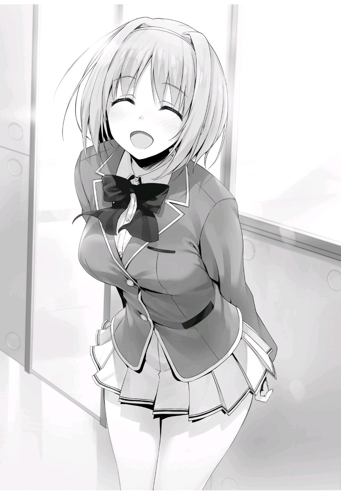
No había hecho ni dicho nada para ayudar a nuestros compañeros, ni interferido con ellos.
En cambio, los días habían pasado sin que ella dijera mucho.
En el pasado, Kushida habría asumido un papel más protagónico y trabajado para apoyar a la clase.
Sin embargo, no se veía que lo fuera a hacer esta vez, y probablemente había dos razones para ello.
La primera fue que su posición dentro de la clase se había vuelto inestable debido al resultado de la votación en el examen anterior.
Aunque estaba siendo utilizada por Yamauchi, el hecho de que se hubiera confabulado con él para que me expulsaran fue expuesto a todo el mundo.
Aunque muchos estudiantes decidieron que había espacio para simpatizar con Kushida, todavía era un pequeño problema para ella.
Todo el asunto dejó una mancha en lo que más orgullosa estaba: su disfraz de persona buena y virtuosa.
La segunda razón era que Horikita era la que lideraba esta vez.
Viéndolo desde el punto de vista de Kushida, esta era la verdadera razón detrás de su falta de movimiento.
Kushida ha odiado a Horikita desde el principio por conocer los secretos de su pasado.
Además de eso, Horikita le había dado una buena reprimenda justo antes del final del examen Votación de la Clase.
Cualesquiera que hayan sido sus razones, era su castigo por tratar de expulsar a alguien que no merecía ser expulsado.
El daño a su orgullo debió ser casi fatal.
—No pareces estar apoyando a Horikita esta vez.
Aunque ya era plenamente consciente de ello, me atreví a mencionarlo de todos modos.
Después de todo, quería saber qué acciones planeaba tomar Kushida en este examen especial.
No importa cuán cerca mires su sonriente y alegre máscara, no serás capaz de discernir sus verdaderos sentimientos.
Si no sabías que la verdadera Kushida yacía dormida bajo la máscara, no creerías que algo anda mal.
—¿Damos un paseo mientras hablamos?
—Está bien.
Al no querer que nuestra conversación sea escuchada por los demás, pidió que camináramos juntos a otro lugar.
—¿Tienes algún plan después de esto?
—Sí. Voy a salir un rato con algunas chicas de la clase B. ¿Crees que está mal que esté perdiendo el tiempo en un momento tan importante o algo así?
—No, a veces es importante tomarse un tiempo para uno mismo. Creo que casi todo el mundo estaría de acuerdo con eso.
Sería una tontería pasar el tiempo obsesionado con el examen las 24 horas del día.
Cuando es el momento de ser serio, debes ser serio. Pero cuando es hora de relajarse, debes relajarte.
—Lo entiendes, ¿verdad? ¿La razón por la que no estoy haciendo nada?
Pensé que estaría bien apoyar a Yamauchi-kun y hacer que te expulsaran.
Pero ahora que todo el mundo sabe lo que he hecho, ¿qué derecho tengo a liderar la clase?
Kushida intencionalmente dejó fuera el hecho de que Horikita se convirtió en la líder, la verdadera razón detrás de su falta de acción.
—No pareces muy convencido.
—Bueno, supongo.
—Para que quede claro, la razón por la que no estoy ayudando no es porque Horikita-san sea la líder de la clase, ¿de acuerdo?
—¿En serio?
—De verdad, de verdad.
Asintió varias veces para enfatizar, pero igual, seguía mintiendo sobre ello.
—No me crees, ¿verdad?
Por supuesto que no le creía. Pero aunque mis sospechas no se notaron en mi cara, ella estaba obligada a pensar lo mismo.
Ya había decidido desde hace mucho tiempo que sospecharía de ella.
—¿Cómo me veo ahora mismo, Ayanokouji-kun? Sé honesto conmigo.
—Bueno...
Por fuera, parecía una compañera de clase con una sonrisa encantadora en su cara.
Sin embargo...
Intenté imaginar la verdadera personalidad de Kushida escondida bajo su máscara.
“¡Definitivamente voy a joder a esa perra! ¿Se atrevió a ponerme en ridículo delante de toda la clase? ¡Nunca la perdonaré! ¡La mataré! ¡la mataré, la mataré, la mataré! ¡¡Definitivamente la mataré!!”
Con una vena saliéndole del costado de la cabeza, se ponía a rabiar sobre Horikita, farfullando una lista de blasfemias que era insoportable escuchar.
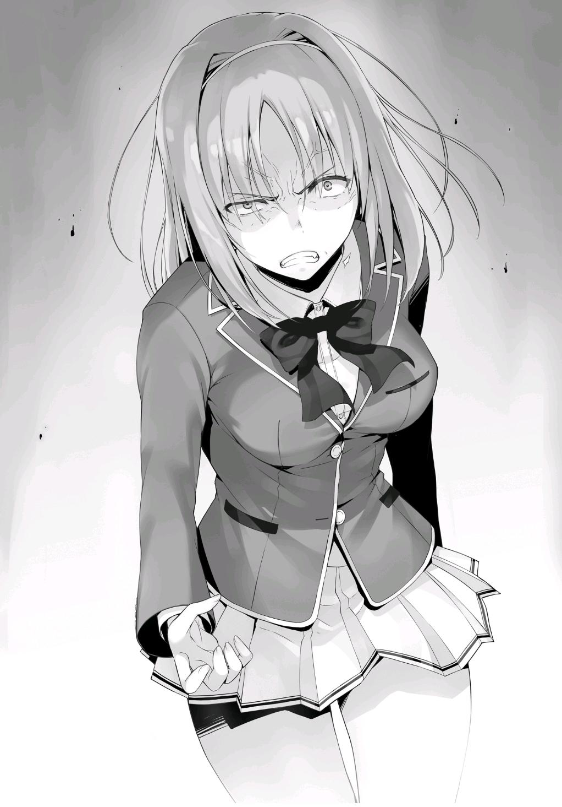
—…
No pude encontrar las palabras para expresar lo que acababa de imaginar.
—Acabas de pensar algo increíblemente grosero, ¿no?
—No... para nada.
La imagen que había imaginado era un poco extrema, así que me quedé sin palabras.
Lo saqué de mi mente y decidí ir al grano.
—Ya que dijiste que no te involucrarías esta vez, planeo respetar tu decisión.
—Pero a cambio, quieres información sobre la clase... ¿no?
Kushida entendía bien el significado de este examen especial.
—Correcto.
—¿No hay nadie más en la clase en el que puedas confiar ahora, Ayanokouji-kun?
A pesar de su constante cara sonriente, no iba a aceptar ayudarme de inmediato.
A pesar de que tenemos una relación contractual, Kushida volvió a subir la guardia.
Estábamos llegando al punto de inflexión final que determinaría si yo sería un enemigo o un aliado.
—Nadie se puede comparar contigo.
—Me alegra oírte decir eso, pero en este momento ya tengo todo tipo de cosas entre manos.
—¿Todo tipo de cosas?
—Eres muy malo, Ayanokouji-kun.
El hecho de que su reputación se haya manchado ha sido un gran inconveniente para ella.
La imagen del personaje que había construido durante el último año había sido distorsionada.
No hay duda de que todavía tenía mucho apoyo de sus compañeros de clase, pero no parecían ser completamente honestos al respecto. Era un ejemplo perfecto de cómo es difícil ganar la confianza, pero sólo toma un momento perderla.
—Entonces déjame intentar preguntarte lo contrario. ¿Cómo puedo hacer que colabores conmigo?
—Supongo que tendrás que renunciar a eso esta vez. Planeo pasar desapercibida hasta que pueda ser yo misma y tener tranquilidad en la clase. ¿Eso te molesta?
En otras palabras, esto implica que no me ayudará, pero tampoco se interpondrá en el camino.
Sin embargo, esto también significa que sólo actuará al mínimo si es seleccionada para un evento.
—¿Está bien hacer eso? ¿No sólo para mí, sino también para Horikita?
—Sí. Podrías interpretarlo de esa manera. Porque recientemente, me he dado cuenta de que esta escuela es mucho más cómoda para mí de lo que pensaba.
La forma en que me presentó una opción favorable parecía ser otra de sus habilidades.
Por el momento, se pondrá su máscara de mentiras y continuará su actuación.
Fue desafortunado que no haya sido capaz de hacerla cooperar, pero creo que es mejor aceptarlo por ahora.
—Entiendo. Lamento haber pedido algo irrazonable.
—No, en absoluto. Honestamente, estoy muy feliz de que hayas querido confiar en mí.
Una vez que llegamos a la entrada de la escuela, decidí separarme de ella.
Kushida se fue, caminando hacia el centro comercial de Keyaki sin detenerse a mirar atrás ni una sola vez.
PARTE 4
El fin de semana llegó y se fue, y así como así, era domingo 14 de marzo. El Día Blanco había llegado.
Para ser honesto, estaba agradecido de que hubiera llegado en domingo.
Había varios regalos preparados en mi escritorio.
Si hoy hubiera sido un día entre semana, me habría costado mucho trabajo saber cuándo entregarlos.
¿Debería ser por la mañana, antes de clases? ¿O debería esperar hasta que terminen?
Habría muchas otras cosas en las que pensar también. ¿En qué orden los entregaría? ¿Cómo manejaría los regalos para la gente de otras clases?
Más que nada, no sería bueno para mi reputación si la gente a mi alrededor viera lo que estoy haciendo.
Sabía que si llegaba el momento, sería mejor entregarlos sin preocuparse de cómo me vieran los demás, pero eso sería imposible.
Sin embargo, como hoy es un día libre, puedo ponerlos en sus respectivos buzones.
Para asegurarme de no encontrarme con nadie, salí de mi habitación temprano por la mañana y me dirigí a los buzones del dormitorio.
—Veamos...
Coloqué un regalo en los buzones de cada estudiante que me regaló chocolates de San Valentín.
Estaba a punto de volver a mi habitación después de terminar con el último regalo cuando me encontré con Ichinose.
Reaccionó como si hubiera visto algo que no debía.
—B-buenos días, Ayanokouji-kun.
—Ah... Sí, buenos días.
A pesar de que todavía era antes de las siete, me topé con alguien bastante inesperado.
Y al igual que en nuestro último encuentro, Ichinose todavía evitaba hacer contacto visual conmigo.
—Me levanté un poco temprano hoy, así que acabo de regresar de una caminata matutina.
Parecía que me miraba mientras hablaba, pero en realidad miraba algo justo detrás de mí.
Probablemente buscaba revisar su buzón antes de volver a su habitación.
—Oh... uhm, perdóname.
Me aparté para que pudiera revisar su buzón, y me agradeció con una ligera inclinación de cabeza. Por supuesto, una vez que miró dentro... el regalo que le hice naturalmente fue lo primero visible.
—Estoy seguro de que ya lo sabes, pero eso es, ya sabes, mi regalo de regreso por San Valentín.
Sosteniendo la caja en sus manos, Ichinose se quedó inmóvil, como si se hubiera congelado por un momento.
—Un regalo como este... Tú, no tenías que...
Ichinose respondió, habiendo recobrado sus sentidos.
—No, es lo correcto.
—...G-gracias. Uhm, lo siento. No estoy acostumbrada a este tipo de cosas, así que estoy un poco nerviosa.
Yo me sentía de la misma manera. No quería encontrarme con nadie en esta situación, así que yo mismo estaba bastante inseguro.
Como las cosas se estaban poniendo un poco incómodas, opté por cambiar de tema.
—...Ahora que lo pienso, ¿ha ocurrido algo nuevo con ese problema del que hablamos el jueves pasado?
—Ah, eh, eso, ¿todavía estás preocupado?
—Un poco.
Ichinose tenía más facilidad para hablar con el cambio de tema, ya que la atmósfera incómoda se redujo rápidamente.
—Me acerqué e interrogué a todos inmediatamente después de que nos separamos, pero las únicas víctimas fueron las tres personas de las que Shibata-kun nos habló. Pero...
—¿Pero?
—El viernes, fue como si de repente el número de víctimas se hubiera triplicado. Ayer recibí informes que decían que tres chicos y tres chicas más eran seguidos o acosados como los otros.
En otras palabras, un total de nueve personas habían sido afectadas por el hostigamiento de la Clase D. Sin embargo, en los primeros tres días después de que el examen comenzó, sólo se habían centrado en tres. Pero el viernes, de repente, ese número había aumentado en seis.
—¿Tienes alguna idea de qué estudiantes hicieron el acoso?
Ichinose asintió con la cabeza y comenzó a enumerar sus nombres.
—Hasta donde sé, estaban Ishizaki-kun, Komiya-kun, Yamada-kun, Kondou-kun, Ibuki-san, y Kishita-san.
Seis personas en total.
Todas eran personas que estaban dispuestas a ensuciarse las manos, al menos hasta cierto punto.
No parecían tener ninguna intención de ocultar sus identidades, dado que Ichinose ya había logrado identificar a cada uno de ellos.
—Me pregunto si los seis planean seguir a quien sea que termine cruzándose en su camino.
Era una pregunta natural, ya que la mayoría de la clase D estaba compuesta por estudiantes comunes y corrientes.
—Investigaré más a fondo el lunes.
—¿Qué vas a hacer si el problema es más grande de lo que piensas?
Existía la posibilidad de que hasta Ichinose y Kanzaki se vean afectados en algún momento.
—Hmm. Bueno, no estoy segura de que haya algo que podamos hacer,
¿sabes? No es que hayan sido violentos o algo así... así que hemos decidido aguantar hasta que causen un daño real. Haremos todo lo posible para proporcionar a las víctimas apoyo emocional.
Por lo que parece, están listos para entrar en acción en cualquier momento, pero sólo si la clase D llega a lo físico.
—Ya veo.
La clase D se comporta de forma extraña.
No pude evitar preguntarme si realmente iban a ir tras cada estudiante de la clase B.
Con sólo seis personas realizando el hostigamiento, no están ejerciendo mucha presión que digamos.
Aunque continúen haciendo esto una y otra vez, no sería más que un simple acoso.
Es posible que Ishizaki no pensara tan a fondo cuando se le ocurrió la estrategia.
¿O tal vez estarían satisfechos mientras pudieran hacer un poco de daño psicológico?
—¿Estoy haciendo algo malo?
Habiendo notado que estaba perdido en mis pensamientos, Ichinose me miró con una expresión un poco incómoda.
—No... Lo que estás haciendo ahora debería estar bien. De hecho, la clase D no sería castigada aunque presentaras una queja a la escuela. Además, si te quejaras directamente con ellos estarías haciendo exactamente lo que quieren que hagas.
—Sí, supongo que tienes razón.
Sin embargo, es importante que se asegure de que el objetivo de la Clase D sea realmente el que ella cree. Aunque no parece que Ichinose esté interesada en actuar, así que no sería necesario que le dijera esto.
Con su política que se centra principalmente en la defensa no agresiva, estaría fuera de lugar que yo dijera algo más.
—¿Han decidido los diez eventos que van a presentar?
—Sip. Tenemos una sólida comprensión de las fortalezas y debilidades de todos desde un principio. Terminamos todo ayer después de mezclar algunos eventos en los que creemos que la clase D podría no ser buena.
¿Qué tal ustedes, Ayanokouji-kun?
—No he estado involucrado en nada de eso esta vez. Le dejaré todo a Horikita.
—Pero, ¿qué harás con tus deberes como comandante?
—También le dejé eso a ella.
Ichinose mostró una mirada de sorpresa. No parecía pensar que yo tomaría ese papel tan a la ligera.
—Suena como si tuvieras mucha fe en Horikita-san. O... ¿Quizás estás diciendo que crees que puedes manejar todo, sin importar los eventos o reglas que ella termine eligiendo?
—Definitivamente es lo primero. A diferencia de ti, sólo soy cercano a algunos de mis compañeros, así que honestamente no sé nada de ellos.
Sólo me convertí en el comandante para evitar que alguien sea expulsado.
—Pero entonces, ¿por qué querías ir contra la clase A?
—Esa también fue la idea de Horikita. Tal vez pensó que nos daría las mejores oportunidades de ganar o algo así.
—Ya veo.
Ichinose no investigó más.
Habiendo llegado al final de la conversación, los dos nos quedamos esperando el ascensor.
—Ah... no me preparé para esto...
Ichinose habló como si acabara de recordar algo. La miré mientras estaba de pie a mi lado, girando continuamente un mechón de su pelo con su dedo índice.
—¿Prepararte?
—N-no, no es nada de lo que tengas que preocuparte.
Poco después, los dos subimos al ascensor, que llegó rápidamente al cuarto piso, donde está mi habitación.
—Nos vemos después.
Al salir del ascensor, me di la vuelta y miré a Ichinose durante un breve momento, sorprendiéndola con la guardia baja.
—¡Qu-qué-! Uh, yo, ¡uh...! ¡Nos vemos!
Con un repentino pánico, Ichinose comenzó a pulsar el botón para cerrar varias veces, y después de un momento, desapareció de la vista cuando las puertas del ascensor se cerraron entre nosotros. Aunque fue una forma extraña de separarse de alguien, fue agradable que hubiera logrado superar esta problemática prueba del Día Blanco.
—Ahora que lo pienso, hoy no olía a cítricos.
Aunque, era temprano por la mañana del fin de semana, así que no había ninguna razón en particular para que saliera con el perfume puesto.
PARTE 5
Pronto llegó la mañana del lunes, el día en que se anunciarían los diez eventos de nuestro oponente.
¿Qué eventos y reglas se le ocurrieron a la Clase A, y cómo exactamente estaría involucrado el comandante?
En mi camino a la escuela, me encontré con el hermano mayor de Horikita y Tachibana.
No me pareció que me estuvieran esperando. Más bien, parecía ser sólo una coincidencia.
Tachibana se distanció discretamente sin decir nada en particular.
Tal vez esta era su forma de ser considerada para no interponerse en la inminente conversación.
No había duda de que su tendencia a reaccionar de forma rápida y considerada como en este momento, había sido una fuente de apoyo para el Horikita mayor cuando estaba en el consejo estudiantil.
—¿Está yendo bien el examen especial?
Había algo especial en el hermano mayor de Horikita. A pesar de que no había recibido una explicación profunda, ya tenía una comprensión firme de mi situación.
—Se supone que esa es mi línea. ¿Estás seguro de que puedes graduarte como miembro de la clase A?
—Bueno, eso dependerá de los resultados de la próxima semana.
Ya sea que estuviera preocupado o perfectamente bien, no había forma de saber exactamente cómo se sentía por la mirada en su rostro.
—En mi caso, tu hermana ha estado trabajando duro. Por lo visto, has tenido más influencia en ella de lo que yo hubiera pensado.
—¿De verdad?
En la actualidad, Horikita estaba prácticamente rebosante de energía, como si hubiera sido tocada por magia.
Tomó la iniciativa de unir a la clase en ausencia de Hirata.
Recientemente, también había pasado su tiempo perfeccionando la estrategia de la clase para todos y cada uno de los diez eventos.
—¿No deberían estar ya los del tercer año en un descanso en este momento?
—Bueno, también me sorprendió descubrir que no era así cuando me inscribí aquí por primera vez. Después de todo, los estudiantes de tercer año en la mayoría de las otras preparatorias ya estarían de vacaciones en esta época del año. Por supuesto, estamos tan concentrados como cualquier otro estudiante de tercer año cuando se trata de cosas como pasar a la educación superior o encontrar un trabajo. Simplemente no eres consciente de eso todavía.
Sonaba como si los de tercer año tuvieran una variedad de cosas problemáticas con las que lidiar en este momento.
—¿Educación superior? ¿Encontrar un trabajo? ¿Aunque aún no se ha decidido si te graduarás como miembro de la Clase A?
—Al final lo entenderás.
El mayor de los Horikita lo dejó así, sin ni siquiera intentar darme una explicación detallada.
Supongo que hay algunas cosas que no puede decir a los estudiantes de primer y segundo año.
Al final del día, averiguar si puedes o no ascender a la clase A tendrá que esperar hasta que llegues a tu tercer año.
—Si tienes alguna pregunta, siéntete libre de hacerla. Te diré cualquier cosa siempre y cuando esté dentro del alcance de lo que se me permite decir.
—Ese campo de visión parece bastante estrecho a mis ojos.
Ante mi inesperada respuesta, las comisuras de su boca se elevaron en una sonrisa, aunque sólo ligeramente.
—Tal vez sea así. Puedes pensar en ello como una obligación que tengo como ex presidente del consejo estudiantil.
Esto significa que debe tener cuidado al responder a preguntas sobre la escuela en general.
—Bueno, esta es una buena oportunidad. Hay algo que he querido preguntarte —Decidí aprovechar este encuentro casual y hacerle una pregunta al Horikita mayor—. Se trata de Horikita... es decir, tu hermana menor. Creo que es una excelente persona. Tanto en el sentido físico como en el académico, no se queda atrás en lo más mínimo. No sé si diría que está en la cima de las listas de éxitos, pero tiene el talento de estar en segundo o tercer lugar desde el primer día que puso un pie en esta escuela. Aunque no esté al mismo nivel que tú, ex presidente del consejo estudiantil, no creo que sea tan mala como para que la ataques e intentes echarla de la escuela por completo.
Y luego, está la parte más extraña de todo.
—De cualquier manera, tu hermana y tú están separados por dos años, es decir, no has visto sus últimos dos años de crecimiento. Con el sistema que tiene esta escuela, no podrías decir a primera vista cuánto ha crecido.
Después de todo, tal y como está ahora, el mayor de los Horikita no ha podido reunirse con ella desde que empezó su segundo año de secundaria, ni siquiera una vez.
Aunque él estuviera decepcionado con sus resultados en el examen de ingreso, eso no debería haber sido suficiente para que estuviera tan decepcionado de ella.
En ese entonces, cuando los vi reunirse fuera del dormitorio, la actitud de Manabu hacia su hermana era todo menos tranquila.
—Ya veo. Por supuesto, después de ver lo que hiciste en ese entonces, es natural que sientas curiosidad por esto.
Entonces, recordé la primera vez que entré en contacto con el mayor de los Horikita.
—No me decepcionó Suzune por algo superficial como sus notas o la clase en la que fue colocada. Tenía que ver con su madurez.
—¿Madurez?
—Suzune ha cambiado dramáticamente de la forma en que solía ser. Era el tipo de niña que siempre tenía una sonrisa en su rostro.
¿Ella, esa chica, solía sonreír todo el tiempo?
...No, honestamente no podría imaginar eso en absoluto.
—En otras palabras, ¿dices que esta personalidad tranquila y sosegada que presenta es por tu influencia?
—Ella ha estado tratando de imitarme desde hace mucho tiempo. Es un mal hábito que empezó a surgir desde los grados superiores de la escuela primaria. Pero pensándolo ahora, es mi error por dejar que ocurriera durante tanto tiempo. Durante muchos años intenté que mejorara
tratándola fría e indiferentemente, pero en realidad terminó teniendo el efecto opuesto en ella, fallando por completo.
Como resultado, Horikita continuó persiguiendo la sombra de su hermano y se convirtió en el tipo de persona que es hoy.
—Así que aunque parezcas ser completamente perfecto, ¿has fallado en comunicarte adecuadamente con tu hermana?
—No existe un humano perfecto. ¿Me equivoco?
—Me parece justo.
No puedo refutarlo en eso.
—En resumen, después de reunirte con ella una vez más, todo lo que se necesitó fue una sola conversación para llegar a tu conclusión...
Aunque, en ese entonces, no parecía exactamente que hubieran hablado entre ellos por mucho tiempo.
—Me di cuenta antes de hablar con ella. Desde el primer momento en que la vi de nuevo, supe que en los últimos dos años, no había cambiado en absoluto.
Mientras me preguntaba si él había visto algo en ella que sólo un hermano mayor podría entender, continuó explicando.
—Esa chica siempre ha estado completamente atada a cada una de mis palabras. Estudia más, haz más ejercicio, no hagas una cosa, no hagas otra. Habría estado bien si eso fuera todo. Pero, imitaba mis comidas y bebidas favoritas, incluso llegó a copiar mis colores favoritos y el tipo de ropa que usaba. Ha demostrado lo mucho que ha dependido de mí en cada paso del camino.
El hecho de que haya llegado tan lejos ya es un poco alarmante.
Sin embargo, si miras el comportamiento de Horikita desde que llegó a esta escuela, tiene sentido.
—Así que, después de reunirte con tu hermana en esta escuela, ¿sentiste que este problema de dependencia aún no había cambiado?
A menos que pudiera leer la mente, no había suficiente información para saber por lo que había pasado en los últimos dos años.
—Así es. Cualquiera que sepa cómo era ella de niña podría decirlo. Esa chica...
Se interrumpió a mitad de la frase, ahogando sus palabras.
—...No importa. Esto es algo que debería mantener en secreto, incluso de ti. Me gustaría que fuera la métrica perfecta para determinar si Suzune ha cambiado realmente o no.
—Supongo que eso significa que tu hermana aún no ha cambiado.
El Horikita mayor asintió con la cabeza. Aunque Horikita ha mostrado un gran progreso en comparación con cómo era a principios de año, según su hermano mayor, eso no era suficiente.
—Ella ha estado tratando de hacer lo mejor para romper con su pasado, pero sólo está a la mitad del camino.
Me encontré preguntándome si sería capaz de satisfacer la llamada "métrica perfecta" de su hermano antes de que él se gradúe.
No quedaban muchos días para la ceremonia de graduación.
—Pero, si...
El mayor de los Horikita dejó de caminar por un momento y fijó sus ojos en mí.
Por alguna razón, me encontré atrapado en su poderosa mirada y dejé de caminar también.
—Si Suzune pudiera dejar de perseguir mi sombra, romper su dependencia y ser honesta con ella misma...
Una brisa primaveral soplaba por el aire.
—Me superaría por completo, y se convertiría en alguien a quien no podrías ignorar.
No lo dijo sólo porque la quiere como su hermano mayor. Lo dijo en serio.
En muchos sentidos, también admiro el alto potencial de Horikita.
¿Por qué era eso? ¿Es por lo que acaba de decir?
De repente, un pensamiento cruzó mi mente. ¿Qué se suponía que debería hacer aquí, en esta escuela?
No, ¿qué quería hacer? Sentí que de repente había encontrado la respuesta a esa pregunta.
—Pero al final, todo depende de si puede cambiar de alguna manera.
—Ella cambiará —Le respondí con confianza—. O, no, déjame reformular eso —Pero entonces, elegí rectificarme—. Voy a hacer que cambie. No de la misma manera que lo he hecho hasta ahora, sino que esta vez de verdad.
—...¿Oh? Nunca pensé que dirías algo así.
Sentí que este encuentro casual con el mayor de los Horikita dejaría un gran impacto en mi vida.
Pasaría mucho tiempo antes de que supiera si esa premonición era cierta o no.
—Oye, ¿puedo preguntarte una cosa más antes de que te gradúes? Es una pregunta completamente personal.
No sabía si tendría otra oportunidad de hablar con él después de esto.
—¿Qué?
—¿Vas a salir con Tachibana?
Era consciente de que era una pregunta tonta, pero la hice de todas formas.
A pesar de haber dejado el consejo estudiantil, los dos estaban a menudo haciendo cosas juntos.
—No. Nada de eso.
Una negación rotunda. Tampoco parecía que estuviera tratando de ocultar nada.
Sin embargo, una rápida mirada a la cara de Tachibana me dijo que era algo más complicado que eso.
Como mínimo, no había duda de que Tachibana sentía algo por él.
—He pasado estos últimos tres años pensando en nada más que en la escuela, para bien o para mal.
—¿En serio?
—Pero no pensé que algo así saldría de tu boca. ¿Podría ser que sólo seas un estudiante de preparatoria normal?
Tal vez me influyó la charla que tuve con Hoshinomiya-sensei.
—Creo que soy lo más normal que se puede conseguir.
—Ah. Es cierto. Entonces, ¿te has conseguido una novia, Sr. Estudiante Normal de Preparatoria?
Aunque yo había sido el que sacó el tema, no esperaba que me lo devolviera.
—Ahora mismo no. Pero si alguien adecuado viene, estoy aceptando solicitudes.
—Siento que podría estar tranquilo si te dejo a Suzune, pero tengo la sensación de que eso no va a pasar.
—Por supuesto que no.
No había forma de que eso sucediera.
—E-eso no es bueno. Sabes que decir algo así puede convertirse en una bandera, ¿verdad?
Tachibana interrumpió repentinamente la conversación que había estado escuchando atentamente durante un tiempo.
—¿Bandera?
Cuando el mayor de los Horikita cuestionó su elección de palabras, Tachibana se apresuró a dar una explicación.
—No, supongo que es como, ironía situacional o algo así... Ya sabes, el tipo de cosas que pasan de vez en cuando donde dos personas que nunca pensaron que se juntarían terminan saliendo. Es un escenario común.
El Horikita mayor y yo nos miramos, ninguno de los dos entendió muy bien la explicación de Tachibana.
—N-no, no importa.
Tachibana parecía pensar que no sería capaz de hacernos entender lo que intentaba decir, ya que terminó la conversación con eso.
PARTE 6
De vuelta al aula, nuestra clase matutina había llegado a su fin.
Y, al mismo tiempo, se anunciaron los diez eventos que la clase A eligió.
Horikita leyó todos los documentos que fueron dejados para nosotros.
Mentalmente, resumí todo, poniéndolo todo junto basado en el número de personas requeridas para cada evento.
『Ajedrez』 Participantes requeridos: 1 ・ Tiempo inicial asignado por persona: 1 hora (si se agota el tiempo se pierde)
Reglas: Se aplican las reglas estándar del ajedrez. Sin embargo, después de la 40ª jugada, su tiempo asignado ya no aumentará antes de cada jugada.
Intervención del Comandante: En cualquier momento, el comandante puede dar instrucciones al jugador participante durante un máximo de 30 minutos. En
cualquier momento en que dé instrucciones también utilizará el tiempo asignado al participante correspondiente.
『 Aritmética Mental Rápida 』 Participantes requeridos: 2 ・ Tiempo: 30
minutos
Reglas: La victoria será decidida por el estudiante que ocupe el primer lugar en términos de velocidad y precisión usando aritmética mental al estilo del ábaco.
Intervención del Comandante: El comandante puede cambiar la respuesta de una sola pregunta de su elección.
『Go』 Participantes requeridos: 3 ・ Tiempo: 1 hora (Si se agota el tiempo se perderá)
Reglas: Se jugarán tres juegos de uno contra uno simultáneamente. Se aplican las reglas estándar del Go.
Intervención del Comandante: En cualquier momento, el comandante puede aconsejar un movimiento.
『 Prueba de Literatura Moderna 』 Participantes requeridos: 4 ・ Tiempo: 50
minutos
Reglas: La prueba estará dentro del ámbito del plan de estudios de literatura del primer año. La victoria se decidirá en base a la clase con la mayor puntuación global.
Intervención del Comandante: El comandante puede responder una sola pregunta en nombre del participante.
『 Prueba de estudios sociales 』 Participantes requeridos: 5 ・ Tiempo: 50
minutos
Reglas: La prueba estará dentro del ámbito del plan de estudios de primer año de geografía, historia y educación cívica. La victoria se decidirá en base a la clase con la mayor puntuación global.
Intervención del Comandante: El comandante puede responder una sola pregunta en nombre del participante.
『Volleyball』 Participantes requeridos: 6 ・ Restricción de tiempo: Primero a 10
puntos, al mejor de 3 sets
Reglas: Se aplican las reglas estándar del voleibol.
Intervención del Comandante: En cualquier momento, el comandante puede realizar 3 sustituciones.
『 Prueba de matemáticas 』 Participantes requeridos: 7 ・ Tiempo: 50 minutos Reglas: La prueba estará dentro del ámbito del plan de estudios de matemáticas del primer año. La victoria se decidirá en base a la clase con la mayor puntuación global.
Intervención del Comandante: El comandante puede responder una sola pregunta en nombre del participante.
『 Prueba de inglés 』 Participantes requeridos: 8 ・ Tiempo: 50 minutos Reglas: La prueba estará dentro del ámbito del plan de estudios de primer año de inglés. La victoria se decidirá en base a la clase con la mayor puntuación global.
Intervención del Comandante: El comandante puede responder una sola pregunta en nombre del participante.
『 Salto de cuerda larga 』 Participantes requeridos: 20 ・ Tiempo: 30 minutos Reglas: La clase con el mayor número de saltos exitosos gana.
Intervención del Comandante: El comandante puede cambiar el orden de la alineación del equipo contrario de la forma que quiera una sola vez.
『Dodgeball』 Participantes requeridos: 18 ・ Restricción de tiempo: 10 minutos por set en 2 sets
Reglas: Se aplican las reglas estándar del dodgeball. En caso de empate, se iniciará una ronda de muerte súbita.
Intervención del Comandante: En cualquier momento, el comandante puede devolver a un jugador descalificado a la cancha.
—Es inesperado que hayan elegido múltiples eventos deportivos. Pensé que se duplicaría en eventos que requieren que uses tu cabeza como los exámenes escritos. Aunque, hay una buena posibilidad de que sólo sean una distracción.
Esa fue la primera impresión de Horikita, y Keisei, hablando justo después de ella, compartió también pensamientos similares.
—El ajedrez y el Go son dos juegos muy conocidos, pero parece que nos ponen en una situación difícil porque sólo unos pocos estudiantes los han jugado. La coordinación del equipo juega un papel importante en todos los deportes que han elegido.
No debería haber nadie en nuestra clase que nunca haya oído hablar del ajedrez o del go, pero la mayoría de los estudiantes seguramente no los han jugado o incluso tocado antes.
—En general, no esperaba que mantuvieran al mínimo la intervención del comandante en la mayoría de los eventos. Especialmente cuando se trata
de eventos académicos, donde las intervenciones que han planteado difícilmente afectarán el resultado.
—Supongo que esto demuestra lo mucho que confían en sus compañeros de clase. La clase A tiene una ventaja significativa en los eventos académicos, y no sólo eligieron cuatro pruebas académicas, sino que el número de personas requeridas para ellas es bastante alto. Esto se ve muy difícil...
En todos los exámenes hasta ahora, la clase A siempre ha obtenido la mayor puntuación media de todas las clases.
Por eso, decidieron utilizar un número tan grande de participantes en sus pruebas.
Estas pruebas son esencialmente su manera de obligarnos a tener una competencia puramente académica, ya que el comandante no será capaz de hacer mucho.
El hecho de que no sólo eligieran los exámenes escritos fue también una buena decisión de su parte.
Si hubieran hecho siete u ocho exámenes escritos, habríamos podido concentrar nuestros esfuerzos en estudiar para ellos.
Están tratando de limitar las opciones que tenemos disponibles mientras nos obligan a estudiar temas que no serán relevantes más tarde.
—El voleibol requiere 6 personas, 9 si incluyes a los suplentes, el dodgeball requiere 18, y el salto de cuerda larga requiere la cantidad máxima de 20. Requieren un número tan grande de personas que, si hasta uno sólo de ellos es elegido, habrá una alta posibilidad de que tengamos que participar más de una vez.
Como no había forma de saber cuál de los diez eventos será utilizado el día del examen, no podremos tomar atajos con ninguno de ellos.
Además, como muchos de sus eventos atléticos requieren un gran número de personas, tendremos que gastar una gran cantidad de tiempo y esfuerzo en la
selección de los participantes y la práctica. Si fuéramos lo suficientemente audaces para reservar un lugar como el gimnasio de la escuela para practicar, la clase A seguramente termine dándose cuenta. En otras palabras, tenemos que ocultar nuestras actividades y prácticas.
Sin embargo, no había forma de saber qué eventos se usarían el día del examen.
Si pasamos mucho tiempo practicando para un evento, nuestros esfuerzos serían infructuosos si no es elegido. Es decir, estaríamos perdiendo el tiempo.
Por otra parte, si decidimos que un evento es sólo una distracción y elegimos no practicar para él, nuestra falta de preparación sería dolorosamente obvia si el evento realmente resulta elegido. Apenas tendríamos ninguna posibilidad de ganar.
Sería importante para nosotros vigilar los movimientos de la clase A durante la semana siguiente, pero es más fácil decirlo que hacerlo. No será fácil encontrarlos si están practicando temprano en la mañana o tarde en la noche.
También podrían separarse y practicar en grupos más pequeños.
No podemos pasar por alto ninguno de los eventos. No importa cuáles sean elegidos, todos son problemáticos.
Por supuesto, no tenemos la suerte de enfrentarnos a eventos en los que realmente queramos participar.
—¿Alguien tiene alguna experiencia particular con el ajedrez o con el go?
Horikita impulsó a la clase a levantar las manos, a lo que sólo respondió Miyamoto.
—He jugado al Go unas cuantas veces con mi familia, pero no soy lo suficientemente bueno para estar familiarizado con las reglas.
No había duda de que, como punto de partida, estos dos eventos hicieron que la situación pareciera bastante sombría.
Aunque era un poco tarde, también levanté la mano.
—Puedo jugar al ajedrez, más o menos, pero no entiendo nada de Go. Ni siquiera lo he tocado antes.
A pesar de ser el comandante, pensé que debía hacer saber a todos que podía jugar el juego. Más tarde, podría enseñar a otras personas.
—Supongo que es un alivio que tengamos al menos a alguien con experiencia. Pero, de nuevo, es un examen realmente desafiante, por lo que no podemos tomar a la ligera estos eventos, nos guste o no.
Me pregunto cuánto podría alguien aumentar su habilidad en el ajedrez o en el Go en menos de una semana. En el peor de los casos, sólo dos de nuestros eventos lograrán pasar, mientras que los otros cinco serán de la clase A.
Durante al menos una parte del examen, no tenemos otra opción que confiar en el potencial de nuestros compañeros de clase.
Sin embargo, ¿por qué...?
—¿Qué pasa, Ayanokouji-kun?
Horikita me observó con una mirada curiosa en su cara.
—...No, no es nada.
Para el evento de ajedrez, la participación del comandante es demasiado impactante. Es casi como una batalla entre los comandantes.
Me dio la impresión de que Sakayanagi quería usar el evento para competir contra mí.
—Hey, Horikita. ¿No deberíamos también empezar a recolectar información seriamente en este punto?
Notando una sensación de urgencia, Keisei le pidió a Horikita una respuesta.
—¿Estás diciendo que quieres que averigüemos cuál de los diez eventos planea elegir la clase A al final...?
—Sí. Honestamente, será muy difícil prepararnos para los diez eventos en el tiempo que nos queda. Si no conseguimos de alguna manera información, nuestra oportunidad de ganar será mucho menor.
—Pero la clase A no dará información muy fácilmente.
Uno de los chicos respondió, diciendo algo que todo el mundo ya conocía.
—A pesar de eso, todavía tenemos que intentarlo.
—Entiendo sus preocupaciones, pero no puedo tomar una decisión al respecto todavía. Déjenme entender primero cuánta experiencia tenemos con cada uno de estos eventos.
Horikita dejó de lado el tema de la recolección de información y comenzó a centrar su atención en la comprensión de la posición de la clase con respecto a los diez eventos de la Clase A.
PARTE 7
—Horikita, ¿tienes un momento?
Durante el descanso entre clases, Keisei se acercó a Horikita.
—No hay problema. ¿Qué pasa?
—Hablar aquí es un poco... bueno, es sobre el examen especial.
Al no querer que nadie más escuche su conversación, Keisei instó sutilmente a Horikita a que lo siguiera hasta el pasillo.
Yo tenía la intención de verlos salir desde mi asiento, pero Horikita se giró y me miró.
—¿Está bien si Ayanokouji-kun también viene?
—...De acuerdo.
No parecía exactamente feliz con la idea, sin embargo la aceptó.
No era como si fuera a negarme, así que los seguí a los dos hasta el pasillo.
—¿Has pensado en lo que dije?
—¿Sobre la recopilación de información?
—Sí.
—Acerca de eso... no creo que sea fácil conseguir información de la clase A.
—Pero, ¿no sería un gran desperdicio no hacer nada? Deberíamos usar nuestro tiempo de manera más efectiva.
Aparentemente, Keisei quería tomar medidas y reunir información lo antes posible.
El deseo de hacer todo lo físicamente posible para ganar era un sentimiento que conocía muy bien.
—¿Crees que permanecer alrededor de los estudiantes de la clase A resolverá el problema?
—Veamos. Dudo que el estudiante promedio de la clase A sepa cuáles son los cinco eventos que se elegirán.
Seguramente Sakayanagi era la única que sabía qué eventos serían elegidos, y si no, se limitaría a ella y a sus allegados.
Considerando el tipo de persona que es, no sería extraño que manejara minuciosamente el flujo de información.
—Incluso si Sakayanagi es la única que sabe qué eventos elegirán, sus compañeros de clase están obligados a tener una vaga idea de cuál es el plan, ¿verdad? ¿No lo dirías así, Kiyotaka?
—Bueno, sus compañeros de clase al menos deberían saber algo.
Habiendo pasado el último año juntos, conocerían las fortalezas y debilidades del otro hasta cierto punto.
Probablemente serían capaces de hacer una suposición fundamentada sobre cuáles serían elegidos.
—Exactamente. Por eso he ideado un método para obtener información de la clase A.
—¿Ese método es...?
—Hacer de Katsuragi nuestro aliado.
Katsuragi. Una antigua figura destacada de la clase A que se había opuesto a Sakayanagi.
Keisei primero se aseguró de que no hubiera nadie alrededor, y luego bajó su voz hasta un susurro.
—Recientemente, Totsuka, el mayor partidario de Katsuragi, fue expulsado por culpa de Sakayanagi, por lo que seguramente aún le guarde rencor,
¿verdad? Me he encontrado con él un par de veces en los últimos días, y está claro que no es el mismo que era antes.
No había duda de que le guardaba rencor a Sakayanagi.
Pensé en la conversación que tuvo lugar el día de la expulsión de Yahiko, cuando Katsuragi y Ryuuen se encontraron.
—¿Realmente crees que traicionaría a su clase sólo para fastidiar a Sakayanagi-san?
—Por supuesto, tendríamos que ofrecerle algo apropiado a cambio.
Por lo visto, Keisei ya tenía una idea sobre eso también.
—Si él es capaz de ayudar a nuestra clase a ganar, terminaríamos ganando al menos 130 puntos de clase en total. Desde la perspectiva de la clase en su conjunto, eso suma más de 6 millones de puntos privados en el curso de un año completo. Además, si tuviéramos que ahorrar algo cada mes, no sería imposible para nosotros ahorrar cerca de 20 millones de puntos.
Después de haber escuchado eso, ya podía adivinar a dónde iba Keisei con esto.
—Entonces, cuando logremos subir a la clase A, ofreceremos a Katsuragi la oportunidad de transferirse de clase. ¿Qué tal eso como moneda de cambio? Además, de esta manera, estableceríamos una buena relación con Katsuragi.
—En primer lugar, un estudiante ordinario no estaría de acuerdo con estos términos. No importa lo que le digamos, sólo somos la Clase C. Lo sabes,
¿verdad?
—Pero, ¿estás segura de que puedes decir eso dada la situación en la que está ahora mismo?
—Es cierto que Katsuragi no está en la mejor posición ahora mismo, pero si se corre la voz de que traicionó a su clase, sería el siguiente en la guillotina. No tendría el lujo de esperar a que ahorremos 20 millones de puntos. Aunque asumamos que los puntos de nuestra clase serán cada vez más altos, e incluso si toda la clase aceptara cooperar, probablemente nos llevaría al menos medio año conseguir tanto.
Para ser más realistas, nos llevaría un año entero de ahorro para llegar a ese punto.
Además, aunque ganaríamos más puntos de clase, 20 millones de puntos privados no eran un precio pequeño a pagar.
—Entonces, ¿qué piensas, Horikita?
—...Bueno. Es como tú dices, Yukimura-kun. Obtener información es inmensamente importante.
—Entonces...
—Sin embargo, no estoy de acuerdo con tu sugerencia en lo más mínimo.
—¿P-por qué no?
—Aunque Katsuragi-kun ha sido indudablemente arrinconado, no creo que esté dispuesto a aceptar nuestros términos y traicionar a su clase. Nuestra oferta no es lo suficientemente buena.
Sería una historia diferente si tuviéramos los puntos disponibles ahora, pero sería extraño que aceptara una oferta que sólo se pagaría más de un año después.
—Pero si no hacemos nada, no obtendremos ninguna información.
—En primer lugar, no creo que obtengamos ninguna información útil, aunque hagamos algo.
—¿Cómo lo sabremos si no lo intentamos?
A pesar de la persistencia de Keisei, Horikita claramente no estaba dispuesta a aceptar su idea.
—No me opongo del todo a la recopilación de información, pero tu método no es lo suficientemente bueno. Podemos discutir esto de nuevo si se te ocurre una nueva idea.
Con eso, Horikita terminó la conversación y regresó al salón de clases.
—¡Maldita sea!
Keisei pateó la pared del pasillo debido a su frustración.
—...Oye Kiyotaka, ¿quieres ayudar?
—¿Con persuadir a Horikita?
—No... con persuadir a Katsuragi por nuestra cuenta.
Sus palabras realmente enfatizaron su determinación.
—No estoy diciendo que Horikita se haya rendido con la victoria, pero me parece que, en algún lugar de su mente, piensa que no tenemos ninguna oportunidad. Si no, ella debería estar dispuesta a aprovechar la posibilidad y darle una oportunidad, ¿verdad? Aunque se sepa que nos reunimos con Katsuragi, no pondría a la clase C en desventaja en absoluto.
Aunque no estuviera de acuerdo con Keisei en esta situación, no podría impedir que se moviera él solo.
Siendo así, podría ir con él y comprender mejor la situación.
—¿Cómo vamos a ponernos en contacto con Katsuragi?
—Eso... es algo en lo que tendré que pensar. Todavía tenemos algo de tiempo antes del examen.
—Está bien. Avísame cuando te decidas.
Le respondí positivamente para evitar que tomara medidas por su cuenta y decidí trabajar con él por el momento.
PARTE 8
[Oye. ¿Tienes tiempo para hablar un segundo?]
Eran cerca de las 6 PM, justo antes de la cena. Estaba viendo cómo mi estufa calentaba un recipiente con agua cuando recibí una llamada de Horikita.
Mientras hablaba, el agua comenzó a hervir, y se escuchó el silbido de la tetera.
[¿Estás haciendo la cena?]
—No, no te preocupes por eso.
El agua acababa de empezar a hervir, así que no había hecho nada especial todavía.
—¿Qué pasa? ¿De qué quieres hablar?
Si quería pedirme ayuda para resolver los problemas, tendría que negarme.
[ No te preocupes, no se trata de pedirte ayuda con los eventos. Lo prometo.]
Horikita inmediatamente percibió lo que estaba pensando.
[Aunque, bueno. Si está bien para ti, ¿podemos hablar en persona? La conversación no debería tomar más de una hora.]
¿Era algo difícil de explicar por teléfono? ¿O tal vez estaba buscando confirmar algo al reunirse cara a cara?
Una hora no era una cantidad de tiempo excesiva. Sería difícil rechazarla.
—Está bien. ¿Vendrás aquí?
[Aunque me parece bien, últimamente te has involucrado en todo tipo de cosas.
¿Qué tal si mejor vienes aquí?]
Parecía desconfiar de cualquier invitado inesperado que pudiera venir a visitarme.
También había estado en la habitación de Horikita antes, así que no había ninguna razón en particular para que me negara.
Después de apagar la estufa, salí directamente de mi cuarto con mi teléfono en la mano. Entonces, subí al ascensor y me dirigí a la habitación de Horikita.
Aunque el sol ya se había puesto, todavía era temprano, por lo que no debería ser tan extraño para un chico estar caminando por los pisos superiores del dormitorio donde residen las chicas.
PARTE 9
Poco después de tocar el timbre, pude escuchar el sonido de la cerradura girando desde el interior de la habitación.
Pensé que me saludaría con su habitual expresión seria, pero en cambio me sorprendió.
—Bienvenido.
Fui invitado a entrar por Horikita, que inesperadamente estaba de buen humor.
Yo, por otra parte, me sentí un poco ansioso al ver este cambio anormal en su comportamiento.
Había un ligero olor a miso en el aire que venía de más adentro.
—Estaba preparando la cena. Pasa.
Si ese es el caso, habría estado bien si hubiera esperado hasta después de la cena para llamarme.
Sentí la mirada apremiante de Horikita mientras permanecía allí, dudando en entrar, así que rápidamente me resigné.
Podría haber sido reacia a que alguien viniera si hubiera llegado mucho más tarde.
Decidí dejar de pensar en ello y entré. Casi inmediatamente, noté algo extraño.
Por alguna razón, la pequeña mesa estaba claramente preparada para dos personas en lugar de una.
¿Planeaba cenar con alguien más después de terminar de hablar conmigo?
—Oye...
Justo cuando iba a preguntar, Horikita me interrumpió.
—Siéntete libre de tomar asiento.
No, ¿me pides que me siente...? Evidentemente, hay un par de palillos colocados delante del asiento al que ella hizo un gesto.
Mis instintos me decían que me estaban tendiendo una trampa.
—Entonces, ¿de qué querías hablar exactamente?
En lugar de sentarme, rápidamente traté de seguir con la conversación.
—¿Planeas quedarte de pie mientras hablamos? Todavía tengo que hacer algunos preparativos, así que ¿podrías por favor tomar asiento y esperar a que termine?
—No... sólo tengo ganas de estar de pie.
—¿Tú qué? No me siento cómoda teniéndote ahí de pie de esa manera.
Siéntate.
Al oír la voz de Horikita cada vez más severa, decidí sentarme.
Había pasado un tiempo sorprendentemente largo desde que vi este nivel de confianza en ella, mezclado con una actitud insistente e irracional.
Lo había olvidado porque recientemente habíamos empezado a distanciarnos.
Por el momento, ¿tendría que sentarme y esperar pacientemente?
A simple vista, la comida parecía estar sólo parcialmente hecha. Probablemente pasaría un buen rato antes de que terminara con ella.
—Oye. Sólo tomará una hora, ¿verdad?
—Sí. Nuestra conversación en sí no debería durar más de una hora.
Horikita habló de espaldas a mí, sus palabras me dieron la impresión natural de que había caído en su trampa.
De hecho, por teléfono ella había dicho que la conversación terminaría en una hora.
Es decir, otras cosas no estaban incluidas en esa estimación.
—¿Cuánto tiempo con todo lo demás incluido?
—Hm... ¿Entonces tal vez de una hora y media a dos horas más o menos?
Lo sabía.
—Ya que es tan tarde, pensé que también podría invitarte a cenar.
Ni una sola persona podría haber visto venir esto. Me sentí como si estuviera a merced de sus irrazonables juegos de palabras.
Sin embargo, pude ver que ya había empezado a cocinar. En este punto, sería grosero rechazar la comida y volver a mi dormitorio. Realmente me atrajo hábilmente para que viniera aquí.
Aunque me daba la espalda, pude ver que las habilidades de Horikita para cocinar no eran tan malas.
Más bien, dado que es sólo una estudiante de primer año de preparatoria, sus habilidades parecían notablemente respetables.
—Mis dos padres trabajan a tiempo completo, así que yo estaba a cargo de preparar la cena la mayor parte del tiempo.
Horikita habló en voz baja, como si supiera exactamente lo que había estado pensando y el significado detrás de mi mirada.
—¿No lo encuentras demasiado problemático o que consume mucho tiempo?
Aunque cocinar puede ser divertido, ciertamente había muchas partes problemáticas en el proceso.
—Cuando supe que mi hermano asistía a esta escuela, me tomé la libertad de practicar la cocina más a menudo.
—¿Te estabas preparando para inscribirte en esta escuela y vivir la vida tú sola?
—Eso es correcto.
Pude oír a Horikita dejar el cuchillo que había estado usando y se puso a dar los últimos toques a la olla de sopa de miso.
Aun así, me encontré preguntándome de qué íbamos a hablar si no íbamos a discutir el examen especial.
Todavía no tenía la menor idea.
PARTE 10
Después de esperar otros quince minutos...
Horikita había terminado de cocinar y puso todo sobre la mesa. Ver toda la comida extendida ante mí fue mejor de lo que esperaba. La forma en que la comida decoraba la mesa del comedor era similar a la que se veía en la televisión. Luego arregló todo sentándose frente a mí.
Si Sudou nos viera así, seguramente me daría un puñetazo lleno de rabia.
Aunque le dijera que se trataba de un malentendido, lo más probable es que no me llevara a ninguna parte.
Mejor aún, quería creer que él ya había experimentado este tipo de situación.
No, seguiría estando celoso de mí de cualquier manera.
—Come.
Por insistencia de Horikita, tomé mis palillos. Los dos nos sentamos uno frente al otro con la comida puesta en medio.
La escena me dio una fuerte sensación de déjà vu.
Me recordó la vez que Horikita se aprovechó de mí comprándome una comida en la cafetería al principio del año.
—¿Estás sospechando algo? ¿De mí?
—En absoluto, sólo me siento un poco incómodo.
—Si empiezas a dudar de la bondad de los demás, sólo sirve como prueba de que tienes un problema como ser humano.
—¿Tú de todas las personas me estás diciendo eso?
—Hoy es un día especial, ¿sabes?
—…
Si realmente hizo esto porque está siendo considerada, entonces supongo que sería grosero no probarlo al menos.
Sin embargo, está dentro de la naturaleza humana el ser suspicaz. No, más bien, para mí son mis experiencias pasadas con ella las que me hicieron dudar. Esta vez, sin embargo, se las arregló para arrinconarme.
El resultado ya estaba decidido desde el momento en que entré imprudentemente en la habitación de Horikita.
Por el momento, elegí por lo menos probar la sopa.
El olor del miso me hacía cosquillas en la nariz. Había usado ingredientes saludables con rábano daikon como base.
—Miso de cebada, ¿eh?
Al tomar mi primer sorbo, el característico sabor dulce e intenso de la sopa se extendió por toda mi boca.
—Estás bien informado. Es la forma preferida de la sopa Miso en Kyushu, pero no estaba segura de que se ajustara a tu gusto.
—Eres buena cocinera.
Traté de hacerle un cumplido genuino, pero no parecía particularmente feliz por ello.
—Hoy en día, la cocina no requiere ninguna habilidad especial, así que no es algo de lo que valga la pena presumir. Si hay algo que quieras hacer, sólo tienes que buscar una receta en línea y comprar lo que necesites en el supermercado o en una tienda. Lo sabes, ¿verdad?
Si no es más que cocinar, entonces puede ser cierto. Sin embargo, todo tipo de pequeños detalles podrían ayudar a resaltar tus habilidades culinarias, desde la forma en que colocas el platillo en el plato hasta la forma en que preparas los ingredientes. No es algo que se pueda aprender de la noche a la mañana.
—¿Le has invitado a Sudou comidas como esta?
Cuando le pregunté esto, me observó con una mirada algo insatisfecha en sus ojos.
—¿Por qué tendría que cocinarle a él?
—Bueno... siempre le estás ayudando a estudiar, ¿verdad?
—Sí, pero, aunque eso sea cierto, ¿cómo tiene que ver eso con que cocine para él?
Se suponía que era una pregunta trivial, pero Horikita continuó objetando a ella.
—Si nuestras posiciones se invirtieran y él fuera el que me ayudara a estudiar, entonces me inclinaría más a estar de acuerdo contigo. Después de todo, esto se hace normalmente como una forma de decir gracias. Pero, no hay manera de que pase por todo este problema cuando soy yo quien le hace un favor.
Su razonamiento era tan sólido que no pude encontrar palabras para refutarla, pero...
—No puedo decir si eres inteligente o estúpido.
Esa debería ser mi línea. Sudou se enamoró de Horikita, así que pensé que ella ya había cocinado para él. Al parecer, todavía no ha enfrentado sus sentimientos por ella. Pero, eso es debido a que no pone mucho énfasis en algo como el amor. No ha crecido hasta el punto de poder ser consciente de cosas como esa todavía.
—Bueno, entonces... Si no te importa, ¿qué tal si vamos al grano?
Al decir eso, sacó un cuaderno y me lo ofreció.
Sin siquiera tener que preguntar qué era, supe que esto tenía que ser en lo que había estado trabajando en los últimos días.
—He ideado un plan que creo que se adaptará mejor a nuestra clase. Me gustaría oír su opinión al respecto —Y luego, añadió algunas palabras más—. Te comiste mi comida, ¿verdad?
Qué truco tan sucio. Me invita a comer y luego viene y me pide que trabaje para ella. Inmediatamente tomé el cuaderno y comencé a hojearlo. Había documentado minuciosamente los diversos aspectos del examen especial.
Había hasta un registro sobre los diez eventos que la clase A había elegido, pero como esos recién se habían revelado hoy, todavía los estaba escribiendo.
Por cierto, los diez eventos que la clase C había elegido eran Inglés, Baloncesto, Tiro con Arco, Natación, Tenis, Tenis de Mesa, Mecanografía, Fútbol, Piano, y Piedra, Papel y Tijera.
Este último probablemente había sido lanzado como un último recurso en caso de que las cosas no se vieran bien para nosotros.
También había escrito su evaluación de quién sería el mejor en cada evento junto con una estimación de la tasa de éxito.
Este cuaderno contenía todo lo que necesitábamos para el próximo examen. Lo leí en voz baja hasta que había repasado todos los detalles. Al verme así, Horikita parecía sorprendida.
—Dejando de lado la cena, no pensaste que leería esto tan seriamente,
¿verdad?
—Ah, sí. Incluso estaba preparada para que me rechazaras, pero...
—Los datos que has analizado son cruciales para este examen especial.
No sería capaz de hacer mi trabajo como comandante correctamente sin al menos echarle un vistazo.
Comparada con la información que había reunido por mi cuenta, no había diferencias notables.
—Esta recopilación de datos casi parece que expone a toda nuestra clase.
—Es la culminación de todo lo que he hecho en el transcurso de esta última semana. Sería problemático si no fuera exacto.
No sería exagerado decir que cualquiera podría ser un buen comandante si tuviera en sus manos este cuaderno.
—Voy a seguir agregando información, y eventualmente incluiré información sobre nuestras mejores opciones para todos los eventos de la Clase A. Estaba pensando que podrías usarlo para luchar como comandante.
—Sí. Gente como Sudou y Akito deberían ser recursos valiosos para la clase, incluso fuera de los eventos individuales. Mientras que en el caso de Onodera, sus posibilidades son menos seguras si compite contra un chico.
Probablemente sería prudente tener una tercera o cuarta opción en mente con anticipación.
Horikita asintió en silencio. Sería un desperdicio tomar una decisión apresurada sobre cómo alguien participaría cuando tiene el potencial de brillar en una variedad de eventos. En cualquier caso, realmente no pude encontrar un problema con lo que ella había generado.
—No tengo ningún problema con el cuaderno. Pero, ¿podría agregar algo más?
—¿Qué es?
—Uno de los eventos que la clase A eligió fue el ajedrez, ¿verdad?
Después de beber un sorbo de agua, dirigí nuestra conversación en una nueva dirección.
Como nadie en nuestra clase era particularmente bueno en el ajedrez, la sección del cuaderno lógicamente seguía en blanco.
—Sí. Aún no he pensado mucho en ello ya que personalmente nunca he jugado. De todos, la única persona que conoce las reglas eres tú, el comandante. Vamos a tener que seguir tu guía al respecto.
—Sobre eso, me gustaría que fueras tú quien tomara parte en ello.
—...¿Yo? Entiendo que necesitaremos tener a alguien que practique para ello, pero... ¿Por qué yo? No sería buena en absoluto y probablemente no pueda ganar.
—Porque creo que eres la persona más adecuada para que le enseñe.
—¿Dices que sería más fácil que me enseñes porque no tendrías que interactuar con alguien nuevo?
—Estaría mintiendo si dijera que eso no es parte de ello.
—Puedo hacerlo, pero... debería haber al menos algunos estudiantes que estén dispuestos a escucharte, ¿verdad? Y además, no quiero sonar como si estuviera presumiendo o algo así, pero creo que también soy una buena opción para algunos de los otros eventos.
Horikita es una de las estudiantes más completas de la clase.
Ya sea en un examen escrito o en un evento deportivo, no tengo ninguna duda de que sus resultados estarán muy por encima de la media.
—El ajedrez requiere talento innato. Hay un límite de tiempo impuesto sobre cuánto puede intervenir el comandante. No importa cuánta confianza tenga Sakayanagi en el ajedrez, no es suficiente tiempo. No puedo imaginar que lo utilice al principio del partido. En cuyo caso, la clave para ganar será jugar bien las primeras etapas del juego.
Si Horikita se viera abrumada al principio, sería extremadamente difícil para mí lograr remontar.
—Tu fascinación por el evento de ajedrez no es sólo porque conoces las reglas, ¿verdad? Has predicho que la Clase A va a elegirlo como uno de sus cinco eventos, ¿no?
—Estoy casi seguro de ello. ¿No te parece extraño que el ajedrez sea el único evento en el que el comandante tiene tanta influencia?
—Eso es cierto. También sentí que algo pasaba con eso... De acuerdo.
Seguiré tu criterio.
Agradecido de que ella aceptara mi petición, volví a comer.
—Entonces, ¿cómo practicaremos el ajedrez?
—Probablemente no sea lo más fácil para ti, pero estaba pensando en practicar tarde en la noche por Internet.
—Está bien, no atraeríamos atención innecesaria haciéndolo de esa manera. Tampoco se filtraría nada.
Otra ventaja era que, al hacerlo de esta manera, no interferiría con la práctica de los demás eventos.
PARTE 11
Esperaba que la discusión terminara con esto, pero las cosas rara vez salen como uno quiere.
—Tengo un favor que pedirte, Ayanokouji-kun. Al fin y al cabo, te comiste mi comida.
—¿No crees que es cobarde hacer el mismo truco una y otra vez?
Estábamos a mitad de la comida cuando el diablo levantó la cabeza por segunda vez.
Parecía que me tenía reservado algo más que el cuaderno de antes.
—¿Cobarde? Dada la forma en que haces las cosas, ¿no debería ser yo quien lo dijera?
—¿De qué estás hablando?
—Durante el examen de Votación de la Clase el otro día. Fuiste tú quien me atrajo para que actuara en la sombra, ¿no? Respóndeme.
—Espera. Yo no...
—En ese entonces, mi hermano mayor puede ser el que me ayudó como guía, pero tú fuiste el que realmente estuvo detrás de eso.
No me pareció que estuviera haciendo una suposición al azar.
Dicho esto, también era poco probable que el mayor de los Horikita hubiera filtrado la información.
—No me di cuenta al principio, pero conecté los puntos después de pensarlo cuidadosamente.
En otras palabras, logró llegar a esta conclusión por sí misma.
—Predijiste cómo actuaría en cada paso del camino.
—Aunque lo negara, no pienso que me creas.
—Así es. Por supuesto, no tengo ninguna prueba concluyente. Aunque le preguntara a mi hermano, no diría nada que pudiera insinuar tu participación. Pero en este punto, estoy casi segura de ello.
Poco a poco, Horikita ha madurado en el transcurso de este último año.
Ese es un hecho en el que su hermano y yo estamos de acuerdo.
Sin embargo, el talento de Horikita sólo comenzó a presentarse una vez que la discordia con su hermano se suavizó.
Dado que su hermano mayor la conoce desde hace mucho más tiempo que yo, debe haber sido muy consciente de lo alto que es el potencial de Horikita. Lo más probable es que sea exactamente por eso que está tan insatisfecho con que ella siempre trate de seguir sus pasos.
—Te ves muy incómodo.
—Eso es porque siento que estoy en medio de un interrogatorio.
—Entonces olvídalo. Tu actitud deja claro que no voy a sacar nada de ti.
Con eso, interrumpió la conversación. Parece que va a ser más difícil manipular a Horikita subrepticiamente de ahora en adelante.
—Tengo una cosa más que preguntarte, pero siéntete libre de no responder.
La poderosa mirada de sus ojos parecía atraerme, sin querer dejarme escapar.
—…¿Crees que podemos ganar contra Sakayanagi-san?
—No creo que sea imposible. Esa es la impresión que tengo después de ver estas notas tuyas.
—...Muy bien. Haré todo lo posible para que la clase llegue al lugar donde debe estar.
—Lo has hecho muy bien hasta ahora.
En ausencia de Hirata, casi todos nuestros compañeros han seguido las instrucciones de Horikita.
Ella está completamente preparada para tomar el liderazgo de la clase y allanar el camino a la victoria.
Honestamente, quería agradecerle por tomar la iniciativa y hacer las cosas que yo no era capaz de hacer.
—También te dejaré el resto a ti. Estoy totalmente preparado para seguir tu decisión.
—Entiendo. Pero aun así, ¿no sería mejor que tú tomaras las decisiones sobre las reglas para el comandante?
—Puedes encargarte de eso también.
—...¿Realmente estás diciendo que vas a luchar sólo con la información que te he preparado?
—Realmente no sé mucho sobre nuestra clase.
—Santo cielo... Si crees que puedes vencer a la clase A con eso, estás siendo ingenuo.
—Tal vez.
Los dos caminamos hasta la puerta principal y yo salí de su habitación.
—Por el momento, te agradeceré la comida de hoy, pero... por favor no uses un método como este la próxima vez.
Ya me imagino sospechando cada vez que alguien me ofrezca una comida de ahora en adelante.
—Muy bien, se me ocurrirá otra cosa.
No, eso no es lo que quise decir.
PARTE 12
Unos días antes de nuestro enfrentamiento con la Clase A, Keisei finalmente logró ponerse en contacto con Katsuragi.
Poco después, Keisei se puso en contacto conmigo y me llamó a un lugar discreto.
En este punto, Katsuragi estaba básicamente aislado del resto de su clase y a menudo lo dejaban solo, así que seguramente fue fácil ponerse en contacto con él.
—...Entonces, ¿qué puedo hacer por ti, Yukimura?
El hombre que alberga un resentimiento implacable por Sakayanagi observó a Keisei con una mirada aguda en sus ojos.
—Katsuragi, hay algo en lo que espero que puedas ayudarnos.
—Dadas las circunstancias actuales, ya puedo adivinar sobre qué viniste a hablarme.
Por lo que parece, Katsuragi ya tenía una idea de lo que Keisei intentaba proponer.
—Entonces eso hace las cosas más simples para nosotros. Espero que nos digas qué eventos planea elegir la clase A. También, si es posible, me gustaría que fallaras en tus competencias.
Keisei añadió en otra petición que no nos había mencionado a Horikita y a mí.
—¿Y qué obtendría yo a cambio de hacer eso?
—Te daremos la bienvenida a nuestra clase.
—Es una propuesta divertida. ¿Quieres que traicione a la clase A y baje a la clase C?
Katsuragi se burló de la sugerencia de Keisei.
—Subiremos a la clase A algún día. Tenemos el potencial.
Keisei habló una vez más, enfatizando que podría transferirse de clase una vez que llegáramos a la A.
Pero, para Katsuragi, las palabras de Keisei seguramente sonaron como nada más que tonterías delirantes.
—¿Llegarán a la clase A algún día? ¿No dicen lo mismo todas las demás clases?
—Eso...
—Si realmente tienen el potencial, ¿no pueden vencer a la clase A sin hacer algo turbio como esto? ¿La razón por la que intentas usarme no es porque no pueden hacer eso?
Keisei se calló ante el tono irrefutable y despectivo de Katsuragi.
—Bueno, como sea. Digamos que ustedes realmente pueden ascender a la clase A. ¿Dices que puedes darme 20 millones de puntos ahora mismo
a cambio de la información? No, porque eso es imposible, ¿verdad? Si tuvieran tanto, lo habrían usado para evitar que Yamauchi fuera expulsado.
Por supuesto, Katsuragi era consciente de que no teníamos una cantidad tan grande de puntos.
—Eso...
—¿No me digas que quieres que espere dos años para que preparen los puntos?
—...Bueno, sí.
—Esto va más allá de una ilusión. Aunque se conviertan en la Clase A, no hay garantía de que puedan ahorrar 20 millones de puntos para entonces.
Podríamos firmar un contrato, pero sería inútil si no tienen suficientes puntos cuando llegue el momento. No, ¿es una oferta que todos los de la clase C acordaron?
Katsuragi no es idiota. Tiene una sólida comprensión de la situación actual de la Clase C.
Si esta fuera una oferta que todos los de la Clase C hubieran aceptado, la persona que hubiera venido a reunirse con él sería Horikita. Dado que Keisei y yo fuimos los que lo contactaron, debe ser obvio que esto era todavía confidencial.
—Puedo entender que estés desesperado, pero ni siquiera viniste preparado para negociar. ¿Planeabas decírselo al resto de tu clase después de que accediera a cooperar? ¿Realmente pensaste que aceptaría algo así?
Traicionar a tus compañeros de clase no es algo que se pueda hacer fácilmente.
Más aún para un hombre con un fuerte sentido del deber como Katsuragi.
—...¿Estás, estás realmente bien con ser silenciado por Sakayanagi?
—¿Qué?
—¿De verdad quieres seguir aferrado a la clase A aunque hayan expulsado a Totsuka?
Al darse cuenta de que Katsuragi no iba a ser persuadido por su oferta, Keisei se adelantó, totalmente resuelto a seguir luchando.
—No tendría la confianza para llegar a la graduación de esa manera. Sería demasiado lamentable.
—¿Así que ahora has recurrido a provocar mis emociones? Te daré cero puntos por una estrategia como esa, Yukimura.
—¡Maldita sea!
Viendo que yo estaba presente junto a Yukimura, Katsuragi dirigió su atención hacia mí.
—¿Tienes algo que decir, Ayanokouji?
—No, tienes toda la razón. No hay nada más que decir.
Al verme levantar la bandera blanca de la rendición, Katsuragi redirigió su atención hacia Keisei una vez más.
—Yukimura, no intento criticarte por nada, pero si quieres que traicione a mi clase, no tiene sentido si no estás preparado.
Con la espalda contra la pared, Katsuragi miró a la distancia.
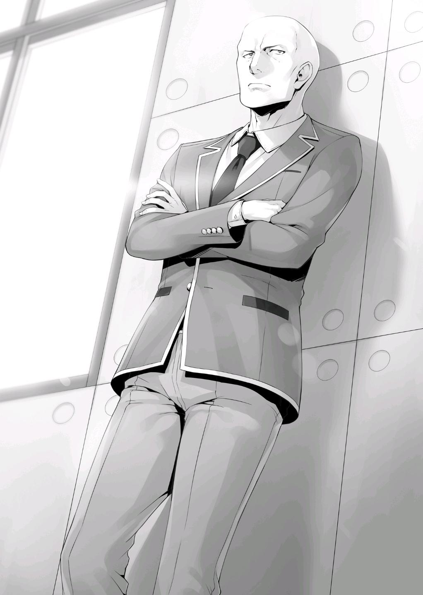
En lugar de mirar algo, era más como si no estuviera mirando nada en absoluto.
—Dicho esto, tenías razón en una cosa.
—¿...Una cosa?
A pesar de que Keisei ya se había rendido, sus oídos se elevaron ante las palabras de Katsuragi.
—Albergo un inmenso e inquebrantable odio hacia Sakayanagi. Para mí, esa es una razón más que suficiente para hacer algo, incluso si no tienes nada que darme a cambio.
Con los brazos cruzados ante él, Katsuragi fijó una vez más su mirada en Keisei.
—Como ya habrán adivinado, Sakayanagi no le ha dicho a nadie qué eventos planea elegir.
Como era de esperar, Sakayanagi parecía estar guardando sus planes para sí misma.
—Y tampoco estoy feliz por ello. En un examen como este, donde toda la clase necesita cooperar como una unidad, no es así como debería estar haciendo las cosas. Típicamente, se esperaría que compartiera información con sus compañeros y adoptara una estrategia que asegurara nuestra victoria.
Al no compartir qué eventos elegirás, la mayor ventaja sería que tus elecciones no se filtrarían a la clase contraria.
Sin embargo, al mismo tiempo la calidad de tu entrenamiento para los eventos disminuiría. Si tratas de prepararte para los diez eventos, es natural que tu eficiencia general disminuya.
—Si te parece bien, puedo decirte lo que creo que acabará eligiendo.
—¿¡De verdad!?
Justo cuando Keisei estaba a punto de renunciar por completo a persuadir a Katsuragi, inesperadamente se encontró con un golpe de suerte.
El resentimiento de Katsuragi por Sakayanagi era muy profundo.
—Mientras puedas prometerme que todo lo que diga quedará entre nosotros...
—Por supuesto. Incluso voy a mencionar los veinte millones de puntos con Horikita y el resto de mi clase más tarde.
Keisei asintió con la cabeza, bajo la impresión de que logró llegar a un acuerdo con Katsuragi.
—Eso no será necesario. Aunque la información que te dé resulte útil, probablemente no valga veinte millones de puntos.
—Entonces, ¿qué quieres a cambio?
—Nada. Sólo te pido que derrotes a Sakayanagi.
Con eso, Katsuragi comenzó a hablar.
—De los diez eventos, los tres que estoy más seguro que elegirá son ajedrez, el examen de inglés y el examen de matemáticas. Después de esos serían probablemente el Examen de Literatura Moderna y el de Aritmética Mental Rápida. Por el contrario, los eventos que requieren un gran número de participantes como el dodgeball y el salto de cuerda larga pueden ser considerados como falsos. Nuestra clase no ha practicado para ellos, por lo que puedo decir.
No podríamos confirmar si las predicciones de Katsuragi eran correctas o no hasta el día del examen.
Pero, si entramos en él pensando que tiene razón sobre los tres primeros, seguramente no terminará por perjudicarnos al final.
—¿Estás realmente de acuerdo con esto? ¿Con no recibir nada a cambio?
—Como dije antes. Aunque no tengas nada que darme, tengo razones más que suficientes para actuar.
A través de un giro inesperado de los acontecimientos, Keisei consiguió información que no creía que pudiera conseguir.
Lo más probable es que empezara a sentirse abrumado por la alegría.
—¡Lo hicimos Kiyotaka! ¡Ahora por fin tenemos una oportunidad de ganar esto!
Keisei tomó con entusiasmo una pose triunfal.
—Una cosa más. Dijiste que querías que fallara en mis competencias,
¿verdad?
—¿Eh? Ah, no. No tienes que...
—Hah... ¿Viniste hasta aquí para negociar, y aún así estás satisfecho con sólo obtener algo de información?
Katsuragi soltó una leve risita, parece que encontró divertida la reacción de pánico de Keisei.
—No es así, es sólo...
—No pienses que puedes ganar contra Sakayanagi sólo porque te he dado un poco de información. Sería prudente que pensaras que apenas serás capaz de luchar si pierdo mis competencias. Sin embargo, el único evento en el que podría ayudarlos es en Aritmética Mental Rápida, o, si de alguna manera logra ser elegido, en Salto de Cuerda Larga.
Después de escuchar a Katsuragi hablar, decidí hacerle una sola pregunta.
—¿Se te permitirá participar con Sakayanagi siendo tan cautelosa contigo?
Es cierto que si se elige el salto de cuerda como evento, puede que tengas que participar más de una vez. Pero, dado que sólo una o dos personas pueden influir en el resultado del evento de Aritmética Mental Rápida, ¿qué te hace pensar que te elegiría para ello?
—Eso es porque los únicos estudiantes de la clase A que se especializan en Aritmética Mental Rápida somos yo y otro estudiante llamado Tamiya.
Además, Tamiya tampoco es muy hábil en ello. Siendo ese el caso, dejarme fuera del evento sólo dañaría nuestras posibilidades de ganar.
Después de todo, Sakayanagi piensa que ha desafilado mis colmillos al
hacer que expulsen a Yahiko. Para convertirme en uno de sus peones, me hará participar en un evento.
La idea de usar a Katsuragi, una fuerza que la había desafiado, como un mero peón era un tanto atractiva para Sakyanagi.
Después, Katsuragi compartió su plan para ayudarnos. Si lo elegían para la Aritmética Mental Rápida, deliberadamente obtendría una respuesta errónea y, en el caso del Salto de Cuerda Larga, quedaría atrapado en la cuerda al principio del evento.
—Sin embargo, me gustaría evitar al máximo que Sakyanagi se dé cuenta de que estoy arruinando los eventos. Para el Salto de Cuerda Larga, puedo hacer que parezca que me equivoco por accidente, pero para la Aritmética Mental Rápida, no podré cometer errores en las preguntas más fáciles.
Parecería que estuviéramos compitiendo en igualdad de condiciones, pero nuestra clase ganaría por un estrecho margen.
—Aunque, recuerden esto. Incluso si Aritmética Mental Rápida es elegida el día del examen, si Sakayanagi no decide que compita, tendrán que reducir sus pérdidas y abandonar nuestro plan.
De cualquier manera, se nos había proporcionado alguna información sin precedentes, así que no teníamos motivos para estar insatisfechos.
Después de que Katsuragi se fuera, Keisei comenzó a hablar con completa emoción en su voz.
—Vamos a contarle a Horikita sobre esto, tan pronto como sea posible.
—No... No deberíamos decirle todavía que contactamos con Katsuragi.
—¿P-por qué no?
—Esto sólo terminó funcionándonos en retrospectiva. No estará contenta con nosotros si se entera de que hicimos esto sin decírselo.
—Pero, ¿no deberíamos usar la información de alguna manera?
—Encontraré el momento adecuado para decírselo. Me aseguraré de que no nos metamos en problemas.
Keisei parecía un poco preocupado al principio, pero finalmente aceptó.
Seguramente fue porque se sentía culpable por haberse reunido con Katsuragi en secreto.
LAS LÁGRIMAS DE UN HOMBRE
Katsuragi nos bendijo con información crucial, pero eso no significaba que la Clase C tomara la delantera.
Horikita era muy consciente de esto, ya que estaba tratando de aliviar la ansiedad de todos, un paso a la vez.
—Espera un momento, Hirata-kun.
Después de que terminaron las clases, Horikita llamó a Hirata, justo cuando estaba a punto de irse a casa.
Era la primera vez que ella le hablaba desde que el Examen Voto de la Clase terminó.
Hirata simplemente se detuvo en su camino sin mirar hacia atrás para enfrentarla.
—Sé que probablemente no quieras hablar conmigo, pero permíteme confirmar algo. No necesitas practicar para ninguno de los eventos que nuestra clase elija, y tampoco planeo que hagas nada el día del examen.
Sin embargo, eso podría cambiar dependiendo de la situación.
Sakayanagi-san es consciente de tu condición, así que es posible que organice varios eventos que requieran un gran número de personas.
No importa cuánto la clase C trate de acomodar a Hirata, es posible que todos los estudiantes tengan que participar.
—Si eso sucede, ¿qué harás? ¿Retrasarnos apáticamente a todos nosotros? ¿O sólo vas a hacer lo mínimo que se requiere de ti? ¿Puedes al menos responderme a eso?
Sin embargo, Hirata no respondió. Un pesado silencio llenó el aula; un silencio que sólo se rompió por el sonido de los pasos de Hirata al alejarse.
—¿Así que ni siquiera me dará una respuesta?
Harta de Hirata, Horikita simplemente desvió su mirada como si se hubiera rendido.
—... Hey, tal vez ... Tal vez no ganemos después de todo ... Con Hirata-kun actuando así y todo.
Pude escuchar ansiosos susurros que venían de algunas de las chicas.
Y los chicos estaban igualmente preocupados. Después de todo, el hombre que había liderado la clase ya no existía.
Una y otra vez, su ausencia era una carga amenazadora para toda la clase.
Horikita me habló.
—Me dijiste que arreglar su problema era un esfuerzo colectivo. Pero al final, él sigue sin cambiar en absoluto.
—Me pregunto sobre eso.
—¿Qué...?
Horikita me miró con una expresión confusa, pero mi atención se centró en algo totalmente distinto.
—¡Hirata-kun! ¡Espera!
En ese momento, no sabía cuántas veces había escuchado a Mii-chan gritar así.
Agarró rápidamente su mochila y lo siguió afuera del salón de clases.
—Mii-chan todavía no se rinde.
—Por qué no lo ha hecho, está completamente fuera de mi entendimiento.
—Concéntrate en lo que necesitas hacer, Horikita. Unir a la clase C y mejorar nuestras posibilidades de ganar.
Horikita es en estos momentos la única persona de la clase capaz de hacer eso.
Yo mismo dejé la clase, siguiendo a Mii-chan.
Los encontré a los dos parados cara a cara en el camino a los dormitorios. Sin embargo, la escena de ellos juntos daba una impresión diferente a la de una confesión agridulce.
Esto fue más bien un ataque. Ella estaba a la ofensiva para que Hirata se recuperara.
—Por favor, Hirata-kun. Todo el mundo necesita tu ayuda... así que...
—Mii-chan, sólo detente. ¿No puedes dejarme en paz ya...?
Hirata la interrumpió con un gruñido molesto, casi como si se preguntara cuántas veces tendría que decírselo para que ella lo entendiera.
Sin duda, estas agudas palabras suyas habían llegado como un cuchillo que cortaba en lo profundo de su corazón.
Sin embargo, la determinación de sus ojos no flaqueó ni un poco.
No importaba cuántas veces la alejara, Mii-chan no se rendiría.
—No te dejaré solo... ¡No cuando estás así Hirata-kun, no puedo!
—Entonces, ¿qué hará falta para que te rindas? Dímelo.
—Eso, uhm, si vuelves a la forma en que solías ser...
—¿Volver? Imposible.
Una vez más, la fría respuesta de Hirata cortó despiadadamente a Mii-chan.
—¡No, no lo es! Yo... ¡tengo fe en que todavía puedes volver a ser como eras antes!
—Y ya te he dicho que es imposible. Esta fe tuya está equivocada.
—¡Incluso así, sigo creyendo en ti!
Hirata apretó el puño. Daba la impresión de que, dependiendo de la situación, podría ponerse violento.
—Entonces, trae de vuelta a Yamauchi-kun.
—¿Eh...?
—Así es como puedes hacer que las cosas vuelvan a ser como antes.
Ahora que Yamauchi había sido expulsado, nunca volvería a la clase C.
Y, de la misma manera, Hirata tampoco volvería a ser como era antes.
Esta era la realidad que Hirata buscaba transmitir a Mii-chan.
—Eso es...
—Espero que recuerdes esto antes de intentar hablar conmigo de nuevo.
Hirata le dio la espalda y comenzó a alejarse, pero Mii-chan no pudo evitar acercarse a él cuando se fue.
Ella se agarró de su brazo derecho, desesperada por evitar que se fuera.
Después de todo, si lo dejaba retirarse a su dormitorio, no podría hacer nada más para convencerlo hoy.
—Suéltame.
—¡No lo haré!
A pesar del rechazo de Hirata, Mii-chan continuó manteniendo su posición.
Ella creía que, mientras no se rindiera, sus sentimientos llegarían a él de alguna manera.
Mantuve mi distancia de los dos, viendo la situación de cerca.
No quería interponerme en el camino de Mii-chan acercándome demasiado a ellos.
Sin embargo, Hirata suspiró abiertamente.
Y entonces, levantó su brazo en el aire y lo bajó con fuerza para liberarse de su agarre.
—¡Kya!
Para Hirata, fue una forma tosca y poco característica de manejar la situación.
El fuerte y repentino movimiento, causó que el Mii-chan se derrumbara en el acto.
—...Deja de molestarme ya. Si no lo haces, yo... yo...
Mii-chan miró a Hirata desde el suelo, por debajo de él.
La ira contenida en la mirada de Hirata hirió los sentimientos de Mii-chan una y otra vez.
—No tengo nada más que perder. Si continúas siguiéndome así...
Nada de lo que Hirata había dicho hasta ahora podía compararse con el golpe aplastante que esto dejaría en Mii-chan.
Sin embargo, justo entonces, un hombre solitario pasó por delante de mí.
Un hombre cuyo pelo rubio y suelto revoloteaba con el viento, salpicado con el aroma de colonia.
—Vaya, vaya... Parece que hoy también estás perdiendo el tiempo, ¿eh?
Esa es una mirada bastante fea en tu cara.
Koenji provocó a Hirata con palabras ligeras y frívolas.
Como miembro del Club de Regreso a Casa, la aparición de Koenji aquí tampoco fue tan sorprendente.
—Oh, no me hagas caso. Continúa con lo que estabas haciendo hace un segundo. Sólo estoy aquí para mirar.
Hirata no fue de ninguna manera tan estúpido como para continuar después de que le dijeran algo así.
En cambio, comenzó a dirigir su hostilidad hacia el hombre que lo había interrumpido.
—Tú... ¿hay algo que quieras de mí...?
—¿Algo que quiera? No "quiero" nada. Después de todo, ya tengo todo.
Con eso, Koenji comenzó a pasar de largo a Hirata y Mii-chan, sin embargo...
—Aunque, si hay algo que puedas hacer por mí...
Para Koenji, esto era sólo algo que había encontrado en su camino a casa este día. Eso es todo lo que era. Nada más. Nada menos. Los sentimientos de Hirata eran completamente intrascendentes para él.
—Eres una monstruosidad, así que ¿podrías intentar asegurarte de que no te vea? Si esta ya no es tu escuela ideal, ¿por qué no simplemente sales por la puerta?
Era su estilo decir algo así. Sugería que Hirata simplemente dejara la escuela en lugar de seguir dando tumbos así.
—...Cállate. Ni siquiera entiendes mi situación...
—No lo sé y no me importa. Sin embargo, puedo hacer una suposición. No tomarás la decisión de irte simplemente porque le causará problemas a tus compañeros. ¿No es así? Qué tontería.
—¡P-por favor, detente, Koenji-kun! ¡Hirata-kun no hizo nada malo!
Poniéndose de pie, Mii-chan habló, ansiosa por detener la implacable burla de Koenji a Hirata.
—Oops. Parece que no estás contenta con lo que he dicho. Me disculpo.
A pesar de la sonrisa en su cara, Koenji todavía trataba a Mii-chan con cierto respeto.
—Sin embargo, cuanto antes te olvides de Hirata-boy, mejor. Él está más que roto.
Después de haber sido empujado al límite por un tiempo, Hirata se fijó en Koenji y comenzó a acortar la distancia con él.
—¡No, Hirata-kun!
Mii-chan sintió el cambio obvio en la energía de Hirata y se interpuso entre los dos para detenerlo, sólo para ser apartada por Hirata con aún más fuerza que antes. Entonces, sin siquiera echar un vistazo a Mii-chan, Hirata se acercó a Koenji con un brazo extendido. Intentó agarrar a Koenji por el cuello de su camisa, pero Koenji rápidamente lo agarró por la muñeca con su mano izquierda y suprimió sus movimientos.
—¡Kuh!
—No tengo piedad de los que se me acercan, ¿de acuerdo? No quiero que mi hermosa cara tenga cicatrices.
Una expresión mezclada de dolor y rabia tomó forma en el rostro de Hirata, quizás debido a la fuerza del agarre de Koenji en su muñeca.
—¡Eres, eres tan irritante Koenji...!
—Eres libre de hacer lo que quieras, pero no veo razón para recibir órdenes de alguien que hizo llorar a una chica.
Koenji soltó la muñeca de Hirata y miró a Mii-chan, que estaba de nuevo en el suelo.
—Tú eres el que la derribó, ¿no deberías ser tú el que la ayude a levantarse?
—...Ese ya no es mi problema.
—No es tu problema, ¿hm? Bueno, ¿no eres bastante despiadado?
Mii-chan apartó su mirada de Hirata, incapaz ya de mirarlo directamente.
—Está bien entonces. Eres libre de decidir lo que quieres, Hirata boy.
—Eh, ¿qué, qué?
Koenji galantemente levantó a Mii-chan del suelo.
—Ya que tú no lo harás, supongo que haré los honores yo mismo.
Este era un hombre que, por naturaleza, era difícil de entender, pero esta repentina e inesperada acción dejó tanto a Mii-chan como a Hirata sin palabras.
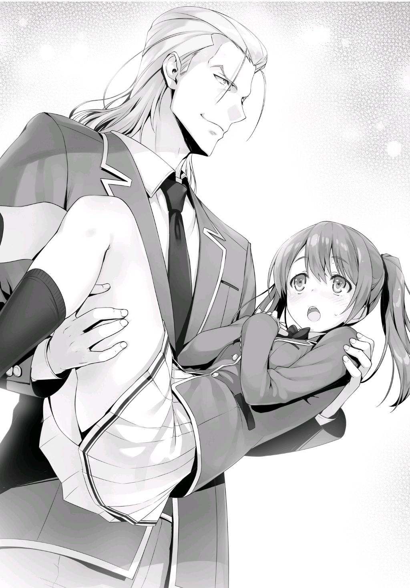
—Rompieron tu corazón, y además, incluso te hirieron. ¿Qué tal si ayudo a curarte?
—¿Q-Q-Q-Qué? Yo, uhm, ¿¡Yo!? ¡¡No estoy lastimada en ningún lado!!
—Bueno, no hay necesidad de preocuparse. A pesar de mi apariencia, soy extremadamente gentil.
Esto es sólo una suposición, pero cuando Koenji dijo que ayudaría a curarla, seguramente se refería a algo más de naturaleza espiritual en lugar de una lesión física.
Algo como su corazón roto. Creo... Quizá.
Koenji empezó a distanciarse de Hirata, como si estuviera intentando separar a Mii-chan de él.
—Uhm, uh, ¡por favor bájame!
—¡Ja, ja, ja! Eso es imposible. Después de todo, ya eres mía.
—¿¡Eeeeeh!?
Así, Hirata miró fijamente a la espalda de Koenji.
Koenji se detuvo en su camino, casi como si hubiera sentido la dura mirada de Hirata.
—¿Todavía tienes quejas para mí?
Con toda honestidad, desearía que Koenji hubiera ignorado a Hirata en este momento.
—Nunca vas a dejar de atormentarme, ¿eh? ¿Hasta el final?
—No. Tú eres el que atormenta a la gente que te rodea. Al menos, yo no ignoraría a una chica que me muestra amabilidad.
Koenji comenzó a alejarse una vez más, con un flagrante desprecio por las protestas de los Mii-chan.
Cuando Hirata se dio cuenta de que Koenji se dirigía hacia el dormitorio, se puso en marcha en otra dirección. Era como si no quisiera estar más cerca de ellos dos.
Por un momento, no estaba seguro de a quién quería seguir, pero finalmente decidí seguir primero a Koenji.
Además, la mochila de Mii-chan se había quedado en el suelo, así que la recogí y salí tras ellos.
Una vez que se acercaron a la entrada del dormitorio, Koenji tiernamente puso a Mii-chan de nuevo en el suelo.
—K-Koenji-kun, ¿por qué...?
—Fufufu. ¿Por qué, en efecto, hmm?
En lugar de responder a la pregunta de Mii-chan, Koenji mostró una sonrisa.
—De todas formas, deberías dejar de perseguir a Hirata boy hoy.
Le entregué a Mii-chan su mochila.
—Gracias, Ayanokouji-kun... Espera, ¿de dónde vienes?
Le habría dicho que no me notó porque soy bueno borrando mi presencia, pero elegí no decir nada.
—Estaré aquí vigilándote hasta que subas al ascensor, ¿bien?
—...B-bien.
Incluso si ella fuera a buscar a Hirata después de esto, no sabe a dónde fue.
Mii-chan se rindió por ahora y subió al ascensor para escapar de Koenji.
Me quedé allí y vi como Koenji tomaba asiento en el sofá del vestíbulo.
—Ahora... ¿Qué puedo hacer por ti, Ayanokouji-boy?
—¿Por qué empezaste a hablar con Hirata allá atrás? ¿Estabas echando combustible al fuego? ¿O tomaste medidas pensando que ayudaría a la clase?
—Parece que todavía no me entiendes, ¿eh? Tsk, tsk, tsk.
Mientras hablaba, levantó la mano y me apuntó levemente con el dedo.
—Nunca haría algo por el bien de la clase o algo así. Después de todo, sólo hago lo que quiero hacer. Incluso si mis acciones tienen un impacto negativo o positivo en la clase... Bueno, eso no sería más que un mero subproducto.
Así que es sólo un subproducto, ¿no? Como regla general, Koenji sólo hace lo que quiere hacer. La única excepción a esta regla es si corre el riesgo de ser expulsado si la clase pierde un examen.
—Su existencia es como una mosca, es decir, absolutamente irritante.
Esta parecía ser la razón por la que había hablado inesperadamente con Hirata.
—Eres libre de hacer lo que quieras, pero ¿qué harás si otro examen similar a El Voto de la Clase ocurre? Para ser honesto, tal como está ahora, nadie estaría en más peligro que tú.
—Fufufu. Con un potencial como el mío, no importa.
Después de comprobar la pantalla del ascensor para asegurarse de que Mii-chan había bajado, Koenji se puso de pie.
—Así es. Si no me equivoco, fuiste elegido como el comandante del examen, ¿verdad?
—Sí.
—No estoy muy motivado, así que evita que tenga que participar, si puedes.
—Lo siento, pero la que decide eso es Horikita. Yo no tengo voz ni voto en el asunto.
—Lo pones al revés. Como comandante, tienes el derecho de tomar esa decisión, no ella.
Por supuesto que tiene razón en lo que respecta a las reglas, pero... no parecía que fuera capaz de convencer a Koenji.
—De todas formas, confío en que tomes la decisión correcta.
Dejándome con eso, subió al ascensor y volvió a su habitación.
PARTE 1
Decidí dejar el dormitorio y buscar a Hirata.
Seguramente no volvió al edificio de la escuela, así que lo más probable es que estuviera en el centro comercial Keyaki o al menos en la zona cercana.
Asumiendo que no quería encontrarse con nadie, había una alta probabilidad de que estuviera afuera en algún lugar.
Finalmente, decidí revisar toda el área.
Después de una hora de búsqueda, me encontré con su distintiva figura solitaria sentada en un banco exterior.
—Hirata.
Me acerqué al banco y, una vez que estuvo a un brazo de mí, lo llamé por su nombre.
—...Ayanokouji-kun.
Su respuesta salió lentamente mientras levantaba la cabeza para mirarme, con los ojos todavía abatidos.
Hacía mucho tiempo que no le veía bien la cara de esta manera.
No parecía estar durmiendo lo suficiente, ya que tenía ojeras que nunca antes le había visto.
—¿Puedes darme algo de tiempo?
Al escuchar mi petición, los ojos de Hirata se abrieron un poco más.
—Estoy harto de todo esto. De que todos vengan a buscarme una y otra vez. Pensé que me entendías, Ayanokouji-kun. Pensé que sabrías dejarme en paz. Estoy decepcionado.
—Lo siento. Si no te gusta, ¿por qué no me apartas como hiciste con Mii-chan y huyes?
A pesar de correr el riesgo y provocarle, Hirata no se levantó del banco.
—Darte un poco de tiempo, ¿eh? No importa. No tengo ningún lugar donde esconderme en esta escuela. Estoy tan cansado hoy que ni siquiera tengo energía para huir. Pero... tampoco creo que pueda cumplir con tus expectativas.
En este corto período de tiempo, muchos otros estudiantes deben haber tratado de llegar a él.
Independientemente de si estaban expresando su preocupación, o dándole ánimos, debe haber sido insoportable para él.
Aunque no sabía exactamente "quién" le había tendido la mano, podía imaginar
"qué" le dijeron.
Estaba seguro de que todos habían intentado consolarlo gentilmente y curar su corazón roto.
Allí, en un banco en las afueras del campus, los dos nos sentamos.
—Así que... tenías algo que decir, ¿verdad?
Ya sabía cómo Hirata iba a manejar esta conversación.
Iba a sentarse y escuchar, dejando que mis palabras entraran por un oído y salieran por el otro.
—Quiero que me cuentes tu historia.
—¿Eh?
Hirata respondió dócilmente. Seguramente esperaba que le ofreciera palabras de simpatía.
—Cómo eras de niño, qué tipo de pensamientos tenías. Me gustaría oírlo.
—...¿Por qué?
—Quién sabe. Supongo que, por alguna razón, sólo quiero saberlo. Me está costando mucho trabajo darte una razón para ello.
Hirata suspiró profundamente antes de sacudir lentamente la cabeza.
—No tengo la energía para recordar mi pasado ahora mismo. No hay nada de lo que hablar.
—¿No tienes la energía? ¿Por qué?
—¿Por qué...? Eso es...
Se giró y me miró, como para preguntarme por qué no sabía ya la respuesta a eso.
—¿Por qué?
Repetí la pregunta, ignorando la mirada que me dio.
—...Es porque Yamauchi-kun fue expulsado.
Estaba siendo forzado a decir cosas que no quería decir.
Hirata habló como si se sintiera muy ofendido, ya que era muy consciente de mis intenciones.
—Me estás haciendo decir cosas horribles.
—Sólo tenía curiosidad. Me disculpo si te he ofendido.
—...Está bien.
Hirata suspiró una vez más, sin motivación para continuar la conversación.
Se sentó con la espalda encorvada, sacudiendo la cabeza lánguidamente de un lado a otro.
Suplicando que lo dejara en paz. Suplicándome que dejara de preocuparme.
—¿Qué tiene que ver la expulsión de Yamauchi con el hecho de no hablar de tu pasado?
Confrontado con mi obstinada petición de una respuesta, Hirata mostró una expresión de estupor por segunda vez.
—Mi pasado no importa ahora mismo, ¿verdad?
—No necesariamente.
Continué inmediatamente, negándole a Hirata la oportunidad de terminar la conversación.
—Que expulsen a uno de tus compañeros de clase es sin duda desagradable. Casi todo el mundo está de acuerdo con eso. Pero, no podemos darnos el lujo de lamentarlo para siempre. El examen de selección de eventos ya está muy cerca. No sólo Horikita y Kushida, sino también Ike y Sudou están tratando de esforzarse y luchar. ¿Pero qué hay de ti, Hirata? Estás tan obsesionado con la expulsión de Yamauchi, e incluso si tratas de ayudar...
Dejé de hablar a propósito por un momento.
Y luego cambié el tema para mostrarle que ya no quería hablar de lo que había pasado.
—Lo que quiero saber es, ¿qué pasó en tu pasado que te infundió este sentido de valores?
—¿Qué sentido tiene preguntar eso? ¿Realmente crees que te lo voy a decir?
—Me lo dirás. Porque tal como estás ahora, quieres desesperadamente que otras personas lo conozcan.
En realidad, creo que realmente quiere sacarse todo de encima. Terminó así porque no pudo encontrar una manera de hacerlo.
Esta vez, le hablé con los ojos.
Lo miré con fuerza, casi como si lo amenazara para que hablara.
Al ver la mirada en mis ojos, una sensación de miedo brotó en su corazón.
—Finalmente entiendo la razón, la verdadera razón, por la que Karuizawa-san decidió revelarte todo, Ayanokouji-kun. Ella vio tus ojos... no, tú se los mostraste. Esos ojos, y esa profunda y espeluznante oscuridad diseminada en su interior...
Lentamente me comí la oscuridad que había dentro de Hirata.
Este hombre no estaba simplemente esperando a morir. Día tras día, había estado rezando para que alguien viniera a salvarlo.
Todo lo que podía hacer era alcanzar la tela de la araña negra que pendía ante él para poder arrastrarse desde las profundidades del infierno.
—Ya te lo he dicho una vez, ¿no es así...? ¿Acerca de mi amigo con el que era muy cercano desde la infancia? ¿El que empezó a ser acosado una vez que entramos en la secundaria?
—Sí. Se llama Sugimura, ¿verdad?
—Pensar que incluso recordarías su nombre...
Fue precisamente porque conocía esta historia que pude predecir el estado mental de Hirata.
En ese entonces, él quiso ayudar a este amigo suyo, pero temió que también terminara siendo el blanco de los matones.
Como resultado, simplemente se limitó a ver lo que pasaba desde afuera.
Y entonces-
—Mi amigo... intentó suicidarse saltando de un edificio.
Quizá empezaba a recordar lo que había pasado en aquel entonces.
Poco a poco, empezó a abrirse al respecto.
—Apenas pudo aferrarse a su vida, pero... ha estado en coma desde entonces...
Hirata apretó fuertemente sus manos.
—Mis decisiones hicieron que intentara quitarse la vida. El peso de mis pecados nunca desaparecerá.
—Eso no es del todo culpa tuya. De hecho, la culpa recae principalmente en los matones.
—Claro, pero creo que ser un espectador me hace igualmente culpable.
Hirata dijo algo similar cuando estábamos en el crucero. Esta es la razón por la que siempre se esforzaba por salvar a los que le rodeaban.
De hecho, cada vez que la clase tenía problemas, Hirata siempre era el primero en intervenir.
Es el tipo de hombre que no escatima esfuerzos para buscar una solución.
Por ejemplo, cuando Sudou se peleó con los de la clase D, o cuando él y Kei fingieron ser pareja.
Sin embargo, todavía hay algunas cosas que no se han explicado todavía.
—Entiendo que todavía tienes dudas.
Sin voltearse para mirarme, Hirata continuó.
—Cuando mi amigo intentó suicidarse. En realidad hay más en la historia...
No había mencionado esto durante el crucero.
—Cuando intentó suicidarse saltando de un edificio, pensé que todo el lío había terminado. Que, después de hacer un sacrificio tan grande, no habría más intimidación en nuestra escuela. Pero fui ingenuo. Desde ese día, vi por mí mismo la insondable oscuridad de la naturaleza humana.
Su cuerpo tembló, y pude ver algo parecido a un impulso asesino en sus ojos.
—Los matones eligieron un nuevo objetivo, y esta vez fue uno de mis compañeros de clase.
Mientras respiraba profundamente para suprimir sus emociones, Hirata comenzó a hablar consigo mismo en un tono silencioso.
—No podía creerlo. Algo tan horrible literalmente acababa de suceder, y sin embargo la intimidación ya había comenzado de nuevo. Uno de mis compañeros, que no había sido más que un inocente espectador, comenzó a sufrir el mismo trato que mi amigo. Y lo que es más, algunos de nuestros compañeros que antes no habían estado involucrados en el acoso comenzaron a unirse a él.
El alcance de la intimidación se había expandido indefinidamente.
—Si la persona en el fondo del sistema de castas se ha ido, es natural que alguien tenga que tomar su lugar. En cierto modo, es parte del orden natural de las cosas.
—Sabía que no podía permitir que la historia se repitiera. Sabía que tenía que detenerla.
—Entonces... ¿actuaste?
Hirata asintió con la cabeza varias veces.
—Lo hice de cierta manera para evitar repetir los mismos errores —Hirata levantó lentamente su cabeza y miró a la distancia delante de él—. Bueno, para decirlo simplemente, traté de controlar la clase a través del miedo.
—¿Hiciste eso?
—Sí. No soy particularmente bueno en las peleas como Sudou-kun y Ryuuen-kun. Sin embargo, no hay mucha gente que pueda golpear seriamente a alguien. Incluso si fuera lo suficientemente serio como para lanzar un puñetazo, nadie estaría dispuesto a devolverme el golpe. Yo solo me paré en la cima mientras el resto de la clase se sentó en el fondo. Al hacerlo, buscaba deshacerme de la intimidación. Cada vez que las cosas
se salían de control, yo intervenía. Le di a ambos lados un castigo igual, igual cantidad de dolor. Mis acciones no eran diferentes a la intimidación.
Pero, hubo al menos un breve momento de paz.
Hirata seguramente sabía muy bien que sus acciones no eran de ninguna manera justicia. Que lo que hacía estaba mal.
A pesar de ello, no quería reconocer un mundo en el que la gente a su alrededor sufría abusos.
—Basándome en lo que pasó... me encuentro preguntándome si terminé arruinando ese año para todos. Ellos simplemente se las arreglaron para pasar cada día como robots sin vida que ya no sonreían. En ese momento, se hablaba de que el pueblo donde vivía... ...era tratado como un escándalo.
—¿Cómo terminó la escuela lidiando con ello?
—Su respuesta fue bastante inaudita. Disolvieron por la fuerza todas las clases durante un tiempo, y luego redistribuyeron a todos, incluyéndome a mí. También nos pusieron bajo estricta observación hasta el día en que nos graduamos.
Con un escándalo tan famoso, es natural que termine recibiendo mucha atención.
En cuyo caso, no había manera de que esta escuela no se hubiera enterado,
¿verdad?
No, puede que hayan elegido inscribir a Hirata aquí precisamente porque sabían del escándalo.
De cualquier manera, finalmente pude ver la razón por la que Hirata había sido colocado en la clase D.
—No puedes perdonarte por dejar que Yamauchi se convirtiera en un objetivo, ¿verdad?
—Sí... En ese entonces, pensé que mientras no me diera cuenta, podría fingir que no lo sabía. Quería mantenerme callado hasta el día de la votación.
En última instancia, las acciones de Horikita en ese entonces llevaron a que lo marcaran como innecesario.
—Sólo soy inútil. En primer lugar, nunca debí tratar de mantener a la clase unida. A pesar de hacer todo lo que pude, todavía no logré proteger a Yamauchi-kun...
Probablemente
ya
lo
sabías,
Ayanokouji-kun.
Simplemente no puedo hacerlo más. Con el fin de proteger a alguien, incluso he pensado en usar tácticas intimidatorias de nuevo. Entiendo que debería saberlo mejor. Que sería un error, y sin embargo...
La voz de Hirata temblaba.
Su corazón estaba al borde del colapso.
Él sentía que toda la clase debía compartir la carga, tanto en los buenos como en los malos momentos.
No podía soportar la idea de que alguien sufriera. De que alguien desapareciera.
Sí, probablemente siempre se había cuestionado a sí mismo cada vez que algo sucedía. Y quizás siempre lo haga.
No estaba claro si había confiado en Mii-chan y en los otros estudiantes y si lo había hecho, hasta qué punto.
Sin embargo, podía imaginar fácilmente qué tipo de cosas terminaban diciéndole.
『 No hay nada que pudieras haber hecho. 』
『 No es tu culpa, Hirata-kun.』
『 Yamauchi sólo se puede culpar a sí mismo por traicionar a la clase. 』
No importaba quién fuera, terminaban diciendo que Hirata estaba en lo correcto y alguien más estaba en lo incorrecto.
Eso simplemente no iba a cambiar.
Y debido a esto, es poco probable que el problema se resolviera.
No tenía sentido decirle a Hirata que culpara a la misma persona que se había propuesto proteger.
En cambio, eso sólo terminaría haciendo que se replegara aún más en su caparazón.
—Hay algo que quiero dejarte claro. No es culpa de Horikita que Yamauchi haya sido expulsado de la escuela, y, por supuesto, tampoco es mi culpa.
Lo sabes, ¿verdad?
—...Sí. Era inevitable. No había nada que pudiéramos hacer al respecto. ...y tampoco te culpo a ti.
Añadió tranquilamente en esa última parte.
Para Hirata, es probable que sonara como si estuviera enfatizando que no fue mi culpa.
Habría sonado como si le preguntara si me guardaba algún tipo de rencor.
—¿Quién crees que es el responsable de la salida de Yamauchi de la Clase C? ¿De esta escuela?
—Creo... que no tiene a nadie a quien culpar sino a sí mismo.
Esta era la conclusión a la que Hirata había llegado, aunque no quería admitirlo.
Yamauchi había sufrido las consecuencias de sus propias acciones. La expulsión era la consecuencia natural de su falta de habilidad y su estilo de vida perezoso.
—Eso no es verdad —Lo negué. Pateé la ingenua idea de Hirata directo a la banqueta—. Es tu culpa que Yamauchi haya sido expulsado, Hirata.
—¡…!
Levantó la cabeza y me miró.
La expresión de su cara me decía que no podía entender lo que yo había dicho.
—Si realmente querías salvar a Yamauchi, deberías haber hecho todo lo que estuviera en tu mano para hacerlo.
—P-pero... ¡Intenté lo mejor que pude! ¡No había nada más que pudiera haber hecho!
—La clase B de Ichinose no perdió ni una sola persona.
—Eso... Pero eso es porque ella era un caso especial. ¡No teníamos una gran cantidad de puntos privados como ella!
—En cuyo caso, el problema es que no dirigiste la clase de esa manera.
Deberías haber ahorrado puntos durante el año pasado como Ichinose para poder salvar a alguien cuando están a punto de ser expulsados.
Como resultado, Yamauchi no habría sido expulsado, y todavía habría cuarenta personas en nuestra clase.
—Imposible. Perdimos todos nuestros puntos de clase justo después de inscribirnos aquí. Y, aunque no lo hubiéramos hecho, no hay forma de que nuestros compañeros de clase hubieran aceptado entregar sus puntos. Lo sabes, ¿verdad?
—Entre terminar con cero puntos de clase y fallar en liderar la clase, de cualquier manera, sigue siendo tu responsabilidad.
Por mucho que Hirata intentara escapar, el hecho de que fuera su culpa no cambiaría.
—No es razonable. Eso es irrazonable.
—Sí, no es razonable. Pero no se puede evitar. Tú elegiste recorrer ese camino. Deberías haberte quedado para ti esta fantasía de que quieres salvar a todo el mundo. De esa manera, no importa quién termine expulsado de la escuela, la culpa no caería sobre ti. Pero, si sigues proyectando tus sentimientos en la gente que te rodea, tienes que cargar con toda la responsabilidad cuando las cosas no funcionen. Deberías estar determinado por lo menos a eso.
—¡Lo es-
—Tenía una idea equivocada sobre ti. Pensé que eras un estudiante de honor, un hombre de carácter que era muy respetado por muchos de nuestros compañeros. Pero, supongo que no lo eres. Sólo eres un estudiante superficial e incompetente que se jacta de cosas que ni siquiera puede hacer. Ese, Hirata Yousuke, es el tipo de persona que eres.
Este fue un argumento excesivamente extremo seguido hasta su conclusión lógica. No era de ninguna manera una persona incompetente.
Hirata es una persona tan excepcionalmente talentosa que sus capacidades van mucho más allá de lo que se espera de un estudiante de primer año de preparatoria.
No hay nada malo en que diga que quiere proteger a todos, y sólo porque no lo hizo no significa que sea responsable.
Pero aun así, oe culpé.
Forcé la culpa sobre él hasta el amargo final.
Lo presioné mucho, lo acorralé implacablemente hasta que estuvo a punto de quebrarse.
¿Estaba haciendo esto por el bien de Hirata? No.
¿Estaba buscando darle poder para que pudiera proteger mejor a todos? No.
No había manera de que pudiera proteger a todos.
Y, definitivamente habrá aún más expulsiones en algún momento más adelante.
Lo hacía porque, cuando llegara ese momento, Hirata sería necesario para que la clase funcionara sin problemas.
—¿Cuánto tiempo vas a seguir soñando?
Hirata simplemente no había avanzado de cómo eran las cosas en la secundaria.
No había avanzado de hacer sólo lo que se requería de él.
Decidir si continuarías o no tu educación en la preparatoria depende de ti, y decidir si te quedas o no.
—Esta... Esta es tu verdadera naturaleza, ¿no? Tus palabras son tan terribles, despiadadas, frías...
Pude ver que empezaron a brotar lágrimas en el ojo derecho de Hirata.
Y al poco tiempo, se sentó allí llorando delante de mí.
—Eres libre de desear lo que quieras. Pero si realmente quieres ver tus deseos cumplidos, al menos debes luchar por ello hasta el final. Esfuérzate por hacer todo lo que puedas. No hay otra manera. Si terminan siendo expulsados en el camino, no tienes otra opción que aceptarlo. A pesar de ello, todavía tienes que seguir adelante.
—Qué cruel...
—Si te detienes ahora, los estudiantes a tu alrededor se quedarán atrás y desaparecerán uno tras otro. Por eso, si sigues caminando hacia adelante, si mantienes los ojos en tu objetivo, entonces seguramente todavía habrá gente detrás de ti después de que todo termine.
Se necesita mucho coraje para guiar a los demás.
Nunca sabes qué tipo de obstáculos puedes enfrentar, y siempre puedes caer en cualquier momento.
—Pero... Entonces... ¿Cómo desahogo las frustraciones...? ¿Tengo que seguir adelante solo? ¿Guardando todo en lo más profundo de mi ser?
—No, en absoluto. Cuando te sientas preocupado, puedes confiar en tus compañeros de clase. Horikita, Kushida, Sudou e Ike, Mii-chan y Shinohara, no importa quién. Puedes descargar tus frustraciones con quien sea que confíes. Estamos todos juntos en esto.
No existe una regla que diga que a los líderes no se les permite mostrar debilidad.
La gente que los respalda siempre puede estar ahí para ayudar en caso de que estén a punto de caer.
Nuestros compañeros deberían estar más que dispuestos a escuchar a Hirata desahogar sus frustraciones.
—Yo... yo... me pregunto... si está bien que alguien como yo dirija a todos...
—Está bien. Tal y como estás ahora, está bien que tomes el liderazgo.
Puse mi mano en su hombro.
Con este pequeño gesto, empezaron a brotar más lágrimas.
Para enterrar el pasado.
Para deshacerse de una vez por todas de la enorme e incómoda carga que Hirata había estado llevando.
Él, que había estado atascado y era incapaz de moverse, podía volver a levantarse por sí mismo.
—Gracias... Gracias, Ayanokouji-kun...
Inclinó su cabeza, incontables lágrimas cayendo de su cara.
Los hombres son criaturas problemáticas y difíciles que no pueden llorar delante de los demás muy fácilmente.
Por eso también quería una amistad en la que nadie se viera obligado a ocultar sus lágrimas.
En cuanto a esto, no era necesario decir más palabras.
Todo lo que necesitaba era un amigo a su lado, alguien que le prestara su oído y escuchara sus frustraciones.
Mientras lo hiciera, podría empezar a caminar hacia adelante una vez más.
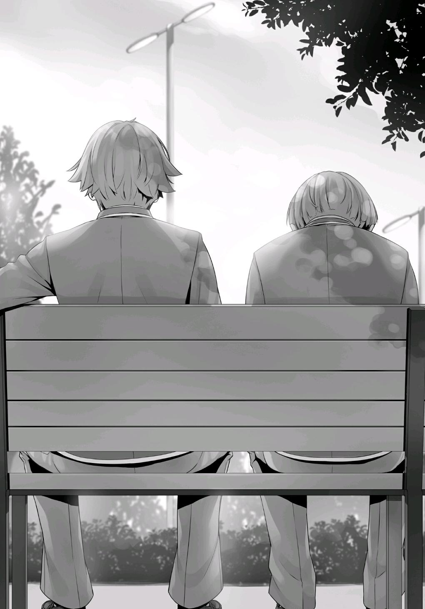
PARTE 2
Con el amanecer, el día siguiente llegó.
El examen final especial del año escolar se acercaba rápidamente.
Para cuando llegué al aula, Hirata no se veía por ninguna parte. La expresión de Mii-chan también estaba un poco ensombrecida.
A pesar de que todo el mundo intentaba no pensar en él, nadie podía dejar de preocuparse.
Y entonces él, la figura indispensable para toda la clase C, apareció en el aula.
En este punto, todos eran reacios a mirarlo.
—Buen día... Hirata-kun.
Pero, claro, Mii-chan se acercó y saludó a Hirata antes que nadie.
Ella contuvo su tristeza, dándolo todo para obligarse a sonreír.
Habiendo notado esto él mismo, Hirata se acercó a ella.
—¡…!
Mii-chan se congeló por un momento, recordando los eventos que habían tenido lugar el día anterior.
Al ver su reacción, Hirata inclinó su cabeza de todo corazón para disculparse.
—Buenos días, Mii-chan. Siento lo que pasó ayer. Te he hecho algo muy malo.
—...¿Eh?
Las palabras de disculpa de Hirata estaban llenas de emoción.
—Y, te ignoré a pesar de que fuiste a la luna y regresaste tratando de consolarme. Lo siento mucho.
—E-eso es, uhm... yo estoy completamente...
No era sólo Mii-chan, toda la clase se había quedado sin palabras por el repentino cambio de comportamiento de Hirata.
—Todos los demás también... ¡Buenos días!
Hirata llegó a la escuela con una sonrisa tan brillante y llena de energía que sus acciones pasadas no se sentían más que como una alucinación.
—¿H-Hirata-kun?
—Estoy bien ahora. De verdad, todo está bien.
Mientras hablaba, tranquilizó a Mii-chan con una amable sonrisa en su rostro.
Luego, se giró y bajó la cabeza a toda la clase.
—Puede que sea demasiado tarde para disculparse en este momento, pero... si está bien para todos, a partir de hoy me gustaría hacer lo que pueda para ayudar a la clase una vez más.
Hirata habló sin levantar la cabeza.
Durante varios segundos, todos, chicos y chicas por igual, intercambiaron miradas entre sí, incapaces de comprender lo que acababa de suceder.
Pero...
—¡¡Hirata-kun!!
Al principio, algunas de las chicas corrieron al lado de Hirata, pero pronto se vio rodeado por la mayoría de sus compañeros de clase.
Ante el tan esperado regreso de Hirata, todos los alumnos de la clase estaban encantados.
—¿Qué pasó?
Horikita se giró y me preguntó. Se había quedado en su asiento, incapaz de entender la escena que se desarrollaba delante de ella.
—Te dije que era un esfuerzo colectivo, ¿no?
—Eso es... cierto, pero... ¿no crees que podría estar forzándose?
—¿Es eso lo que te parece?
—Bueno, supongo que no.
—Diferentes personas necesitan diferentes cantidades de tiempo para superar algo. El día después de una gran pelea, la mayoría de la gente tiende a llevarse bien con los demás como si nada hubiera pasado.
Las relaciones humanas son así.
Después de aceptar una cálida bienvenida del resto de la clase, Hirata se giró y se acercó a su último oponente, Horikita.
—Buenos días, Horikita-san.
Miró fijamente a Horikita con ojos honestos y claros.
—S-sí. Buenos días.
Tal vez Horikita fue sacudida por lo inesperadamente radiante que estaba Hirata en este momento.
—No creo que me haya equivocado durante el juicio de la clase del otro día.
—...Ya veo.
—Pero... tampoco creo que tú te hayas equivocado. O, no, debería decir que lo que hiciste estuvo bien.
Eso era algo que simplemente no podía aceptar en ese momento.
Pero ahora, había llegado a aceptar eso.
—Simplemente no me di cuenta en ese momento.
—¿Te golpeaste la cabeza o algo así? Hoy eres completamente diferente de lo que eras ayer, y tampoco parece que estés fingiendo descaradamente...
A pesar de las sospechas de Horikita, Hirata simplemente dejó mostrar una sonrisa despreocupada.
—Voy a hacer todo lo posible para recuperar la confianza que he perdido.
Me gustaría que me informaras de los detalles del examen especial más tarde.
—Entiendo. Dejaré que te hagas una idea de la situación y que compruebes si estás o no a la altura de la tarea. ¿Te parece bien?
—Sí. Por supuesto.
Hirata extendió su mano como una noción final de reconciliación, a la que Horikita se acercó y aceptó.
Después de eso, Hirata fue una vez más rodeado por sus compañeros, uno tras otro. El aula se había vuelto tan brillante y alegre que era difícil imaginar que se había sumergido en una atmósfera tan oscura y sombría sólo hace unos minutos.
—De todos modos, supongo que esto significa que finalmente estamos listos para enfrentar el examen especial.
—Supongo que sí.
Podría ser justo decir que el regreso de Hirata fue el mejor apoyo que la Clase C
podría haber pedido.
Koenji, por otro lado, fue el único que no pareció afectado por ello.
AYANOUKOJI VS SAKAYANAGI
Después de un largo período de preparación, el día del examen especial final del primer año finalmente llegó.
Según las reglas, los comandantes de las clases perdedoras serían expulsados de la escuela. Sin embargo, esta vez, serían despojados de su punto de protección.
Los dos comandantes a cargo de las clases derrotadas perderían el punto de protección que ganaron durante el examen provisional.
Aunque no habría expulsiones, es importante tener en cuenta que los puntos de clase seguramente variarán drásticamente.
Dependiendo del resultado del examen, existe una buena posibilidad de que las clasificaciones de cada clase se vean afectadas.
—Hoy, quiero que te olvides de todos los apuntes e indicaciones que te he dado.
Mientras esperaba que empezara la clase matutina, Horikita habló desde su asiento a mi lado.
—Escoge los cinco eventos que quieras, y luego elige a quien quieras para participar en ellos.
—Si me hago cargo de esto y estropeo tus planes, ¿no sería el resto de la clase incapaz de adaptarse a ello?
—Nunca le dije a nadie qué eventos elegiría o en qué eventos participarían.
Simplemente dije que tomaría esas decisiones de forma pragmática dependiendo de la situación, así que eso no debería ser un problema.
En otras palabras, ella había preparado el escenario para que yo compitiera sin tener problemas.
—No me culpes si algo sale mal.
—Esta es una competencia de clase. Aunque se permite a los comandantes intervenir, el examen básicamente se reduce a la fuerza de nuestra clase en su conjunto. El oponente al que nos enfrentaremos es la Clase A, liderada por Sakayanagi-san. El oponente más formidable en nuestro año escolar. Aunque pierdas, no es que alguien te vaya a culpar.
Eché a Horikita una mirada de reojo y miré el último mensaje que me envió la noche anterior.
Era un registro de todo lo que la clase C había hecho para prepararse para el examen especial en estas dos últimas semanas.
Había información sobre lo que cada estudiante había compartido en las discusiones de la clase, qué eventos habían intentado y cuánto habían practicado.
—Aprovecharé al máximo tus esfuerzos.
Cuando me levanté de mi asiento, listo para hacer lo que tenía que hacer, Horikita me dijo unas palabras.
—Las probabilidades de que el ajedrez sea elegido son 7 de 10. Una probabilidad del 70% no es exactamente baja.
En los últimos días, Horikita y yo habíamos jugado varias partidas de ajedrez juntos.
—Al final, casi nunca gané contra ti, incluso si me lo pusiste fácil.
Era cierto que el número de veces que me había vencido era escaso. Sin embargo, no había necesidad de que ella llevara la cuenta. En este corto período de tiempo, las habilidades de ajedrez de Horikita habían mejorado considerablemente.
—Nadie es más fuerte que yo, incluso cuando lo hago fácil para ellos.
Recuerda eso.
—Seguro que tienes mucha confianza en ti mismo.
Después de terminar mi conversación con Horikita, me fui a cumplir con mis deberes como comandante.
Los estudiantes restantes estaban esperando en el salón principal, aguardando a recibir instrucciones del salón de usos múltiples.
Después de anunciar un evento, los participantes se cambiarían de ropa e irían al lugar designado. Los detalles más finos del evento no serían compartidos en los monitores, así que los estudiantes del aula principal tendrían que esperar a que los participantes regresaran para saber qué pasó.
PARTE 1
Me dirigí al edificio especial y fui al lugar designado para los comandantes. Allí, Sakayanagi e Ichinose, que habían llegado antes que yo, estaban charlando.
Por lo que parece, no se nos permitía entrar en la sala de usos múltiples todavía.
—Buenos días, Ayanokouji-kun.
—Buenos días, Ayanokouji-kun.
Ambas me saludaron al mismo tiempo, y yo levanté ligeramente la mano en respuesta.
—Parece que no se nos permite entrar todavía.
—Nos dijeron que les avisáramos una vez que llegáramos los cuatro.
Es decir, la escuela buscaba asegurar que el examen se realizara de manera justa.
Si entras en la sala de usos múltiples antes que los otros comandantes, serías capaz de calmarte mentalmente y ajustarte a la atmósfera del campo de pruebas antes que nadie.
Y, como se trataba de un examen particularmente especial, no se exageraba cuando se trataba de asegurar la imparcialidad.
—Parece que ahora sólo estamos esperando a Kaneda.
—Sip.
Eché un vistazo. Aunque todavía no había señales de Kaneda, no había forma de que se arriesgara a llegar tarde.
—En cualquier caso, seguro que tienes suerte, Ichinose-san.
—¿Eh? ¿Suerte?
—Tal y como están ahora, la clase D no es diferente de un bebé. Sus posibilidades de vencer a tu clase son prácticamente inexistentes. Todo lo que tienes que hacer ahora es ver cuántas victorias puedes acumular. Si ganas siete eventos seguidos, la clase B podría incluso cambiar de lugar con la clase A. Es decir, dependiendo de cómo se desempeñe la clase A.
—Oh no, no hay manera de saber lo que va a pasar. Probablemente estarán desesperados, así que definitivamente no podemos bajar la guardia.
Al ver a Ichinose acrecentar su resolución de esta manera, Sakayanagi dejó mostrar una divertida sonrisa. Esto hizo que Ichinose volviera a hablar.
—¿Eh? ¿Dije algo extraño?
—No. Sólo hablaste como si estuvieras en la cima, lista para enfrentar a cualquiera. Como mínimo, entiendo que no ves a la clase D como a tus iguales. Justo lo que esperaba de la que se las arregló para proteger a la Clase B durante todo un año.
Las palabras de Sakayanagi fueron un poco mezquinas. Sin embargo, Ichinose no dejó que le afectara.
—La clase B también vino aquí con una estrategia, lista para ganar. No perderemos fácilmente, especialmente en un examen como este donde la unidad y la cooperación juegan un papel tan importante.
—Ya veo. Eso fue bastante grosero de mi parte. Realmente es como dices, Ichinose-san.
Miré por la ventana cercana mientras escuchaba su conversación.
Con abril a la vuelta de la esquina, el clima hoy era brillante y soleado. No había ni una sola nube en el cielo.
Así, pasaron unos cinco minutos más o menos. Al poco tiempo, empezó la idea de que podría llegar tarde.
Finalmente, escuchamos el débil sonido de pasos que se acercaban desde el otro extremo del pasillo.
—Bueno, no parece que vaya a llegar tarde después de todo. Supongo que tampoco perdió los nervios y se rindió.
Sakayanagi expresó sus pensamientos, divirtiéndose de que Kaneda apareciera en el último momento posible.
Ichinose también parecía estar preparándose ya que el examen estaba finalmente a punto de comenzar.
Cada uno de nosotros se tomó la libertad de imaginar lo que estaba a punto de suceder.
Es decir, nos uniríamos a Kaneda después de que llegara, y los cuatro entraríamos juntos en la sala de usos múltiples.
Sin embargo ─
Una persona inesperada apareció en su lugar.
Al ver quién era, Ichinose mostró una expresión completamente aturdida.
Mientras Sakayanagi estaba tan sorprendida como Ichinose, su expresión cambió rápidamente al entrecerrar los ojos en señal de diversión.
—¿...Ryuuen-kun? ¿Por qué... por qué estás aquí...?
Una clara y distintiva sensación de inquietud recorrió a Ichinose.
No, ni yo ni Sakayanagi lo vimos venir.
—¿Qué te pasa? ¿Qué te tiene temblando?
Ryuuen, el ex líder de la Clase D, deliberadamente llamó la atención sobre los temblores de Ichinose.
—Ya veo... No esperaba que esto sucediera. Parece que me había convencido erróneamente de que los comandantes de este examen especial serían los que recibieran los puntos de protección.
Sakayanagi fue la primera en armar las piezas. De hecho, este hombre, Ryuuen, vino aquí solo. Kaneda no estaba por ningún lado.
—El examen especial ni siquiera puede empezar sin los comandantes. En otras palabras, si sucede que el comandante está ausente, entonces alguien más tendrá que reemplazarlo. ¿No es así?
Una ausencia imprevista en el mismo día del examen era ciertamente algo que podía suceder.
Probablemente había algún tipo de sistema en el que una o dos personas estarían preparadas como sustitutos para el puesto de comandante.
Y, por supuesto, el comandante sustituto sería el que se responsabilizaría si su clase perdiera el examen.
—De todas formas, nunca consideré que podrías aparecer, Ryuuen-kun.
—Bueno, ¿eh? Considerando el tipo de persona que eres, Ichinose, incluso si tuvieras fiebre o te lastimaras, vendrías arrastrándote aquí sobre tus manos y rodillas para evitar que tus compañeros se arriesguen a ser expulsados.
Si pierden el examen, no habría forma de evitar la expulsión del comandante, salvo usar un punto de protección. Tal como Sakayanagi había dicho, la noción preconcebida de que las personas con puntos de protección terminarían convirtiéndose en los comandantes había sido un error muy grave.
Ichinose nerviosamente aclaró su garganta.
Cuando el examen especial fue anunciado por primera vez, Ichinose naturalmente debe haber sido al menos un poco cautelosa sobre quiénes serían los comandantes opuestos. Sin embargo, cuando Kaneda apareció como comandante en el momento en que se decidieron los emparejamientos de clase, seguramente acabó desechando esta posibilidad por completo.
En su cabeza, el proceso de eliminación ocurrió sin que ella se diera cuenta.
Concluyó que el examen especial sería una competición entre los estudiantes que habían conseguido los puntos de protección.
—Seguramente debe haber algún tipo de penalización para que participes como sustituto, ¿verdad?
—Sí, a Kaneda no se le permite participar en ningún evento. No es tan irracional.
Ryuuen decía que esta penalización era algo que ya había tomado en consideración.
—¿Hiciste esto para confundirme? Aunque lo hayas hecho, ¿no es una desventaja para ti que Kaneda-kun no pueda participar?
Aunque no conocía todas las capacidades de Kaneda, lo más probable es que fuera un recurso vital para la clase D.
Esto supuso que habían ideado un ingenioso plan que implicaba renunciar al potencial de Kaneda. Subconscientemente, esto llevaría a uno a empezar a reflexionar sobre el por qué.
¿Cuándo decidieron que Ryuuen se convertiría en el comandante? Si fue desde el principio, ¿significaba que todo esto había sido planeado desde el inicio? Con preguntas como estas corriendo por su mente, seguramente Ichinose estaba terriblemente confundida en este momento.
—Oye, no seas tan cautelosa conmigo, ¿quieres? Sólo soy su sacrificio. Si mi clase pierde, el comandante será expulsado. Es una oportunidad perfecta para que esos chicos de la clase D me echen de aquí. Eso es todo lo que hay detrás, ¿no?
—Entonces, ¿estás diciendo que serás amable conmigo?
—Kuku. Sí, me relajaré, así que relájate y ven a mí.
Ryuuen extendió sus brazos, dándole la bienvenida para que se le acercara, pero no había forma de que Ichinose cayera en la trampa.
—Cuando quieres ganar, eres del tipo que saca todos los trucos del libro.
Así es como se lucha, ¿no?
—Si quiero ganar, entonces seguro.
—Desearía que no lo hicieras. No tienes un punto de protección y estás luchando con la espalda contra la pared. De alguna manera no puedo evitar sentir que esto es un mal presagio para la clase B.
Ichinose es el tipo de persona que prefiere construir confianza y seguridad desde el principio. Debido a eso, su capacidad para lidiar con accidentes repentinos no es de ninguna manera uno de sus puntos fuertes. Aunque esto no sería un gran problema contra un oponente promedio, era una historia totalmente diferente contra alguien como Ryuuen.
Tal vez la conmoción se extendería pronto de Ichinose hacia toda la clase B.
Todos en su clase inevitablemente se darían cuenta de que Ryuuen se convirtió en el comandante.
Y, aunque no lo hicieran, Ishizaki y los demás seguramente lo darían a conocer igualmente.
En cuyo caso, el resto de la clase B no sería capaz de ocultar su angustia, al igual que Ichinose.
Si Ryuuen se hubiera convertido en el comandante a pesar de haber renunciado como líder de la Clase D, la naturaleza impredecible de sus instrucciones sería un motivo de alarma persistente.
—Parece que el enfrentamiento entre la Clase B y la D también va a ser bastante interesante.
Quizás no fue tan divertido para Ichinose como lo fue para Sakayanagi.
Debería haber tomado acciones cuando la clase D acechaba repetidamente a sus compañeros.
Si se hubiera dado cuenta de que Ryuuen había estado al acecho entre bastidores antes, probablemente no le habría sorprendido tanto ahora.
—Bueno, ya que estamos todos aquí, vamos, ¿sí?
Con Sakayanagi a la cabeza, entramos en la sala de usos múltiples. Se había construido una pared que no había estado allí la última vez que estuvimos aquí, dividiendo el interior de la sala en dos mitades distintas. Para ser una pared improvisada y temporal, parecía ser bastante robusta e insonorizada. Los cuatro profesores encargados del primer año nos estaban esperando.
—Los de la clase B y la clase D, por favor, muévanse hacia allí.
Por instrucciones de Mashima-sensei, los dos desaparecieron al otro lado del muro divisorio con Chabashira-sensei siguiéndolos.
Los instructores de la clase A y la clase C eran Sakagami-sensei de la clase D y Hoshinomiya-sensei de la clase B.
Por lo que parece, los profesores no estaban a cargo de supervisar el examen para sus propias clases.
—El examen comenzará en cinco minutos. Tómense este tiempo para prepararse mientras puedan.
Dejándonos con este consejo, Hoshinomiya-sensei llevó a Sakagami-sensei a un lado para tener lo que parecía ser una charla final sobre los preparativos para el examen.
Antes del examen, Sakayanagi y yo tuvimos unos minutos a solas, sólo nosotros dos.
—Finalmente... El día que he estado esperando finalmente ha llegado.
Para ser honesta, no pude dormir anoche, y casi me quedé dormida esta mañana.
—No recuerdo haberte hecho esperar tanto tiempo. Es sólo una coincidencia que me hayas encontrado.
—¿Estás diciendo que si no hubieras venido a esta escuela, no nos habríamos encontrado?
Mientras yo asentía en respuesta, ella se rio, negándolo rápidamente.
—Nuestra reunión en esta escuela fue en realidad una mera coincidencia.
Pero, estaba segura de que me encontraría contigo de nuevo tarde o temprano. Fue el destino, decidido hace mucho tiempo.
—Destino, ¿eh? Estás diciendo cosas bastante abstractas.
—Bueno, después de todo, soy una jovencita.
Sakayanagi sonrió mientras hablaba, acercándose lentamente a mí con su bastón en la mano.
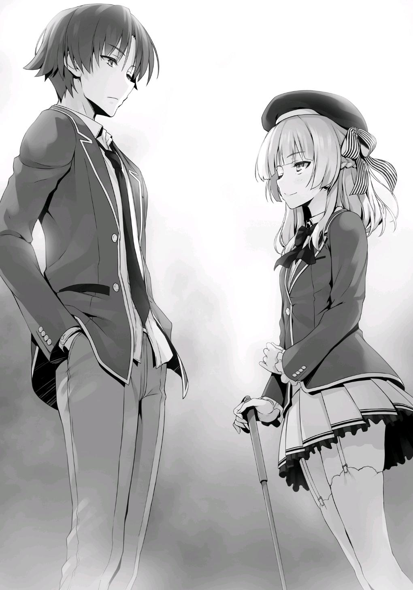
—Si no te hubieras matriculado en esta escuela, lo habría pospuesto por otros tres años más o menos. Confiaba en poder pasar el tiempo sin apresurar las cosas, ocultando mis sentimientos de anticipación en lo más profundo. Pero, eso simplemente ya no funciona. Desde que descubrí que estás a mi alcance, cada día que pasa se siente tan largo. Ha sido muy difícil dominar mis sentimientos; dominar mi ardiente deseo de competir contigo. Eso es exactamente lo mucho que he estado soñando con hoy.
Sakayanagi habló elocuentemente. Su deseo finalmente fue concedido, ¿verdad?
—¿No tienes miedo de despertar de tu sueño?
Una vez que nuestra competencia ocurra, no habrá vuelta atrás.
—Tienes que despertar de los sueños en algún momento.
No parecía importarle. Lo único que le preocupaba era que hoy era el día en que sus sueños se harían realidad.
—Normalmente... te pediría que fueras amable conmigo, pero...
La mirada en sus ojos no era lo que se esperaría de una joven. Tenía una cierta agudeza que se veía en un cazador que iba tras su presa.
—Por favor, enfréntenme con todo lo que tienes.
Si competiera contra ella con poco entusiasmo, Sakayanagi no estaría feliz con eso en lo más mínimo.
Aunque no lo hiciera para hacerla feliz, sería demasiado problemático involucrarme con ella más allá de esto.
Pero, también tenía mis dudas sobre si este examen especial sería suficiente para satisfacerla.
Entonces, como si hubiera leído mi mente, Sakayanagi habló de nuevo.
—Mentiría si te dijera que no me siento en conflicto. Este examen especial es demasiado inadecuado para demostrar plenamente el alcance de nuestro potencial. Aunque ambos somos comandantes, nuestra capacidad de intervención es limitada.
La escuela nunca llevaría a cabo un examen irracional en el que el resultado dependiera únicamente de las acciones de los comandantes.
Sakayanagi decía que, mientras hubiera un resultado, la insuficiencia del examen era trivial.
—Sea como sea, si la capacidad de intervención del comandante no estuviera limitada, nos encontraríamos con un problema diferente. Creo que es importante tener en cuenta tu situación también, Ayanokouji-kun.
No quieres que tus compañeros se enteren de tus verdaderas habilidades,
¿verdad?
De hecho, esta consideración suya fue algo que agradecí bastante. Si el comandante tuviera una gran influencia sobre los resultados de cada evento, seguramente no podría sacarle el máximo provecho.
—Okaaay, el examen comenzará en cualquier momento. Por favor, tomen asiento.
Como la instrucción de Hoshinomiya-sensei llegó a su fin, ambos nos sentamos frente a frente en nuestras computadoras asignadas.
Naturalmente, no podíamos vernos las caras con las pantallas de las computadoras colocadas entre nosotros. En mi pantalla, estaban las fotografías de cada estudiante de la clase C.
Excluyéndome a mí, había 38 fotografías en total. Una vez que se anunciara el primer evento seleccionado, usaríamos estas fotos para asignar a los estudiantes que queríamos que participaran.
A continuación, los diez eventos que la Clase C había elegido se mostraron en la pantalla.
—Me llamo Sakagami, y seré el encargado del examen especial. Sin más demora, comencemos el examen especial final del primer año. Cada uno de ustedes, por favor, seleccionen los cinco eventos que les gustaría que se consideren y presionen 'confirmar' cuando terminen.
Seleccioné los cinco eventos que Horikita tenía en mente y presioné confirmar inmediatamente.
En poco tiempo, Sakayanagi terminó de hacer sus elecciones también, y un total de diez eventos se mostraron en el gran monitor de la sala.
Para los eventos de la Clase C, había elegido Arquería, Baloncesto, Tenis de Mesa, Mecanografía y Tenis. Jugué con la idea de incluir un evento interesante como Piedra, Papel o Tijera, pero al final decidí no hacerlo.
Descarté la idea de usar nuestro evento de inglés ya que se superponía con el evento de prueba de inglés de la clase A. A pesar de que Hirata y Onodera se especializaban en fútbol y natación, decidí no usar esos eventos porque probablemente serían útiles en otro evento más adelante.
Además, mi estrategia fue que la Clase C se centrara principalmente en eventos atléticos en lugar de académicos.
Para los eventos de la Clase A, Sakayanagi eligió Ajedrez, Inglés, Literatura Moderna, Matemáticas y Aritmética Mental Rápida. Había diez eventos en total.
Había elegido los tres eventos que Katsuragi predijo que haría, y los dos eventos que había mencionado como segunda opción también habían sido elegidos. Nos había dado a Keisei y a mí una respuesta perfecta.
Sin embargo, no cambió nada, y eso es porque escogí no contarle a Horikita lo que Keisei y yo descubrimos.
—En el futuro, haremos un sorteo completamente al azar para determinar cada uno de los siete eventos en los que competirán.
—De todas formas, Ayanokouji-kun~ Es una pena que tengas que enfrentarte a alguien como Sakayanagi-san. Sensei siente tanta lástima por ti.
—Hoshinomiya-sensei. Conoces las reglas.
—Sí, señor... Perdón por hablar fuera de turno...
Al ser reprendida por su colega, Hoshinomiya-sensei bajó la cabeza para disculparse.
—El resultado del sorteo será mostrado en el gran monitor en el centro de la habitación, así que por favor miren.
Mientras hablaba, Sakagami-sensei hizo un movimiento hacia el monitor, donde la pantalla había cambiado de aspecto.
Había una imagen 3D que mostraba todos los eventos en consideración juntos.
Y entonces, el primer evento fue seleccionado.
『Basketball』 Participantes requeridos: 5 ・ Restricción de tiempo: 20 minutos en total (dos mitades con un descanso de 4 minutos) Reglas: Se aplican las reglas estándar del baloncesto.
Intervención del Comandante: El comandante puede realizar hasta una sustitución en cualquier momento.
Fue un partido de cinco contra cinco en un evento que la clase C había elegido.
En otras palabras, era un evento que no podíamos permitirnos perder.
—Sakagami-Sensei. ¿Somos los estudiantes libres de hablar unos con otros?
—No hay reglas que lo impidan. Haz lo que quieras.
—Es decir, somos libres de librar una guerra de palabras...
Sakayanagi declaró directamente cuál era su intención, y aun así Sakagami-sensei no vio ningún problema en ello.
—¡Uwaa~ Sakayanagi-san es tan despiadada!
Hoshinomiya-sensei intervino de nuevo. Probablemente interpretó esto como que Sakayanagi obtuvo permiso para lanzar un asalto despiadado contra mí.
—Hoshinomiya-sensei.
—Eep. Lo siento. ¡No hablaré más fuera de turno!
Mientras que los estudiantes eran libres de hablar, parecía que los profesores no lo eran. Hoshinomiya-sensei fue reprendida una y otra vez.
—No es de extrañar que la Clase C terminara eligiendo un pequeño número de eventos deportivos. Aunque, supongo que es perfectamente comprensible considerando lo poco que tus compañeros pueden estudiar efectivamente. Sudou-kun es muy probablemente la figura central de este evento de baloncesto. ¿No te parece? Después de todo, es uno de los mejores jugadores de esta escuela. No creo que tengas ninguna posibilidad contra nosotros si no lo utilizas adecuadamente.
Sakayanagi aprovechó la oportunidad para decir lo que pensaba, buscando que me involucrara con ella, pero decidí callarme intencionadamente.
Si era posible, quería evitar impresionar demasiado a Hoshinomiya-sensei y a Sakagami-sensei.
—¿Te ordenó Horikita-san, la verdadera comandante de la Clase C, que no hablaras conmigo a menos que tuvieras que hacerlo?
Al ver que yo todavía no iba a responder, ella continuó.
—Si es así, aunque digas algo, no debería afectar a quien termines eligiendo. ¿No estás de acuerdo?
Sakayanagi también era consciente de que yo buscaba limitar mis palabras mientras estábamos frente a los profesores.
—Horikita me advirtió que no te dijera nada excesivo. Dijo que si no tengo cuidado con lo que digo, me veré envuelto en uno de tus trucos y haré que las cosas se vuelvan en mi contra.
—Fufu. Eso no es bueno, Ayanokouji-kun. Ya me has proporcionado información importante. La identidad del cerebro que te controla desde las sombras es algo que deberías haber mantenido oculto. Si sigues y
confiesas que es Horikita-san, sabes que seré capaz de inferir cosas basadas en su personalidad y patrones de comportamiento, ¿cierto?
—No, eso... Eso no significa necesariamente que ella sea la que me de instrucciones.
—¿No lo acabas de decirlo tú mismo? ¿Que Horikita-san te dijo qué hacer?
Al ver a Sakayanagi soltar una risa, Hoshinomiya-sensei puso la palma de su mano en su frente mientras un 'uh oh' se filtraba de su boca.
Sakagami-sensei también se sorprendió. Se quedó allí, moviendo la cabeza, viendo como Sakayanagi me sacaba información con demasiada facilidad.
—No, sólo dije que Horikita me advirtió... Las instrucciones podrían haber venido de otra persona.
—¿Podrían? En una situación como esta, no llegarás a ninguna parte si no declaras definitivamente que fue otra persona, incluso si es una mentira.
Sakayanagi no sólo comprendió lo que intentaba hacer, sino que incluso habló para apoyarme en ello.
Esta conversación debe haber sido más que suficiente para transmitir la abrumadora diferencia de poder entre nosotros dos.
Ahora que habíamos trabajado juntos para engañar a los dos profesores que nos supervisaban, el examen especial comenzaría de verdad.
—De todos modos, ¿qué importa? La clase C se enfrentó a este examen después de pensar cuidadosamente en las estrategias que se le ocurrieron, Sakayanagi. Incluso si te has dado cuenta de que Horikita es la que ideó nuestra estrategia, entonces todo lo que se hace es nivelar el campo de juego.
—Dios mío, lo has admitido tan directamente. Sin embargo, ¿exactamente desde cuando soy yo la que ideó la estrategia de la clase A? Al igual que tú, Ayanokouji-kun, tengo tantas mentes para ayudarme a decidir las cosas como compañeros de clase. ¿Alguna vez se te ocurrió que la Clase A
también podría haber elegido enfrentar este examen después de pasar por todo tipo de simulaciones sobre lo que podría hacer la Clase C?
—Eso es─
Docenas de segundos habían pasado desde que los profesores le dieron permiso para entablar una guerra de palabras conmigo.
Incapaz de quedarse de pie y ver esto por más tiempo, Sakagami-sensei continuó con el examen.
—Recuerden que el tiempo es limitado. Aunque dije que eran libres de hablar entre ustedes, por favor no descuiden su tarea.
Por supuesto, mi conversación con Sakayanagi no tuvo ningún efecto en mi estado mental.
Los únicos que estaban preocupados aquí eran los profesores. Para mí, y también para Sakayanagi, esto no era más que una conversación ociosa.
Una vez que ambos terminamos de elegir, se anunció la lista de estudiantes que participarían en el evento de baloncesto.
Los participantes de la clase C fueron Makida Susumu, Minami Setsuya, Ike Kanji, Hondo Ryotaro, y Onodera Kayano. Críticamente, Sudou no estaba entre ellos. Además, incluso había incluido a una chica en nuestra alineación. El as del equipo era Makida. Según Sudou, mientras Makida practicara para ello, debería ser lo suficientemente hábil para pasar el examen. Además, aunque la verdadera especialidad de Onodera era la natación, sus habilidades en el baloncesto no parecían ser tan malas. Por lo que parece, Horikita había decidido que elegirla a ella sería mejor para el equipo que elegir a un chico sin experiencia. En cuanto a nuestro oponente, la clase A eligió a Machida Kouji, Toba Shigeru, Kamuro Masumi, Shimizu Naoki, y Kitou Hayato. Sakayanagi también incluyó a una chica en la mezcla.
De acuerdo con la información que había reunido de Hirata, Kei, y Kushida, el equipo que elegí debería estar más que listo para llevarse a casa la victoria.
Sakagami-sensei estaba parado cerca de Sakayanagi, así que no pude ver su cara muy claramente. Sin embargo, Hoshinomiya-sensei estaba de pie cerca de mí, y podía ver fácilmente la suya. De un vistazo, pude ver que tenía sus dudas sobre los participantes que elegí.
Después de todo, Sudou Ken, el hombre considerado como el principal foco de atención del evento de baloncesto, no estaba en ninguna parte.
Por supuesto, esta era una estrategia que Horikita y el resto de la clase C
decidieron, no yo.
Sin embargo, es natural que Sakayanagi viera a través de una estrategia como esta.
—Así que estás buscando ganar sin usar Sudou-kun, ¿es eso? Con reflejos como los suyos, no sería tan inusual que tuviera éxito tanto en el tenis como en el tenis de mesa. Bueno, de cualquier manera, todo está dentro del ámbito de mis expectativas.
Con Sudou a la cabeza, hubiéramos podido garantizarnos la victoria con seguridad. Mientras tanto, la Clase A no estaría muy contenta de ver que el baloncesto fuera seleccionado. Después de todo, Sudou es la primera persona que viene a la mente en el momento en que alguien piensa en el evento de baloncesto. Las posibilidades de ganar de la Clase A serían mucho menores si se enfrentaran a un equipo de baloncesto liderado por Sudou, y ellos lo sabían.
En cuyo caso, la siguiente conclusión lógica para la Clase A sería evitar cometer el error de desperdiciar a cualquiera de sus estudiantes hábiles en el evento de baloncesto.
Entonces, con Sudou fuera del camino, la Clase A podría tener la ventaja en los eventos deportivos que vendrían más tarde.
A la luz de esto, la Clase C intencionalmente tomó la decisión de no usar Sudou en el evento de baloncesto. Si fuera posible, queríamos preservar su valioso potencial que podría brillar en los eventos deportivos restantes.
El hecho de que Sudou ya hubiera participado en un evento también sería un factor decisivo en caso de que los eventos de tenis o tenis de mesa fueran elegidos más tarde.
Sin embargo, basado en la gente de la alineación de la Clase A, parece que Sakayanagi pudo entender este plan tan poco ambicioso nuestro.
—Por cierto, ¿quién fue el que propuso estas reglas para la intervención del comandante? ¿Fue también idea de Horikita-san? Te das cuenta de que expuso completamente cuál es su objetivo, ¿verdad?
—Lo siento, pero no puedo responder a eso.
—¿Es eso cierto? Si no puedes responder, entonces supongo que no se puede evitar.
Al otro lado del monitor, vimos cómo se desarrollaban los preparativos para el evento. El partido comenzaría pronto.
Mientras tanto, lo único que podemos hacer es sentarnos y ver cómo se desarrolla el evento.
Como comandantes, nuestro único medio de influir en este evento es nuestra capacidad de sustituir a uno de los jugadores.
Pero, esa única decisión podría significar la diferencia entre la victoria y la derrota.
Al sonar el silbato, comenzó un agotador partido de baloncesto de 10 minutos.
Al principio, aunque no tenían a Sudou en el equipo, la Clase C estaba casi igualada con la Clase A.
En el momento en que un equipo marcaba una ventaja, el otro volvía y la igualaba. Era realmente un partido muy reñido.
Incluso los profesores se vieron atraídos por la feroz batalla que se desarrollaba en el monitor, completamente inseguros de quién ganaría exactamente.
Como el elegido para ocupar el lugar de Sudou, Makida no estaba nada mal.
Aunque no era ni de lejos tan bueno como Sudou, sus habilidades por encima
de la media le permitieron llevar a cabo el papel de as del equipo bastante bien.
Por otro lado, el as de la clase A no era otro que Kitou, que estaba demostrando ser un rival igual a Makida en cada paso del camino.
Cuando llegó el medio tiempo, sólo había un punto de diferencia en el marcador, 12 a 11.
La clase C apenas había tomado la delantera.
—Un partido interesante, éste.
Sakayanagi expresó sus pensamientos sobre el partido. Sería difícil decir qué equipo ganaría en la segunda mitad.
La segunda mitad del partido estaba programada para comenzar después de un breve descanso de cuatro minutos. Sin embargo, Sakayanagi todavía no había hecho su jugada. A pesar de que la Clase C lideraba por un punto, parecía pensar que los dos equipos eran iguales en fuerza, y en cambio buscaba ver cómo se desarrollaría el partido. Yo, sin embargo, alcancé el teclado delante de mí sin la más mínima duda. Tomé la decisión y pedí que Sudou se cambiara con Ike.
Es cierto que, a simple vista, los dos equipos parecían estar igualados. Parecía que no había manera de saber cómo se desarrollaría el juego.
Durante los últimos diez minutos, me había preguntado si debía o no meter a Sudou en el partido.
—Fufu.
Sakayanagi soltó una leve risa. No parecía que tuviera intención de dejarme preservar el potencial de Sudou.
En poco tiempo, Sudou llegó al otro lado del monitor, calentado y listo para salir.
Aunque no sería sorprendente que tuviera sus dudas acerca de ser llamado en este punto, su expresión era extremadamente seria.
Por lo que parece, Sudou inevitablemente se dio cuenta de lo mismo que yo.
—Ambos equipos están igualados. O, no, la clase C está ganando ahora mismo. ¿No es tu decisión de llamar a Sudou un poco prematura?
—Sólo pensé que debía garantizar que nos lleváramos la victoria.
—Este es un primer partido muy importante, así que entiendo cómo te sientes. Después de todo, no hay manera de estar seguro de que el tenis o el tenis de mesa sean elegidos después de esto. No hay razón para aferrarse a Sudou-kun si no hay un evento que pueda hacer un uso apropiado de él.
—¿No deberías cambiar a uno de tus jugadores también?
—No hay necesidad de eso. Elegí una alineación ganadora desde el principio.
Kitou, que había estado marcando a Makida, cambió a marcar Sudou.
Desde el aula principal, Sudou debería haber estado vigilando todo el partido desde que empezó.
Además, Sudou ya debería haber notado la diferencia en sus habilidades.
Después de que el descanso de 4 minutos terminara, comenzó la segunda mitad del partido.
Kitou marcó a Sudou con fuerza, y sus movimientos fueron casi dos veces más bruscos que antes.
[¡Lo sabía...! ¡Bastardo, así que te estabas conteniendo, eh!]
Pudimos escuchar la voz de Sudou gritando a través del monitor.
Sabía desde el principio que la clase A se estaba conteniendo para llevar a Sudou a la cancha.
Sin embargo, no había forma de saber cuánto de su potencial habían estado ocultando hasta que Sudou probara sus cartas contra ellos.
Kitou luchó ferozmente, pero Sudou todavía estaba un nivel por encima de él.
Se sacudió la defensa de Kitou y forzó su entrada en el territorio de la Clase A.
Con el fin de detenerlo, todo el equipo de Clase A trató desesperadamente de frenar los avances de Sudou.
A pesar del hecho de que Sudou estaba muy por encima del resto, los jugadores de la Clase A todavía parecían estar un paso por encima de sus compañeros de equipo.
El puntaje era de 17 a 13. Aunque la diferencia de puntos se había ampliado, en lugar de disminuir la velocidad, los movimientos del equipo contrario comenzaron gradualmente a tomar ritmo.
[Oye Kitou, hijo de perra, sabes lo que estás haciendo, ¿no?]
[Nah. Sólo estás siendo presionado por un montón de aficionados.]
[¡Mentiroso!]
[¿Por qué estaría mintiendo? Mis amigos y yo sólo hemos estado practicando por menos de una semana. Parece que tienes mucha confianza en tus habilidades para el baloncesto pero no eres tan impresionante].
[¡Bastardo!]
Como no había vítores en el fondo, podíamos ver el intercambio entre Sudou y Kitou en el monitor.
Instigado por el hecho de que estaba batallando contra supuestos aficionados, la actuación de Sudou comenzó lentamente a perder algo de su color.
—Fufu, eso era una mentira. Kitou-kun es un experimentado jugador de baloncesto.
Tener a Kitou incitando a Sudou de esta manera era muy probablemente también parte del plan de Sakayanagi.
—Al jugar con su mentalidad de esta manera, Sudou-kun inevitablemente se derrumbará. No importa cuán superior sea la técnica de uno, si la mente aún es inmadura, dará lugar a una oportunidad para que alguien se aproveche de ti.
El estudiante llamado Kitou parecía ser bastante hábil para jugar al baloncesto.
Escondió sus habilidades intencionalmente y jugó a un nivel de habilidad igual al de los estudiantes de la clase C durante la primera mitad del partido. Su objetivo era escenificar una remontada una vez que Sudou entrara en la cancha y robar la victoria.
Y si eso no funcionaba, buscaba ganar instigando una pelea con Sudou para romper su concentración.
Sería justo decir que la estrategia doble de Sakayanagi había hecho un agujero en la nuestra.
—Mi equipo alcanzará al tuyo muy pronto.
Kitou envió limpiamente la pelota de baloncesto directamente a la canasta. El marcador estaba ahora 17 a 15. La clase A definitivamente estaba presionando.
La confusión mental de Sudou casi había igualado el campo de juego.
Sin embargo ─
—Dijiste que la mente de Sudou es todavía inmadura, pero... ¿Cuándo escuchaste eso exactamente?
—¿Qué quieres decir?
Sudou había crecido mucho durante este último año. Ahora, su fuerza de voluntad no se desmoronaría por algo como esto. Sabía que no había manera de que a Horikita le importara lo genial que fuera durante el partido. Eso sólo ocurriría si llevara a su equipo a la victoria.
[¡Oraa!]
[¿Nngh!?]
Aunque su tono de voz era áspero, la suavidad de su juego regresó. Superó a Kitou y se dirigió a la canasta, y nadie pudo detenerlo. Terminó su carrera por la
cancha con una clavada (volcada o como le digan ustedes), una vez más extendiendo la ventaja para la Clase C.
[Je... me acaloré un poco, pero... no hay forma de que me ganes.]
A pesar de que Kitou era un jugador hábil, con una mente tranquila, Sudou estaba fácilmente un paso o dos por encima de él.
—Ya veo. ¿Así que ha crecido un poco?
Después de eso, la mente de Sudou no volvió a vacilar, y lideró brillantemente al equipo hasta el final.
Finalmente, el ruido del silbato sonó, significando el final del partido.
[¡Diablos, sí! ¡Lo hice Suzune!]
Sudou hizo una pose triunfal. Se veía tan emocionado que uno pensaría que acababa de ganar un torneo de baloncesto.
Fue sólo una victoria, pero su emoción era bien merecida dado todo lo que acababa de lograr.
—Creí que teníamos una oportunidad, pero sus habilidades estaban en otro nivel.
Aparentemente, Sakayanagi había puesto seriamente sus miras en conseguir la victoria, con o sin Sudou en la cancha.
El marcador final fue de 24 a 16. El primer evento había llegado a su fin con una espléndida victoria para la Clase C.
—¡Quién hubiera pensado que la Clase C ganaría primero! Nunca se sabe realmente cuando se trata de estas cosas, ¿eh?
Hoshinomiya-sensei murmuró sus pensamientos para sí misma, impresionada por lo que había pasado.
Aunque, a pesar de nuestra victoria, habíamos concedido uno de nuestros mayores recursos a cambio.
Había sido un evento que literalmente requería nuestra victoria desde el momento en que salió a la cancha.
PARTE 2
Llegó el momento de elegir el segundo evento. El resultado del sorteo fue...
『 Mecanografía 』 Participantes requeridos: 1 ・ Tiempo: 30 minutos Reglas: Una competición de velocidad y precisión sobre tres formatos diferentes de habilidades de mecanografía: Vocabulario, pasajes cortos y ensayos.
Intervención del Comandante: El comandante podrá notificar al participante de un error que cometa durante la prueba.
Una vez más, el evento fue uno de los que la clase C presentó. Sería una competencia de uno a uno.
Aparentemente, la suerte del sorteo estaba de nuestro lado.
El evento había sido propuesto por El Doctor, quien, de todos los de nuestra clase, era el más competente en todo lo que tenía que ver con las computadoras.
De hecho, su velocidad de mecanografía era la mejor de todos los de la clase C.
Su velocidad era incuestionable, incluso cuando se comparaba con la media nacional. Sin embargo, eso no quiere decir que todo fuera perfecto. La razón principal es que no teníamos forma de saber cuántos estudiantes eran competentes en la clase A, y cuán hábiles eran en realidad. No tuvimos otra opción que confiar en las habilidades de El Doctor, y sólo en sus habilidades.
Dicho esto, todavía había una razón por la que fue elegido para este proyecto.
—La clase C eligió otro evento interesante. Aunque a primera vista pueda parecer un juego, la mecanografía es una de las habilidades
fundamentales en el mundo de la tecnología de la información. Incluso se podría llegar a decir que es esencial. Supongo que es natural que la escuela lo acepte como un evento.
Cuando se trata del ámbito académico, la clase A tiene una gran ventaja.
Es probable que Horikita quisiera elegir competencias basadas en habilidades que no se vieran influenciadas por cosas como esa.
—Todo el mundo tiene una o dos cosas en las que son buenos. Sin embargo, cuando se trata de competir en esas cosas, es difícil para cualquiera decir si son o no absolutamente mejores en ellas que alguien más. Parece que alguien en tu clase tiene mucha confianza en sus habilidades de mecanografía.
En términos generales, la mayoría de los estudiantes con habilidades especiales que pueden ganar en una competencia uno contra uno también tienen el potencial de tener éxito en otro evento, como con la forma en que elegimos poner a Onodera en el partido de baloncesto a pesar de que se especializa en la natación. Por otro lado, si asignamos a un estudiante como El Doctor, que sólo es bueno en una cosa, al encuentro individual, ganaríamos una ventaja en los eventos que vendrían después.
Yo, naturalmente, elegí a El Doctor... Sotomura Hideo.
Sakayanagi, por otro lado, seleccionó a Yoshida Kenta, un estudiante del que no sabía prácticamente nada.
Para este evento, tratamos de restringir la habilidad del comandante para intervenir con el evento tanto como fuera posible.
Nuestra estrategia fue dejar que el Doctor hiciera lo suyo sin darle a Sakayanagi mucha oportunidad de intervenir.
El resultado del evento sería juzgado por una aplicación informática que había sido preparada de antemano por la escuela.
Los resultados fueron...
—Clase C, Sotomura Hideo: 90 puntos. Clase A, Yoshida Kenta, 83 Puntos.
La clase C gana.
Una vez que la prueba terminó, Sakagami-sensei anunció sus resultados.
La diferencia entre los dos fue de sólo 7 puntos.
Los resultados fueron bastante aterradores de escuchar dado lo cerca que estuvo, pero estar arriba incluso por un punto seguía siendo una victoria.
—Aunque es sólo un poco, parece que todavía nos quedamos cortos. Las cosas no van a ser tan simples, ¿verdad?
El hecho de que la Clase A perdiera dos veces seguidas había sido un acontecimiento inesperado, pero en cierto modo, había sido inevitable.
Después de todo, ambos eventos habían sido propuestos por la Clase C, así que no había mucho que Sakayanagi pudiera haber hecho al respecto.
PARTE 3
Así, la clase C había ganado los dos primeros eventos.
Hasta ahora, la suerte había estado de nuestro lado, y todos los planes de Horikita se estaban combinando maravillosamente.
Quedaban 8 eventos disponibles que el sorteo podía elegir. Hubiera sido genial si siguiera seleccionando los eventos que la Clase C había sugerido, pero...
『 Prueba de inglés 』 Participantes requeridos: 8 ・ Tiempo: 50 minutos Reglas: La prueba estará dentro del ámbito del plan de estudios de primer año de inglés. La victoria se decidirá en base a la clase con la mayor puntuación global.
Intervención del Comandante: El comandante puede responder una sola pregunta a nombre de uno de los participantes.
El tercer evento fue un examen escrito, algo que todos sabíamos que vendría tarde o temprano.
El quid de este examen especial era averiguar cómo ganar en los eventos que el oponente había sugerido.
Si lográbamos ganar este evento, obtendríamos una ventaja mucho mayor que una mera victoria.
Empezando con Mii-chan, se me ocurrió una alineación de estudiantes que eran hábiles en inglés. Aunque, fue frustrante que no pudiera hacer uso de las fuertes cartas de triunfo como Horikita y Keisei todavía. La clase A había sugerido tres pruebas escritas diferentes, Inglés, Matemáticas y Literatura Moderna, por lo que sería difícil para mí distribuir equitativamente a aquellos con mejores habilidades académicas.
Horikita había esbozado dos estrategias diferentes en los cuadernos que había hecho en caso de que dos pruebas escritas fueran elegidas.
La primera era aspirar a ambas victorias distribuyendo uniformemente a los estudiantes capaces entre los dos eventos. La segunda era perder a propósito una de ellas y emplear nuestros recursos en tratar de ganar la otra.
Sakayanagi se decidió rápidamente por sus ocho participantes, pero me tomé un momento más para considerar mis opciones.
—Esta es la primera vez que has tenido que tomarte un tiempo para pensar. Parece que Horikita-san te dejó con más de una opción para elegir.
No había garantías de que se eligiera otra prueba más tarde, pero tampoco había garantías de que pudiéramos ganar ahora.
Pero, la parte más frustrante de esto era que la Clase C tenía una tendencia a desempeñarse peor en inglés.
En otras palabras, tenía que elegir entre las dos estrategias. ¿Equilibro los dos equipos y voy por ambas victorias? ¿O simplemente tiro por la borda nuestras oportunidades de ganar esta?
—¿Renunciarás a la prueba de inglés? O... ¿tal vez elegirás luchar y usar toda tu fuerza aquí?
Sakayanagi me hizo una pregunta, luchando por contener su excitación.
Sin embargo, no tenía miedo de perder aquí.
—Puedo decir lo que estás pensando, Ayanokouji-kun. Tienes miedo de que nos anticipáramos al hecho de que pudieras elegir renunciar al examen de inglés y, como resultado, preservar a nuestros mejores estudiantes para los exámenes posteriores, ¿no es así? Después de todo, si fuéramos a competir con un equipo subóptimo, te daría la oportunidad de ganar. No es tan fácil renunciar a este evento, ¿verdad?
Después de pensarlo un poco, tomé la decisión de renunciar al evento inglés.
—Basado en las recientes tendencias mundiales, parece que las chicas tienden a tener un mejor rendimiento en unas de materias que los chicos, y también tienen una puntuación más alta que los chicos. Y, como resultado, el inglés es una de esas asignaturas. Pero por supuesto, esas son sólo tendencias. Es sólo una referencia para ti, si quieres.
Sakayanagi habló una última vez justo cuando estaba a punto de tomar mi decisión sobre a quién incluir en el evento.
Buscaba presionarme dándome información innecesaria.
En cualquier caso, la clase A no podía permitirse perder en el examen de inglés.
Sin duda, ella elegiría varios contendientes poderosos para el evento.
Una vez que cada uno terminó de elegir a los participantes, sus nombres fueron mostrados en el monitor más grande.
Las ocho personas que figuraban en la lista de la Clase C eran Okiya Kyousuke, Minami Hakuo, Karuizawa Kei, Satou Maya, Shinohara Satsuki, Inokashira Kokoro, Sonoda Chiyo, e Ichihashi Ruri. Todos ellos eran estudiantes que no serían necesarios en ninguno de los eventos que se presentarían más tarde.
Las ocho personas que figuraban en la lista de la clase A eran Satonaka Satoru, Sugio Hiroshi, Tsukaji Shihori, Tanihara Mao, Motodoi Chikako, Fukuyama
Shinobu, Rokkaku Momoe, y Nakajima Riko. Aunque no eran las mejores opciones que tenía Sakayanagi, era un grupo bastante sólido. Parecía que había hecho uso de la tendencia que había mencionado un poco antes, ya que seis de sus ocho selecciones eran chicas.
—Parece que has elegido renunciar al inglés y centrarte en el futuro. Una decisión aceptable.
Como era de esperar, tenía una muy buena comprensión de las habilidades académicas de la Clase C.
A pesar de que teníamos el poder de intervenir para una sola pregunta, en su mayoría, lo único que podíamos hacer era sentarnos y ver cómo se desarrollaba el evento.
En cierto momento, fuimos capaces de cambiar entre las hojas de respuestas de los estudiantes en tiempo real.
Haciendo uso de mi intervención, ayudé a uno de mis compañeros de clase a responder a una pregunta con la que la mayoría de los estudiantes parecían tener dificultades.
Sin embargo, el impacto que esto pudo haber tenido fue insignificante. En el mejor de los casos, sólo mejoraría nuestra puntuación en unos pocos puntos.
Cuando terminaron, la escuela recogió sus hojas de respuestas e inmediatamente comenzó a calificarlas. Al poco tiempo, los resultados estaban listos.
El resultado de la prueba se basaría en las puntuaciones acumuladas de los ocho participantes.
—La clase C obtuvo un total de 443 puntos, mientras que la clase A obtuvo 651. Por lo tanto, la clase A gana.
Como era de esperar, la diferencia entre las dos puntuaciones fue abrumadora.
—Sólo obtuvimos un promedio de alrededor del 81%. Si hubieras elegido arriesgarte en lugar de rendirte, podrías haber ganado esta.
Como Sakayanagi había dicho, efectivamente tuvimos la oportunidad de aprovechar su bajo promedio de calificaciones, pero las cosas no eran tan simples.
Probablemente era mejor evitar pensar en esto como una victoria que dejé escapar.
El coraje de Sakayanagi de aferrarse a sus estudiantes más capaces sin tener miedo de perder tres eventos seguidos fue nada menos que admirable.
Justo cuando la clase A se presentó con su primera victoria, la selección para el cuarto evento comenzó.
『 Prueba de matemáticas 』 Participantes requeridos: 7 ・ Tiempo: 50 minutos Reglas: La prueba estará dentro del ámbito del plan de estudios de matemáticas del primer año. La victoria se decidirá en base a la clase con la mayor puntuación global.
Intervención del Comandante: El comandante puede responder una sola pregunta a nombre de uno de los participantes.
El examen de inglés fue seguido de una prueba escrita adicional.
—Parece que tu elección valió la pena. Sin duda, esta vez tendrás que hacer todo lo posible. O... ¿tal vez planeas esperar al examen de Literatura Moderna?
En esta situación, era mejor no apostar por la prueba de Literatura Moderna. En su lugar, elegí hacer uso de toda la capacidad académica que la clase C tenía a su disposición.
—Dije antes que las chicas tienen tendencia a obtener mejores notas, pero para las matemáticas, es lo contrario. Aparentemente, los chicos tienden a obtener mejores resultados que las chicas. Fascinante, ¿no es así?
No importa las ideas que ella intente arraigar en mí, las elecciones que yo haga no cambiarán.
Elegí a Hirata Yousuke, Yukimura Teruhiko, Ishikura Kayoko, Wang Mei-Yu, Azuma Sana, Kushida Kikyou, y Nishimura Ryouko. Fue la alineación de siete personas más fuerte que pude hacer de la Clase C. En cuanto a nuestros oponentes, la Clase A eligió a Matoba Shinji, Shimazaki Ikkei, Morishige Takurou, Tsukasaki Taiga, Ishida Yousuke, Yamamura Miki, y Nishikawa Ryouko. Era una alineación de estudiantes, en su mayoría hombres, de igual o incluso mayor capacidad académica que los anteriores que ella había presentado. Se trataba de una competencia total en la que habíamos presentado a nuestros más fuertes contendientes, Horikita y Koenji no incluidos.
No mucho después, la prueba de matemáticas se puso en marcha. A diferencia de los devastadores resultados de la prueba de inglés, no hubo casi ningún error esta vez, con Yukimura Teruhiko, es decir, Keisei, ocupando el primer lugar.
A pesar de que Nishimura, la que obtuvo las puntuaciones más bajas en matemáticas, llevaba el auricular, sólo pude ayudarla con una pregunta, por lo que era difícil imaginar que esto tuviera un impacto significativo en los resultados de la prueba. Teniendo en cuenta el hecho de que Sakayanagi sin duda podría hacer lo mismo, hacer que los comandantes intervinieran con éxito era más o menos un requisito básico de la prueba.
Después de terminar el examen escrito, los profesores comenzaron inmediatamente a calificar las hojas de respuestas.
Dado que este era un evento que la clase A propuso, si lográbamos ganar, nuestras posibilidades en general aumentarían exponencialmente.
Seríamos capaces de enfrentarnos al quinto evento con la posibilidad de llevarnos a casa todo el examen especial.
—Bien, entonces, ahora anunciaré los resultados del evento de la Prueba de Matemáticas. Clase C: 631 puntos.
Nuestra puntuación media para cada estudiante fue de alrededor del 90%, un resultado muy impresionante.
Sin embargo, si las preguntas de la prueba no eran muy difíciles, habría otras cosas de las que preocuparse.
—Y para la clase A... 655 puntos. La clase A gana.
Sakagami-sensei informó de las dos puntuaciones acumuladas, revelando que habíamos perdido el evento por un estrecho margen de sólo 24 puntos.
—Eso estuvo peligrosamente cerca. Todos los de la clase C deben haber estudiado bastante. Si hubieras elegido a Horikita-san y Koenji-kun, podrías haber ganado, ¿no crees?
—...Tal vez.
Fue lamentable que no hayamos podido robar la victoria esta vez. Si hubiera incluido tanto Horikita como Koenji, es cierto que podríamos haber ganado. Pero aún así, tampoco habría sido una garantía.
Además, ahora nos enfrentamos a la realidad de que, si la prueba de literatura moderna fuese la siguiente en salir, perderíamos automáticamente.
La Clase C simplemente no tenía a nadie cuyas habilidades académicas fueran lo suficientemente buenas para superar las de la Clase A.
Con esto, la ventaja que teníamos se había ido. El puntaje se había nivelado una vez más con dos victorias y dos derrotas.
PARTE 4
Y así comenzó el sorteo del quinto evento.
『 Aritmética Mental Rápida 』 Participantes requeridos: 2 ・ Tiempo: 30
minutos
Reglas: La victoria será decidida por el estudiante que ocupe el primer lugar en términos de velocidad y precisión usando aritmética mental al estilo del ábaco.
Intervención del Comandante: El comandante puede cambiar la respuesta a una sola pregunta de su elección.
Es el tercer evento consecutivo que ha sido propuesto por la clase A.
Normalmente, esto sería un giro desfavorable para nosotros, pero este evento en particular era una excepción especial. Keisei probablemente se sentía eufórico en este momento. Después de todo, este era el evento que Katsuragi había prometido arruinar.
Sin embargo, todavía era demasiado pronto para celebrarlo. Si Katsuragi no era elegido, nuestras fugaces fantasías de ganar desaparecerían.
—Otro de nuestros eventos. No podemos permitirnos perder este.
Haciendo caso omiso de la charla de Sakayanagi, fui con la estrategia que Horikita había ideado, seleccionando a Koenji Rokusuke y Matsushita Chiaki para participar.
Entre los dos, hice que Matsushita llevara los auriculares. Incluso si hacía que Koenji los usara, no había razón para creer que me iba a escuchar.
La decisión de Horikita de asignar a Koenji para participar en el evento de Aritmética Mental Rápida fue la correcta. En lugar de basarse en la clase que tuviera una mayor puntuación global, la victoria se daría a la clase del estudiante que se colocara en primer lugar. Había una posibilidad de que Koenji cumpliera con nuestras expectativas y se llevara la victoria. Pero, por si acaso no se tomaba el evento en serio, Matsushita estaría allí al menos como refuerzo.
Matsushita tiene una mente rápida para las matemáticas, así que el plan siempre había sido usarla en la prueba de matemáticas o en el evento de Aritmética Mental Rápida. Incluso si hubiéramos usado a Matsushita en el examen de matemáticas, no significaba que hubiéramos ganado, así que se podría decir que el hecho de que todavía pudiéramos usarla había sido una bendición disfrazada.
Los estudiantes que Sakayanagi eligió fueron Katsuragi Kouhei y Tamiya Emi.
De acuerdo con la información que Katsuragi nos había filtrado, las habilidades de Tamiya no eran tan impresionantes.
Como prueba, Katsuragi era el que llevaba los auriculares para la clase A.
—Habrá diez preguntas en total. Aunque las preguntas se irán haciendo progresivamente más difíciles, los puntos otorgados por acertarlas también aumentarán. En caso de empate en el primer lugar, el evento se extenderá hasta que una de las partes se equivoque en una pregunta.
En adelante, los números de cada una de las preguntas se mostrarían en el monitor de la sala audiovisual.
Como el comandante sólo podía intervenir con una sola pregunta, lo más probable es que esperáramos hasta el final.
A pesar de que el evento estaba a punto de comenzar, Koenji se cruzó de brazos y cerró los ojos.
—...Así que salió el tiro por la culata, ¿eh?
Su actitud no había cambiado ni un poco desde que comenzó el examen especial.
Para la primera pregunta, diferentes números de un solo dígito parpadearían en la pantalla tres veces en el transcurso de cinco segundos. Era una pregunta de nivel de dificultad 10, el nivel más bajo.
6. 9. 1. La respuesta era 16.
Esta primera pregunta era un problema que cualquiera podría resolver. Después de que los números desaparecieran, se pidió a los estudiantes que escribieran sus respuestas.
Matsushita respondió correctamente sin esforzarse demasiado, pero Koenji había dejado su hoja de respuestas en blanco. Sin embargo, tenía sentido, considerando el hecho de que ni siquiera se había molestado en mirar mientras los números se mostraban en la pantalla.
En este punto, parecía que no teníamos otra opción que confiar en que Katsuragi cometiera un error como había prometido.
—Fufu. Realmente es una persona muy peculiar.
A pesar de que Sakayanagi no podía ver qué respondía, pudo ver con sólo mirarlo que él no había respondido nada.
—Sin embargo, ya que Matsushita-san parece ser con quien cuentas, no hay realmente ningún problema, ¿verdad?
Mientras Sakayanagi hablaba, el evento continuó desarrollándose ante nosotros.
Para cuando llegaron a la tercera y cuarta pregunta, el número de dígitos había aumentado a dos y el número de rondas a seis.
Matsushita no se dejó impresionar por esto y aun así respondió cada pregunta correctamente.
Sin embargo, al acercarse al quinto problema, la dificultad general aumentó una vez más.
La pregunta cinco era de 3 dígitos en 6 rondas en 5 segundos, y la pregunta seis tenía todavía más con números de 3 dígitos en 8 rondas en 5 segundos.
Matsushita estaba al límite de su capacidad mientras intentaba calcular los números dentro de su cabeza.
Las respuestas que había logrado sacar habían sido correctas hasta la sexta pregunta, donde apenas podía seguir el ritmo.
Pero, eso era lo más lejos que podía llegar. La siguiente pregunta, la séptima, tenía números de 3 dígitos en 12 rondas en 4,5 segundos. La octava pregunta tenía números de 3 dígitos en 15 rondas en 3,5 segundos.
Para cuando llegaron a la novena pregunta, eran números de 3 dígitos en 15
rondas en 2,5 segundos.
—¡Esto es como si fuera imposible!
Al igual que los estudiantes, Hoshinomiya-sensei estaba comprensiblemente al límite de su inteligencia al ver las preguntas que los estudiantes recibían.
—El nivel de dificultad puede ser demasiado alto...
Sakagami-sensei estuvo de acuerdo, sin saber tampoco la respuesta.
Aunque las respuestas de Matsushita habían sido correctas hasta la sexta pregunta, a partir de la séptima, desafortunadamente no lo eran. Lo que es más, Koenji todavía no había dado respuesta a una sola pregunta. En este punto, incluso si lograba responder correctamente a la última pregunta, ya había pasado el punto de no retorno.
Naturalmente, yo ya había memorizado las respuestas a las nueve preguntas, y Sakayanagi probablemente había hecho lo mismo.
Al comandante sólo se le permitía cambiar la respuesta del participante a una de las preguntas. Así que el plan era que, si no podía resolver la décima pregunta, iría con la novena. Y si no podía resolver la novena, optaría por la octava.
La medida en que Katsuragi decidiera ayudarnos influiría en gran medida en el resultado del evento.
La décima y última pregunta del evento de Aritmética Mental Rápida comenzó.
Consistía en números de 3 dígitos en 15 rondas en 1,6 segundos.
Uno por uno, los 15 números se mostraban y desaparecían de la pantalla en una rápida sucesión.
Por un momento, todo quedó en silencio.
Ya sea Katsuragi, Matsushita, o Tamiya, ninguno de ellos se las arregló para coger su bolígrafo. Todos se sentaron allí en mudo asombro ante la pregunta que acababa de pasar.
Sakayanagi señaló a los profesores que quería hacer uso de su intervención, y, por supuesto, yo hice lo mismo.
—¿Eh...? Bien, entonces, ¿podrían los comandantes por favor dar una respuesta a una pregunta. Recuerden: cuanto más avanzada esté la pregunta, más alto será el puntaje.
Naturalmente, la pregunta que respondí fue la última, la pregunta diez.
Matsushita obedeció mis instrucciones y escribió la respuesta que le di.
Ella misma no sabía la respuesta, así que no tenía ninguna razón para rechazar la que le había dado.
[Fufufu. La Aritmética Mental Rápida es un juego muy interesante. Nunca lo había probado antes].
Koenji, el hombre al que Sakayanagi y yo ya habíamos dejado de prestar atención, en algún momento había vuelto a abrir los ojos.
Con una sonrisa divertida, Koenji echó un vistazo a la cámara de vigilancia con la que habíamos estado observando el evento.
—¿A qué pregunta le diste respuesta, Ayanokouji-kun? Elegí la décima con una respuesta de 7619.
La respuesta que le di a Matsushita fue...
—Yo igual.
Aparentemente, Sakayanagi había logrado resolver la última pregunta también.
—En términos de la intervención del comandante, parece que estuvimos igualados. En otras palabras, esto se ha reducido a un enfrentamiento entre Katsuragi-kun y Matsushita-san.
Mientras los profesores recogían las hojas de respuestas de todos, el hombre que no había respondido ni una sola pregunta abrió la boca una vez más.
[La respuesta a la última pregunta fue 7619, ¿no?]
—Vaya, vaya, vaya, qué sorprendente. Tiene razón.
Al escuchar la respuesta de Koenji, Sakayanagi aplaudió, elogiándolo por un trabajo bien hecho.
Los profesores se apresuraron a empezar a contar las puntuaciones.
Si Katsuragi hubiera acertado la séptima, octava o novena pregunta, la clase C
perdería.
Pero por otro lado, si hubiera acertado menos de seis preguntas, ganaríamos.
—Después de contar los resultados, con ocho de diez preguntas correctas, el primer lugar es para Katsuragi Kouhei. La clase A gana.
Habíamos querido tomar la delantera ganando el quinto evento, pero la victoria le sonrió a Katsuragi.
El anuncio de Sakagami-sensei marcó el final del quinto evento.
—Es bastante lamentable, Ayanokouji-kun.
—¿Intentar persuadir a Katsuragi fue un error?
—Sin duda es seguro asumir que me guarda rencor. Tampoco estuvo mal intentar aprovecharse de ello. Pero, ¿realmente pensaste que pasaría por alto una debilidad como esa tan fácilmente?
Aunque no podía ver a Sakayanagi, sabía que estaba sonriendo.
—Le dije previamente. Que, si me traicionaba, expulsaría a más estudiantes serios y trabajadores de nuestra clase. A pesar de su aspecto, se preocupa mucho por sus amigos. No es el tipo de persona que sacrificaría a los que le rodean por algún rencor egoísta.
Sakayanagi lo conocía desde hace mucho más tiempo que yo.
Estaba muy familiarizada con sus fortalezas y debilidades.
—Enfrentar la derrota después de haber pensado que ganarías. Esto debe haber sido un gran golpe para tu moral. ¿Estás preocupado por los eventos finales?
—Quién sabe.
—Katsuragi-kun no estaba de tu lado, pero eso no es lo único que te salió mal, ¿no? Si Koenji-kun se hubiera tomado en serio el evento desde el
principio, es posible que hubiera conseguido una puntuación perfecta. Es decir, podrías haber sido capaz de ganar el encuentro, ¿no?
—Eso es sólo una especulación. Tener un poder que no puedes controlar es lo mismo que no tener ningún poder.
Al igual que no se podía contar con los estudiantes que carecían de habilidades especiales, capacidad académica o destreza física, tampoco se podía contar con los estudiantes que no estaban dispuestos a tomarse las cosas en serio. Aunque parezcan diferentes en la superficie, eran iguales. Al menos, así es la situación en este examen.
Por supuesto, nuestra incapacidad de persuadir a Koenji para que tomara acción es un problema nuestro.
Con esto, la puntuación es de dos victorias y tres derrotas. La clase C está al borde del precipicio.
—Sólo quedan dos eventos más y el examen especial habrá terminado. Es realmente una lástima.
Pude oír a Sakayanagi soltar un suspiro, queriendo disfrutar del momento el mayor tiempo posible.
—Ahora que se ha llegado a esto, victorias, derrotas, todo se siente trivial.
—Si ese es el caso, entonces sería genial si nos dejaras ganar.
—Me temo que no puedo hacer eso. Después de todo, esta es una competencia seria.
Mientras Sakagami-sensei continuaba con el examen, comenzó el sorteo del sexto evento.
En este punto, si sacaba otro evento sugerido por la Clase A, definitivamente perderíamos.
Nota (bastante larga) del Traductor al inglés: Esta parte fue más difícil de traducir porque, al menos en Estados Unidos, este tipo de matemáticas no se practica realmente. Es súper popular en el Este, sin embargo, y he aprendido mucho sobre ella, y es realmente bastante genial. Por lo general, se hace a través de un ábaco mentalmente imaginado donde hacen matemáticas rápidas. Temía que lo que es exactamente una "ronda" no se explicara bien en esta parte, así que lo explicaré aquí. Una ronda es esencialmente el número de números que el estudiante tiene que sumar. Así que "2 dígitos, 5 rondas, 5 segundos" significa que tienen que sumar cinco números de 2 dígitos que se les dan en el transcurso de 5 segundos. Si el número de segundos que se les da es 5, entonces cada uno de los 5 números que tienen que sumar se les muestra durante un segundo. Ya que, ya sabes, 5
dividido entre 5 es 1.
Compara esto con la parte de arriba, donde la décima pregunta era 15 números de 3 dígitos que tenían que sumar en el transcurso de 1,6 segundos. Esto significa que se les mostró cada uno de los números de 3 dígitos durante sólo 0,11 segundos (redondeado), y no sólo tenían que comprender cuál era el número, sino que los sumaban todos en su cabeza.
Personalmente tenía dudas, así que investigué mucho sobre los registros de Aritmética Mental Rápida, (o Flash Anzan como podría llamarse) y nunca he podido encontrar un video de alguien que haya tenido éxito en un intervalo tan bajo como 0,11 segundos. De cualquier manera, aquí hay un video de 15
números
de
3
dígitos
en
1,85
segundos
(https://www.youtube.com/watch?v=7ktpme4xcoQ) . Es más lento que lo que hizo Kiyotaka, pero no por mucho. Ser capaz de hacer esto te pondría en niveles de habilidad de prodigio global, ya que, según mi investigación, el récord mundial es exactamente lo que la décima pregunta establece (3 dígitos, 15
rondas, 1,6 segundos), y sólo una persona fue capaz de conseguirlo recientemente. Para mí, eso hace saltar unas cuantas banderas rojas que tres personas en una escuela habrían sido capaces de empatar un récord mundial muy reciente, pero oye, es genial, ¿verdad? Al menos demuestra que el autor se esfuerza por investigar cuál es el límite que la humanidad ha sido capaz de
alcanzar. Espero que esto ponga en contexto cuán verdaderamente inhumanas son las habilidades mostradas en esta parte.
CLASE B VS. CLASE D
Mientras que la clase A y la clase C aún estaban calificando sus exámenes de matemáticas en su tercer evento...
El resultado del cuarto evento de la batalla entre la clase B y la clase D ya había sido decidido.
—Después de contar los resultados, la Clase B terminó con 601 puntos, mientras que la Clase D terminó con 409 puntos. La clase B gana el cuarto evento.
Después de escuchar a Mashima-sensei anunciar los resultados, Ichinose dio un suspiro de alivio.
El evento había sido una prueba académica que la Clase B había sugerido, así que habría sido casi imposible que perdieran.
—Bueno, ¿no eres afortunada, Ichinose? Deberías estar agradecida de que sigamos sacando los eventos de la Clase B.
—...Sí.
A pesar de haber ganado, Ichinose seguía visiblemente angustiada, mientras que el perdedor, Ryuuen, parecía estar perfectamente tranquilo.
Además, esto era natural. De los cuatro eventos que habían sido sorteados hasta ahora, tres de ellos habían sido sugeridos por la Clase B. Sin embargo, esos cuatro eventos no habían terminado como se esperaba, ya que el puntaje estaba empatado con dos victorias por cada una entre la Clase B y la Clase D.
Durante el tercer evento, la Clase B perdió en su propio juego, la Prueba de Química. Además, la razón de su derrota fue obvia.
—Sensei... ¿Los estudiantes con dolores de estómago ya han vuelto del baño?
A petición de Ichinose, Mashima-sensei se puso en contacto con el aula para comprobar la situación en la clase B.
—No, dos de ellos aún no han vuelto del baño, y parece que varios de los otros también han empezado a sentirse mal ahora.
—¿Es eso tan-
La razón por la que la clase B perdió el evento de Química fue porque una parte de su principal fuerza de combate se enfermó inesperadamente.
Pero, esa no era la única razón. El día anterior al examen, algunos de los estudiantes de la clase B tuvieron una disputa con la clase D, la cual también tuvo un impacto.
Aunque se presentó una queja a la escuela, ninguna de las dos clases fue penalizada ya que sólo fue una discusión verbal.
Estas acciones encubiertas habían sido indudablemente orquestadas por el hombre sentado al otro lado de la mesa, Ryuuen.
Ichinose respiró profundamente para recomponerse una vez más.
—Haa... Está bien, está bien.
Todavía no habían perdido la delantera. Ichinose perdió el control desde su derrota en el evento de Química, pero ahora comenzaba a volver lentamente a la normalidad. Si bien era cierto que seguían apareciendo problemas uno tras otro, las acciones de Ryuuen eran limitadas. Como comandante, no sería capaz de hacer nada que ella no pudiera hacer también.
Ichinose trató desesperadamente de recuperar su confianza. Decirse a sí misma que, mientras continuara luchando duro, no perderían.
—Oigan, ustedes maestros. Apúrense y comiencen el quinto evento ya.
Esos tontos de la clase B ni siquiera pudieron cuidar su salud para el día del examen. ¿Realmente van a hacer concesiones para un grupo tan ingenuo como ese?
—Cuida tu lenguaje, Ryuuen.
A pesar de la advertencia de Chabashira-sensei por su lenguaje arrogante, a Ryuuen no pareció importarle.
De hecho, hasta lo aumentó un poco.
—No sé si están en el inodoro o lo que sea, pero podrían estar usando este tiempo para planear su estrategia. Además, es extraño que varias personas se hayan enfermado al mismo tiempo. ¿Qué clase de trucos siniestros estás haciendo, Ichinose?
—Yo no...
Ryuuen despertó las sospechas de que varias personas reportaron sentirse mal al mismo tiempo.
A pesar de que Ichinose sabía que no existía absolutamente ninguna mala intención por su parte, tampoco tenía espacio para refutarlo.
—De cualquier manera, sigamos con esto, ¿podemos “profes”?
Con una sonrisa en la cara, Ryuuen echó un vistazo a Chabashira-sensei para confirmarlo.
—Ryuuen, desde luego tiene razón en eso. Mashima-sensei, por favor proceda con el quinto evento, ¿quiere?
Mashima-sensei comenzó el sorteo del quinto evento.
『Karate』 Participantes requeridos: 3 ・ Tiempo: 10 minutos Reglas: Cada combate durará como máximo 3 minutos, usando el conjunto de reglas de Karate Sundome sin contacto. Los combates adoptarán el estilo de torneo "El perdedor se va, el ganador se queda".
Intervención del Comandante: El comandante puede, en cualquier momento, pedir que se rehaga uno de los combates.
—Genial, esta vez es uno de nuestros eventos. Nos enfrentaremos a cualquiera, no importa quién.
Ryuuen eligió a Suzuki Hidetoshi, Oda Takumi, e Ishizaki Daichi para sus tres participantes. Las reglas de intervención del comandante también eran perfectas para él, dándole la posibilidad de pedir la revancha en caso de que algo inesperado sucediera y perdieran uno de los combates.
Por otro lado, Ichinose eligió a Sumida Makoto, Watanabe Norihito y Yonezu Haruto. Cuando se anunciaron los eventos de la clase contraria, ella había encargado a estos tres que practicaran para el evento de karate, pero estaban muy ocupados con sólo recordar las reglas.
Como resultado, la clase B sufrió dos derrotas consecutivas. Incluso cuando Ichinose intentó hacer uso de sus poderes como comandante para pedir la revancha, no consiguió cambiar nada.
El quinto evento había sido una de las derrotas más rápidas y decisivas hasta el momento.
En este punto, la clase B no tenía más margen de maniobra. Si perdían el siguiente evento, el sexto, perderían todo el examen especial.
—Es gracioso, ¿no es así, Ichinose?
Mientras esperaban que el sorteo dictara sentencia, Ryuuen le habló a Ichinose, que se había quedado más callada.
—Cuando se decidió que irían contra la clase D al anunciarse el examen especial, apuesto a que sintieron que tenían una ventaja absoluta. Pero mirándote ahora, es como si lo único que pudieras hacer es sentarte ahí y rezar a los cielos. Kuku.
Las estrategias de Ichinose no fueron en absoluto ingenuas.
Si estuvieran compitiendo en circunstancias normales, la clase B estaría con 3
victorias y 2 derrotas en este momento.
Pero en vez de eso, ocurrió un accidente repentino que puso todo fuera de orden.
Si no sorteaban uno de sus eventos aquí, no tendrían ninguna oportunidad.
Y entonces fue elegido, el sexto evento.
『 Judo 』 Participantes requeridos: 1 ・ Tiempo de competición: 4 minutos (hasta 3 competiciones para un total de 12 minutos) Reglas: Se aplican las reglas estándar del judo.
Intervención del Comandante: El comandante puede elegir invalidar los resultados de un combate y pedir la revancha.
Un evento de uno contra uno. Para la clase B, el evento que se había elegido era el peor resultado posible.
Esta fue la primera vez que Ichinose tuvo realmente la sensación de estar sumergida en la oscuridad.
—Kukuku. ¿Judo? Judo, ¿eh? Que ESO fuera elegido de entre todas las cosas. La dama de la fortuna no te sonríe, Ichinose.
—Cómo...
—¡Si los dos últimos eventos hubieran sido de la clase B, todavía tendrías una oportunidad de ganar!
Ryuuen eligió a Yamada Albert sin dudarlo.
Al igual que en el evento de karate anterior, las reglas sobre la intervención del comandante eran una póliza de seguro final que prácticamente garantizaba que no perdería.
—Aunque tu oponente sea Albert, no dejes que te afecte. El más fuerte no siempre gana, así que nunca sabrás hasta que lo intentes.
El resultado ya estaba tan claro como el día. Sería extremadamente difícil que la Clase B venciera a un oponente cuyo físico y habilidad superan con creces a los suyos.
Era el único evento en el que la clase B se había rendido, en el que no serían capaces de ganar sin importar lo que pasara. Ichinose tenía que seleccionar a una sola persona, y sólo disponía de 30 segundos para decidir quién sería. Pero ahora, Ichinose ya no podía ni siquiera tomar la decisión de nominar a alguien.
Los segundos transcurrieron sin piedad hasta que el cronómetro llegó finalmente a 0. Según las reglas, un estudiante sería elegido al azar si el comandante no hacía la elección a tiempo, pero después de considerar el peligro del evento, Mashima-sensei promulgó la decisión inmediatamente.
—La clase B pierde este evento por default. Y, esto marca la cuarta victoria de la clase D, haciendo que la clase D sea la vencedora general de este examen especial.
En la misericordiosa declaración de Mashima, el resultado de la batalla entre la clase B y la clase D había sido establecido.
PARTE 1
A partir de aquí, la historia regresa al día en que se anunció por primera vez el examen especial.
Solo, Ishizaki siguió a Ryuuen mientras se dirigía a comer su almuerzo. La clase D ya había decidido nombrar a Kaneda su comandante, pero tenían problemas para decidir qué eventos elegir.
La razón era que nadie en la clase D era capaz de tener ideas originales.
Eventos ordinarios, reglas ordinarias, estilos de pelea ordinarios.
Sólo eran capaces de llegar a ideas simples y ordinarias que a cualquiera se le ocurrirían.
Si no encontraban nada mejor, sus posibilidades de ganar contra cualquiera de las otras clases eran prácticamente nulas.
Presentar diez eventos comunes y corrientes era simplemente la salida fácil.
En la clase D, la opinión actual era que debían evitar enfrentarse a la clase A porque sus habilidades eran demasiado abrumadoras. Del mismo modo, llegaron a la conclusión de que podría ser aún de mayor importancia evitar a la Clase B.
Así que, naturalmente, todos querían ir tras la prometedora Clase C. Es decir, todos menos Ishizaki.
—Uhh ¿podrías darme un momento, Ryuuen-san?
A pesar de su temor a hacerlo, Ishizaki comprobó los alrededores para asegurarse de que no había otros estudiantes de primer año antes de llamar a Ryuuen.
—¿Hm?
Con sólo una mirada de los duros ojos de Ryuuen, Ishizaki se congeló como una rana que había sido vista por una serpiente.
Pero a pesar de que su cuerpo se congeló ante él, su boca se las arregló para hablar.
—Te ruego, por favor, ¡dame algo de tu tiempo!
—Oh, así que ya eres lo suficientemente grande como para oponerte a mí,
¿eh?
—N-no, no es eso...
—Kuku. Bueno, lo que sea. Prácticamente eres el líder de la clase D ahora mismo.
Ryuuen sentía que sólo estaba prolongando lo inevitable en este momento. Que esto no era más que tiempo extra en una escuela de la que eventualmente sería forzado a salir, así que tenía mucho tiempo que matar. Los dos se fueron caminando al exterior con Ryuuen a la cabeza.
Incluso si alguien fuera testigo de esos dos, parecería que Ishizaki había llamado a Ryuuen o algo así.
Una vez que salieron del edificio de la escuela y llegaron a un área donde no había gente, Ishizaki se arrodilló rápidamente.
—Ryuuen-san, por favor... ¡préstale su fuerza a la clase D para este examen especial!
Desde el momento en que Ishizaki lo llamó, Ryuuen tenía una idea sólida de lo que Ishizaki quería. Sin embargo, no dijo ni una palabra al respecto. Sólo miró a Ishizaki postrado en el suelo ante él.
—Estás diciendo tonterías, Ishizaki. Me retiré. Ya te lo dije. ¿De verdad crees que te ayudaré?
—Eso, lo sé. ¡Pero tal y como estamos ahora, apenas tenemos posibilidades contra las otras clases!
—Sí, seguramente.
Ryuuen tampoco lo negó.
Después de todo, ya lo había pensado. Cuando se trata de puro potencial competitivo, la clase D es abrumadoramente inferior a las otras clases.
—Kaneda se puso al frente, así que aunque perdamos nadie será expulsado... ...pero si perdemos en este momento, los puntos de nuestra clase casi desaparecerán.
—Bueno, eso es lo que obtienes si pierdes siete eventos seguidos, ¿eh?
La clase D tiene actualmente 318 puntos de clase. Si perdieran los siete enfrentamientos, se reducirían a un total de 100 puntos. Aunque ese era el peor de los casos, no era tan improbable dada la actual tendencia de la clase.
—¿Así que quieres que sea el comandante? ¿Quién estaría de acuerdo con algo así?
—Eso-
Para poder expulsar a Ryuuen, tendrían que convertirlo en el comandante. Y
además, tendrían que perder.
Sin embargo, la clase tendría que sufrir una gran pérdida sólo para hacer que expulsen a una persona, y nadie estaba muy ansioso por hacer ese intercambio.
Si sus puntos de clase llegaran a bajar a 0, sería realmente imposible que llegaran a la clase A.
No solo eso. Sería casi imposible vivir una vida estable en esta escuela.
El resultado óptimo de la clase D era la victoria. Lo segundo sería perder y forzar la expulsión de Ryuuen.
Pero sin importar qué, tienen que evitar ser aplastados y perder al mismo tiempo su único punto de protección.
Ishizaki quería que la Clase D ganara, tampoco quería que Ryuuen fuera expulsado.
Y si alguien de la clase podía hacer que eso sucediera, sería el mismo Ryuuen.
—...Entonces, ¿qué deberíamos hacer? ¿Deberíamos ir por la Clase C?
En circunstancias normales, Ishizaki habría estado completamente a favor de elegir a la Clase C, pero el problema con eso era Ayanokouji.
La vacilación de Ishizaki provenía del hecho de que era uno de los pocos estudiantes que conocía la verdadera naturaleza de ese hombre.
—No vengas a pedir mi opinión como si nada. ¿Quién te dijo que aceptaré?
Para Ishizaki, esto era todo o nada, pero las palabras de Ryuuen dejaron claro que había sido demasiado imprudente. No obstante, igualmente, seguiría postrándose. Estaba dispuesto a seguir así hasta el momento en que Ryuuen se fuera.
—Tienes razón en que la clase C no está muy unida. Tienen un monstruo como Ayanokouji, pero al final, es sólo un tipo. Podrías llegar a estar tentado a pensar que tendrías una oportunidad porque es una competición por equipos... aunque, estarías equivocado.
—¿Qué?
Ryuuen, el mismo hombre al que Ishizaki creía que no tenía posibilidad de convencer, decidió de forma inesperada compartir sus pensamientos.
—Ponme como comandante y evitaré enfrentarme a la clase C. No conozco todo el proceso de cómo elegimos a nuestro oponente, pero esa clase no es una que quisiera desafiar voluntariamente.
—P-pero aparte de Ayanokuiji-
—Eso no tiene nada que ver, cabeza hueca.
Ishizaki retrocedió un poco.
—Aunque la clase D está llena de imbéciles incompetentes como tú, todavía tenemos las herramientas para tener éxito en otros aspectos. Pero, la clase C no es la mejor opción que tenemos disponible. No, sólo hay una clase lo suficientemente adecuada para ser nuestro oponente.
—¿Cuál es?
—La clase B.
Ryuuen dijo el nombre de la clase sin siquiera mirar a Ishizaki quien estaba por debajo de él.
—Si buscas ganar este examen, la clase B es tu única opción.
Propuso la clase B, una clase que todos los de la clase D querían evitar.
—Incluso un idiota puede ser útil dependiendo de lo que hagas con ellos.
Con eso, Ryuuen le dio la espalda a Ishizaki y comenzó a irse.
—¡P-por favor, espera! ¿Cómo, cómo podríamos vencer a la clase B?
Ishizaki se puso de pie y lo llamó.
—¡Ryuuen-san! ¡Ryuuen-saaan!
Pero los gritos de Ishizaki no impidieron que se alejara.
PARTE 2
Como el acreditado al derrocamiento de Ryuuen, la influencia de Ishizaki dentro de la clase D en realidad no era baja.
Sin embargo, eso no significaba que no hubiera problemas.
El que debería haber sido expulsado durante el examen provisional, Ryuuen, seguía aquí. La clase había centrado sus votos de desaprobación en Manabe para amenazarla un poco, pero terminó siendo expulsada. Naturalmente, muchos estudiantes mostraron sospechas por esto.
Por supuesto, la primera pregunta en la mente de todos fue: ¿Exactamente quién emitió un número tan grande de votos de aprobación para Ryuuen?
¿Alguien de la clase D votó por él? O, si era de otra clase, ¿cuál?
Muchas teorías fueron discutidas repetidamente mientras la clase D intentaba razonar lo que había pasado.
Debido sobre todo al alto grado de anonimato del examen especial provisional, les había sido imposible averiguar la respuesta exacta.
En realidad, Ichinose de la Clase B llegó indirectamente a un acuerdo con Ryuuen, ofreciendo un gran número de votos de aprobación a cambio de la reserva de puntos privados de Ryuuen. Si bien eso fue lo que ocurrió, la Clase B
nunca le diría eso a nadie. Como Ichinose había pedido mantenerlo en secreto, sus compañeros de clase obedientemente siguieron el juego. La clase B la habría escuchado de cualquier manera, pero en este caso, había sido parte de una estrategia para evitar que uno de sus compañeros fuera expulsado, así que todos estaban ansiosos por obedecerla.
Mientras tanto, la Clase D se encontraba sumergida en la paranoia.
Sin embargo, algunos de ellos sabían la verdad. Ishizaki e Ibuki tomaron acción para prevenir la expulsión de Ryuuen, y Shiina Hiyori colaboró con ellos.
Puesto que no sería extraño que todo se paralizara en este punto, Shiina jugó el importante papel de hacer uso de los consejos que Ishizaki recibió de Ryuuen.
Trabajó diligentemente para asegurarse de que su clase se confrontara con la Clase B.
En una conversación privada con Kaneda, ella lo guio sutilmente para llegar a la conclusión de que la Clase B era su mejor opción.
Sin embargo, eso no significaba que el problema se hubiera resuelto.
La propia Shiina era consciente de que, sin ningún tipo de liderazgo, las posibilidades de ganar de la Clase D serían tan delgadas como el papel si se enfrentaran a la Clase B en este momento. Sabía que retroceder, aunque fuera ligeramente, les llevaría a la derrota.
Así que ese mismo día, después de que se decidieran los enfrentamientos de las clases, Shiina puso inmediatamente en marcha un determinado plan.
—Maldición. ¿Qué deberíamos hacer...?
Dentro de una habitación alquilada en la sala de Karaoke, Ishizaki desahogó su frustración.
—No sé. Exactamente, ¿por qué me llamaste aquí? ¿Qué clase de grupo es este?
Ibuki miró fijamente a Ishizaki antes de darle a Shiina, que estaba sentada a su lado, una mirada igualmente dura.
—¿Cómo podemos decirlo...? ¿Este es Ishizaki-kun y su alegre banda de amigos?
Ibuki se agachó en su asiento mientras miraba a Shiina por su respuesta tonta.
—Haa... Me duele la cabeza.
—Como las tres personas que mejor entienden la situación actual, creo que podremos proponer algunas ideas reuniéndonos de esta manera.
Manjushri le habla a tres, como dicen. (Esta expresión se supone que es algo así como "Dos cabezas piensan mejor que una")
—¿El "Jugo de Hombre" le habla a tres? Heh. ¿Qué hay con eso? (Igual aquí, se supone Ishizaki dice algo intraducible pero que es estúpido. Por eso, supongo, se jugó con el Manjush ---> Man Jush ---> Jush, supongo que es como los japoneses pronuncian Juice ---> Man Juice = Jugo de Hombre ---> que en un contexto “sexoso” ¿qué se imaginan con “Jugo de Hombre”?)
—Lo dijiste a propósito, ¿no?
—¡Ay! Ibuki, ¡perra! ¡Deja de pellizcarme así la piel del dorso de la mano!
—Agradable y animado. Sabía que reunirnos en una sala de karaoke sería una buena decisión.
Al ver la interacción entre Ibuki e Ishizaki, Shiina juntó sus manos felizmente.
Ibuki, sin embargo, no compartía nada de eso.
—No podemos tener una discusión decente con un grupo como este. Me voy de aquí.
—Ah, eso sería problemático. Ryuuen-kun también va a venir.
—¿Qué?
Ishizaki e Ibuki dijeron lo mismo al mismo tiempo.
—Ryuuen-kun es absolutamente esencial para ganar este examen especial. Después de todo, él es el único que vio potencial para enfrentar la Clase B cuando todos los demás querían evitarlo.
Shiina detonó una bomba inesperada.
No parecía entender el peso de sus palabras.
—Tú, ¿qué acabas de decir?
—¿Eh? Dije que es el único que vi-
—Eso no. Lo que dijiste antes. ¿Quién dijiste que aparecería aquí?
—Ryuuen-kun.
Ibuki miró a Ishizaki. Ishizaki miró a Ibuki.
—¿E-en serio? ¿Ryuuen-san? ¿¿¿¿Aquí????
—Sí. Ya lo invité.
—Esta va a ser una de las peores reuniones de karaoke que he visto...
pero, ¿le contaste sobre nosotros?
—Le dije que ambos estarían aquí, por supuesto.
—¿Me estás diciendo que sabe que estamos aquí y que todavía va a venir...?
Ishizaki ya había intentado que Ryuuen cooperara y fue rechazado, así que era natural que sospechara.
—Preguntaré sólo para asegurarme, pero ¿a qué hora dijo ese tipo que llegaría?
—A las 4.
—...¿Eh?
Ibuki echó un vistazo al reloj de la pared.
La hora era poco más de las 5:05 PM.
—Parece que llega un poco tarde.
—¡Ha pasado más de media hora! ¡Eso no se llama llegar tarde! ¡Eso se llama ser ignorado!
—Cálmate y sírvete un poco de esta gaseosa de melón. Seamos pacientes,
¿sí?
Ibuki ignoró por completo la lata de refresco de melón que Shiina le ofreció.
—No tengo tiempo para esto...
Cuando Ibuki estaba a punto de levantarse, Ishizaki la detuvo.
—Voy a esperar. Ryuuen-san definitivamente vendrá... tal vez...
—¿Eres un retrasado? Es imposible que ese tipo cumpla su palabra.
De hecho, ya estaba sustancialmente retrasado. Sin querer involucrarse en esto, Ibuki emitió una disculpa superficial y comenzó a caminar hacia la puerta.
Pero esta vez, una delgada y blanca mano se extendió y agarró a Ibuki por el brazo.
—Esperemos, Ibuki-san. Puede que no lo parezca, pero Ryuuen-kun es una persona seria, ¿no estás de acuerdo?
—...Tú... ¿Qué sabes de él?
—No sé mucho. Honestamente, sólo he hablado con él unas pocas veces.
—¿Entonces por qué?
—Tengo la sensación de que lo es.
—Así que es infundado. Qué dulzura.
—Podrías decir eso.
Shiina respondió con una sonrisa pura e inofensiva en la que Ibuki se vio atrapada.
—Además, me estoy divirtiendo mucho pasando tiempo con ustedes dos.
¿No te quedarás?
—...idiota.
Ibuki se sentó de nuevo, exasperada.
—Si no aparece pronto, me iré de aquí, ¿de acuerdo?
—Está bien...
PARTE 3
—¡No puedo soportarlo más! ¡Estoy al límite!
Aunque Ibuki había sido más que paciente, ya eran más de las 8 PM.
Estaba más que irritada. La palabra "tarde" apenas se aplicaba ya; esto sólo podía describirse como ser plantado.
—Oho. Dices eso, pero ¿no has cantado sólo como 10 canciones?
—¡Todavía no has llegado a tu límite, Ibuki-san!
—¡Hace mucho tiempo que pasé mi límite! ¡Estoy harta de esto!
—¡Entonces hagamos todo lo posible para tratar de superar tus límites por completo!
—¡No estoy bromeando!
—Jeeze, estás enojada... ¿No estás cansada de estar enojada todo el tiempo?
—Una mirada a tu fea cara haría que cualquiera se cansara un millón de veces más.
Ishizaki extendió la mano para intentar detener a Ibuki, pero ella lo esquivó y decidió irse.
Sin embargo, justo cuando cogió la manilla de la puerta, ésta se abrió sola.
—¿Qué demonios? ¿En serio esperaron aquí pensando que eventualmente aparecería?
Un hombre, Ryuuen, entró en la habitación con una sonrisa en su cara. Como por impulso, Ishizaki e Ibuki se congelaron por completo.
Nunca pensaron que realmente vendría.
—Llegas tarde, Ryuuen-kun.
—Dices eso, pero parece que te estás divirtiendo.
—Sí. Nunca había venido al karaoke antes. Me la estoy pasando muy bien.
—Entonces me alejaré de ti. Asegúrate de divertirte, Ibuki. Siento haberlos molestado a todos.
Ryuuen se burló mientras intentaba cerrar la puerta tras él, pero Ibuki lo detuvo.
—Te patearé el culo si me dejas aquí en el infierno del karaoke por más tiempo.
—Kuku. Qué miedo.
Ryuuen fue arrastrado a la habitación por Ibuki e Ishizaki le pidió un poco de agua mineral.
Entonces, se sentó y empezó a jugar con su teléfono sin decir nada.
—...¿Y?
Ibuki lo interrogó, instándole a hablar.
—¿Y? ¿Qué quieres decir?
—¿Nos has hecho esperar tanto tiempo y no vas a decir nada?
—Sólo vine a ver si todavía estaban perdiendo el tiempo esperándome aquí.
Tomó un sorbo del agua mineral que Ishizaki había pedido para él.
—Eso es todo.
—Shiina me obligó a quedarme aquí durante horas. Se me acabó la paciencia.
—No es mi culpa.
—¡Claro que sí!
Golpeando sus puños contra la mesa, Ibuki frunció el ceño a Ryuuen.
—O-oi, cálmate Ibuki. Meterte con Ryuuen-san no te servirá de nada.
—Para llorar, ¿cuánto tiempo te vas a quedar ahí sentado moviendo la cola por él?
—¿Cuánto tiempo? Yo... ya he decidido seguir a Ryuuen-san.
—Canalla desvergonzado. Odiabas ser su lacayo al principio.
—¡No digas mierdas innecesarias como esa!
Mientras los dos estaban ocupados atacándose, Shiina estaba concentrada en seleccionar una nueva canción.
—Acabamos tirando por la borda nuestro derecho a elegir a nuestro oponente porque este idiota se enredó en tu palabrería.
—Eso parece.
Ishizaki se acurrucó. Si hubieran seguido el consenso de clase, habrían elegido la clase C. Era la única clase que pensaban que tendrían una oportunidad de derrotar.
Sin embargo, las acciones de Ishizaki cambiaron las cosas, y no tenían la menor idea de cómo ganarían.
—Este bufón escucha todo lo que sale de tu boca. Eso significa que también eres parcialmente responsable por decirlo.
—Kuku, no puedo culparte. Yo también dije algo estúpido.
Con una sonrisa, Ryuuen comenzó a abrirse.
—¿Recuerdas lo que le hice a la clase B a principios de año?
—... Si recuerdo bien, trataste de separarlos, ¿no?
Por instrucciones de Ryuuen, comenzó una disputa con la clase B donde intentó que se pelearan.
Para comprobar el potencial de cada clase, intencionalmente provocó un incendio.
Había sucedido en la época en que Sudou se había metido en una pelea y cuando secretamente se puso en contacto con Katsuragi.
—¿Recuerdas cuál fue el resultado?
—No tuvo ningún efecto. La clase B se unió muy rápido. ¿Verdad?
—Sí. Esos tipos tienen más cohesión y unidad que cualquier otra clase.
—¿No es por eso que deberíamos haber evitado enfrentarnos a la Clase B
en una competición por equipos como esta?
—Estoy de acuerdo con Ibuki. Será difícil ir en contra de Ichinose y su ejército de admiradores.
Ibuki e Ishizaki compartían la opinión conjunta de la clase D.
—Shiina, ¿qué opinas de la clase B?
—Veamos... Como Ibuki-san e Ishizaki-kun han dicho, la clase B es realmente fuerte. Todas sus habilidades están por encima de la media.
Resulta envidiable que sean tan armoniosos, pero... se podría decir que es todo lo que tienen. No presentan ninguna amenaza en particular, sólo son una clase muy unida.
Después de que Shiina terminara de hacer su análisis, Ibuki comentó en voz baja.
—Tienes una cara tan gentil, pero tus palabras son casi desalmadas.
Después de escuchar las opiniones de todos, Ryuuen dio su propia evaluación de la clase B.
—Si me preguntas, su mayor defecto es Ichinose... Tacha eso, es su falta de un líder.
—E-espera. No entiendo lo que quieres decir. Ichinose es su líder, ¿no es así?
—Entre Ichinose y Kanzaki, ninguno de los dos son líderes natos. Son el tipo de personas que están mejor preparadas para apoyar a un líder. En lugar de poner a alguien como ella a cargo, estarían mucho mejor con gente como Suzune o Katsuragi. Esta es la razón por la que nuestra podrida clase D tiene una oportunidad de ganar.
—Pero el hecho de que sea un enfrentamiento incompatible todavía no ha cambiado, ¿verdad? La clase D está por debajo de la media en casi todo, así que en ese sentido, hasta se podría decir que es el peor oponente posible para nosotros ahora mismo.
—Diría que tenemos pocas posibilidades sin importar contra quién nos enfrentemos.
—... ¿Realmente apestamos tanto?
Mientras Ishizaki estaba completamente aturdido, ni Ryuuen ni Shiina se vieron muy afectados por su reacción.
—Pero...
Ryuuen tomó su vaso vacío y miró a Ibuki y a los demás a través del mismo.
—Con un poco de artimañas, nuestras bajas posibilidades estarán más cerca del 50%. Y dependiendo de la situación, podría dispararse aún más alto que eso.
Ryuuen sacó una hoja de papel doblado y se la entregó a Shiina.
En ella estaban escritos los nombres de diez eventos diferentes, cinco de los cuales habían sido marcados como los eventos que realmente elegirían.
Mientras Shiina lo leía, Ibuki e Ishizaki se inclinaron a un lado para poder mirar también.
—Cuando llegue el día, aplastaremos en este examen.
—Espera un segundo, estos son todos...
—Así es. Esos eventos se basan enteramente en forzar a tus oponentes a rendirse por la fuerza bruta.
Diez eventos físicamente exigentes, incluyendo Karate, Judo, Taekwondo, Kendo y Lucha Clásica.
—Aguarda. Es cierto que hay varias personas en nuestra clase que pueden defenderse como yo, Albert, Komiya y Kondou. Ibuki también...
pero algunos de los otros no pueden.
Ishizaki dijo eso, incluso si los estudiantes más fuertes podían ganar en uno o dos eventos, no había forma de saber cómo se desarrollaría el resto de los eventos.
—Sí. La clase B tiene mucha gente atlética. Sería diferente si pudiéramos hacer que compitieran uno contra uno, pero ¿no interfiere la regla del número requerido de participantes?
Ibuki compartía la incertidumbre de Ishizaki. Aunque lo dejaran todo a la suerte del sorteo, no había garantía de que ganaran todos. Sin embargo, Ryuuen respondió rotundamente.
—¿Y qué?
—¿Eh?
—No te dejes atrapar por mierdas como los números de participantes. No importa.
A Ishizaki le costaba entender las intenciones de Ryuuen, pero Shiina se dio cuenta inmediatamente.
—Ya veo, ¿así es como debemos verlo? No importa cuántos participantes pueda tener un evento, todo depende de las reglas. Si usamos las reglas de knock-out de torneo, podemos ganar con una sola persona.
—Exactamente. Digamos que hacemos un evento de Judo de diez contra diez. Con sólo tener a Albert sería más que suficiente.
—Pero... ¿la escuela lo aceptará? ¿Reglas de knock-out al estilo de los torneos?
—Probablemente sea imposible usar las reglas de knock-out en una prueba escrita o en algún tipo de juego de pelota. Pero en deportes como el karate y el judo, las reglas de los torneos son bastante estándar. No podrán decir que son inaceptables. Para eventos como el karate, debería
estar bien siempre y cuando usemos las reglas de Sundome sin contacto para disminuir el peligro. Incluso si la escuela rechaza uno o dos de ellos por ser demasiado peligrosos, debería estar bien si de alguna manera podemos conseguir al menos cinco a través del proceso.
—¡Podemos hacerlo! Con esto, realmente podemos hacerlo Ryuuen-san!
Habiendo finalmente juntado todas las piezas, un rayo de esperanza apareció en los ojos de Ishizaki. Sin embargo, Ibuki todavía tenía sus dudas.
—Con esto, es cierto que seremos capaces de ganar nuestros eventos, pero... ¿qué pasa si no tenemos suerte? ¿Y si más eventos de la clase B
resultan sorteados?
—Hay un 50% de posibilidades, ¿no puedes ser feliz con eso?
—...Si voy a cooperar contigo, tendré que exigirte que asegures la victoria.
—Kuku, por supuesto. Tengo un plan.
Basándose en habilidad bruta, la Clase D no estaba en posición de pensar ahora mismo en ganar los eventos que la Clase B propondría.
Ryuuen decía que necesitaban encontrar otro método para acortar la brecha.
—¿Qué quieres que hagamos?
Poco a poco, Ibuki empezó a entender la situación.
—Pecar para ganar.
Ryuuen sonrió.
—Estarán molestando a algunos de esos chicos de la clase B día tras día hasta el examen. Al principio, todo lo que tienen que hacer es seguirlos. Se darán cuenta de lo que estamos haciendo tarde o temprano.
—¿Qué diablos? ¿Realmente dices que algo tan pequeño como eso los va a estresar?
—La clase B se reirá de nosotros, diciendo que nuestras acciones son infantiles. Mientras no les hagamos daño, elegirán ignorarlo. Ese es el tipo
de persona que es Ichinose. Al final, ni siquiera se dará cuenta de lo que estamos haciendo.
—¿...Lo que estamos haciendo?
—De cualquier manera, ese es el plan para la primera semana. Una vez que se anuncien sus diez eventos, aumentaremos la temperatura.
Cualquier cosa insignificante servirá. Tomar sus asientos en la cafetería, mirarlos, acusarlos de ser ruidosos. Todo vale, de verdad, pero no se pasen de la raya. Ustedes conocen a las personas perfectas para hacer esto, ¿verdad?
Ryuuen estaba diciendo que deberían incluir a la gente que puede arreglárselas en peleas como Ishizaki.
—¿Significa... significa que quieres que los provoque?
—Nuestro objetivo es simplemente interactuar más con ellos. Ni siquiera pienses en amenazarlos o pelear con ellos en este momento. Lo dejaremos como una carta de triunfo que podemos sacarles al final.
Era necesario mantener todo lo que hacían tan ambiguo y abstracto como fuera posible.
Si creaban un montón de problemas, no había forma de evitar que la escuela interviniera.
—La parte más importante de todo esto es la información. A través de todas nuestras interacciones con ellos, robaremos información y nos adelantaremos a averiguar qué eventos elegirán el día del examen. Es natural que lleguen a algún tipo de consenso sobre sus 5 eventos muy pronto. Entonces algún idiota discutirá estos eventos por correo electrónico o chat grupal. Es el mismo tipo de mierda que ustedes harán en la clase D,
¿verdad?
—S-sí. También hemos tratado de encontrar un buen momento para discutir qué eventos deberíamos hacer.
—Ahí lo tienes. Aunque sus labios estén sellados, sus teléfonos quedarán indefensos. Después de todo, probablemente piensen que no hay forma de que alguien los husmee sin permiso. Y su política se solidificará a medida que se acerque el examen. Incluso podemos ser capaces de averiguar quién participará en cada evento.
—Es fácil de decir y todo eso, pero... ¿realmente va a ir tan bien?
—No confiaremos en la suerte, los guiaré a través de los detalles específicos. El trabajo preliminar de todo esto es la mierda que comenzaremos con ellos mañana. Además, tomaremos otras acciones aparte de robarles información. Como usar esto.
—¿Qué... es eso un laxante?
—Este es un laxante de acción lenta que empieza a hacer efecto después de 48 horas. Si podemos engañar a algunos de ellos para que tomen uno de estos, uno o dos podrían no sentirse tan bien el día del examen, ¿eh?
—T-tú. ¡Este tipo de mierda va contra las reglas! ¿Y si se sabe?
—¿A quién le importa una mierda?
—¡…!
—¿Realmente crees que soy el tipo de persona que se preocupa por algo así?
—Haa... Bien, ahora lo recuerdo. Que eres el tipo de persona que haría cualquier cosa para ganar.
—Si algo sucede, entonces yo asumiré toda la responsabilidad. Así de simple.
Independientemente de la pena que la escuela le imponga, Ryuuen no se preocupaba en lo más mínimo.
Aunque la clase termine sufriendo daños por ello, de todos modos sufrirían una aplastante derrota.
—Sólo se te ocurrió esto porque ya renunciaste a estar aquí desde antes...
—Anteriormente, cuando dijiste que dejaríamos la pelea como una carta de triunfo para más tarde, ¿significaba eso que estarías dispuesto a usar la fuerza si las cosas empeoran?
—Sí. Es bastante típico que estallen peleas entre mocosos por mierdas insignificantes. Tampoco sería tan malo que algunos de los que planean usar en sus eventos se pelearan con algunos de nuestros incompetentes compañeros de clase. De esa manera, podríamos tener una ventaja el día del examen, ¿verdad?
Ahora que se había decidido por ello, Ryuuen definitivamente no se relajaría con la clase B.
—Me convertiré en el comandante el día del examen. Será importante hacer que Ichinose pierda la calma.
—Eres brutal...
—Me lo tomaré como un cumplido. Démosles una muestra de lo que la clase D es capaz de hacer, ¿de acuerdo?
—¡¡¡S-sí!!!
—¿Qué clase de ruidos están haciendo?
Ibuki suspiró, exhausta por el escandaloso lío en que se había convertido todo esto.
Y aún así, descubrió que por alguna razón no lo odiaba, un sentimiento que le repugnaba.
—Pero... ¿Por qué haces esto, Ryuuen-san? No es sólo porque te compadezcas de nosotros, ¿verdad?
—Hm, ¿por qué, de hecho?
Ryuuen se recostó en el sofá y cerró los ojos. No tenía ningún apego particular a esta escuela. Al menos, ese fue el caso al principio, pero ahora que estaba aquí, algo en él había empezado a cambiar un poco.
Ayanokouji Kiyotaka. Desde que perdió con ese hombre, se sintió frustrado con la idea de dejar la escuela. Al convertirse en el comandante y ponerse en una situación en la que no podía mirar atrás, buscaba confirmar si esta frustración significaba o no que quería la revancha con Ayanokouji. Si realmente no tenía ningún apego particular, podía seleccionar gente al azar para los eventos y perder el examen a propósito.
Pero... si todavía se arrepentía... si sentía un verdadero y creciente deseo de volver a enfrentarse a Ayanokouji, encontraría una forma de sobrevivir. Quería saber con seguridad qué opción elegiría.
LA LÍNEA ENTRE EL GANADOR Y EL PERDEDOR
El sexto evento fue el de Tiro con Arco, el evento de dos contra dos de la Clase C, y logramos obtener la victoria gracias a los esfuerzos de Akito. Así, el puntaje se igualó en tres victorias y tres derrotas para cada uno.
Durante el evento, Sakayanagi no dijo mucho. En lugar de eso, sólo miraba en silencio cómo se desarrollaba.
Era como si quisiera que el marcador se empatara a tres victorias y tres derrotas de esta manera.
Lo siguiente fue el tan esperado séptimo evento final.
Y, como un travieso giro del destino, el resultado del sorteo fue...
『 Ajedrez 』 Participantes requeridos: 1 ・ Tiempo inicial asignado por persona: 1 hora (si se agota el tiempo se producirá la derrota) Reglas: Se aplican las reglas estándar del ajedrez. Sin embargo, su tiempo asignado no aumentará antes de cada movimiento, incluso después del 40º
turno.
Intervención del Comandante: En cualquier momento, el comandante puede dar instrucciones al jugador participante durante un máximo de 30 minutos.
Cualquier tiempo dedicado a dar instrucciones también utilizará el tiempo asignado al participante correspondiente.
No hay ninguna regla que exija que se añada tiempo al comienzo de cada turno, como la Regla de Fischer.
Esto era seguramente una contramedida destinada a dominar el tiempo total de la partida. Es bastante común que una partida de ajedrez típica dure más de dos horas, pero muy probablemente fijaron el límite de tiempo en una hora por persona por la misma razón.
—Nos enfrentaremos en el séptimo evento con tres victorias cada uno, y no podría estar más contenta. Además, que este evento sea nuestro gran final... Parece que las cosas buenas llegan a los que son pacientes.
Sakayanagi esperaba intervenir en el momento cumbre del combate y dar instrucciones a su aliado.
De hecho, ambos íbamos a tener que intervenir más o menos al mismo tiempo.
Dadas las reglas de intervención del comandante, no parecía que pudiera vencer a Sakayanagi sin tomarme la partida en serio.
—El haber llevado a la Clase A hasta el séptimo evento, ¿no es un error de cálculo de tu parte?
—Sí. Supongo que debo admitir que nos has presionado bastante bien en los eventos atléticos.
Sakayanagi habló en general, reflexionando sobre los seis eventos que tuvieron lugar hasta ahora.
—Sin embargo, este séptimo evento es un poco diferente. Esta batalla dependerá en gran medida de las verdaderas habilidades del comandante.
—Siento informarte, pero resulta que soy muy bueno en el ajedrez.
Desde este punto, Sakagami-sensei y Hoshinomiya-sensei observarán nuestra batalla.
Quizás sea mejor tomar algunas precauciones, por si acaso.
—Dios mío... ¡qué coincidencia! Entonces parece que mi elección del ajedrez puede haber sido un error.
Pero antes que nada, estaba la partida de calentamiento. El evento comenzaría con un enfrentamiento entre los estudiantes que cada uno de nosotros había preparado.
Elegí a Horikita Suzune de la lista de alumnos que no habían participado en ningún evento todavía.
Mientras que el estudiante que Sakayanagi eligió no era otro que Hashimoto Masayoshi.
—¿Así que al final Horikita-san toma el escenario? Aunque es una estudiante con honores, no la habías usado porque querías conservarla hasta el evento final, ¿no es así?
—Ya no hay razón para que me aferre a mi carta del triunfo.
Nuestras selecciones fueron comunicadas a cada una de las clases, notificándoles que se pusieran en marcha para el inicio del evento.
—¿Alguno de ustedes quiere beber agua?
Preguntó Hoshinomiya-sensei, preocupada por nosotros dos ya que no nos habíamos levantado de nuestros asientos desde que comenzó el examen.
—Gracias por su interés, pero no hay necesidad de preocuparse.
—Yo también estoy bien.
—¿De verdad? Bueno, entonces está bien...
Hoshinomiya-sensei suspiró de una manera que resaltó su incomodidad. No parecía gustarle la atmósfera tensa y estresante de la habitación.
—Parece que están listos. Así que, ahora comenzaremos el séptimo evento.
A la indicación de Sakagami-sensei, Sakayanagi y yo pusimos fin a nuestra conversación trivial.
El escenario que habían preparado parecía ser la esquina de una de las salas de conferencias. Allí, un solitario tablero de ajedrez había sido preparado.
[Por favor, adelante.]
Horikita y Hashimoto se inclinaron lentamente el uno al otro.
Por fin, la batalla final comenzó.
PARTE 1
Hay un tablero de ajedrez delante de mí, y ni siquiera sabía las reglas del mismo hasta hace una semana.
Y aquí y ahora, estoy tocando piezas de ajedrez reales por primera vez en mi vida.
A lo largo de mi entrenamiento especializado con él en la computadora, llegué a comprender la profundidad y diversión del ajedrez.
Si mi oponente fuera Ayanokouji-kun o Sakayanagi-san, estoy segura de que no tendría ninguna oportunidad.
Sin embargo, el hombre que está de pie frente a mí no es ninguno de esos dos.
Por supuesto, no sé cuán hábil es Hashimoto.
Pero es difícil imaginar que sea más fuerte que cualquiera de ellos.
—Buena suerte, Horikita.
Así, mi oponente me saludó casualmente.
Por lo que he oído, incluso la gente de la clase A piensa que es un bribón.
—¿Por qué esa mirada aterradora? ¿No quieres disfrutar un poco más de esta situación?
—Un estudiante de clase A como tú, que ha pasado este último año en la cima, no sería capaz de entender lo importante que es esta partida para nosotros en la clase C.
—Apestaría que pagáramos un montón de puntos de clase si perdemos, al igual que ustedes.
La clase que gane esta partida de ajedrez ganará 130 puntos de clase.
Esta es una batalla verdaderamente monumental que decidirá si podemos o no ganar estos puntos y graduarnos del primer año.
—Por cierto, ¿recuerdas mi nombre?
—Nunca he hablado contigo antes, pero es Hashimoto-kun, ¿no?
—Me siento halagado, ¿sabes? Después de todo, tú, Horikita de la clase C, eres un poco famosa. La primera vez que oí hablar de ti fue cuando frustraste los planes de Ryuuen durante el Examen Especial de la Isla Desierta.
No hice nada en ese entonces. Todo fue parte de la estrategia que Ayanokouji-kun orquestó en secreto.
No... Probablemente ni siquiera fue algo que él llamaría estrategia.
—Sólo he estado jugando al ajedrez durante unos pocos meses. Sé amable conmigo, ¿de acuerdo?
—Desafortunadamente, sólo llevo una semana jugando.
—¿En serio...?
Aunque todavía no habíamos movido ninguna de las piezas, la batalla ya había comenzado.
Podría haber una mezcla de verdades y mentiras ocultas en cualquier cosa que digamos. Nuestra historia en el ajedrez era sólo un ejemplo de ello.
Esta era una batalla para mantenerse a raya y encontrar grietas en la mentalidad del otro.
Este examen ha sido muy indulgente en lo que se refiere a la conversación entre los participantes.
La única excepción a esto fue con los exámenes escritos donde las respuestas podían ser dichas en voz alta. Como los comandantes, Ayanokouji-kun y Sakayanagi-san seguramente ya habían tenido muchas batallas como esta entre ellos.
Y ahora que había un empate de tres a tres, todo dependía de este séptimo evento.
Todo esto fue gracias al regreso a la acción de Hirata-kun, Sudou-kun manteniendo la calma, y a los esfuerzos de un gran número de personas.
La falta de acción de Koenji-kun en el evento de Aritmética Mental Rápida era lo único sobre lo que necesitaba reflexionar, pero eso podía dejarse para otro día.
No puedo permitirme desperdiciar la oportunidad que tengo delante de mí.
Recordé las palabras arrogantes e impactantes que Ayanokouji-kun me dijo antes del examen esta mañana.
[Nadie es más fuerte que yo, incluso cuando me lo tomo con calma. Recuerda eso.]
Por muy exasperante que fuera oírle decir esas palabras, curiosamente, ahora se sentían increíblemente confiables.
Si Hashimoto-kun realmente no es rival para él, entonces yo también tengo una oportunidad de ganar.
No sé por qué, pero no siento que vaya a perder.
Incluso antes de que la partida comience, todo en lo que puedo pensar es en cómo siento que ya he asegurado la ventaja.
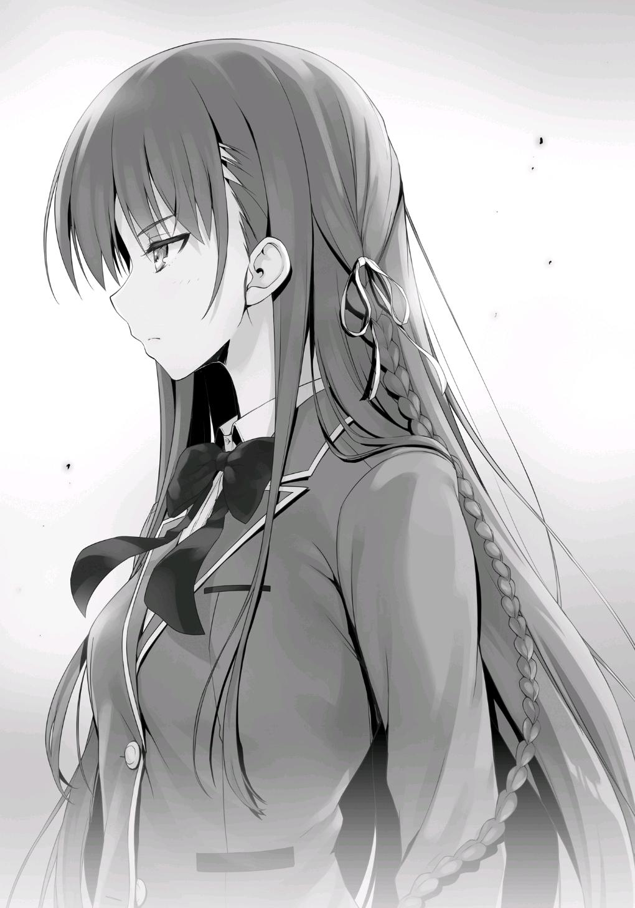
—Muy bien entonces, ahora comenzaremos el séptimo evento, ajedrez.
Por favor, tomen asiento.
Siguiendo las instrucciones del maestro, me senté.
La sonrisa en la cara de Hashimoto-kun no vaciló, pero sus ojos no sonreían en absoluto.
Había una conexión directa entre el resultado de esta partida y el destino de las dos clases.
Parece que Hashimoto-kun también ha comprendido la gravedad de la situación.
—Bien, empecemos.
Con eso, Hashimoto recogió dos peones, uno negro y otro blanco.
—Sabes cómo decidir quién va primero, ¿no?
—Sí.
Ante mi confirmación, Hashimoto-kun escondió las dos piezas en cada mano y me las ofreció, impulsándome a elegir.
—Izquierda.
Hashimoto-kun abrió su palma izquierda, revelando el peón blanco.
En otras palabras, tenía la ventaja del primer movimiento.
—Estoy emocionado por ver cuál será tu primer movimiento.
—No estoy segura de que cumpla con tus expectativas.
Tomé un peón. Como es la primera vez que toco físicamente una pieza de ajedrez, se sintió agradable y frío.
Y justo así, el séptimo evento, una batalla entre Hashimoto-kun y yo, comenzó oficialmente.
Mi primer movimiento ── Peón a E4.
Mientras la primera pieza se movía sobre el tablero de ajedrez, la sonrisa en la cara de Hashimoto-kun se desvaneció.
Y entonces, hizo su movimiento de respuesta, Peón a E5.
Rápidamente fui a mover mi caballo, con la intención de tomar su peón negro.
En todas las partidas que he jugado contra Ayanokouji-kun, esta fue la metodología en la que más confianza tenía.
Para proteger el peón negro, tu oponente tendría que jugar sólo reaccionando, permitiéndote tomar el control del flujo de la partida.
—Yo mismo he aprendido mucho de Sakayanagi. ¿Realmente pensaste que te dejaría poner a las negras en desventaja desde el principio?
Desde la apertura, cada uno de nosotros hizo sus movimientos sin pensar demasiado en ellos.
Yo tenía una hora, pero como Ayanokouji-kun iba a usar 30 minutos de eso, en realidad sólo tenía 30 minutos.
No podía permitirme perder el tiempo analizando en exceso los movimientos iniciales.
A medida que la partida avanzaba, me di cuenta de algo. Es decir, parecía que se negaba a jugar a la defensiva.
No tenía ni idea de quién le había enseñado a jugar así, ya que las jugadas que hacía no seguían ninguna de las estrategias estándar.
De hecho, está haciendo un movimiento ofensivo tras otro.
—Tengo un estilo de juego bastante retorcido, ¿no?
—En efecto. ¿Quizás lo aprendiste de tu maestra?
—Sí. Sakayanagi también juega como yo. Supongo que se podría decir que fue lo que más me gustó cuando me enseñó. Tu estilo parece un poco estable comparado con el mío... ¿Eres autodidacta?
Me está investigando por algo. ¿Qué es exactamente lo que quiere obtener de mi respuesta?
—Me he dedicado completamente al ajedrez durante la última semana, todo lo demás se ha dejado de lado.
—Oh ¿de verdad? Suena como si estuvieras muy segura de que el ajedrez sería elegido, ¿eh?
—Eres libre de pensar lo que quieras.
Con cada movimiento, las piezas del tablero pasaron por una miríada de cambios.
Él frecuentemente rodeaba mis piezas, y a simple vista, puede parecer como si me estuviera arrinconando.
Sin embargo, cada movimiento que yo hacía estaba destinado a invadirlo lentamente.
—¿Realmente sólo has jugado una semana?
—Seguro que te gusta hablar.
—Creo que hablar es uno de mis puntos fuertes.
Mientras no sea inapropiado, es completamente libre de decir lo que quiera.
No tengo derecho a detenerlo.
—Así es, sólo una semana. Pero, no puedo negar que es posible que esté mintiendo.
—Si realmente sólo has estado jugando durante una semana como dices, entonces no creo que hayas aprendido nada a través de forma autodidacta.
Sólo puedo imaginar que has sido entrenada minuciosamente por algún jugador de ajedrez con confianza en sí mismo, como nuestra princesa, ¿eh?
—No sé... De todas formas no te lo diría.
No voy a darle ninguna información innecesaria si puedo evitarlo.
—Bueno, está bien. Lo que es más importante, ¿puedo preguntarte algo sobre Ayanokouji?
¿Está bien? Por lo que parece, nunca le importó la experiencia que tengo o si tengo o no un profesor.
Basado en su forma de hablar, me parece que su verdadera meta es averiguar más sobre Ayanokouji-kun.
Así que... incluso Hashimoto-kun ha empezado a fijarse en él.
—¿Qué quieres saber?
—Desde el examen de la isla desierta, me he preguntado si Ayanokouji es el que realmente controla todo desde las sombras. ¿Qué piensas?
Está tratando de sacudirme emocionalmente.
Esta es posiblemente una de las razones por las que fue elegido para jugar contra mí.
—¿Qué te hace pensar eso?
—Sólo una corazonada. Responde a la pregunta, Horikita.
—¿Qué hay que responder? Ni siquiera sé de qué estás hablando.
—¿En serio? Aunque me parece que estás bastante conmocionada.
—Cuando descubrí que eras mi oponente, ya predije que tratarías de meterte conmigo de esta manera.
—...Oh, ¿de verdad?
—No importa qué clase de trucos intentes hacer, no me sacarás nada.
Con eso, usé mi alfil para controlar al rey de Hashimoto.
La sonrisa de Hashimoto por un momento desapareció una vez más.
—Me pregunto si todavía tienes tiempo para seguir parloteando de esta manera.
Ahora, después de esperar tranquilamente tanto tiempo, empezaré a lanzar mi contraataque.
—Las cosas se están poniendo interesantes...
Y sin más, la partida comenzó a inclinarse a mi favor.
No es un oponente fácil, pero todos y cada uno de sus movimientos están dentro de mis expectativas.
Antes de que estuviéramos siquiera 10 minutos en el juego, su mano se detuvo.
Por primera vez, tuvo que sentarse y pensar en qué movimiento haría. Esa mirada engreída que me daba de vez en cuando ya no se veía por ninguna parte.
—Aaah, eres una persona dura, Horikita. Es totalmente inesperado dada esa cara tan linda que tienes.
—A pesar de tu apariencia, también pareces ser bastante hábil.
—No hay necesidad de adularme. Siempre hay un pez más grande ahí fuera.
Si esta partida continúa así, mi victoria estará casi garantizada. Esa es la dirección en la que se dirige esto.
No hay manera de que el jugador dentro de Hashimoto-kun no se haya dado cuenta de esto.
Sin embargo, no hay manera de que el juego termine así de fácil.
PARTE 2
El enfrentamiento entre los dos era transmitido en el gran monitor.
Hashimoto estuvo constantemente a la ofensiva durante el inicio de la partida, pero Horikita lo manejó con calma.
Mantuvo la compostura, evitando situaciones en las que uno intentaba por reflejo sacrificar una pieza para defenderse.
Y a medida que el juego progresaba, ella había tomado la delantera.
Estaban a punto de llegar a la mitad del juego, pero la victoria de Horikita estaba empezando a tomar forma gradualmente.
Sí, Horikita tenía la ventaja. Era una muestra de habilidad que superaba con creces lo que ella había mostrado durante nuestras sesiones de entrenamiento.
—Es un juego interesante. Me encantaría verlo hasta el final.
Sakayanagi habló como observadora, sin ni siquiera una pizca de urgencia en su voz.
—Estoy de acuerdo. Vamos a ver hasta el final entonces.
—Fufu, aunque me gustaría permitirlo... tristemente no puedo permitir que eso suceda. No es que no tenga fe en Hashimoto-kun, pero Horikita-san parece bastante tranquila. Esas habilidades verbales en las que él se especializa no parecen tener mucho efecto en ella.
Había llegado el momento. Una notificación apareció en mi pantalla informándome que Sakayanagi había optado por intervenir en la partida.
Debió llegar a la conclusión de que Hashimoto perdería si esperaba más tiempo.
El tener que intervenir tan pronto en la partida también fue una situación inesperada para ella.
Sin embargo, su decisión de intervenir fue la correcta.
Si lo hubiera pospuesto unos minutos más, Hashimoto se habría puesto en una posición en la que el juego ya estaría decidido.
Así de aterradoramente fuerte era Horikita en este momento.
Me sentí tentado a sentarme y ver cómo se desarrollaban las cosas durante un poco más de tiempo. Quería ver cuánto había crecido.
Tenía curiosidad por ver qué tipo de movimientos haría Horikita en una partida contra Sakayanagi.
—¿No vas a entrar en el juego, Ayanokouji-kun?
—Probablemente tendremos más posibilidades de ganar si se lo dejo a Horikita en lugar de dejar que yo arruine las cosas.
—Ya veo. Entonces, supongo que está bien si cambio las mareas a nuestro favor.
Con eso, escribió algo con su teclado. Y entonces, Hashimoto, que se había quedado atascado pensando, volvió a la vida como un pez que había encontrado agua.
El temporizador de 30 minutos de la cuenta regresiva del comandante se detendría desde el momento en que presionaran "Enter". Aparentemente, también se tenía en cuenta el tiempo que transcurría entre las transmisiones.
Entonces, desde el momento en que el oponente hace su siguiente movimiento, la cuenta regresiva comenzaría una vez más.
Horikita contra Sakayanagi. Esperaba sinceramente que ambas estuvieran igualadas.
Si lo estaban, Horikita podría ser capaz de mantener su ventaja hasta el final.
Pero, no pensé que resultaría de esa manera. Sakayanagi había entrado en el combate con absoluta confianza. Basándose en el reciente flujo de acontecimientos, estaba claro que el movimiento excepcionalmente hábil que Sakayanagi había dado a Hashimoto dejó a Horikita ansiosa.
Por lo tanto, tenía que pensar. Tenía que considerar cómo lucharía cuando su oponente se hubiera convertido en alguien mucho más fuerte que ella.
Y tenía que ser resuelta. Tenía que aprovechar el tiempo que había ahorrado durante el inicio del juego y hacer su movimiento.
—Tal vez no le di suficiente ventaja.
Cada vez que Horikita hacía un movimiento, Sakayanagi siempre tardaba menos de cinco segundos en responder.
Respondía inmediatamente con movimientos calculados que se ajustaban a los puntos débiles de Horikita.
La oportunidad que Horikita había creado para ella misma se había desvanecido en un abrir y cerrar de ojos.
En este punto, sólo le quedaba la más mínima ventaja. La mano de Horikita se detuvo.
Aunque era sólo una principiante, seguramente sintió la desesperación de enfrentarse a un oponente cuyo poder estaba fuera de su alcance.
Estaba siendo acorralada, llevada a una esquina sin lugar a donde ir.
Pasaron dos o tres minutos. Simplemente no había nada que Horikita pudiera hacer ya.
Esta era la línea. La línea divisoria que separaba al ganador del perdedor.
Horikita no podía lidiar con la presión, así que elegí tomar la batuta y señalé que comenzaría con mi intervención.
A través del poder del texto al discurso, esta señal fue enviada a Horikita a través de sus auriculares.
Por un momento, Horikita miró hacia la cámara. Asintió con la cabeza, confiándome el resto de las cosas.
Esto ya no sería una batalla entre Horikita y Sakayanagi.
En su lugar, era una lucha de uno contra uno entre Sakayanagi y yo.
—Por fin... nuestro combate puede empezar de verdad.
—Supongo que sí.
Aunque sólo tuviera 30 minutos, era más que suficiente para llevar esto hasta el final.
Sakayanagi y yo continuamos nuestra conversación mientras nuestras manos se movían incansablemente sobre nuestros teclados.
Cada movimiento que hicimos tomó entre 10 y 20 segundos. Y cada vez que presionaba la tecla "Enter" para enviar nuestras instrucciones, el temporizador de la cuenta regresiva dejaba de disminuir.
Habiendo observado cómo había progresado el juego hasta el momento, pude hacerme una idea aproximada de cómo se iba a desarrollar.
Sin pausa, nuestras piezas corrían libres sobre la superficie del tablero de ajedrez.
[¡Oye, oye! ¿Qué clase de estilo de juego sobrenatural están usando aquí...?]
A través del gran monitor, pude escuchar el sonido de la voz de Hashimoto gritando mientras seguía una instrucción que acababa de ser enviada.
[Nuestra partida parece patética en comparación...]
[...No hace falta que lo digas.]
Su conmoción fue comprensible. Era la diferencia entre ellos y nosotros, la diferencia entre amateur y profesional. Para ellos, puede que ni siquiera esté claro qué lado tenía la ventaja al mirar el tablero.
No... Fue incluso más allá de eso... Fue algo que me obligaron a entender cuando empecé a jugar el juego.
Me quedé sin aliento.
Las habilidades de Sakayanagi eran tan profundas que no pude evitar mostrar mi respeto.
No me sorprendería ni remotamente si en el futuro se hiciera un nombre en el mundo del ajedrez.
De niño, aprendí a jugar al ajedrez en la Habitación Blanca.
Había jugado contra un gran número de los llamados instructores profesionales, pero ella era mejor que todos ellos.
—¿Qué piensas, Ayanokouji-kun? ¿Mis movimientos han logrado llegar a tu corazón?
—Sí. Dolorosamente.
Incluso después de que la partida pasara el punto medio, en lugar de abrir la brecha entre nosotros y extender mi pequeña ventaja, me costó mucho impedir que se acercara a mí.
Si cometía un solo error, ella se abriría paso de inmediato.
—No hay necesidad de preocuparse. Después de todo, Ayanokouji-kun nunca cometería un error descuidado.
—Si ese es el caso, no me importaría que te rindieras.
—Es una propuesta muy poco razonable. Si no te equivocas, tendré que usar mi fuerza para superarte y abrirme paso de frente.
En algún momento, Horikita y Hashimoto se quedaron sin palabras. No eran más que el medio para que nuestras manos movieran las piezas del tablero.
Eventualmente, durante la segunda mitad del juego, la mano de Sakayanagi se detuvo.
En circunstancias más normales, ya sabía qué movimiento haría Sakayanagi a continuación.
Pero ─misteriosamente se puso a pensar.
Debido a que nuestra batalla había sido tan rápida hasta este punto, Hashimoto estaba claramente sacudido por lo que estaba pasando.
Aunque no dijo nada, pudo sentir que ella estaba en problemas.
Después de unos minutos de silencio, hizo su movimiento, y el que se le ocurrió fue un movimiento poderoso.
No había cometido un error, y tampoco iba a darle la oportunidad de quitarme la ventaja.
Sin embargo ─
Mi mano fue la que se detuvo esta vez.
—¡Ah, qué delicioso combate ha sido este! Ya no me importan los espectadores. Ahora mismo, ¡sólo quiero que sea uno que recuerde por el resto de mi vida!
No sabía cuán familiarizados estaban con el ajedrez Hoshinomiya-sensei y Sakagami-sensei.
Dicho esto, los dos pudieron sentir lo extraordinaria que era esta batalla.
Uno, dos minutos pasaron. El tiempo pasó volando sin detenerse.
Todo el tiempo que había ahorrado se iba lentamente.
[¿Qué... qué estás haciendo, Ayanokouji-kun?]
A través del gran monitor, pude escuchar la inestable voz de Horikita mientras se sentaba y esperaba mis instrucciones.
[¡Sólo te quedan unos cinco minutos...!]
Por supuesto, era muy consciente de cuánto tiempo tenía.
Este era un complejo juego de ajedrez, una amalgama de los pensamientos de cuatro personas diferentes todos en un tablero de ajedrez.
No había duda de que nosotros, el lado que una vez fue dominante, ahora estábamos en terreno completamente parejo.
Mi siguiente movimiento significaría la diferencia entre la vida y la muerte.
No importaba cuánto tiempo me tomara para leer el movimiento a realizar, seguiría valiendo la pena.
—No eres alguien que dejaría que algo de este nivel te detenga, ¿verdad Ayanokouji-kun? Por favor, muéstrame lo que tienes.
En lugar de ganar, Sakayanagi sólo estaba interesada en sacar todo mi potencial.
Para ella, si eso significaba que podía disfrutar, no importaba quién ganara el examen.
Quedaban menos de tres minutos. Me vi obligado a hacer borrón y cuenta nueva, a abandonar por completo el camino hacia el final del juego que había previsto inicialmente.
Y luego, tuve que construir un nuevo camino. Uno que me llevara a la victoria.
Justo antes de la marca de dos minutos, escribí algo en mi teclado y envié mis instrucciones a Horikita.
Como si hubiera estado esperando este momento, Horikita comenzó a moverse de nuevo.
La pieza voló a través de la superficie del tablero, y por segunda vez, Hashimoto se puso ansioso.
Contrariamente a como había progresado la partida anteriormente, los movimientos de Sakayanagi comenzaron a tomar más tiempo.
Su primera respuesta tardó 30 segundos, al igual que la siguiente. Y el siguiente movimiento le llevó un minuto completo.
Yo, por otro lado, estaba respondiendo a sus movimientos en uno o dos segundos cada uno.
Los dos estábamos ahora recorriendo un camino que me llevaría a la victoria.
El final del juego se acercaba. El resultado se decidiría pronto.
Con mi próximo movimiento, el jaque mate sería casi seguro.
Ella todavía tenía movimientos que podía hacer para escapar, pero eran pocos en número.
Si lo estropeaba, perdería su última salida.
—Espléndido...
Sakayanagi dijo palabras de elogio.
Pasó un minuto, luego dos, luego tres. Por segunda vez, Sakayanagi estaba perdida en sus pensamientos.
Su tiempo se estaba acabando. Cada precioso segundo estaba siendo lentamente eliminado.
Sakayanagi me había estado hablando no hace mucho tiempo, pero ahora se había quedado callada.
[¡Oye, oye, oye!]
Hashimoto comenzó a gritar. El tiempo que le quedaba se redujo a dos minutos, y finalmente cayó por debajo del mío.
Si se le acababa el tiempo, no tendría más remedio que confiar el resto del juego a Hashimoto, lo que esencialmente aseguraría su derrota.
[¡Sakayanagi! ¿Realmente vamos a perder así?]
Hashimoto no sería capaz de encontrar una forma de escapar.
A Sakayanagi sólo le quedaba menos de un minuto.
—Verdaderamente, verdaderamente espléndido, Ayanokouji-kun. Me has dado más de lo que podría haber pedido.
Mientras su tiempo se agotaba, Sakayanagi me ensalzó una vez más.
—Gracias a ti, he experimentado de primera mano lo que realmente se siente romper en sudor frío. Fuiste un oponente formidable.
Justo cuando terminó de hablar, Sakayanagi añadió unas palabras más.
— Este es el final.
Sakayanagi murmuró estas palabras de derrota, pero por supuesto, Hashimoto no fue capaz de oírla.
El comandante no tenía la autoridad para terminar el juego.
Cuando nuestro tiempo se acabara, le correspondería al jugador en el tablero de ajedrez admitir su derrota.
Alternativamente, Hashimoto también podía seguir jugando hasta el jaque mate final.
De cualquier manera, el juego terminó desde el momento en que Sakayanagi expresó su voluntad de admitir la derrota.
—Fue una partida divertida. Es realmente lamentable que tenga que terminar.
Tenía menos de 40 segundos. Su voz era tranquila, y mientras hablaba, podía oír el sonido de ella escribiendo algo en su teclado.
En lugar de reconocer su rendición, sus palabras eran para resaltar la confianza que tenía en el feroz movimiento que se le había ocurrido.
[...¡Así se hace, princesa!]
Fue el regreso del borde de la muerte de Hashimoto, o mejor dicho... de Sakayanagi, el que estaba detrás de él.
Al ver el movimiento con el que había respondido, me golpeó la sensación de escalofríos que fluían por mi columna vertebral.
Ella había resucitado al lado negro de entre los muertos, vivo y respirando una vez más.
En el transcurso de los siguientes dos o tres movimientos, sentí como si el juego se hubiera desviado de mi camino.
Y entonces ─ antes de que me diera cuenta, descubrí que había sido acorralado.
Había sido atraído a caminar por su propio camino sin siquiera darme cuenta.
A través del despiadado ir y venir de las ventajas, llegó el momento de callarme una vez más.
Ahora, con menos de un minuto y medio en mi cronómetro, me encontré frente a mi mayor obstáculo hasta ahora.
Como la que mueve las piezas, Horikita debe haber sentido esto también.
La derrota de la clase A. La victoria de la clase C. Para ella, estos sueños deben haber parecido como si estuvieran a su alcance hace sólo unos momentos.
Y ahora, Horikita sintió como si estos sueños se le hubieran escapado de las manos. Me quedaba menos de un minuto.
[Ayanokouji-kun...]
Sin mirar a la cámara, Horikita dijo mi nombre.
[No quiero perder.]
Y entonces, ella dio voz a sus sentimientos.
[Yo…]
Dio voz a las palabras que necesitaba decir.
[Yo... no quiero admitir la derrota... quiero ganar...]
Fue un grito desde el fondo de su corazón.
[Incluso ahora, sigo pensando, devanándome los sesos una y otra vez, tratando de dar el paso que necesito para ganar.]
Una súplica emocional, completamente inusual en ella.
[Pero, no puedo pensar en nada que funcione en contra de Sakayanagi-san...
¡Tú eres el único que puede hacer algo así!]
Cerré mis ojos.
Sólo me quedaban unas pocas docenas de segundos.
Este era el final para terminar con todos los finales.
Considerando que la partida tendría que continuar después de esto, nuestra derrota se decidiría en los próximos 30 segundos.
Ya no había rutas seguras. Tenía que apostar por la última oportunidad que tenía de ganar esta batalla.
Rápidamente empecé a escribir en mi teclado, anotando el movimiento que se me había ocurrido.
Y luego presioné enter, y la cuenta regresiva de mi temporizador se detuvo.
Sin embargo, Horikita simplemente estaba sentada allí, esperando en silencio que llegara mi mensaje, casi como si estuviera rezando por ello.
Alrededor de 30 segundos después de que le envié mi instrucción, los ojos de Horikita se abrieron de par en par.
La tan esperada señal le había llegado a través de los auriculares.
Miré a Sakagami-sensei y a Hoshinomiya-sensei.
Ambas tenían los ojos pegados al gran monitor, mirando ansiosamente para ver el resultado de la partida de ajedrez.
[Así que todavía te queda algo de lucha en ti... Ayanokouji.]
Hashimoto miró a la cámara con una complicada expresión en su cara. Estaba sonriendo, pero no lo hacía al mismo tiempo.
Horikita hizo su movimiento, y el temporizador de Sakayanagi comenzó la cuenta regresiva una vez más.
—Espléndidamente hecho, Ayanokouji-kun.
Al ver el movimiento que hice, Sakayanagi me elogió por tercera vez.
—Creo que nunca antes había experimentado un combate contra un oponente tan complejo y poderoso. Has logrado responder a cada uno de mis movimientos con un movimiento igual, o a veces mucho mejor.
Habló, evaluando lo que había sucedido. Con mi movimiento, ella había visto el final del juego.
—El movimiento que acabas de hacer fue sin duda perfecto. No hay duda de que estás a un nivel que una persona normal sólo podría soñar con alcanzar.
Las palabras de Sakayanagi estaban llenas de emoción y su voz temblaba un poco.
—Sin embargo.
La voz de Sakayanagi resonó suavemente por toda la habitación.
—Con esto, mi victoria está casi asegurada.
Con eso, escribió sus instrucciones en su teclado, que Hashimoto llevó a cabo inmediatamente.
Yo respondí con mis propias instrucciones, provocando el inicio de una ráfaga de movimientos entre los dos. El final del combate se acercaba.
No había conversación, sólo el sonido de las piezas moviéndose por el tablero de ajedrez.
Quedaban 5 movimientos... y luego 4... 3... Antes de que finalmente...
Sakayanagi forzó el jaque mate mediante el sacrificio de la reina.
Era una jugada que incluso podría llamarse la última carta de triunfo, donde se sacrificaba la reina, la pieza más fuerte.
Es una jugada excepcional cuando funciona, pero los riesgos que conlleva son altos. Si falla, la derrota vendrá poco después. Era el plan que había decidido en el último momento con la espalda contra la pared.
La mano de Horikita se detuvo.
Tenía la débil esperanza de que mis palabras volvieran a fluir a través de los auriculares, pero eso fue sólo por un momento.
Seguramente ya se había dado cuenta ella misma. Que, en este punto, ya no había manera de evitar el jaque mate.
El resultado estaba decidido.
[Ayanokouji-kun...]
Pero aun así, había algo que Horikita no podía dejar de lado.
[Respóndeme, Ayanokouji-kun... ¿Realmente ya no hay nada que yo pueda hacer?]
Quité mis manos del teclado.
[¡Ayanokouji-kun...!]
Horikita había querido vencer a la Clase A más que nadie.
Ella me había confiado todo, pensando que sería capaz de manejarlo, o incluso de ganarlo.
Este era el final, el séptimo evento. Quería elogiarla por haber ganado contra un duro oponente como Hashimoto.
Esta derrota no fue su culpa para nada.
El oponente simplemente hizo un mejor movimiento que el que a ella le ordenaron hacer.
La cuenta regresiva para la intervención del comandante se detuvo en 0 y la conexión entre nosotros se cortó.
[...Es mi derrota].
Horikita bajó la cabeza a Hashimoto, más por vergüenza que por cortesía.
[Gracias por la partida]
Hashimoto se inclinó en respuesta.
—Y eso es todo.
Con eso, Sakagami-sensei, que había permanecido callado durante todo el juego, anunció la conclusión del séptimo evento.
—La Clase A ganó el séptimo evento. Por lo tanto, el ganador de este examen especial, con 4 victorias y 3 derrotas, es la Clase A. El desempeño de la Clase C también fue bastante notable.
El último evento había terminado. Por el momento, tendría que inventar una excusa. Después de todo, yo había intervenido como comandante, y aun así perdí la partida de ajedrez. Algunas personas inevitablemente estarían insatisfechas, preguntándose por qué no dejé todo a Horikita.
—Ese fue un gran juego... ¿cierto? De cualquier manera, la Clase C hizo un súper gran trabajo.
Hoshinomiya-sensei intentó consolarme con lo mismo de siempre.
—Eres libre de llorar en mi pecho si eso te hace sentir mejor.
—Hoshinomiya-sensei.
Mientras se metía conmigo, Sakagami-sensei dijo severamente su nombre.
—Era sólo una broma. ¡Una broma!
Saltó un poco hacia atrás e inclinó rápidamente su cabeza ante Sakagami-sensei.
—Pero, Ayanokouji-kun. Parece que eres, mucho más sorprendente de lo que pensaba. Corregiste esa espantosa décima pregunta durante la aritmética mental rápida, e incluso luchaste en igualdad de condiciones con Sakayanagi-san en el ajedrez. Además, también corregiste las preguntas difíciles durante las pruebas escritas. ¡Oh! Lo que es más, también puedes correr muy rápido si recuerdo correctamente...
Después de decir todo eso, Hoshinomiya-sensei reflexionó por un momento.
—¿Qué diablos? ¿Significa esto que has estado ocultando tus habilidades hasta ahora?
—Sucedió que esta vez me salió bien.
—Ya veo, así que fue sólo una coincidencia, ¿eh? Ese tipo de cosas suceden de verdad a veces... como si... Sí, creo que entiendo la razón por la que Sae-chan tiene los ojos puestos en ti, Ayanokouji-kun. Es tan injusto...
No importaba cuanto tratara de ocultarlo, no había forma de evitar el hecho de que algunas cosas simplemente tenían que ser mostradas en frente de los profesores.
—No te preocupes... No iré por ahí contando a otros estudiantes lo que he visto u oído aquí...
Mientras hablaba, me dio una palmadita en el hombro. Y luego, acercó su boca a mi oído y dijo:
—A Sensei no le disgustan los niños como tú, Ayanokouji-kun, pero, si te conviertes en un enemigo, Sensei podría terminar odiándote más.
La sonrisa de su cara se había desvanecido. Hoshinomiya-sensei me dijo eso y se marchó.
Por lo que parece, sin querer, hice que me reconociera como un enemigo potencial de clase B.
—El examen ha terminado. Estudiantes, por favor salgan de la sala tan pronto como sea posible.
—Sakagami-sensei, ¿deberíamos volver a nuestras aulas primero?
—No, ya han terminado por hoy. Son libres de ir directamente a casa si quieren.
Al parecer, no había necesidad de que las clases se reunieran hoy. Estaba agradecido por eso.
—Los estudiantes son tan afortunados, ¿no? De poder volver a casa y todo eso.
—Hoshinomiya-sensei, preparémonos para limpiar.
—Biiien.
Sakagami y Hoshinomiya empezaron a organizarse para retirar el equipo de eventos de la sala de usos múltiples. La atmósfera de la sala era tan relajada que era difícil de creer que se acabara de librar una batalla tan tensa. Poco después, Sakayanagi salió tranquilamente del otro lado de la computadora.
Seguramente esperaba que los profesores se distanciaran de nosotros dos.
—Muchas gracias por hoy, Ayanokouji-kun.
—Sí. A ti también.
Después del séptimo evento, lo primero que hicimos fue intercambiar cumplidos.
Sólo había tomado 30 minutos, pero ella había estado acelerando a fondo todo el tiempo. Seguramente su fatiga era considerable.
—Se necesita resistencia para jugar al ajedrez. Hubo una maravillosa respuesta de Horikita-san a Hashimoto durante la apertura, y luego tu propio y extraordinario estilo de lucha que fue incluso mejor que eso. Fue verdaderamente maravilloso.
Sakayanagi tenía una mirada satisfecha en su rostro. Parecía que había sacado lo mejor de sí misma.
—Honestamente, fuiste mucho más fuerte de lo que había imaginado. Te libraste de la ventaja de Horikita y yo perdí. No hay ninguna duda al respecto.
—Ese no es el caso. Fue una muy buena partida. Podría haber ido en cualquier dirección hasta el final. Aunque, no estarás en desacuerdo con que el movimiento que hice hacia el final fue lo que marcó la diferencia,
¿verdad?
—El sacrificio de tu reina fue brillante.
Todo se redujo a lo que ocurrió al otro lado del gran monitor.
Mis instrucciones se habían entrelazado con las de ella, y el resultado fue que las suyas fueron superiores.
Milagros, segundas oportunidades, no había lugar para nada de eso.
La victoria y la derrota se juzgan, determinan y deciden a discreción de la escuela.
Aunque habíamos dado una buena pelea, la clase C perdió contra la clase A, perdiendo 30 puntos de clase en el proceso.
Por sí mismo, esto sólo parecía una lesión menor, pero todavía no habíamos visto lo que pasó en las otras clases...
—¿Hay algo que todavía quieras de mí?
—Algo que quiera, ¿verdad? No particularmente.
Con una amable sonrisa, Sakayanagi asintió con la cabeza en señal de satisfacción.
—Simplemente esperaba enfrentarme a ti. Y ahora, ese deseo se ha hecho realidad. Estoy satisfecha.
En ese caso, supongo que me alegro de haber podido darle lo que quería.
Sería problemático si Sakagami-sensei se enfadara con nosotros por hablar de esta manera durante mucho tiempo, así que también me levanté de mi asiento.
Justo cuando estaba a punto de alcanzar la manija de la puerta y salir, el Director Interino Tsukishiro apareció en la sala de usos múltiples.
—Bueno, ustedes dos realmente me mostraron algo que vale la pena ver.
—Vaya, hola, Director Interino Tsukishiro. ¿Vio el examen especial?
—Sí. Después de todo, los de la escuela tenemos la obligación de asegurarnos de que no haya ninguna injusticia. Yo estaba en la otra habitación, vigilándolos mientras hacían uso de la intervención del comandante y observando cómo se desarrollaba su partida.
Con eso, aplaudió mientras nos alababa a los dos.
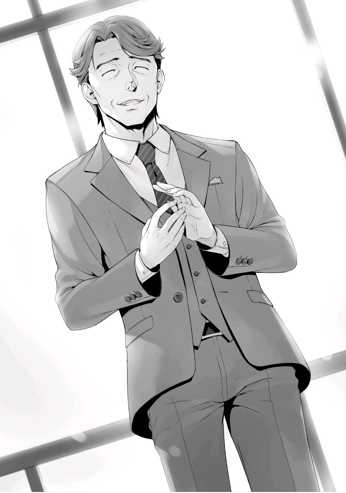
—Ninguno de los dos cedió ni un centímetro. Fue realmente la definición de una pelea equilibrada. Los de la escuela nos las arreglamos para recopilar algunos datos excepcionalmente buenos de ella. Estoy seguro de que esta competencia será de gran utilidad para la escuela durante muchos años.
Cuando miré a los ojos del director interino, me miró fijamente a los míos con una expresión de satisfacción en su rostro.
Y con eso, entendí todo sin siquiera tener que hablar con él.
—Me alegro de que haya disfrutado del espectáculo, Director Interino Tsukishiro.
Sakayanagi inclinó la cabeza. Por encima de todo, sintió una suprema sensación de satisfacción de que nuestra competición hubiera llegado a su fin.
—Ahora que lo pienso, ¿ya se ha establecido la diferencia entre la clase B
y la clase D?
—Sí. Terminaron hace una hora.
Una definición considerablemente rápida.
—¿Qué clase ganó?
Al parecer, Sakayanagi también estaba interesada en escuchar los resultados.
—La clase D ganó con cinco victorias y dos derrotas. Fue una gran sorpresa.
Así que Ryuuen derrotó a Ichinose. Esto significa que ganaron 190 puntos de clase.
La clase D, o mejor dicho, la clase C, volvieron a la vida.
Y, esto también significaba que tendríamos que empezar de nuevo desde la clase D.
—Esta debe ser una dolorosa derrota para Ichinose-san. Bueno, supongo que es comprensible.
Si no hubiera sido por Ryuuen, la clase B definitivamente habría ganado el examen.
Me encontré preguntándome: ¿Había tomado acción para él mismo, o por el bien de su clase?
Cualquiera que fuera la razón, esto significaba que algo dentro de ese chico había empezado a cambiar.
Y al mismo tiempo, esto también significaba que una amenaza inminente había regresado para Ichinose.
—Muy bien, gente, salgamos de la habitación. El examen especial ha terminado. Profesores, les pido que por favor se retiren también.
El Director Interino pidió que tanto Sakagami-sensei como Hoshinomiya-sensei se fueran.
—Pero, todavía tenemos que ocuparnos de-
—Nos encargaremos de eso nosotros mismos.
A la señal del director interino, varios trabajadores entraron en la sala al mismo tiempo.
—¿Quiénes son todas estas personas? No son personal de la escuela,
¿verdad?
Preguntó Sakagami-sensei, con la voz llena de dudas.
—Parece que al gobierno le gustaría tener en sus manos los datos de este examen lo antes posible. Por eso enviaron a toda esta gente, así que por favor, estén tranquilos.
Como el Director Interino fue quien lo dijo, como maestro, Sakagami-sensei no tuvo más remedio que apartarse y escuchar sus instrucciones.
Los dos profesores se apresuraron a completar sus tareas finales y salieron del salón de usos múltiples junto con Sakayanagi y yo.
Luego, los maestros se alejaron, se dirigieron a la sala de profesores sin prestarnos atención a ninguno de los dos.
Sakayanagi, por otro lado, miró a los trabajadores con una mirada dubitativa en su rostro.
Sin embargo, antes de que pudiéramos mirar por mucho más tiempo, la puerta de la sala de usos múltiples se cerró y escuchamos el sonido de alguien cerrándola desde el interior.
—¿Hay algo que te moleste?
El director interino Tsukishiro, que no se quedó en la sala de usos múltiples, le preguntó a Sakayanagi.
—No. No es nada.
—¿En serio?
En este punto, sentí que debía volver a casa también. Cuando revisé mi teléfono, encontré que recibí un mensaje de Horikita.
[Gracias por tu duro trabajo.]
Era un mensaje corto. Sin duda, escucharé quejas y refunfuños de ella más tarde.
—Hasta luego Sakayanagi.
Intenté dejarla con unas pocas palabras gentiles y volver a casa, pero...
—¿Podrías esperar un momento, Ayanokouji-kun?
—¿Qué pasa?
Sakayanagi me llamó y me detuvo cuando empecé a caminar por el pasillo.
Debe seguir disfrutando del dulce sabor de la victoria, pero su expresión había empezado a nublarse.
—...¿Realmente pensaste que ese movimiento que hiciste al final era la mejor opción que tenías disponible?
Parecía cuestionar la conclusión a la que llegué después de un largo período de consideración hacia el final de la partida.
—Tú eres la que ganó. ¿Qué más podría haber?
—No... lo siento. Parece que me imaginé algo tonto.
—¿No estás feliz de haberme vencido?
—No es nada de eso. Es sólo que, tal vez, en algún lugar de mi mente, esperaba perder contigo.
Una vez más, sentí que tenía una forma de pensar inusual.
—Diré esto ahora: No fui fácil para ti.
—Sí, ya lo sé.
Sin embargo, por alguna razón, Sakayanagi no parecía convencida.
Tal vez a sus ojos, yo era simplemente mucho más grande de lo que realmente era.
—Eres un hombre bastante cruel, Ayanokouji-kun.
Con estas palabras, el director interino Tsukishiro, que seguía de pie frente a la puerta de la sala de usos múltiples, se inmiscuyó casualmente en nuestra conversación.
Sakayanagi se giró y miró detrás de ella. Y, aunque a regañadientes, no tuve más remedio que darme la vuelta y mirar atrás también.
El director interino vino y se acercó a nosotros con una gentil sonrisa en su rostro antes de repetirlo una vez más.
—Eres un hombre cruel.
—¿Qué quiere decir con eso, Director Interino Tsukishiro?
No fui yo, sino Sakayanagi quien preguntó eso.
—¿Qué tal si le das la respuesta, Ayanokouji-kun?
—¿De qué habla?
—Deberías haberle dicho honestamente.
El director interino evidentemente tenía algo de tiempo libre después de terminar su " asunto" en la sala de usos múltiples.
—Hablando correctamente, el ganador de esa partida de ajedrez debería haber sido Ayanokouji-kun.
Tan pronto como escupió estas inexcusables palabras, no había manera de que Sakayanagi no se viera atrapada en ellas.
Pero, ¿por qué este hombre se esforzó tanto en arriesgarse al decirlo?
—¿De qué habla? Al fin y al cabo, perdí.
—Sí, supongo que tienes razón. En efecto, perdiste.
El director interino hablaba de una manera que realmente resaltaba su verdadero carácter.
—Pero, tu movimiento fue diferente... ¿no te parece?
Sakayanagi, que nos había estado escuchando en silencio, comenzó a comprender la situación actual. Y entonces, se dio cuenta de ello.
—Qué estúpido... ¿Dice que la escuela intervino por la fuerza en nuestro examen?
Su reacción indudablemente fue alimentada por la ira. Fue más allá del arrepentimiento o la decepción; Indignación era el mejor término para ello.
—Tú eres la culpable, Sakayanagi-san. No sólo te negaste a seguir mis órdenes, sino que hasta le diste un punto de protección a Ayanokouji-kun.
No tuve más remedio que ser un poco enérgico para quitarle eso, ¿no estás de acuerdo? Esto sigue siendo una escuela, ¿verdad?
Ya veo. Así que estaba exponiendo todo esto sólo para vengarse de Sakayanagi.
—Cielos. Si todo hubiera salido según lo planeado, esta vez habríamos podido obligar a Ayanokouji-kun a dejar la escuela. Pero, parece que hay
unos cuantos profesores demasiado entusiastas en esta escuela que hacen mi trabajo bastante difícil.
Durante la partida, hubo una instrucción que envié a Horikita después de un largo período de consideración.
Pero, tomó alrededor de 30 segundos para que la instrucción llegara de mi teclado a los auriculares de Horikita.
Hasta ese momento, el tiempo de retraso para cada instrucción que envié había sido más cercano a los 10 segundos.
La razón de esta discrepancia es que la instrucción fue sido modificada antes de ser reproducida en los auriculares.
La instrucción fue manipulada desde dentro de la computadora, por lo que la entrada y el resultado fueron completamente diferentes.
—En ese momento, él iba a hacer un movimiento diferente. Era incluso mejor que el mejor movimiento que pensábamos que podía hacer. Había llegado incluso a preparar un gran número de personal y máquinas para dar cuenta de sus opciones, pero aun así nos vimos obligados a tomar una decisión extremadamente difícil.
Si lo hubieran cambiado por un movimiento descuidado y sin habilidad, habría sido dolorosamente obvio que algo anormal había sucedido.
Así que, para evitarlo, el Director Interino Tsukishiro se vio obligado a hacer un movimiento difícil que aun así diera el resultado que quería.
—En ese sentido, Sakayanagi-san hizo un excelente trabajo al discernir la debilidad del movimiento que elegimos.
Eso no fue ni siquiera un cumplido.
—¿Por qué no dijiste nada, Ayanokouji-kun?
—Aunque lo hubiera hecho, no habría importado. No, más bien, no habría estado dispuesto a decírtelo.
El director interino Tsukishiro continuó explicando.
—En realidad, es muy sencillo. Como antiguo miembro de la Habitación Blanca, y además, como alguien que se coló por la fuerza en esta escuela, no hay forma de que quiera llamar la atención sobre él.
Si se supiera que Tsukishiro había interferido conmigo, podría dar lugar a algunos problemas muy complicados más adelante.
Es frustrante, pero no tengo otra opción que rendirme y aceptarlo.
—Aunque sea trágico, una victoria es una victoria. Deberías estar muy agradecida.
—... Es usted muy hábil con las provocaciones, director interino. Sin embargo, sabe que pagará muy caro por ello, ¿verdad?
Al ver la sonrisa llena de ira de Sakayanagi, el director interino Tsukishiro simplemente aplaudió una vez más.
—Para ser una simple niña en su primer año de preparatoria, dices algunas cosas muy interesantes. ¿Tienes un ego inflado sólo porque eres la princesa del patio de juegos?
En general, si fueras un estudiante que estuviera en el mismo cuadrilátero que Sakayanagi, no querrías convertirla en un enemigo.
Pero a este hombre, no le parecía nada más que una niña hablando más grande de lo que realmente es.
—Dijiste que lo pagaría caro, así que por supuesto, muéstrame lo que quisiste decir con eso. Vamos, rápido.
Pasó un breve silencio. No había forma de que pasara algo.
—Bueno, ya es hora de que me vaya. Los adultos tenemos mucho trabajo que hacer.
El director interino Tsukishiro comenzó a caminar, abriéndose paso a propósito entre los dos a medida que avanzaba.
—Si es posible, por favor elige dejar la escuela voluntariamente. De esa manera no tendremos que involucrar a otros estudiantes en esto.
Diciéndome esas palabras, Tsukishiro se fue, se dirigió al pasillo. Después de que se fue, Sakayanagi comenzó a alejarse lentamente también.
—Bueno, esto lo ha arruinado todo. Qué inmensamente insatisfactorio.
—Lo siento.
—No tienes que disculparte, Ayanokouji-kun. Sólo estoy decepcionada de que un adulto sintiera la necesidad de entrometerse en los asuntos de los niños. Tomó mi más preciado recuerdo y lo pisoteó.
A ella no parecía importarle que su victoria hubiera sido imperfecta en absoluto.
Simplemente no podía perdonar el hecho de que se había jugado con la honestidad de la partida de ajedrez.
—Es sólo ¿no crees que es un poco irracional pedirme que lo acepte así?
Sakayanagi dejó de caminar y me miró.
—Sí. Desde luego no te equivocas.
Tenía la intención de mantenerme callado sobre la interferencia del Director Interino Tsukishiro, pero tal vez no era algo malo que Sakayanagi se hubiera enterado. Aunque sólo un poco, la situación también me había dejado con la sensación de haber sido engañado.
—¡Así que, por favor, juega conmigo de nuevo, empezando por el movimiento justo antes de que el Director Interino se metiera!
Podría haber rechazado fácilmente su propuesta en ese mismo momento.
Pero, si lo hacía, sentí que algo dentro de Sakayanagi se rompería. Y, algo dentro de mí también.
—Supongo que no tengo razones para rechazarte. Pero, ¿a dónde deberíamos ir?
—¿Sabías que hay un tablero de ajedrez en la biblioteca?
—No... es la primera vez que oigo hablar de ello.
—De vez en cuando lo uso para jugar al ajedrez. Vayamos allí y usemos eso.
No tenía motivos para rechazar su propuesta, así que los dos nos dirigimos a la biblioteca.
No había nadie allí hoy, seguramente porque el examen especial había terminado y todos los exámenes habían terminado.
Dentro de la silenciosa biblioteca, tomé el tablero de ajedrez.
Luego coloqué el tablero en una pequeña mesa, lo suficientemente grande para dos personas.
Sakayanagi arregló hábilmente las piezas al estado en que estaban antes.
—Esta es la misma situación que antes. Por favor, muéstrame tu verdadero movimiento.
Recogí la pieza y la puse donde debía estar.
PARTE 3
La partida comenzó y el tiempo pasó sin que ninguno de los dos dijera una palabra.
Cuando el sol comenzó a ponerse, el único sonido fue el repetido golpeteo de las piezas blancas y negras en el tablero de ajedrez.
Pero eso no duró mucho tiempo.
No había necesidad de pasar mucho tiempo en la partida ya que estaba en las etapas finales cuando comenzó.
Y en poco tiempo, la partida terminó. Sakayanagi suspiró en silencio mientras miraba fijamente el tablero frente a ella.
No encontró por ningún lado una forma de evitar el jaque mate.
—Como se esperaba de ti, Ayanokouji-kun. Es mi derrota.
Había sido un combate a vida o muerte, movimiento por movimiento.
No parecía que estuviera descontenta ni nada, sólo reconoció su derrota con satisfacción.
—Seguro que eres honesta al respecto.
—¿Parezco una dama altiva que no puede reconocer su derrota?
Mentiría si dijera que es imposible verlo.
—Lo que quería saber era dónde están las cosas entre nosotros dos.
Quién está por encima del otro. Nunca me sentaría aquí y me quejaría del resultado.
—Aunque, aunque haya ganado, esto fue sólo una recreación. No hay garantía de que la partida hubiera progresado así en ese instante y preciso momento.
No podía descartar la posibilidad de que fuera un movimiento que pude pensar debido al tiempo extra que se me dio.
No, incluso más importante...
—Este juego fue el resultado de la situación ventajosa que Horikita creó durante su juego con Hashimoto. Por lo que veo, intervine mientras todavía teníamos la ventaja. No creo que fuera un juego muy justo.
La partida sólo se había desarrollado de la manera en que lo hizo porque Horikita me pasó su ventaja. El hecho de que Sakayanagi fuera capaz de superar eso mientras estaba en desventaja era un testimonio de lo fuerte que es realmente.
Si jugábamos desde cero, no había ninguna garantía de que yo ganara.
Aunque me proponga la revancha, querría evitarla si pudiera.
—¿Es esa tu manera de consolarme?
Sakayanagi se rió, encontrando mi respuesta extraña.
—No es eso. Sólo estaba exponiendo los hechos objetivamente.
—Estoy satisfecha con este resultado. ¿No es suficiente?
Si ella estaba satisfecha, entonces eso está bien. Una vez dicho esto, no me hizo sentir mejor.
—Cuando se anunció este examen especial, podrías haber elegido enfrentarme directamente restringiendo aún más el evento individual. Si me hubieras propuesto algo así, igualmente habría aceptado. Sin embargo, no lo hiciste. ¿Por qué fue eso?
Por supuesto, habría sido una batalla al azar librada usando sólo siete de los diez eventos, así que no habría garantía de que fuera elegido. Pero, si los dos hubiéramos llegado a un acuerdo en torno a los dos eventos individuales, las posibilidades de que todo saliera bien habrían sido bastante altas.
—La razón es simple. Como habrás razonado, no había garantías de que fuera elegido. Además, si compitieras indistintamente contra mí en este enfrentamiento individual, la gente que te rodea seguramente sospecharía.
Quería evitar que ocurriera cualquiera de esas cosas. Aunque, al final, el Director Interino se aprovechó de ello.
Sakayanagi había planeado el examen especial siendo también lo más considerada posible con mi situación.
Esa era seguramente la razón por la que se encolerizó tanto por la intervención de Tsukishiro.
Los siete eventos elegidos hoy y el orden en que fueron elegidos muy probablemente no fueron generados al azar en absoluto.
Simplemente no había sido un juego justo desde el principio.
—Además, Hashimoto-kun era el jugador de ajedrez más talentoso de la Clase A, y aun así perdió contra Horikita-san después de recibir tus enseñanzas. Eso sólo significa que también perdí en ese aspecto.
Sakayanagi inclinó pacíficamente su cabeza ante mí.
—Ayanokouji-kun. Fue un placer enfrentarme a ti. La respuesta que buscaba está clara para mí ahora. Realmente eres un genio. No hay duda de que tu habilidad no es falsa.
—¿No planeas vengarte en el ajedrez otra vez?
—¿Quieres que lo haga?
—...No, claro que no.
—Fufu, qué honesto.
El hecho de que hayamos logrado tener este juego sólo entre nosotros dos fue, en sí mismo, gracias a la situación extremadamente rara en la que estábamos.
El examen especial terminó y mañana marca el comienzo de un largo receso.
Así, fuimos capaces de encontrar un lugar sin nadie más alrededor.
—En cuanto a la razón por la que no planeo tomar venganza...
Honestamente, tengo la impresión de que tú y yo estamos bastante igualados en lo que se refiere al ajedrez. Si jugáramos diez partidas, no sería extraño que cada uno terminara con cinco victorias y cinco derrotas.
¿Estarías en desacuerdo con eso?
—Sin duda alguna, estoy completamente de acuerdo.
Curiosamente, nuestras verdaderas habilidades coincidían perfectamente.
Si nos enfrentáramos de nuevo, definitivamente sería como Sakayanagi predijo que sería.
—Pero, tengo la sensación de que el ganador de este primer asalto fuiste tú, Ayanokouji-kun. Creo que habría perdido en ese instante, durante los momentos críticos. Bueno, tienes una historia un poco más larga con el ajedrez que yo. Tal vez eso marcó la diferencia.
Una mirada ligeramente competitiva se veía en su rostro, enfatizando la importancia que le daba a ganar.
—Si me vengara usando el ajedrez, eso le quitaría la diversión. Para mí, el ajedrez es una actividad recreativa, y me gustaría que siguiera siendo así.
Mientras hablaba, recogió a uno de los caballos del tablero de ajedrez.
—Viendo que mencionaste mi historia con el ajedrez, ¿eso significa que me viste en ese entonces?
—Sí. Observé cómo aplastabas implacablemente a tus oponentes en la Habitación Blanca. Me gusta el ajedrez desde entonces, creyendo que llegaría el día en que yo misma me enfrentaría a ti.
La corazonada que tuve cuando vi la lista de eventos que la clase A propuso fue acertada.
No fue una mera coincidencia que el ajedrez fuera elegido como un evento.
—Bueno, entonces... volvamos rápido, ¿sí?
—Lo guardaré. Sólo siéntate y espera un poco.
—Muchas gracias. Con mucho gusto te tomaré la palabra.
Fui y devolví las piezas y el tablero a sus lugares originales.
—Es con pesar que debo decir esto, pero me mantendré alejada de ti de ahora en adelante. Si continuara fijándome en ti, nuestros compañeros de clase empezarán a sospechar algo. Además...
—¿Además?
—Me moría por conocerte desde hace tanto tiempo. Para mí, eres como un amigo de la infancia que nunca conocí; uno al que siempre, siempre he perseguido. Si compitiéramos regularmente, seguramente acabará perdiendo algo de su valor para mí.
Una leve sonrisa apareció en su rostro mientras me miraba con afecto en sus ojos.
—Aunque, conociendo al director interino Tsukishiro, no es momento de que los estudiantes se peleen entre ellos.
Un ejemplo perfecto de que la escuela tiene sus prioridades al revés. En circunstancias normales, esta escuela se supone que hace que los estudiantes se peleen entre sí.
Aunque más tarde compitiéramos de forma similar, no había garantía de que no interfiriera de nuevo en algún momento.
Quizás sea más exacto decir que él hará lo que sea necesario para interponerse en mi camino.
En ese sentido, estaba agradecido de que ahora sólo debía tener cuidado con él.
Si estuviera rodeado de enemigos por todos lados, el agotamiento que vendría con ello sería considerable.
Los dos salimos de la biblioteca.
—Ahora que lo pienso, es la primera vez que salimos juntos de la escuela de esta manera.
—Ahora que lo mencionas, tienes razón.
Siempre hay alguien más junto a ella.
Además, la idea de que los dos camináramos juntos, uno al lado del otro, no era la más lógica que existe.
—Debo disculparme por caminar tan lentamente.
—No tienes que disculparte por eso.
Su velocidad al caminar es realmente lenta, pero se debe a su discapacidad.
Y extrañamente, hoy, me sentí agradecido por eso.
Si caminara como de costumbre, llegaría a los dormitorios en poco tiempo.
—¿Qué piensas hacer de aquí en adelante?
—Sólo depende de lo que haga Tsukishiro a continuación. Puede que sólo esté sustituyendo a tu padre, pero sigue siendo el director. Los métodos ordinarios no funcionarán con él.
—Tienes razón. Dada la situación actual, la reincorporación de papá no parece que vaya a ser fácil.
—¿Qué planeas hacer?
Cuando pregunté, Sakayanagi reflexionó un poco.
—Por el momento, pasaré mi tiempo disfrutando como siempre lo he hecho. Si Katsuragi-kun empieza a oponerse a mí de nuevo, actuaré como su oponente. Si Ichinose-san viene persiguiendo mi posición, me divertiré aplastándola de nuevo mientras juego con ella. Si es expulsada, tendré el placer de ver como la clase B se desmorona también.
Sonrió como una niña pequeña que jugaba inocentemente con sus muñecas.
—No anticipé el movimiento de Ryuuen-kun pero... Si ha vuelto al campo de batalla, me gustaría enfrentarme a él también. Pensando en ello, parece que después de todo, puede que no sea una vida escolar tan aburrida.
—Es bueno oírlo.
—¿Qué hay de ti, Ayanokouji-kun?
—Me gustaría evitar hacer algo que me haga destacar, si es posible.
Aparte de eso, simplemente seguir haciendo que Horikita se esfuerce al máximo.
—Y estoy segura de que va a experimentar un gran crecimiento para demostrarlo. Lo espero con ansias.
Algún día, Horikita podría ser capaz de poner su nombre en la lista de oponentes que Sakayanagi está dispuesta a tomar en serio, junto con Ichinose y Ryuuen. Si eso sucediera, Sakayanagi seguramente disfrutará más de su vida escolar aquí.
—...Hay una cosa por la que tengo que disculparme.
—¿Disculparte?
—Antes, te dije por qué quería evitar una pelea cara a cara contigo, pero era una mentira.
Dijo que fue para evitar ponerme bajo el foco de atención, su consideración, por así decirlo.
Pero ahora retiró esa declaración.
—A decir verdad, sólo quería estar contigo, aunque sea por un segundo más.
Mientras hablaba, extendió su mano derecha hacia mí.
La tomé, pensando que era un apretón de manos, pero cuando le devolví el apretón, ella puso su mano izquierda sobre la mía.
—La gente aprende a sentir calor cuando se toca, y eso es algo muy valioso. El calor de otro humano de ninguna manera es algo malo. Por favor, recuerda eso.
—¿Qué quieres decir?
—Es un mensaje tardío de mí para ti.
Antes de que pudiera entender lo que decía, me soltó lentamente la mano y empezó a caminar de nuevo.
—Venga, volvamos.
No parecía que estuviera dispuesta a explicarlo más.
Juntos, vimos el atardecer mientras regresábamos lentamente a casa.
—Oh, por cierto, ¿lo escuchaste? Yoshida-kun de la clase A-No tenemos el tipo de relación en la que recordáramos el pasado.
No había objetivos o motivos ocultos. Los dos simplemente intercambiamos historias sobre nuestra vida cotidiana.
Hasta el momento en que llegamos a los dormitorios.
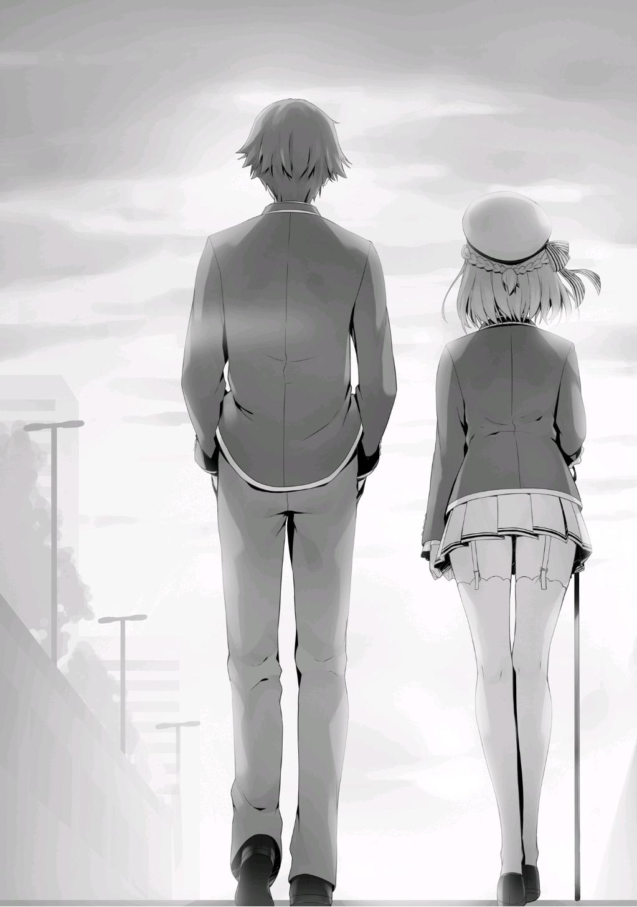
PALABRAS DEL AUTOR
Han pasado 4 meses. En este punto, se ha vuelto completamente costumbre lanzar un nuevo volumen cada 4 meses.
A pesar de la llegada de la era Reiwa, su Kinugasa todavía no ha cambiado.
El volumen 11 ha terminado. Esta vez hemos terminado la parte principal del arco de la historia del primer año. La ceremonia de clausura terminó sin problemas, pero antes de pasar al arco del segundo año, el siguiente volumen será sobre las vacaciones de primavera. El plan es que el próximo volumen se centre en cómo los estudiantes cambiaron durante todo el año, y cómo continuarán cambiando en el futuro.
También... puede haber o no algunos desarrollos románticos. Me pregunto cuál será.
De todos modos, como acabo de terminar la historia principal del arco de primer año, lo primero que tengo que decir es... ¡No hay suficientes páginas!
Originalmente quería que los volúmenes 10 y 11 fueran un volumen muy grande, pero eso es completamente imposible, ¿verdad?
Una vez que empiezas a escribir, las páginas siguen sumando. Había tantas cosas que ni siquiera cabían en estos dos volúmenes. Cada vez que empiezo a escribir un volumen pienso: "¿Cómo voy a llenar 300 páginas? ¿Cómo debo empezar?" Pero antes de darme cuenta, sólo quedan un puñado de páginas.
Siento que esto ha empezado a suceder cuanto más escribo...
Así que me gustaría escribir algunas historias populares que se trasladarán de este volumen para el volumen 11.5.
A partir de aquí, vamos a charlar un poco.
Rara vez conozco a gente que trabaje en la industria, pero cuando lo hago, me dicen: "No tengo ni idea de lo que haces todo el tiempo". Por favor, entra a las redes sociales!" Aunque había interactuado en el pasado por las actividades de los blogs, no me gustaba, o debería decir que no era bueno para hacer este tipo de cosas. Decidí dar las actualizaciones en las palabras finales, que para mí es lo más adecuado.
Normalmente estoy trabajando y a veces juego al golf. Ni siquiera voy al campo de golf (mis habilidades están por debajo de la media, es caro, y no tengo fuerza física). Sólo voy al campo de prácticas y golpeo las pelotas durante una hora más o menos y luego listo. Pero eso es suficiente para mí porque me deja satisfecho.
Incluso si tuviera redes sociales, probablemente sólo compartiría cosas aburridas como esa.
¡Bueno, incluso las palabras finales terminan con este tipo de contenido aburrido!
¡Volveré a verlos a todos la próxima vez!
HISTORIAS CORTAS
KARUIZAWA KEI
EL PRIMER REGALO
Había una pequeña caja que descansaba en mi mano. Era tan ligera, pero se sentía tan pesada.
Mi ritmo cardíaco se elevó como la marea alta. Fácilmente superaba los 120
latidos por minuto.
—Entonces, voy a confirmar algo, ¿te parece bien? —Pregunté.
Tratando de ocultar mi nerviosismo, miré a Kiyotaka. Pero no pude ver sus ojos.
Mi mirada parpadeó alrededor de su nariz disimulando que intentaba actuar como si lo estuviera mirando.
Estoy segura de que ahora me desmayaría al mirarlo directamente a los ojos.
Un regalo de cumpleaños y del día blanco de Kiyotaka.
Lo desenvolví cuidadosamente para que pudiera envolverlo de nuevo más tarde.
Entonces... abrí la tapa.
—¿Qué... qué es esto?
Antes de darme cuenta, grité mi primera impresión.
Un collar en forma de corazón que brillaba dorado.
—Es un collar.
—¡Sí, hasta yo puedo verlo! ¡Un regalo demasiado pesado! ¿sabes?
Quiero decir, ¿no es casi una confesión?
N-no, nunca se me han confesado, así que no puedo estar segura.
Pero, pero, estoy segura de que es un regalo que supera lo que los amigos se dan.
Recuerdo vagamente que dije muchas veces que él debía devolver el favor, pero eso fue sólo una pequeña broma.
—¿Pesado?
No estaba segura de si estar feliz o triste, este idiota parece que no tiene ni idea.
Aunque fuera intencional, eso significaría, bueno en otras palabras, que no es así. Imaginé una situación irreal, pero luego la llevé a lo más recóndito de mi mente.
—P-pero no le das un collar a una amiga, ¿sabes? —Primero tengo que decirle lo extraño que fue este regalo.
—Y, ¿y sabes? ¡Tampoco parece encajar conmigo! ¡Esto tiene forma de corazón! ¿Sabes?
Es cierto que no pensé que me quedaría bien, pero ese no era el gran problema.
Este era el tipo de cosa que frecuentemente hacía que las chicas lo malinterpretaran, ¿no es así? ¡Vamos, en serio!
—¡En forma de corazón! ¿sabes?
¡Pensé que tal vez se me estaba confesando para que aceptara mis sentimientos!
—Fuu, fuu. (TN: Sonido de resoplido y resoplido) Mis sentimientos explotaron sin que me diera cuenta, pero... seguramente es culpa mía. Debe haberlo comprado ya que pedí un regalo muy caro a cambio.
Escuchando los detalles completos más tarde, lo entendí. Era algo que él, que nunca había regalado nada a una chica, eligió sinceramente.
En otras palabras, su primer regalo.
Por supuesto que lo recibiré.
Aah, él me lo dio.
Pensé eso mientras yo misma me miraba, con el collar, en el espejo.
¿Llegaría un momento en que me pondría esto e iría con él a algún lugar? Ese sería definitivamente un día muy agradable.
De eso estaba segura.
SAKAYANAGI ARISU
EL MOMENTO DE HACERSE REALIDAD
En una sala de usos múltiples. Ayanokouji-kun y yo pasaremos un tiempo a solas. Los profesores empezaron a hablar entre ellos, así que deben estar haciendo las comprobaciones finales.
Los fuertes golpes en mi pecho me resultaban agradables. Cada vez que miraba a Ayanokouji-kun delante de mí, todo mi cuerpo se sentía acalorado, como si no quisiera mirar a otro lado.
Fufu, como una doncella enamorada, ¿no es así?
Me observé a mí misma como si fuera una espectadora, mientras me divertía de todo corazón.
Saboreemos este momento entablando una conversación antes de que empiece la competición. El tiempo que nos concedieron a él y a mí juntos es muy limitado.
—Por fin... por fin ha llegado este día. Ayer no pude dormir, así que hoy casi me quedo dormida.
Empecé a hablar seriamente de mi mañana. Tartamudeé un poco ya que era la primera vez que hablaba a solas con él. Parecía un poco preocupado pero me respondió.
—Aunque no recuerdo haberte hecho esperar. Mi encuentro contigo fue una coincidencia.
Era fácil pensar por qué tendría dudas sobre si era una coincidencia o no.
—¿Estás diciendo que si no hubieras entrado en esta escuela, nunca nos habríamos conocido?
El mundo es grande. Cierto, el hecho de que nos hayamos encontrado una vez más puede haber sido casi una coincidencia.
—Sin duda, el hecho de que nos hayamos encontrado en esta escuela fue una coincidencia. Sin embargo, estoy convencida de que volvería a encontrarme contigo algún día. Estaba destinado a ser, sí, destino.
Sí, no fue una coincidencia, fue inevitable.
—¿Destino? Eso es algo bastante abstracto.
Cierto, no había ninguna lógica en eso, sólo una corazonada. Pero... aquí estamos hablando, ¿verdad? Ayanokouji-kun.
Si esto no es el destino, ¿qué más dirías que es?
—Es porque también soy una doncella.
Pero probablemente no había necesidad de decir más que eso.
—Si no te matriculabas en esta escuela, eso sólo debería ser un retraso de 3 años. Tenía la confianza de que podía disimular mis expectativas en lo más profundo de mi corazón sin apresurarme.
Pero, no puedo contenerlas más. Inevitablemente, sentí que los días se volvían más largos sabiendo que estabas a mi lado. Quiero pelear, suprimir ese sentimiento ha sido bastante difícil. Esa es la magnitud de mi sueño.
Un ser querido. Pensaba en él como mi amigo de la infancia, aunque de forma egoísta. Por eso no pude detener las palabras desbordantes por voluntad propia.
Le hablaba sin parar, como si lo anhelara, un tema tras otro. Esa mirada tranquila que me dio y esas pupilas me dieron un placer aún mayor.
—¿No tienes miedo de despertar de ese sueño?
Nada es tan amable como un sueño. Cuando despiertas de ese sueño y vuelves a la realidad, esa felicidad desaparece en un momento. Luchar contra Ayanokouji-kun y perder, y luego desesperarse. O, ganar tan fácilmente que todo lo que queda es la decepción.
No podía pasar por alto la posibilidad de que eso sucediera.
Pero eso estaba bien.
—Porque los sueños son cosas de las que estás destinado a despertar.
Si pudiera encontrar una "respuesta", estaría satisfecha con eso.
—Normalmente, te pediría que... seas amable conmigo, pero...
Le perforé sus elusivas pupilas.
—Por favor, enfréntame con todo lo que tienes.
Definitivamente, aunque débilmente, lo confirmó con un asentimiento. Y al mismo tiempo, pude empezar a adivinar lo que tenía en mente. Lo que me impide disfrutar al máximo, su verdadera identidad.
—Sería una mentira decir que no tengo ningún sentimiento conflictivo sobre esto. Una prueba inadecuada como esta no será suficiente para probar nuestras habilidades. Nosotros los líderes estamos limitados a cómo podemos influir en el resultado, ¿verdad?
El punto principal de este examen era cómo la diferencia de habilidades entre las clases significaría la victoria o la derrota. La intervención de los líderes y las reglas de los eventos no son más que simples adornos. Por supuesto que habría clases que se abrirían paso a la fuerza, pero eso era una historia para otro momento.
—Dicho esto, si la influencia de los líderes es demasiado grande, llega otro problema. Creo que también debo considerar tu situación Ayanokouji-kun.
No quieres que tus compañeros de clase descubran tus verdaderas habilidades, ¿verdad?
Este examen especial tiene el significado de que es simplemente un duelo secreto entre Ayanokouji-kun y yo. Es sólo una extensión de un juego, jugado en secreto, desconocido para los profesores y otros estudiantes.
Por eso es comprensible por qué Ayanokouji-kun se ve tan desconfiado. No importa lo limitada que sea nuestra forma de luchar, estará bien siempre que sea justa por el día de hoy. Averiguar algo más o menos sería un lujo, así que es mejor no decirlo.
Los profesores se acercaron. El examen especial comenzará muy pronto.
—¡Cierto! ¡El examen comenzará pronto! ¡Vuelvan a sus asientos!
Después de escuchar lo que dijo Hoshinomiya-sensei, Ayanokouji y yo volvimos a nuestros asientos.
Ya no podía ver su cara, pero no había necesidad de desanimarse por eso.
Porque mientras estuviéramos en la misma habitación, podría intercambiar palabras con él en cualquier momento, tantas veces como quisiera.
—Mis mejores deseos, Ayanokouji-kun.
Le mandé un saludo en su dirección con una voz tan baja que nadie pudo oír.
Suprimí los latidos de mi corazón...
Y ahora, ha llegado el momento de que mis sueños se hagan realidad.
KUSHIDA KIKYOU
UNA PERSONA VERDADERAMENTE ATERRADORA
—Oye, ¿tienes algo de tiempo?
Estaba a punto de irme a casa cuando un chico detrás de mí me llamó. Ni siquiera tuve que darme la vuelta, es ese chico otra vez. Siempre está siguiendo a esa chica, una persona muy problemática.
—¿Qué pasa, Ayanokouji-kun?
Le sonreí y luego lentamente le devolví la mirada. No puedo mostrar ningún defecto en mi imagen en este pasillo de la escuela, en un espacio público.
—Ya veo, así que no vas a apoyarla esta vez.
Me preguntaba qué iba a decir ya que corrió detrás de mí... Me sentí exasperada por dentro, pero aun así me puse en guardia.
—¿Podemos hablar mientras caminamos?
—Está bien.
Este chico llamado Ayanokouji Kiyotaka-kun, toda su existencia es como una sombra incomprensible para mí.
—¿Tienes algún plan para hoy?
—Sí, estoy planeando reunirme con algunas chicas de la clase B. ¿Crees que divertirse considerando lo que está pasando ahora es considerado malo, no?
La primera vez que nos conocimos, sólo era un estudiante sin importancia. Era algo guapo, pero eso era todo. No era particularmente atlético o inteligente. Sólo una persona normal.
—No, es necesario tomar descansos. Creo que todo el mundo lo entiende.
Pero... fui demasiado ingenua.
Tal vez este chico, posee algo incluso más grande de lo que le juzgué. Como lo que está haciendo ahora, tratando de sacudirme señalando mis acciones una por una.
—Entonces, ¿entiendes la razón por la que no estoy haciendo nada ahora mismo? Pensé que estaba bien expulsarte y ayudé a Yamauchi con ello.
¿Qué cara crees que debo poner, qué actuación crees que puedo hacer para liderar la clase, después de que todo haya salido a la luz?
Estaba siendo honesta, explicándole por qué no podía hacer nada en mi situación.
—Parece que no aceptas eso, ¿verdad? Puedo verlo en tu cara...
—Bueno, sí.
Como era de esperar, no había forma de que aceptara sólo esta explicación,
¿verdad?
Aunque debería haber funcionado para cualquier otro idiota.
—Lo diré ahora, no es que no quiera ayudar a Horikita-san porque ella es la líder ahora, ¿de acuerdo?
Esa es la peor parte de esto, sin embargo...
—¿Es verdad?
Está dudando de mí, pero de ninguna manera lo reconoceré.
—De verdad, es verdad.
Pero este chico no cambió su expresión.
—Ah, lo dudo.
—Me pregunto cómo me veo para ti. ¿Qué te parece?
No estaba particularmente interesada, pero me llama la atención.
Quiero saber lo que este chico está pensando, lo que está sintiendo.
Si no... no podré expulsar a esa chica.
Por eso era inevitable que yo, apenas, le mostrara un poco de mi interior.
Si no lo hago... No creo que pueda ganar nunca.
Seguramente, este chico debe ser... una persona aterradora.
SAKAYANAGI ARISU
LA MAÑANA DE LA SATISFACCIÓN
Estaba profundamente dormida.
Las imágenes de mí misma cuando era más joven, y de él se proyectaban repetidamente en mi interior.
Un famoso museo de ese mundo. Hasta la exposición de objetos hechos para un espectáculo artístico, creo. Era esa grandeza, esa dulzura, y esa locura afectuosa.
En cierto sentido, eso era amor.
Hay muchos tipos de amor.
Amor, caridad, afecto... amor y odio.
Creo que siento todo eso hacia él.
—...3 horas y 36 minutos...
Cada vez que me despierto, siempre compruebo cuánto tiempo he dormido. Si no duermo durante 7 u 8 horas, no me siento renovada. Eso es porque anoche estaba tan emocionada que no pude dormir.
La almohada corporal que uso todos los días para reforzar mi sueño no funcionó mucho.
—Fufufu...
Dejé escapar una dulce risa antes de darme cuenta.
Nunca antes había experimentado el estar tan entusiasmada, así que no podía controlar mis sentimientos.
Cuanto más intentaba contener la risa, una sonrisa aparecía, tan naturalmente, en mi cara.
No puedo evitarlo.
Me expuse a la contradicción que habita en mi interior ahora mismo.
Una yo que nunca pierde ante nadie.
Un él que tal vez me enseñaría la derrota.
Sentimientos contradictorios chocaban, yendo y viniendo, sin que ninguno de los dos lados cediera.
Sin embargo, definitivamente habrá una conclusión.
En otras palabras, la superioridad y la inferioridad se decidirán.
Ah- qué hermoso es.
Abracé la almohada corporal con fuerza y una agradable somnolencia se apoderó de mí.
Ya estaba durmiendo, queriendo disfrutar de un apasionado baile con él.
Ese sueño mío fue interrumpido por los fríos sonidos del timbre de mi teléfono.
—¿Era Masumi...? Ella también es una preocupona, cierto.
Ya lo sé. Continuemos el resto de mi sueño más tarde esta noche.
Después de que lo haya arreglado con él, lo dejaré claro como el blanco y negro.
Tan como yo quiera.


VISÍTANOS EN NUESTROS
DIFERENTES SITIOS
http://gladheimtranslations.blogspot.mx/
https://twitter.com/GladheimT
https://mastodon.social/@GladheimT
Si alguien desea hacer una donación
https://ko-fi.com/gladheimtranslation
https://www.buymeacoffee.com/gladheimtls
https://patreon.com/GladheimT